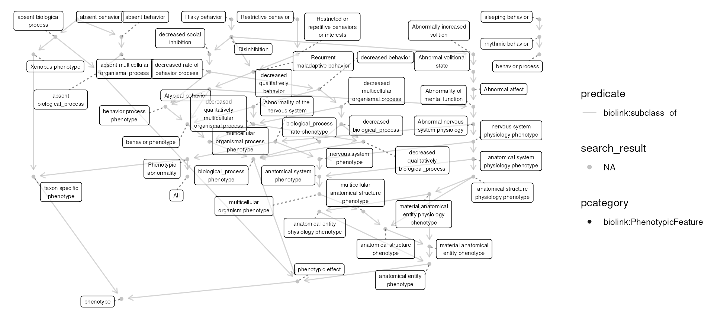

Categorizing Alzheimers Phenotypes
Shawn T O’Neil
Vignette updated: Dec-24-2024
Source:vignettes/examples/alzheimers_phenotypes.Rmd
alzheimers_phenotypes.RmdMotivation
This example explores the question: “what are the behavioral
phenotypes of Alzheimer’s disease”?1 As we’ll see, because Alzheimer’s is
associated with a variety of phenotypes of different kinds, we take an
exploratory approach that highlights the functionality provided by
monarchr and tidygraph.
Exploring Alzheimer’s
To start, we load monarchr, tidygraph, and
dplyr:
## Error in get(paste0(generic, ".", class), envir = get_method_env()) :
## object 'type_sum.accel' not foundLet’s start by finding the disease node for Alzheimer’s itself with
monarch_search(), which uses the Monarch search API:
alz_search <- monarch_search("Alzheimer's", limit = 5)
alz_searchGraph with 5 nodes and 0 edges. Expand sections below for details.
Node Data
Showing 5 of 5 nodes:
| id | pcategory | name | description | synonym (list) | category (list) | iri | xref (list) | namespace | provided_by (list) |
|---|---|---|---|---|---|---|---|---|---|
| “MONDO:0011743” | “biolink:Disease” | “Alzheimer disease 4” | “Alzheimer’s disease with an early onset (starts before the age of 65). It is caused by mutations in the PSEN2 gene.” | c(“AD4”, “Ad4”, “Alzheimer disease 4”, “Alzheimer disease familial type 4”, “Alzheimer disease type 4”, “Alzheimer disease, familial, 4”, “Alzheimer disease, familial4”, “Alzheimer disease-4”, “Alzheimer’s disease 4”, “Alzheimer’s disease type 4”, “familial Alzheimer disease, type 4”, “familial Alzheimer’s disease, type 4”) | c(“biolink:BiologicalEntity”, “biolink:Disease”, “biolink:DiseaseOrPhenotypicFeature”, “biolink:Entity”, “biolink:NamedThing”, “biolink:ThingWithTaxon”) | “http://purl.obolibrary.org/obo/MONDO_0011743” | c(“DOID:0110040”, “GARD:16511”, “MEDGEN:376072”, “MESH:C536596”, “NCIT:C123413”, “OMIM:606889”, “UMLS:C1847200”) | “MONDO” | “phenio_nodes” |
| “MONDO:0004975” | “biolink:Disease” | “Alzheimer disease” | “A progressive, neurodegenerative disease characterized by loss of function and death of nerve cells in several areas of the brain leading to loss of cognitive function such as memory and language.” | c(“AD”, “Alzheimer dementia”, “Alzheimer disease”, “Alzheimer disease, familial”, “Alzheimer’s dementia”, “Alzheimer’s disease”, “Alzheimers dementia”, “Alzheimers disease”, “presenile and senile dementia”) | c(“biolink:BiologicalEntity”, “biolink:Disease”, “biolink:DiseaseOrPhenotypicFeature”, “biolink:Entity”, “biolink:NamedThing”, “biolink:ThingWithTaxon”) | “http://purl.obolibrary.org/obo/MONDO_0004975” | c(“DOID:10652”, “HP:0002511”, “ICD10CM:G30”, “ICD9:290.1”, “ICD9:331.0”, “MEDGEN:1853”, “MESH:D000544”, “NCIT:C2866”, “NIFSTD:birnlex_2092”, “Orphanet:238616”, “SCTID:142811000119104”, “UMLS:C0002395”, “icd11.foundation:1611724421”) | “MONDO” | “phenio_nodes” |
| “MONDO:1011460” | “biolink:Disease” | “Alzheimer disease, degu” | “Alzheimer disease that occurs in degu.” | NA | c(“biolink:BiologicalEntity”, “biolink:Disease”, “biolink:DiseaseOrPhenotypicFeature”, “biolink:Entity”, “biolink:NamedThing”, “biolink:ThingWithTaxon”) | “http://purl.obolibrary.org/obo/MONDO_1011460” | “OMIA:000033-10160” | “MONDO” | “phenio_nodes” |
| “MONDO:1011461” | “biolink:Disease” | “Alzheimer disease, dog” | “Alzheimer disease that occurs in dog.” | NA | c(“biolink:BiologicalEntity”, “biolink:Disease”, “biolink:DiseaseOrPhenotypicFeature”, “biolink:Entity”, “biolink:NamedThing”, “biolink:ThingWithTaxon”) | “http://purl.obolibrary.org/obo/MONDO_1011461” | “OMIA:000033-9615” | “MONDO” | “phenio_nodes” |
| “MONDO:0010422” | “biolink:Disease” | “Alzheimer disease 16” | “An Alzheimer’s disease that is characterized by an associated with a risk allele in in the PCDH11X gene on chromosome Xq21.3.” | c(“AD16”, “Alzheimer disease 16”, “Alzheimer’s disease 16”, “Alzheimer’s disease type 16”) | c(“biolink:BiologicalEntity”, “biolink:Disease”, “biolink:DiseaseOrPhenotypicFeature”, “biolink:Entity”, “biolink:NamedThing”, “biolink:ThingWithTaxon”) | “http://purl.obolibrary.org/obo/MONDO_0010422” | c(“DOID:0110036”, “MEDGEN:394384”, “MESH:C567463”, “OMIM:300756”, “UMLS:C2677888”) | “MONDO” | “phenio_nodes” |
Edge Data
Showing 0 of 0 edges:
From these results we see that MONDO:0004975 is the ID
for the primary Alzheimer’s disease node (information also available on
the Monarch Initiative website).
We also see other types of Alzheimer’s, which appear to be distinct
subtypes.
Let’s fetch MONDO:0004975 and all of its transitive
subtypes. We’ll plot the result, specifying
layout = "sugiyama" (appropriate for directed acyclic
graphs such as this):
# get an engine to query the graph with
monarch <- monarch_engine()
alz_diseases <- monarch |>
fetch_nodes(query_ids = "MONDO:0004975") |>
expand(predicates = "biolink:subclass_of", direction = "in", transitive = TRUE)
plot(alz_diseases, layout = "sugiyama") Let’s also quickly fetch all of the phenotypes associated with any of
these; we’ll do so with
Let’s also quickly fetch all of the phenotypes associated with any of
these; we’ll do so with expand() specifying that we want
all connected biolink:PhenotypicFeature nodes.
alz_disease_phenos <- alz_diseases |>
expand(categories = "biolink:PhenotypicFeature")
plot(alz_disease_phenos, layout = "sugiyama")There are quite a number of phenotypes associated with Alzheimer’s or
its subtypes. Most of these are associated via the
biolink:has_phenotype predicate, but there’s also a few
biolink:has_mode_of_inheritance connections. Let’s explore
those using tidygraph’s filtering features:
Graph with 76 nodes and 7 edges. Expand sections below for details.
Node Data
Showing 76 of 76 nodes:
| id | pcategory | name | description | synonym (list) | category (list) | iri | xref (list) | namespace | provided_by (list) |
|---|---|---|---|---|---|---|---|---|---|
| “MONDO:0004975” | “biolink:Disease” | “Alzheimer disease” | “A progressive, neurodegenerative disease characterized by loss of function and death of nerve cells in several areas of the brain leading to loss of cognitive function such as memory and language.” | c(“AD”, “Alzheimer dementia”, “Alzheimer disease”, “Alzheimer disease, familial”, “Alzheimer’s dementia”, “Alzheimer’s disease”, “Alzheimers dementia”, “Alzheimers disease”, “presenile and senile dementia”) | c(“biolink:BiologicalEntity”, “biolink:Disease”, “biolink:DiseaseOrPhenotypicFeature”, “biolink:Entity”, “biolink:NamedThing”, “biolink:ThingWithTaxon”) | “http://purl.obolibrary.org/obo/MONDO_0004975” | c(“DOID:10652”, “HP:0002511”, “ICD10CM:G30”, “ICD9:290.1”, “ICD9:331.0”, “MEDGEN:1853”, “MESH:D000544”, “NCIT:C2866”, “NIFSTD:birnlex_2092”, “Orphanet:238616”, “SCTID:142811000119104”, “UMLS:C0002395”, “icd11.foundation:1611724421”) | “MONDO” | “phenio_nodes” |
| “MONDO:0015140” | “biolink:Disease” | “early-onset autosomal dominant Alzheimer disease” | “A progressive dementia with reduction of cognitive functions. It presents the same phenotype as sporadic Alzheimer disease (AD) but has an early age of onset, usually before 60 years old.” | c(“EOFAD”, “early-onset familial autosomal dominant Alzheimer disease”, “early-onset, autosomal dominant Alzheimer disease”) | c(“biolink:BiologicalEntity”, “biolink:Disease”, “biolink:DiseaseOrPhenotypicFeature”, “biolink:Entity”, “biolink:NamedThing”, “biolink:ThingWithTaxon”) | “http://purl.obolibrary.org/obo/MONDO_0015140” | c(“GARD:12798”, “Orphanet:1020”) | “MONDO” | “phenio_nodes” |
| “MONDO:0007088” | “biolink:Disease” | “Alzheimer disease type 1” | NA | c(“AD”, “AD1”, “Alzheimer disease”, “Alzheimer disease 1”, “Alzheimer disease 1, familial”, “Alzheimer disease, early-onset, with cerebral amyloid angiopathy”, “Alzheimer disease, familial, 1”, “Alzheimer disease, late-onset, susceptibility to”, “Alzheimer disease, protection against”, “Alzheimer disease, susceptibility to”, “early-onset familial form of Alzheimer disease”, “presenile and senile dementia”) | c(“biolink:BiologicalEntity”, “biolink:Disease”, “biolink:DiseaseOrPhenotypicFeature”, “biolink:Entity”, “biolink:NamedThing”, “biolink:ThingWithTaxon”) | “http://purl.obolibrary.org/obo/MONDO_0007088” | c(“DECIPHER:48”, “DOID:0080348”, “GARD:9465”, “MEDGEN:354892”, “MESH:C536594”, “OMIM:104300”, “UMLS:C1863052”) | “MONDO” | “phenio_nodes” |
| “MONDO:0011743” | “biolink:Disease” | “Alzheimer disease 4” | “Alzheimer’s disease with an early onset (starts before the age of 65). It is caused by mutations in the PSEN2 gene.” | c(“AD4”, “Ad4”, “Alzheimer disease 4”, “Alzheimer disease familial type 4”, “Alzheimer disease type 4”, “Alzheimer disease, familial, 4”, “Alzheimer disease, familial4”, “Alzheimer disease-4”, “Alzheimer’s disease 4”, “Alzheimer’s disease type 4”, “familial Alzheimer disease, type 4”, “familial Alzheimer’s disease, type 4”) | c(“biolink:BiologicalEntity”, “biolink:Disease”, “biolink:DiseaseOrPhenotypicFeature”, “biolink:Entity”, “biolink:NamedThing”, “biolink:ThingWithTaxon”) | “http://purl.obolibrary.org/obo/MONDO_0011743” | c(“DOID:0110040”, “GARD:16511”, “MEDGEN:376072”, “MESH:C536596”, “NCIT:C123413”, “OMIM:606889”, “UMLS:C1847200”) | “MONDO” | “phenio_nodes” |
| “MONDO:0007089” | “biolink:Disease” | “Alzheimer disease 2” | “An Alzheimer’s disease that is characterized by an association of the apolipoprotein E E4 allele.” | c(“AD2”, “Alzheimer disease 2”, “Alzheimer disease 2, late onset”, “Alzheimer disease 2, late-onset”, “Alzheimer disease associated with APOE E4”, “Alzheimer disease associated with APOE4”, “Alzheimer disease type 2”, “Alzheimer disease-2”, “Alzheimer’s disease 2”, “Alzheimer’s disease type 2”, “LOFAD”, “late onset Alzheimer disease”, “late onset familial Alzheimer disease”, “late-onset familial alzheimer disease”) | c(“biolink:BiologicalEntity”, “biolink:Disease”, “biolink:DiseaseOrPhenotypicFeature”, “biolink:Entity”, “biolink:NamedThing”, “biolink:ThingWithTaxon”) | “http://purl.obolibrary.org/obo/MONDO_0007089” | c(“DOID:0110035”, “GARD:12799”, “MEDGEN:400197”, “MESH:C536595”, “OMIM:104310”, “UMLS:C1863051”) | “MONDO” | “phenio_nodes” |
| “MONDO:0100087” | “biolink:Disease” | “familial Alzheimer disease” | “A degenerative disease of the brain that causes gradual loss of memory, judgment, and the ability to function socially. About 25% of all Alzheimer disease is familial (more than 2 people in a family have AD). When Alzheimer disease begins before 60 or 65 years of age (early-onset AD) about 60% of the cases are familial (also known as Early-onset familial AD). These cases appear to be inherited in an autosomal dominant manner.” | c(“Alzheimer disease, familial”, “FAD”, “GARD:0000632”) | c(“biolink:BiologicalEntity”, “biolink:Disease”, “biolink:DiseaseOrPhenotypicFeature”, “biolink:Entity”, “biolink:NamedThing”, “biolink:ThingWithTaxon”) | “http://purl.obolibrary.org/obo/MONDO_0100087” | c(“MEDGEN:82914”, “UMLS:C0276496”) | “MONDO” | “phenio_nodes” |
| “MONDO:0014265” | “biolink:Disease” | “Alzheimer disease 18” | “Any Alzheimer disease in which the cause of the disease is a mutation in the ADAM10 gene.” | c(“AD18”, “ADAM10 Alzheimer disease”, “Alzheimer disease 18”, “Alzheimer disease 18, late-onset”, “Alzheimer disease 18, susceptibility to”, “Alzheimer disease caused by mutation in ADAM10”, “Alzheimer disease type 18”, “Alzheimer’s disease 18”, “Alzheimer’s disease type 18”) | c(“biolink:BiologicalEntity”, “biolink:Disease”, “biolink:DiseaseOrPhenotypicFeature”, “biolink:Entity”, “biolink:NamedThing”, “biolink:ThingWithTaxon”) | “http://purl.obolibrary.org/obo/MONDO_0014265” | c(“DOID:0110050”, “MEDGEN:816371”, “OMIM:615590”, “UMLS:C3810041”) | “MONDO” | “phenio_nodes” |
| “MONDO:0011913” | “biolink:Disease” | “Alzheimer disease 3” | “Alzheimer’s disease with an early onset (starts before the age of 65). It is caused by mutations in the PSEN1 gene.” | c(“AD”, “AD3”, “Alzheimer disease 3”, “Alzheimer disease 3, early onset”, “Alzheimer disease 3, early-onset”, “Alzheimer disease early onset type 3”, “Alzheimer disease familial 3”, “Alzheimer disease type 3”, “Alzheimer disease, familial, 3”, “Alzheimer disease, familial, 3, with spastic paraparesis and apraxia”, “Alzheimer disease, familial, 3, with spastic paraparesis and unusual plaques”, “Alzheimer disease, protection against, due to APOE3-Christchurch”, “Alzheimer disease, type 3”, “Alzheimer disease, type 3, with spastic paraparesis and apraxia”, “Alzheimer disease, type 3, with spastic paraparesis and unusual plaques”, “Alzheimer’s disease 3”, “Alzheimer’s disease type 3”, “PSEN1 early-onset autosomal dominant Alzheimer disease”, “early-onset autosomal dominant Alzheimer disease caused by mutation in PSEN1”, “familial Alzheimer disease, type 3”, “familial Alzheimer’s disease, type 3”) | c(“biolink:BiologicalEntity”, “biolink:Disease”, “biolink:DiseaseOrPhenotypicFeature”, “biolink:Entity”, “biolink:NamedThing”, “biolink:ThingWithTaxon”) | “http://purl.obolibrary.org/obo/MONDO_0011913” | c(“DOID:0110042”, “GARD:16513”, “MEDGEN:334304”, “MESH:C536598”, “NCIT:C123412”, “OMIM:607822”, “UMLS:C1843013”) | “MONDO” | “phenio_nodes” |
| “MONDO:0011194” | “biolink:Disease” | “Alzheimer disease 5” | NA | c(“AD5”, “Ad5”, “Alzheimer disease 5”, “Alzheimer disease type 5”, “Alzheimer disease, familial 5”, “Alzheimer disease, familial, 5”, “Alzheimer disease-5”, “Alzheimer’s disease 5”, “Alzheimer’s disease type 5”) | c(“biolink:BiologicalEntity”, “biolink:Disease”, “biolink:DiseaseOrPhenotypicFeature”, “biolink:Entity”, “biolink:NamedThing”, “biolink:ThingWithTaxon”) | “http://purl.obolibrary.org/obo/MONDO_0011194” | c(“DOID:0110037”, “GARD:16507”, “MEDGEN:356103”, “MESH:C566578”, “OMIM:602096”, “UMLS:C1865868”) | “MONDO” | “phenio_nodes” |
| “MONDO:0011401” | “biolink:Disease” | “Alzheimer disease without neurofibrillary tangles” | NA | c(“AD15”, “Alzheimer disease 15”, “Alzheimer disease without neurofibrillary tangles”, “Alzheimer disease-15”, “Alzheimer’s disease 15”, “Alzheimer’s disease type 15”, “Alzheimer’s disease without neurofibrillary tangles”) | c(“biolink:BiologicalEntity”, “biolink:Disease”, “biolink:DiseaseOrPhenotypicFeature”, “biolink:Entity”, “biolink:NamedThing”, “biolink:ThingWithTaxon”) | “http://purl.obolibrary.org/obo/MONDO_0011401” | c(“DOID:0110048”, “GARD:7190”, “MEDGEN:346983”, “MESH:C536599”, “MESH:C566998”, “OMIM:604154”, “OMIM:611155”, “UMLS:C1858751”) | “MONDO” | “phenio_nodes” |
| “MONDO:0011513” | “biolink:Disease” | “Alzheimer disease, familial early-onset, with coexisting amyloid and prion pathology” | NA | “Alzheimer disease, familial early-onset, with coexisting amyloid and prion pathology” | c(“biolink:BiologicalEntity”, “biolink:Disease”, “biolink:DiseaseOrPhenotypicFeature”, “biolink:Entity”, “biolink:NamedThing”, “biolink:ThingWithTaxon”) | “http://purl.obolibrary.org/obo/MONDO_0011513” | c(“GARD:16508”, “MEDGEN:341884”, “MESH:C565728”, “OMIM:605055”, “UMLS:C1857933”) | “MONDO” | “phenio_nodes” |
| “MONDO:0011561” | “biolink:Disease” | “Alzheimer disease 6” | “An Alzheimer’s disease that is characterized by an associated with variation in the region 10q24.” | c(“AD6”, “Alzheimer disease 6”, “Alzheimer disease 6, late onset”, “Alzheimer disease 6, late-onset”, “Alzheimer disease type 6”, “Alzheimer’s disease 6”, “Alzheimer’s disease type 6”, “plasma Beta-amyloid-42 level quantitative trait locus”) | c(“biolink:BiologicalEntity”, “biolink:Disease”, “biolink:DiseaseOrPhenotypicFeature”, “biolink:Entity”, “biolink:NamedThing”, “biolink:ThingWithTaxon”) | “http://purl.obolibrary.org/obo/MONDO_0011561” | c(“DOID:0110038”, “GARD:16509”, “MEDGEN:381362”, “MESH:C565325”, “OMIM:605526”, “UMLS:C1854187”) | “MONDO” | “phenio_nodes” |
| “MONDO:0011647” | “biolink:Disease” | “Alzheimer disease 7” | “An Alzheimer’s disease that is characterized by an associated with variation in the region 10p13.” | c(“AD7”, “Ad7”, “Alzheimer disease 7”, “Alzheimer disease type 7”, “Alzheimer disease, familial 7”, “Alzheimer disease, familial, 7”, “Alzheimer disease-7”, “Alzheimer’s disease 7”, “Alzheimer’s disease type 7”) | c(“biolink:BiologicalEntity”, “biolink:Disease”, “biolink:DiseaseOrPhenotypicFeature”, “biolink:Entity”, “biolink:NamedThing”, “biolink:ThingWithTaxon”) | “http://purl.obolibrary.org/obo/MONDO_0011647” | c(“DOID:0110039”, “GARD:16510”, “MEDGEN:342907”, “MESH:C565251”, “OMIM:606187”, “UMLS:C1853555”) | “MONDO” | “phenio_nodes” |
| “MONDO:0011777” | “biolink:Disease” | “Alzheimer disease 8” | “An Alzheimer’s disease that is characterized by an associated with variation in the region 20p12.2-q11.21.” | c(“AD8”, “Ad8”, “Alzheimer disease 8”, “Alzheimer disease type 8”, “Alzheimer disease, familial 8”, “Alzheimer disease, familial, 8”, “Alzheimer’s disease 8”, “Alzheimer’s disease type 8”) | c(“biolink:BiologicalEntity”, “biolink:Disease”, “biolink:DiseaseOrPhenotypicFeature”, “biolink:Entity”, “biolink:NamedThing”, “biolink:ThingWithTaxon”) | “http://purl.obolibrary.org/obo/MONDO_0011777” | c(“DOID:0110041”, “GARD:16512”, “MEDGEN:375956”, “MESH:C564622”, “OMIM:607116”, “UMLS:C1846735”) | “MONDO” | “phenio_nodes” |
| “MONDO:0012321” | “biolink:Disease” | “Alzheimer disease 10” | “An Alzheimer’s disease that is characterized by an associated with variation in the region 7q36.” | c(“AD10”, “Ad10”, “Alzheimer disease 10”, “Alzheimer disease familial 10”, “Alzheimer disease type 10”, “Alzheimer disease, familial, 10”, “Alzheimer disease-10”, “Alzheimer’s disease 10”, “Alzheimer’s disease type 10”) | c(“biolink:BiologicalEntity”, “biolink:Disease”, “biolink:DiseaseOrPhenotypicFeature”, “biolink:Entity”, “biolink:NamedThing”, “biolink:ThingWithTaxon”) | “http://purl.obolibrary.org/obo/MONDO_0012321” | c(“DOID:0110043”, “GARD:16514”, “MEDGEN:351228”, “MESH:C566465”, “OMIM:609636”, “UMLS:C1864828”) | “MONDO” | “phenio_nodes” |
| “MONDO:0012344” | “biolink:Disease” | “Alzheimer disease 11” | “An Alzheimer’s disease that is characterized by an associated with variation in the region 9p22.1.” | c(“AD11”, “Ad11”, “Alzheimer disease 11”, “Alzheimer disease type 11”, “Alzheimer disease, familial, 11”, “Alzheimer disease-11”, “Alzheimer’s disease 11”, “Alzheimer’s disease type 11”) | c(“biolink:BiologicalEntity”, “biolink:Disease”, “biolink:DiseaseOrPhenotypicFeature”, “biolink:Entity”, “biolink:NamedThing”, “biolink:ThingWithTaxon”) | “http://purl.obolibrary.org/obo/MONDO_0012344” | c(“DOID:0110044”, “GARD:16515”, “MEDGEN:377886”, “MESH:C565228”, “OMIM:609790”, “UMLS:C1853360”) | “MONDO” | “phenio_nodes” |
| “MONDO:0012609” | “biolink:Disease” | “Alzheimer disease 12” | “An Alzheimer’s disease that is characterized by an associated with variation in the region 8p12-q22.” | c(“AD12”, “Ad12”, “Alzheimer disease 12”, “Alzheimer disease familial 12”, “Alzheimer disease type 12”, “Alzheimer disease, familial, 12”, “Alzheimer’s disease 12”, “Alzheimer’s disease type 12”) | c(“biolink:BiologicalEntity”, “biolink:Disease”, “biolink:DiseaseOrPhenotypicFeature”, “biolink:Entity”, “biolink:NamedThing”, “biolink:ThingWithTaxon”) | “http://purl.obolibrary.org/obo/MONDO_0012609” | c(“DOID:0110045”, “GARD:16516”, “MEDGEN:410013”, “MESH:C567022”, “OMIM:611073”, “UMLS:C1970209”) | “MONDO” | “phenio_nodes” |
| “MONDO:0012630” | “biolink:Disease” | “Alzheimer disease 13” | “An Alzheimer’s disease that is characterized by an associated with variation in the region 1q21.” | c(“AD13”, “Alzheimer disease 13”, “Alzheimer disease-13”, “Alzheimer’s disease 13”, “Alzheimer’s disease type 13”) | c(“biolink:BiologicalEntity”, “biolink:Disease”, “biolink:DiseaseOrPhenotypicFeature”, “biolink:Entity”, “biolink:NamedThing”, “biolink:ThingWithTaxon”) | “http://purl.obolibrary.org/obo/MONDO_0012630” | c(“DOID:0110046”, “GARD:16517”, “MEDGEN:370835”, “MESH:C567000”, “OMIM:611152”, “UMLS:C1970147”) | “MONDO” | “phenio_nodes” |
| “MONDO:0012631” | “biolink:Disease” | “Alzheimer disease 14” | “An Alzheimer’s disease that is characterized by an associated with variation in the region 1q25.” | c(“AD14”, “Alzheimer disease 14”, “Alzheimer disease-14”, “Alzheimer’s disease 14”, “Alzheimer’s disease type 14”) | c(“biolink:BiologicalEntity”, “biolink:Disease”, “biolink:DiseaseOrPhenotypicFeature”, “biolink:Entity”, “biolink:NamedThing”, “biolink:ThingWithTaxon”) | “http://purl.obolibrary.org/obo/MONDO_0012631” | c(“DOID:0110047”, “GARD:16518”, “MEDGEN:369666”, “MESH:C566999”, “OMIM:611154”, “UMLS:C1970144”) | “MONDO” | “phenio_nodes” |
| “MONDO:0014036” | “biolink:Disease” | “Alzheimer disease 17” | “An Alzheimer’s disease that is characterized by an associated with mutations in the gene TREM2.” | c(“AD17”, “Alzheimer disease 17”, “Alzheimer disease 17, late onset”, “Alzheimer disease 17, late-onset”, “Alzheimer’s disease 17”, “Alzheimer’s disease type 17”) | c(“biolink:BiologicalEntity”, “biolink:Disease”, “biolink:DiseaseOrPhenotypicFeature”, “biolink:Entity”, “biolink:NamedThing”, “biolink:ThingWithTaxon”) | “http://purl.obolibrary.org/obo/MONDO_0014036” | c(“DOID:0110049”, “MEDGEN:767366”, “OMIM:615080”, “UMLS:C3554452”) | “MONDO” | “phenio_nodes” |
| “MONDO:0014316” | “biolink:Disease” | “Alzheimer disease 19” | “Any Alzheimer disease in which the cause of the disease is a mutation in the PLD3 gene.” | c(“AD19”, “Alzheimer disease 19”, “Alzheimer disease 19 late onset”, “Alzheimer disease 19, late-onset”, “Alzheimer disease caused by mutation in PLD3”, “Alzheimer disease type 19”, “Alzheimer’s disease 19”, “Alzheimer’s disease type 19”, “PLD3 Alzheimer disease”) | c(“biolink:BiologicalEntity”, “biolink:Disease”, “biolink:DiseaseOrPhenotypicFeature”, “biolink:Entity”, “biolink:NamedThing”, “biolink:ThingWithTaxon”) | “http://purl.obolibrary.org/obo/MONDO_0014316” | c(“DOID:0110051”, “MEDGEN:816679”, “OMIM:615711”, “UMLS:C3810349”) | “MONDO” | “phenio_nodes” |
| “MONDO:0010422” | “biolink:Disease” | “Alzheimer disease 16” | “An Alzheimer’s disease that is characterized by an associated with a risk allele in in the PCDH11X gene on chromosome Xq21.3.” | c(“AD16”, “Alzheimer disease 16”, “Alzheimer’s disease 16”, “Alzheimer’s disease type 16”) | c(“biolink:BiologicalEntity”, “biolink:Disease”, “biolink:DiseaseOrPhenotypicFeature”, “biolink:Entity”, “biolink:NamedThing”, “biolink:ThingWithTaxon”) | “http://purl.obolibrary.org/obo/MONDO_0010422” | c(“DOID:0110036”, “MEDGEN:394384”, “MESH:C567463”, “OMIM:300756”, “UMLS:C2677888”) | “MONDO” | “phenio_nodes” |
| “HP:0001300” | “biolink:PhenotypicFeature” | “Parkinsonism” | “Characteristic neurologic anomaly resulting from degeneration of dopamine-generating cells in the substantia nigra, a region of the midbrain, characterized clinically by shaking, rigidity, slowness of movement and difficulty with walking and gait.” | “Parkinsonian disease” | c(“biolink:BiologicalEntity”, “biolink:DiseaseOrPhenotypicFeature”, “biolink:Entity”, “biolink:NamedThing”, “biolink:PhenotypicFeature”, “biolink:ThingWithTaxon”) | “http://purl.obolibrary.org/obo/HP_0001300” | c(“SNOMEDCT_US:32798002”, “UMLS:C0242422”) | “HP” | “phenio_nodes” |
| “HP:0000726” | “biolink:PhenotypicFeature” | “Dementia” | “A loss of global cognitive ability of sufficient amount to interfere with normal social or occupational function. Dementia represents a loss of previously present cognitive abilities, generally in adults, and can affect memory, thinking, language, judgment, and behavior.” | c(“Dementia”, “Dementia, progressive”, “Progressive dementia”) | c(“biolink:BiologicalEntity”, “biolink:DiseaseOrPhenotypicFeature”, “biolink:Entity”, “biolink:NamedThing”, “biolink:PhenotypicFeature”, “biolink:ThingWithTaxon”) | “http://purl.obolibrary.org/obo/HP_0000726” | c(“SNOMEDCT_US:52448006”, “UMLS:C0497327”) | “HP” | “phenio_nodes” |
| “HP:0002185” | “biolink:PhenotypicFeature” | “Neurofibrillary tangles” | “Pathological protein aggregates formed by hyperphosphorylation of a microtubule-associated protein known as tau, causing it to aggregate in an insoluble form.” | c(“Neurofibrillary tangles composed of disordered microtubules in neurons”, “Paired helical filaments”) | c(“biolink:BiologicalEntity”, “biolink:DiseaseOrPhenotypicFeature”, “biolink:Entity”, “biolink:NamedThing”, “biolink:PhenotypicFeature”, “biolink:ThingWithTaxon”) | “http://purl.obolibrary.org/obo/HP_0002185” | c(“SNOMEDCT_US:85775002”, “UMLS:C0085400”) | “HP” | “phenio_nodes” |
| “HP:0410054” | “biolink:PhenotypicFeature” | “Decreased circulating GABA concentration” | “A decrease in the level of GABA in the serum.” | c(“Decreased circulating gamma-aminobutyric acid concentration”, “Decreased level of gamma-aminobutyric acid in serum”) | c(“biolink:BiologicalEntity”, “biolink:DiseaseOrPhenotypicFeature”, “biolink:Entity”, “biolink:NamedThing”, “biolink:PhenotypicFeature”, “biolink:ThingWithTaxon”) | “http://purl.obolibrary.org/obo/HP_0410054” | NA | “HP” | “phenio_nodes” |
| “HP:0002423” | “biolink:PhenotypicFeature” | “Long-tract signs” | “Long-tract signs refer to symptoms that are attributable to the involvement of the long fiber tracts in the spinal cord, which connect the spinal cord to the brain and mediate spinal and motor functions.” | “Long tract signs” | c(“biolink:BiologicalEntity”, “biolink:DiseaseOrPhenotypicFeature”, “biolink:Entity”, “biolink:NamedThing”, “biolink:PhenotypicFeature”, “biolink:ThingWithTaxon”) | “http://purl.obolibrary.org/obo/HP_0002423” | “UMLS:C1865903” | “HP” | “phenio_nodes” |
| “HP:0002511” | “biolink:PhenotypicFeature” | “Alzheimer disease” | “A degenerative disease of the brain characterized by the insidious onset of dementia. Impairment of memory, judgment, attention span, and problem solving skills are followed by severe apraxia and a global loss of cognitive abilities. The condition primarily occurs after age 60, and is marked pathologically by severe cortical atrophy and the triad of senile plaques, neurofibrillary tangles, and neuropil threads.” | c(“Alzheimer disease”, “Late-onset form of familial Alzheimer disease”) | c(“biolink:BiologicalEntity”, “biolink:DiseaseOrPhenotypicFeature”, “biolink:Entity”, “biolink:NamedThing”, “biolink:PhenotypicFeature”, “biolink:ThingWithTaxon”) | “http://purl.obolibrary.org/obo/HP_0002511” | c(“DOID:10652”, “MONDO:0004975”, “SNOMEDCT_US:230267005”, “SNOMEDCT_US:26929004”, “UMLS:C0002395”, “UMLS:C1863051”) | “HP” | “phenio_nodes” |
| “HP:0006979” | “biolink:PhenotypicFeature” | “Sleep-wake cycle disturbance” | “Any abnormality of an individual’s circadian rhythm that affects the timing of sleeping and being awake is referred to as a sleep-wake disorder.” | c(“Internal-clock disorders”, “Sleep phase disturbance”, “Sleep-wake cycle disorders”, “Sleep-wake cycle disturbance”) | c(“biolink:BiologicalEntity”, “biolink:DiseaseOrPhenotypicFeature”, “biolink:Entity”, “biolink:NamedThing”, “biolink:PhenotypicFeature”, “biolink:ThingWithTaxon”) | “http://purl.obolibrary.org/obo/HP_0006979” | “UMLS:C1833362” | “HP” | “phenio_nodes” |
| “HP:0001289” | “biolink:PhenotypicFeature” | “Confusion” | “Lack of clarity and coherence of thought, perception, understanding, or action.” | c(“Confusion”, “Disorientation”, “Easily confused”, “Mental disorientation”) | c(“biolink:BiologicalEntity”, “biolink:DiseaseOrPhenotypicFeature”, “biolink:Entity”, “biolink:NamedThing”, “biolink:PhenotypicFeature”, “biolink:ThingWithTaxon”) | “http://purl.obolibrary.org/obo/HP_0001289” | c(“SNOMEDCT_US:286933003”, “UMLS:C0009676”) | “HP” | “phenio_nodes” |
| “HP:0002354” | “biolink:PhenotypicFeature” | “Memory impairment” | “An impairment of memory as manifested by a reduced ability to remember things such as dates and names, and increased forgetfulness.” | c(“Forgetfulness”, “Memory impairment”, “Memory loss”, “Memory problems”, “Poor memory”) | c(“biolink:BiologicalEntity”, “biolink:DiseaseOrPhenotypicFeature”, “biolink:Entity”, “biolink:NamedThing”, “biolink:PhenotypicFeature”, “biolink:ThingWithTaxon”) | “http://purl.obolibrary.org/obo/HP_0002354” | c(“SNOMEDCT_US:386807006”, “SNOMEDCT_US:55533009”, “UMLS:C0233794”, “UMLS:C0542476”, “UMLS:C0751295”) | “HP” | “phenio_nodes” |
| “HP:0002197” | “biolink:PhenotypicFeature” | “Generalized-onset seizure” | “A generalized-onset seizure is a type of seizure originating at some point within, and rapidly engaging, bilaterally distributed networks. The networks may include cortical and subcortical structures but not necessarily the entire cortex.” | c(“Generalised onset seizure”, “Generalised seizures”, “Generalised-onset seizure”, “Generalized onset seizure”, “Generalized seizures”, “Generalized-onset seizures”, “Primary generalised seizure”, “Primary generalized seizure”) | c(“biolink:BiologicalEntity”, “biolink:DiseaseOrPhenotypicFeature”, “biolink:Entity”, “biolink:NamedThing”, “biolink:PhenotypicFeature”, “biolink:ThingWithTaxon”) | “http://purl.obolibrary.org/obo/HP_0002197” | c(“SNOMEDCT_US:246545002”, “UMLS:C0234533”, “UMLS:C1833488”) | “HP” | “phenio_nodes” |
| “HP:0002186” | “biolink:PhenotypicFeature” | “Apraxia” | “A defect in the understanding of complex motor commands and in the execution of certain learned movements, i.e., deficits in the cognitive components of learned movements.” | “Apraxias” | c(“biolink:BiologicalEntity”, “biolink:DiseaseOrPhenotypicFeature”, “biolink:Entity”, “biolink:NamedThing”, “biolink:PhenotypicFeature”, “biolink:ThingWithTaxon”) | “http://purl.obolibrary.org/obo/HP_0002186” | c(“SNOMEDCT_US:68345001”, “SNOMEDCT_US:6950007”, “UMLS:C0003635”) | “HP” | “phenio_nodes” |
| “HP:0030784” | “biolink:PhenotypicFeature” | “Anomic aphasia” | “An inability to name people and objects that are correctly perceived. The individual is able to describe the object in question, but cannot provide the name.” | c(“Amnesic aphasia”, “Amnestic aphasia”, “Anomia”, “Nominal aphasia”, “Word-finding difficulty”) | c(“biolink:BiologicalEntity”, “biolink:DiseaseOrPhenotypicFeature”, “biolink:Entity”, “biolink:NamedThing”, “biolink:PhenotypicFeature”, “biolink:ThingWithTaxon”) | “http://purl.obolibrary.org/obo/HP_0030784” | c(“SNOMEDCT_US:10325006”, “UMLS:C0003113”) | “HP” | “phenio_nodes” |
| “HP:0031058” | “biolink:PhenotypicFeature” | “Impairment of activities of daily living” | “Difficulty in performing one or more activities normally performed every day, such as eating, bathing, dressing, grooming, work, homemaking, and leisure.” | NA | c(“biolink:BiologicalEntity”, “biolink:DiseaseOrPhenotypicFeature”, “biolink:Entity”, “biolink:NamedThing”, “biolink:PhenotypicFeature”, “biolink:ThingWithTaxon”) | “http://purl.obolibrary.org/obo/HP_0031058” | NA | “HP” | “phenio_nodes” |
| “HP:0100256” | “biolink:PhenotypicFeature” | “Senile plaques” | “Senile plaques are extracellular deposits of amyloid in the gray matter of the brain.” | c(“Braindruse”, “Neuritic plaques”, “Senile druse”) | c(“biolink:BiologicalEntity”, “biolink:DiseaseOrPhenotypicFeature”, “biolink:Entity”, “biolink:NamedThing”, “biolink:PhenotypicFeature”, “biolink:ThingWithTaxon”) | “http://purl.obolibrary.org/obo/HP_0100256” | c(“SNOMEDCT_US:38551001”, “UMLS:C0333463”) | “HP” | “phenio_nodes” |
| “HP:0012662” | “biolink:PhenotypicFeature” | “Parietal hypometabolism in FDG PET” | “Reduced uptake of [18F]-fluorodeoxyglucose (FDG) in the parietal cortex as measured by positron emission tomography (PET) brain scan.” | NA | c(“biolink:BiologicalEntity”, “biolink:DiseaseOrPhenotypicFeature”, “biolink:Entity”, “biolink:NamedThing”, “biolink:PhenotypicFeature”, “biolink:ThingWithTaxon”) | “http://purl.obolibrary.org/obo/HP_0012662” | “UMLS:C4022794” | “HP” | “phenio_nodes” |
| “HP:0100543” | “biolink:PhenotypicFeature” | “Cognitive impairment” | “Abnormal cognition is characterized by deficits in thinking, reasoning, or remembering.” | c(“Abnormality of cognition”, “Cognitive abnormality”, “Cognitive defects”, “Cognitive deficits”, “Cognitive impairment”, “Intellectual impairment”) | c(“biolink:BiologicalEntity”, “biolink:DiseaseOrPhenotypicFeature”, “biolink:Entity”, “biolink:NamedThing”, “biolink:PhenotypicFeature”, “biolink:ThingWithTaxon”) | “http://purl.obolibrary.org/obo/HP_0100543” | c(“SNOMEDCT_US:386806002”, “UMLS:C0338656”, “UMLS:C0683322”) | “HP” | “phenio_nodes” |
| “HP:0011970” | “biolink:PhenotypicFeature” | “Cerebral amyloid angiopathy” | “Amyloid deposition in the walls of leptomeningeal and cortical arteries, arterioles, and less often capillaries and veins of the central nervous system.” | NA | c(“biolink:BiologicalEntity”, “biolink:DiseaseOrPhenotypicFeature”, “biolink:Entity”, “biolink:NamedThing”, “biolink:PhenotypicFeature”, “biolink:ThingWithTaxon”) | “http://purl.obolibrary.org/obo/HP_0011970” | c(“SNOMEDCT_US:230724001”, “UMLS:C0085220”) | “HP” | “phenio_nodes” |
| “HP:0000718” | “biolink:PhenotypicFeature” | “Aggressive behavior” | “Behavior or an act aimed at harming a person, animal, or physical property (e.g., acts of physical violence; shouting, swearing, and using harsh language; slashing someone’s tires).” | c(“Aggression”, “Aggressive behavior”, “Aggressiveness”, “physical aggression”) | c(“biolink:BiologicalEntity”, “biolink:DiseaseOrPhenotypicFeature”, “biolink:Entity”, “biolink:NamedThing”, “biolink:PhenotypicFeature”, “biolink:ThingWithTaxon”) | “http://purl.obolibrary.org/obo/HP_0000718” | c(“SNOMEDCT_US:248004009”, “SNOMEDCT_US:61372001”, “UMLS:C0001807”, “UMLS:C0424323”, “UMLS:C1457883”) | “HP” | “phenio_nodes” |
| “HP:0007112” | “biolink:PhenotypicFeature” | “Temporal cortical atrophy” | “Atrophy of the temporal cortex.” | NA | c(“biolink:BiologicalEntity”, “biolink:DiseaseOrPhenotypicFeature”, “biolink:Entity”, “biolink:NamedThing”, “biolink:PhenotypicFeature”, “biolink:ThingWithTaxon”) | “http://purl.obolibrary.org/obo/HP_0007112” | “UMLS:C4024936” | “HP” | “phenio_nodes” |
| “HP:0000741” | “biolink:PhenotypicFeature” | “Apathy” | “Apathy is a quantitative reduction of interest, motivation and the initiation and persistence of goal-directed behavior, where often the accompanying emotions, thoughts, and social interactions are also diminished. The individual is typically non-reactive to provocations, positive or negative, and appears to not care. Distinguished from lethargy which involves lack of physical or mental energy.” | c(“Lack of feeling, emotion, interest”, “Lack of feeling, emotion, interest, motivation, initiation”, “State of indifference”) | c(“biolink:BiologicalEntity”, “biolink:DiseaseOrPhenotypicFeature”, “biolink:Entity”, “biolink:NamedThing”, “biolink:PhenotypicFeature”, “biolink:ThingWithTaxon”) | “http://purl.obolibrary.org/obo/HP_0000741” | c(“SNOMEDCT_US:20602000”, “UMLS:C0085632”) | “HP” | “phenio_nodes” |
| “HP:0001336” | “biolink:PhenotypicFeature” | “Myoclonus” | “Very brief, involuntary random muscular contractions occurring at rest, in response to sensory stimuli, or accompanying voluntary movements.” | c(“Involuntary jerking movements”, “Jerking”, “Myoclonic jerks”) | c(“biolink:BiologicalEntity”, “biolink:DiseaseOrPhenotypicFeature”, “biolink:Entity”, “biolink:NamedThing”, “biolink:PhenotypicFeature”, “biolink:ThingWithTaxon”) | “http://purl.obolibrary.org/obo/HP_0001336” | c(“SNOMEDCT_US:127324008”, “SNOMEDCT_US:17450006”, “UMLS:C0027066”, “UMLS:C1854302”) | “HP” | “phenio_nodes” |
| “HP:0000006” | “biolink:PhenotypicFeature” | “Autosomal dominant inheritance” | “A mode of inheritance that is observed for traits related to a gene encoded on one of the autosomes (i.e., the human chromosomes 1-22) in which a trait manifests in heterozygotes. In the context of medical genetics, an autosomal dominant disorder is caused when a single copy of the mutant allele is present. Males and females are affected equally, and can both transmit the disorder with a risk of 50% for each child of inheriting the mutant allele.” | c(“Autosomal dominant”, “Autosomal dominant form”, “Autosomal dominant type”, “monoallelic_autosomal”) | c(“biolink:BiologicalEntity”, “biolink:DiseaseOrPhenotypicFeature”, “biolink:Entity”, “biolink:NamedThing”, “biolink:PhenotypicFeature”, “biolink:ThingWithTaxon”) | “http://purl.obolibrary.org/obo/HP_0000006” | c(“SNOMEDCT_US:263681008”, “UMLS:C0443147”) | “HP” | “phenio_nodes” |
| “HP:0002015” | “biolink:PhenotypicFeature” | “Dysphagia” | “Difficulty in swallowing.” | c(“Deglutition disorder”, “Difficulty swallowing”, “Poor swallowing”, “Swallowing difficulties”, “Swallowing difficulty”) | c(“biolink:BiologicalEntity”, “biolink:DiseaseOrPhenotypicFeature”, “biolink:Entity”, “biolink:NamedThing”, “biolink:PhenotypicFeature”, “biolink:ThingWithTaxon”) | “http://purl.obolibrary.org/obo/HP_0002015” | c(“MEDDRA:10013950”, “SNOMEDCT_US:288939007”, “SNOMEDCT_US:40739000”, “UMLS:C0011168”) | “HP” | “phenio_nodes” |
| “HP:0031868” | “biolink:PhenotypicFeature” | “Optic ataxia” | “Difficulty reaching visually guided goals in peripheral vision, with the deficit, leaves voluntary eye movements largely unaffected.” | NA | c(“biolink:BiologicalEntity”, “biolink:DiseaseOrPhenotypicFeature”, “biolink:Entity”, “biolink:NamedThing”, “biolink:PhenotypicFeature”, “biolink:ThingWithTaxon”) | “http://purl.obolibrary.org/obo/HP_0031868” | NA | “HP” | “phenio_nodes” |
| “HP:0001288” | “biolink:PhenotypicFeature” | “Gait disturbance” | “The term gait disturbance can refer to any disruption of the ability to walk.” | c(“Abnormal gait”, “Abnormal walk”, “Difficulty in walking”, “Gait abnormalities”, “Gait difficulties”, “Gait disturbances”, “Impaired gait”, “Walking disability”) | c(“biolink:BiologicalEntity”, “biolink:DiseaseOrPhenotypicFeature”, “biolink:Entity”, “biolink:NamedThing”, “biolink:PhenotypicFeature”, “biolink:ThingWithTaxon”) | “http://purl.obolibrary.org/obo/HP_0001288” | c(“SNOMEDCT_US:22325002”, “UMLS:C0575081”) | “HP” | “phenio_nodes” |
| “HP:0001332” | “biolink:PhenotypicFeature” | “Dystonia” | “An abnormally increased muscular tone that causes fixed abnormal postures. There is a slow, intermittent twisting motion that leads to exaggerated turning and posture of the extremities and trunk.” | c(“Dystonic disease”, “Dystonic movements”) | c(“biolink:BiologicalEntity”, “biolink:DiseaseOrPhenotypicFeature”, “biolink:Entity”, “biolink:NamedThing”, “biolink:PhenotypicFeature”, “biolink:ThingWithTaxon”) | “http://purl.obolibrary.org/obo/HP_0001332” | c(“UMLS:C0013421”, “UMLS:C4020871”) | “HP” | “phenio_nodes” |
| “HP:0003487” | “biolink:PhenotypicFeature” | “Babinski sign” | “Upturning of the big toe (and sometimes fanning of the other toes) in response to stimulation of the sole of the foot. If the Babinski sign is present it can indicate damage to the corticospinal tract.” | c(“Extensor plantar reflexes”, “Extensor plantar response”, “Extensor plantar responses”, “Positive Babinski sign”) | c(“biolink:BiologicalEntity”, “biolink:DiseaseOrPhenotypicFeature”, “biolink:Entity”, “biolink:NamedThing”, “biolink:PhenotypicFeature”, “biolink:ThingWithTaxon”) | “http://purl.obolibrary.org/obo/HP_0003487” | c(“SNOMEDCT_US:246586009”, “SNOMEDCT_US:366575004”, “UMLS:C0034935”) | “HP” | “phenio_nodes” |
| “HP:0001250” | “biolink:PhenotypicFeature” | “Seizure” | “A seizure is an intermittent abnormality of nervous system physiology characterized by a transient occurrence of signs and/or symptoms due to abnormal excessive or synchronous neuronal activity in the brain.” | c(“Epilepsy”, “Epileptic seizure”, “Seizures”) | c(“biolink:BiologicalEntity”, “biolink:DiseaseOrPhenotypicFeature”, “biolink:Entity”, “biolink:NamedThing”, “biolink:PhenotypicFeature”, “biolink:ThingWithTaxon”) | “http://purl.obolibrary.org/obo/HP_0001250” | c(“SNOMEDCT_US:128613002”, “SNOMEDCT_US:246545002”, “SNOMEDCT_US:313307000”, “SNOMEDCT_US:84757009”, “SNOMEDCT_US:91175000”, “UMLS:C0014544”, “UMLS:C0036572”) | “HP” | “phenio_nodes” |
| “HP:0002120” | “biolink:PhenotypicFeature” | “Cerebral cortical atrophy” | “Atrophy of the cortex of the cerebrum.” | c(“Cerebral cortex atrophy”, “Cortical atrophy”, “Decrease in size of the outer layer of the brain due to loss of brain cells”) | c(“biolink:BiologicalEntity”, “biolink:DiseaseOrPhenotypicFeature”, “biolink:Entity”, “biolink:NamedThing”, “biolink:PhenotypicFeature”, “biolink:ThingWithTaxon”) | “http://purl.obolibrary.org/obo/HP_0002120” | c(“SNOMEDCT_US:278849000”, “UMLS:C0235946”) | “HP” | “phenio_nodes” |
| “HP:0002395” | “biolink:PhenotypicFeature” | “Lower limb hyperreflexia” | NA | c(“Brisk lower extremity reflexes”, “Hyperreflexia in lower limbs”, “Hyperreflexia in the lower limbs”, “Increased deep tendon reflexes in the lower limbs”, “Leg hyperreflexia”, “Overactive lower leg reflex”) | c(“biolink:BiologicalEntity”, “biolink:DiseaseOrPhenotypicFeature”, “biolink:Entity”, “biolink:NamedThing”, “biolink:PhenotypicFeature”, “biolink:ThingWithTaxon”) | “http://purl.obolibrary.org/obo/HP_0002395” | “UMLS:C1836696” | “HP” | “phenio_nodes” |
| “HP:0001260” | “biolink:PhenotypicFeature” | “Dysarthria” | “Dysarthric speech is a general description referring to a neurological speech disorder characterized by poor articulation. Depending on the involved neurological structures, dysarthria may be further classified as spastic, flaccid, ataxic, hyperkinetic and hypokinetic, or mixed.” | c(“Difficulty articulating speech”, “Dysarthric speech”) | c(“biolink:BiologicalEntity”, “biolink:DiseaseOrPhenotypicFeature”, “biolink:Entity”, “biolink:NamedThing”, “biolink:PhenotypicFeature”, “biolink:ThingWithTaxon”) | “http://purl.obolibrary.org/obo/HP_0001260” | c(“SNOMEDCT_US:8011004”, “UMLS:C0013362”) | “HP” | “phenio_nodes” |
| “HP:0001285” | “biolink:PhenotypicFeature” | “Spastic tetraparesis” | “Spastic weakness affecting all four limbs.” | “Spastic quadriparesis” | c(“biolink:BiologicalEntity”, “biolink:DiseaseOrPhenotypicFeature”, “biolink:Entity”, “biolink:NamedThing”, “biolink:PhenotypicFeature”, “biolink:ThingWithTaxon”) | “http://purl.obolibrary.org/obo/HP_0001285” | c(“SNOMEDCT_US:298282001”, “UMLS:C0575059”) | “HP” | “phenio_nodes” |
| “HP:0002071” | “biolink:PhenotypicFeature” | “Abnormality of extrapyramidal motor function” | “A neurological condition related to lesions of the basal ganglia leading to typical abnormalities including akinesia (inability to initiate changes in activity and perform volitional movements rapidly and easily), muscular rigidity (continuous contraction of muscles with constant resistance to passive movement), chorea (widespread arrhythmic movements of a forcible, rapid, jerky, and restless nature), athetosis (inability to sustain the muscles of the fingers, toes, or other group of muscles in a fixed position), and akathisia (inability to remain motionless).” | c(“Extrapyramidal dysfunction”, “Extrapyramidal signs”, “Extrapyramidal symptoms”, “Extrapyramidal syndrome”, “Extrapyramidal tract signs”) | c(“biolink:BiologicalEntity”, “biolink:DiseaseOrPhenotypicFeature”, “biolink:Entity”, “biolink:NamedThing”, “biolink:PhenotypicFeature”, “biolink:ThingWithTaxon”) | “http://purl.obolibrary.org/obo/HP_0002071” | c(“SNOMEDCT_US:43378000”, “SNOMEDCT_US:76349003”, “UMLS:C0015371”, “UMLS:C0234133”) | “HP” | “phenio_nodes” |
| “HP:0010524” | “biolink:PhenotypicFeature” | “Disturbed sensory perception” | “Alteration or impairment in the processing or interpretation of sensory information can lead to abnormal perceptions or experiences.” | “Agnosia” | c(“biolink:BiologicalEntity”, “biolink:DiseaseOrPhenotypicFeature”, “biolink:Entity”, “biolink:NamedThing”, “biolink:PhenotypicFeature”, “biolink:ThingWithTaxon”) | “http://purl.obolibrary.org/obo/HP_0010524” | c(“SNOMEDCT_US:42341009”, “UMLS:C0001816”) | “HP” | “phenio_nodes” |
| “HP:0000751” | “biolink:PhenotypicFeature” | “Personality changes” | “An abnormal shift in patterns of thinking, acting, or feeling.” | c(“Personality change”, “Personality changes”) | c(“biolink:BiologicalEntity”, “biolink:DiseaseOrPhenotypicFeature”, “biolink:Entity”, “biolink:NamedThing”, “biolink:PhenotypicFeature”, “biolink:ThingWithTaxon”) | “http://purl.obolibrary.org/obo/HP_0000751” | c(“SNOMEDCT_US:102943000”, “SNOMEDCT_US:192073007”, “UMLS:C0240735”) | “HP” | “phenio_nodes” |
| “HP:0000713” | “biolink:PhenotypicFeature” | “Agitation” | “A state of excessive motor activity that is associated with mental distress or a feeling of substantial unease or inner tension. Distinguished from restlessness by the increased level of emotional distress and negative intensity of the experience. Agitation has a significant level of physical activity that is typically threatening to the self or others.” | “Psychomotor agitation” | c(“biolink:BiologicalEntity”, “biolink:DiseaseOrPhenotypicFeature”, “biolink:Entity”, “biolink:NamedThing”, “biolink:PhenotypicFeature”, “biolink:ThingWithTaxon”) | “http://purl.obolibrary.org/obo/HP_0000713” | c(“SNOMEDCT_US:24199005”, “UMLS:C0085631”) | “HP” | “phenio_nodes” |
| “HP:0000738” | “biolink:PhenotypicFeature” | “Hallucinations” | “Perceptions in a conscious and awake state that, in the absence of external stimuli, have qualities of real perception. These perceptions are vivid, substantial, and located in external objective space.” | c(“Hallucination”, “Hallucinations”, “Sensory hallucination”) | c(“biolink:BiologicalEntity”, “biolink:DiseaseOrPhenotypicFeature”, “biolink:Entity”, “biolink:NamedThing”, “biolink:PhenotypicFeature”, “biolink:ThingWithTaxon”) | “http://purl.obolibrary.org/obo/HP_0000738” | c(“SNOMEDCT_US:7011001”, “UMLS:C0018524”, “UMLS:C0235153”) | “HP” | “phenio_nodes” |
| “HP:0001276” | “biolink:PhenotypicFeature” | “Hypertonia” | “A condition in which there is increased muscle tone so that arms or legs, for example, are stiff and difficult to move.” | c(“Hypertonicity”, “Increased muscle tone”, “Muscle hypertonia”, “Spasticity and rigidity of muscles”) | c(“biolink:BiologicalEntity”, “biolink:DiseaseOrPhenotypicFeature”, “biolink:Entity”, “biolink:NamedThing”, “biolink:PhenotypicFeature”, “biolink:ThingWithTaxon”) | “http://purl.obolibrary.org/obo/HP_0001276” | c(“SNOMEDCT_US:41581000”, “SNOMEDCT_US:56731001”, “UMLS:C0026826”) | “HP” | “phenio_nodes” |
| “HP:0002463” | “biolink:PhenotypicFeature” | “Language impairment” | “Language impairment is a deficit in comprehension or production of language that includes reduced vocabulary, limited sentence structure, or impairments in written or spoken communication. Language abilities are substantially and quantifiably below age expectations.” | “Language disorder” | c(“biolink:BiologicalEntity”, “biolink:DiseaseOrPhenotypicFeature”, “biolink:Entity”, “biolink:NamedThing”, “biolink:PhenotypicFeature”, “biolink:ThingWithTaxon”) | “http://purl.obolibrary.org/obo/HP_0002463” | c(“SNOMEDCT_US:62305002”, “UMLS:C0023015”) | “HP” | “phenio_nodes” |
| “HP:0003791” | “biolink:PhenotypicFeature” | “Deposits immunoreactive to beta-amyloid protein” | NA | NA | c(“biolink:BiologicalEntity”, “biolink:DiseaseOrPhenotypicFeature”, “biolink:Entity”, “biolink:NamedThing”, “biolink:PhenotypicFeature”, “biolink:ThingWithTaxon”) | “http://purl.obolibrary.org/obo/HP_0003791” | “UMLS:C1853934” | “HP” | “phenio_nodes” |
| “HP:0012433” | “biolink:PhenotypicFeature” | “Abnormal social behavior” | “An abnormality of actions or reactions of a person taking place during interactions with others.” | c(“Abnormal social behavior”, “Abnormal social interactions”) | c(“biolink:BiologicalEntity”, “biolink:DiseaseOrPhenotypicFeature”, “biolink:Entity”, “biolink:NamedThing”, “biolink:PhenotypicFeature”, “biolink:ThingWithTaxon”) | “http://purl.obolibrary.org/obo/HP_0012433” | c(“UMLS:C4020726”, “UMLS:C4021087”) | “HP” | “phenio_nodes” |
| “HP:0012759” | “biolink:PhenotypicFeature” | “Neurodevelopmental abnormality” | “A deviation from normal of the neurological development of a child, which may include any or all of the aspects of the development of personal, social, gross or fine motor, and cognitive abilities.” | NA | c(“biolink:BiologicalEntity”, “biolink:DiseaseOrPhenotypicFeature”, “biolink:Entity”, “biolink:NamedThing”, “biolink:PhenotypicFeature”, “biolink:ThingWithTaxon”) | “http://purl.obolibrary.org/obo/HP_0012759” | “UMLS:C4022737” | “HP” | “phenio_nodes” |
| “HP:0000734” | “biolink:PhenotypicFeature” | “Disinhibition” | “Reduced ability to control, or a failure to resist a temptation, urge, or impulse. Examples include disregard for social conventions, general impulsivity, and poor risk assessment.” | c(“Impulse control disorders”, “Self-control”) | c(“biolink:BiologicalEntity”, “biolink:DiseaseOrPhenotypicFeature”, “biolink:Entity”, “biolink:NamedThing”, “biolink:PhenotypicFeature”, “biolink:ThingWithTaxon”) | “http://purl.obolibrary.org/obo/HP_0000734” | c(“SNOMEDCT_US:247977003”, “UMLS:C0424296”) | “HP” | “phenio_nodes” |
| “HP:0000504” | “biolink:PhenotypicFeature” | “Abnormality of vision” | “Abnormality of eyesight (visual perception).” | c(“Abnormality of sight”, “Abnormality of vision”, “Vision issue”) | c(“biolink:BiologicalEntity”, “biolink:DiseaseOrPhenotypicFeature”, “biolink:Entity”, “biolink:NamedThing”, “biolink:PhenotypicFeature”, “biolink:ThingWithTaxon”) | “http://purl.obolibrary.org/obo/HP_0000504” | “UMLS:C4025846” | “HP” | “phenio_nodes” |
| “HP:0000657” | “biolink:PhenotypicFeature” | “Oculomotor apraxia” | “Ocular motor apraxia is a deficiency in voluntary, horizontal, lateral, fast eye movements (saccades) with retention of slow pursuit movements. The inability to follow objects visually is often compensated by head movements. There may be decreased smooth pursuit, and cancelation of the vestibulo-ocular reflex.” | c(“Defective or absent horizontal voluntary eye movements”, “Ocular motor apraxia”) | c(“biolink:BiologicalEntity”, “biolink:DiseaseOrPhenotypicFeature”, “biolink:Entity”, “biolink:NamedThing”, “biolink:PhenotypicFeature”, “biolink:ThingWithTaxon”) | “http://purl.obolibrary.org/obo/HP_0000657” | c(“SNOMEDCT_US:193662007”, “UMLS:C3489733”, “UMLS:C4020886”) | “HP” | “phenio_nodes” |
| “HP:0001249” | “biolink:PhenotypicFeature” | “Intellectual disability” | “Intellectual disability, previously referred to as mental retardation, is characterized by subnormal intellectual functioning that occurs during the developmental period. It is defined by an IQ score below 70.” | c(“Dull intelligence”, “Intellectual disability”, “Low intelligence”, “Mental deficiency”, “Mental retardation”, “Mental retardation, nonspecific”, “Mental-retardation”, “Nonprogressive intellectual disability”, “Nonprogressive mental retardation”, “Poor school performance”) | c(“biolink:BiologicalEntity”, “biolink:DiseaseOrPhenotypicFeature”, “biolink:Entity”, “biolink:NamedThing”, “biolink:PhenotypicFeature”, “biolink:ThingWithTaxon”) | “http://purl.obolibrary.org/obo/HP_0001249” | c(“SNOMEDCT_US:228156007”, “SNOMEDCT_US:247578003”, “SNOMEDCT_US:91138005”, “UMLS:C0025362”, “UMLS:C0423903”, “UMLS:C0917816”, “UMLS:C1843367”, “UMLS:C3714756”, “UMLS:C4020876”) | “HP” | “phenio_nodes” |
| “HP:0001251” | “biolink:PhenotypicFeature” | “Ataxia” | “Cerebellar ataxia refers to ataxia due to dysfunction of the cerebellum. This causes a variety of elementary neurological deficits including asynergy (lack of coordination between muscles, limbs and joints), dysmetria (lack of ability to judge distances that can lead to under- or overshoot in grasping movements), and dysdiadochokinesia (inability to perform rapid movements requiring antagonizing muscle groups to be switched on and off repeatedly).” | “Cerebellar ataxia” | c(“biolink:BiologicalEntity”, “biolink:DiseaseOrPhenotypicFeature”, “biolink:Entity”, “biolink:NamedThing”, “biolink:PhenotypicFeature”, “biolink:ThingWithTaxon”) | “http://purl.obolibrary.org/obo/HP_0001251” | c(“SNOMEDCT_US:85102008”, “UMLS:C0007758”) | “HP” | “phenio_nodes” |
| “HP:0002381” | “biolink:PhenotypicFeature” | “Aphasia” | “An acquired language impairment of some or all of the abilities to produce or comprehend speech and to read or write.” | c(“Difficulty finding words”, “Losing words”, “Loss of words”) | c(“biolink:BiologicalEntity”, “biolink:DiseaseOrPhenotypicFeature”, “biolink:Entity”, “biolink:NamedThing”, “biolink:PhenotypicFeature”, “biolink:ThingWithTaxon”) | “http://purl.obolibrary.org/obo/HP_0002381” | c(“SNOMEDCT_US:87486003”, “UMLS:C0003537”) | “HP” | “phenio_nodes” |
| “HP:0010525” | “biolink:PhenotypicFeature” | “Finger agnosia” | “The examiner identified the inability to name, move, or touch specific fingers.” | NA | c(“biolink:BiologicalEntity”, “biolink:DiseaseOrPhenotypicFeature”, “biolink:Entity”, “biolink:NamedThing”, “biolink:PhenotypicFeature”, “biolink:ThingWithTaxon”) | “http://purl.obolibrary.org/obo/HP_0010525” | c(“SNOMEDCT_US:3449007”, “UMLS:C0234509”) | “HP” | “phenio_nodes” |
| “HP:0010526” | “biolink:PhenotypicFeature” | “Dysgraphia” | “A writing disability in the absence of motor or sensory deficits of the upper extremities, resulting in an impairment in the ability to write regardless of the ability to read and not due to intellectual impairment.” | “Agraphia” | c(“biolink:BiologicalEntity”, “biolink:DiseaseOrPhenotypicFeature”, “biolink:Entity”, “biolink:NamedThing”, “biolink:PhenotypicFeature”, “biolink:ThingWithTaxon”) | “http://purl.obolibrary.org/obo/HP_0010526” | c(“SNOMEDCT_US:88278002”, “UMLS:C0234144”) | “HP” | “phenio_nodes” |
| “HP:0011446” | “biolink:PhenotypicFeature” | “Abnormality of mental function” | “Cognitive, psychiatric, or memory anomaly.” | “Abnormality of higher mental function” | c(“biolink:BiologicalEntity”, “biolink:DiseaseOrPhenotypicFeature”, “biolink:Entity”, “biolink:NamedThing”, “biolink:PhenotypicFeature”, “biolink:ThingWithTaxon”) | “http://purl.obolibrary.org/obo/HP_0011446” | “UMLS:C4023352” | “HP” | “phenio_nodes” |
| “HP:0030219” | “biolink:PhenotypicFeature” | “Semantic dementia” | “A progressive loss of the ability to remember the meaning of words, faces and objects.” | “Trouble remembering words” | c(“biolink:BiologicalEntity”, “biolink:DiseaseOrPhenotypicFeature”, “biolink:Entity”, “biolink:NamedThing”, “biolink:PhenotypicFeature”, “biolink:ThingWithTaxon”) | “http://purl.obolibrary.org/obo/HP_0030219” | c(“SNOMEDCT_US:230288001”, “UMLS:C0338462”) | “HP” | “phenio_nodes” |
| “HP:0006790” | “biolink:PhenotypicFeature” | “Cerebral cortex with spongiform changes” | NA | NA | c(“biolink:BiologicalEntity”, “biolink:DiseaseOrPhenotypicFeature”, “biolink:Entity”, “biolink:NamedThing”, “biolink:PhenotypicFeature”, “biolink:ThingWithTaxon”) | “http://purl.obolibrary.org/obo/HP_0006790” | “UMLS:C1857934” | “HP” | “phenio_nodes” |
| “HP:0002167” | “biolink:PhenotypicFeature” | “Abnormal speech pattern” | “An abnormality in the sound (volume) or cadence (rate) of speech.” | c(“Abnormal speech”, “Abnormal vocalisation”, “Abnormal vocalization”, “Abnormality of speech or vocalization”) | c(“biolink:BiologicalEntity”, “biolink:DiseaseOrPhenotypicFeature”, “biolink:Entity”, “biolink:NamedThing”, “biolink:PhenotypicFeature”, “biolink:ThingWithTaxon”) | “http://purl.obolibrary.org/obo/HP_0002167” | “UMLS:C0037822” | “HP” | “phenio_nodes” |
Edge Data
Showing 7 of 7 edges:
| from | to | subject | predicate | object | agent_type | knowledge_level | knowledge_source | primary_knowledge_source | aggregator_knowledge_source (list) | provided_by (list) | id | category (list) | negated | original_subject | has_evidence (list) | publications (list) | has_total | has_quotient | has_count | has_percentage | onset_qualifier | frequency_qualifier |
|---|---|---|---|---|---|---|---|---|---|---|---|---|---|---|---|---|---|---|---|---|---|---|
| 3 | 44 | “MONDO:0007088” | “biolink:has_mode_of_inheritance” | “HP:0000006” | “manual_agent” | “knowledge_assertion” | “monarch-kg_edges.jsonl” | “infores:hpo-annotations” | “infores:monarchinitiative” | “hpoa_disease_mode_of_inheritance_edges” | “uuid:cab0cdfd-8b41-11ef-b621-6045bdbae67e” | c(“biolink:Association”, “biolink:DiseaseOrPhenotypicFeatureToEntityAssociationMixin”, “biolink:DiseaseOrPhenotypicFeatureToGeneticInheritanceAssociation”, “biolink:Entity”) | NA | “OMIM:104300” | “ECO:0000304” | “OMIM:104300” | NA | NA | NA | NA | NA | NA |
| 4 | 44 | “MONDO:0011743” | “biolink:has_mode_of_inheritance” | “HP:0000006” | “manual_agent” | “knowledge_assertion” | “monarch-kg_edges.jsonl” | “infores:hpo-annotations” | “infores:monarchinitiative” | “hpoa_disease_mode_of_inheritance_edges” | “uuid:caea4b87-8b41-11ef-b621-6045bdbae67e” | c(“biolink:Association”, “biolink:DiseaseOrPhenotypicFeatureToEntityAssociationMixin”, “biolink:DiseaseOrPhenotypicFeatureToGeneticInheritanceAssociation”, “biolink:Entity”) | NA | “OMIM:606889” | “ECO:0006017” | “PMID:9007102” | NA | NA | NA | NA | NA | NA |
| 5 | 44 | “MONDO:0007089” | “biolink:has_mode_of_inheritance” | “HP:0000006” | “manual_agent” | “knowledge_assertion” | “monarch-kg_edges.jsonl” | “infores:hpo-annotations” | “infores:monarchinitiative” | “hpoa_disease_mode_of_inheritance_edges” | “uuid:cab0d188-8b41-11ef-b621-6045bdbae67e” | c(“biolink:Association”, “biolink:DiseaseOrPhenotypicFeatureToEntityAssociationMixin”, “biolink:DiseaseOrPhenotypicFeatureToGeneticInheritanceAssociation”, “biolink:Entity”) | NA | “OMIM:104310” | “ECO:0000304” | “OMIM:104310” | NA | NA | NA | NA | NA | NA |
| 8 | 44 | “MONDO:0011913” | “biolink:has_mode_of_inheritance” | “HP:0000006” | “manual_agent” | “knowledge_assertion” | “monarch-kg_edges.jsonl” | “infores:hpo-annotations” | “infores:monarchinitiative” | “hpoa_disease_mode_of_inheritance_edges” | “uuid:caea4b2d-8b41-11ef-b621-6045bdbae67e” | c(“biolink:Association”, “biolink:DiseaseOrPhenotypicFeatureToEntityAssociationMixin”, “biolink:DiseaseOrPhenotypicFeatureToGeneticInheritanceAssociation”, “biolink:Entity”) | NA | “OMIM:607822” | “ECO:0000501” | “OMIM:607822” | NA | NA | NA | NA | NA | NA |
| 9 | 44 | “MONDO:0011194” | “biolink:has_mode_of_inheritance” | “HP:0000006” | “manual_agent” | “knowledge_assertion” | “monarch-kg_edges.jsonl” | “infores:hpo-annotations” | “infores:monarchinitiative” | “hpoa_disease_mode_of_inheritance_edges” | “uuid:caea4914-8b41-11ef-b621-6045bdbae67e” | c(“biolink:Association”, “biolink:DiseaseOrPhenotypicFeatureToEntityAssociationMixin”, “biolink:DiseaseOrPhenotypicFeatureToGeneticInheritanceAssociation”, “biolink:Entity”) | NA | “OMIM:602096” | “ECO:0000501” | “OMIM:602096” | NA | NA | NA | NA | NA | NA |
| 11 | 44 | “MONDO:0011513” | “biolink:has_mode_of_inheritance” | “HP:0000006” | “manual_agent” | “knowledge_assertion” | “monarch-kg_edges.jsonl” | “infores:hpo-annotations” | “infores:monarchinitiative” | “hpoa_disease_mode_of_inheritance_edges” | “uuid:cab0d1d4-8b41-11ef-b621-6045bdbae67e” | c(“biolink:Association”, “biolink:DiseaseOrPhenotypicFeatureToEntityAssociationMixin”, “biolink:DiseaseOrPhenotypicFeatureToGeneticInheritanceAssociation”, “biolink:Entity”) | NA | “OMIM:605055” | “ECO:0000501” | “OMIM:605055” | NA | NA | NA | NA | NA | NA |
| 15 | 44 | “MONDO:0012321” | “biolink:has_mode_of_inheritance” | “HP:0000006” | “manual_agent” | “knowledge_assertion” | “monarch-kg_edges.jsonl” | “infores:hpo-annotations” | “infores:monarchinitiative” | “hpoa_disease_mode_of_inheritance_edges” | “uuid:ca86aff2-8b41-11ef-b621-6045bdbae67e” | c(“biolink:Association”, “biolink:DiseaseOrPhenotypicFeatureToEntityAssociationMixin”, “biolink:DiseaseOrPhenotypicFeatureToGeneticInheritanceAssociation”, “biolink:Entity”) | NA | “OMIM:609636” | “ECO:0000501” | “OMIM:609636” | NA | NA | NA | NA | NA | NA |
Reviewing the resulting edges, the connected phenotype is
HP:0000006, “Autosomal dominant inheritance”. Instead of
finding all connected phenotypes, we can redefine our query to fetch
nodes connected specifically by biolink:has_phenotype
edges.
alz_disease_phenos <- alz_diseases |>
expand(predicates = "biolink:has_phenotype")
plot(alz_disease_phenos, layout = "sugiyama")
Exploring Behavioral Phenotypes
Next, let’s look for behavior-related phenotypes.
behavior_search <- monarch_search("behavior", category = "biolink:PhenotypicFeature", limit = 5)
behavior_searchGraph with 5 nodes and 0 edges. Expand sections below for details.
Node Data
Showing 5 of 5 nodes:
| id | pcategory | name | description | synonym (list) | category (list) | iri | namespace | provided_by (list) |
|---|---|---|---|---|---|---|---|---|
| “MP:0004924” | “biolink:PhenotypicFeature” | “abnormal behavior” | “any anomaly in the actions, reactions, or performance of an organism in response to external or internal stimuli compared to controls” | c(“abnormal behaviour”, “abnormal general behavior”, “abnormal general behaviour”) | c(“biolink:BiologicalEntity”, “biolink:DiseaseOrPhenotypicFeature”, “biolink:Entity”, “biolink:NamedThing”, “biolink:PhenotypicFeature”, “biolink:ThingWithTaxon”) | “http://purl.obolibrary.org/obo/MP_0004924” | “MP” | “phenio_nodes” |
| “NBO:0000151” | “biolink:PhenotypicFeature” | “paternal behavior” | “Behavior of a father towards his offspring.” | NA | c(“biolink:BiologicalEntity”, “biolink:DiseaseOrPhenotypicFeature”, “biolink:Entity”, “biolink:NamedThing”, “biolink:PhenotypicFeature”, “biolink:ThingWithTaxon”) | “http://purl.obolibrary.org/obo/NBO_0000151” | “NBO” | “phenio_nodes” |
| “NBO:0000014” | “biolink:PhenotypicFeature” | “mating behavior” | “Behavior related to the interactions between organisms for the purpose of mating.” | “mating behaviour” | c(“biolink:BiologicalEntity”, “biolink:DiseaseOrPhenotypicFeature”, “biolink:Entity”, “biolink:NamedThing”, “biolink:PhenotypicFeature”, “biolink:ThingWithTaxon”) | “http://purl.obolibrary.org/obo/NBO_0000014” | “NBO” | “phenio_nodes” |
| “NBO:0000022” | “biolink:PhenotypicFeature” | “learning behavior” | “Behavior associated with any process in an organism in which a relatively long-lasting adaptive behavioral change occurs as the result of experience.” | “learning behaviour” | c(“biolink:BiologicalEntity”, “biolink:DiseaseOrPhenotypicFeature”, “biolink:Entity”, “biolink:NamedThing”, “biolink:PhenotypicFeature”, “biolink:ThingWithTaxon”) | “http://purl.obolibrary.org/obo/NBO_0000022” | “NBO” | “phenio_nodes” |
| “NBO:0000056” | “biolink:PhenotypicFeature” | “walking behavior” | “The act of locomoting on limbs with body off the ground such that at least one limb is always touching the ground [NBO:AC]” | “walking” | c(“biolink:BiologicalEntity”, “biolink:DiseaseOrPhenotypicFeature”, “biolink:Entity”, “biolink:NamedThing”, “biolink:PhenotypicFeature”, “biolink:ThingWithTaxon”) | “http://purl.obolibrary.org/obo/NBO_0000056” | “NBO” | “phenio_nodes” |
Edge Data
Showing 0 of 0 edges:
Of these results, “Atypical behavior” is the most general, but there may be an even more general phenotype that we should use. Let’s get all of the ancestors of these nodes to see their super-types.
behavior_ancestors <- behavior_search |>
expand(predicate = "biolink:subclass_of", direction = "out", transitive = TRUE)
behavior_ancestorsGraph with 30 nodes and 30 edges. Expand sections below for details.
Node Data
Showing 30 of 30 nodes:
| id | pcategory | name | description | synonym (list) | category (list) | iri | namespace | provided_by (list) | xref (list) |
|---|---|---|---|---|---|---|---|---|---|
| “MP:0004924” | “biolink:PhenotypicFeature” | “abnormal behavior” | “any anomaly in the actions, reactions, or performance of an organism in response to external or internal stimuli compared to controls” | c(“abnormal behaviour”, “abnormal general behavior”, “abnormal general behaviour”) | c(“biolink:BiologicalEntity”, “biolink:DiseaseOrPhenotypicFeature”, “biolink:Entity”, “biolink:NamedThing”, “biolink:PhenotypicFeature”, “biolink:ThingWithTaxon”) | “http://purl.obolibrary.org/obo/MP_0004924” | “MP” | “phenio_nodes” | NA |
| “NBO:0000151” | “biolink:PhenotypicFeature” | “paternal behavior” | “Behavior of a father towards his offspring.” | NA | c(“biolink:BiologicalEntity”, “biolink:DiseaseOrPhenotypicFeature”, “biolink:Entity”, “biolink:NamedThing”, “biolink:PhenotypicFeature”, “biolink:ThingWithTaxon”) | “http://purl.obolibrary.org/obo/NBO_0000151” | “NBO” | “phenio_nodes” | NA |
| “NBO:0000014” | “biolink:PhenotypicFeature” | “mating behavior” | “Behavior related to the interactions between organisms for the purpose of mating.” | “mating behaviour” | c(“biolink:BiologicalEntity”, “biolink:DiseaseOrPhenotypicFeature”, “biolink:Entity”, “biolink:NamedThing”, “biolink:PhenotypicFeature”, “biolink:ThingWithTaxon”) | “http://purl.obolibrary.org/obo/NBO_0000014” | “NBO” | “phenio_nodes” | NA |
| “NBO:0000022” | “biolink:PhenotypicFeature” | “learning behavior” | “Behavior associated with any process in an organism in which a relatively long-lasting adaptive behavioral change occurs as the result of experience.” | “learning behaviour” | c(“biolink:BiologicalEntity”, “biolink:DiseaseOrPhenotypicFeature”, “biolink:Entity”, “biolink:NamedThing”, “biolink:PhenotypicFeature”, “biolink:ThingWithTaxon”) | “http://purl.obolibrary.org/obo/NBO_0000022” | “NBO” | “phenio_nodes” | NA |
| “NBO:0000056” | “biolink:PhenotypicFeature” | “walking behavior” | “The act of locomoting on limbs with body off the ground such that at least one limb is always touching the ground [NBO:AC]” | “walking” | c(“biolink:BiologicalEntity”, “biolink:DiseaseOrPhenotypicFeature”, “biolink:Entity”, “biolink:NamedThing”, “biolink:PhenotypicFeature”, “biolink:ThingWithTaxon”) | “http://purl.obolibrary.org/obo/NBO_0000056” | “NBO” | “phenio_nodes” | NA |
| “GO:0032501” | “biolink:BiologicalProcess” | “multicellular organismal process” | “Any biological process, occurring at the level of a multicellular organism, pertinent to its function.” | c(“organismal physiological process”, “single-multicellular organism process”) | c(“biolink:BiologicalEntity”, “biolink:BiologicalProcess”, “biolink:BiologicalProcessOrActivity”, “biolink:Entity”, “biolink:NamedThing”, “biolink:Occurrent”, “biolink:OntologyClass”, “biolink:PhysicalEssenceOrOccurrent”, “biolink:ThingWithTaxon”) | “http://purl.obolibrary.org/obo/GO_0032501” | “GO” | “phenio_nodes” | NA |
| “GO:0008150” | “biolink:BiologicalProcess” | “biological_process” | “A biological process is the execution of a genetically-encoded biological module or program. It consists of all the steps required to achieve the specific biological objective of the module. A biological process is accomplished by a particular set of molecular functions carried out by specific gene products (or macromolecular complexes), often in a highly regulated manner and in a particular temporal sequence.” | c(“biological process”, “physiological process”, “single organism process”, “single-organism process”) | c(“biolink:BiologicalEntity”, “biolink:BiologicalProcess”, “biolink:BiologicalProcessOrActivity”, “biolink:Entity”, “biolink:NamedThing”, “biolink:Occurrent”, “biolink:OntologyClass”, “biolink:PhysicalEssenceOrOccurrent”, “biolink:ThingWithTaxon”) | “http://purl.obolibrary.org/obo/GO_0008150” | “GO” | “phenio_nodes” | “Wikipedia:Biological_process” |
| “UPHENO:0049587” | “biolink:PhenotypicFeature” | “biological_process phenotype” | “Changed biological_process.” | NA | c(“biolink:BiologicalEntity”, “biolink:DiseaseOrPhenotypicFeature”, “biolink:Entity”, “biolink:NamedThing”, “biolink:PhenotypicFeature”, “biolink:ThingWithTaxon”) | “http://purl.obolibrary.org/obo/UPHENO_0049587” | “UPHENO” | “phenio_nodes” | NA |
| “UPHENO:0050106” | “biolink:PhenotypicFeature” | “multicellular organismal process phenotype” | “Changed multicellular organismal process.” | NA | c(“biolink:BiologicalEntity”, “biolink:DiseaseOrPhenotypicFeature”, “biolink:Entity”, “biolink:NamedThing”, “biolink:PhenotypicFeature”, “biolink:ThingWithTaxon”) | “http://purl.obolibrary.org/obo/UPHENO_0050106” | “UPHENO” | “phenio_nodes” | NA |
| “UPHENO:0001002” | “biolink:PhenotypicFeature” | “phenotypic effect” | “A phenotypic effect of http://www.w3.org/2002/07/owl#Thing in abnormal.” | NA | c(“biolink:BiologicalEntity”, “biolink:DiseaseOrPhenotypicFeature”, “biolink:Entity”, “biolink:NamedThing”, “biolink:PhenotypicFeature”, “biolink:ThingWithTaxon”) | “http://purl.obolibrary.org/obo/UPHENO_0001002” | “UPHENO” | “phenio_nodes” | NA |
| “BFO:0000015” | “biolink:Entity” | “process” | NA | NA | c(“biolink:Entity”, “biolink:NamedThing”) | “http://purl.obolibrary.org/obo/BFO_0000015” | “BFO” | “phenio_nodes” | NA |
| “GO:0040011” | “biolink:BiologicalProcess” | “locomotion” | “Self-propelled movement of a cell or organism from one location to another.” | NA | c(“biolink:BiologicalEntity”, “biolink:BiologicalProcess”, “biolink:BiologicalProcessOrActivity”, “biolink:Entity”, “biolink:NamedThing”, “biolink:Occurrent”, “biolink:OntologyClass”, “biolink:PhysicalEssenceOrOccurrent”, “biolink:ThingWithTaxon”) | “http://purl.obolibrary.org/obo/GO_0040011” | “GO” | “phenio_nodes” | NA |
| “UPHENO:0001001” | “biolink:PhenotypicFeature” | “phenotype” | “A phenotypic effect related to http://www.w3.org/2002/07/owl#Thing.” | NA | c(“biolink:BiologicalEntity”, “biolink:DiseaseOrPhenotypicFeature”, “biolink:Entity”, “biolink:NamedThing”, “biolink:PhenotypicFeature”, “biolink:ThingWithTaxon”) | “http://purl.obolibrary.org/obo/UPHENO_0001001” | “UPHENO” | “phenio_nodes” | NA |
| “UPHENO:0049622” | “biolink:PhenotypicFeature” | “behavior phenotype” | “Changed behavior.” | NA | c(“biolink:BiologicalEntity”, “biolink:DiseaseOrPhenotypicFeature”, “biolink:Entity”, “biolink:NamedThing”, “biolink:PhenotypicFeature”, “biolink:ThingWithTaxon”) | “http://purl.obolibrary.org/obo/UPHENO_0049622” | “UPHENO” | “phenio_nodes” | NA |
| “GO:0007610” | “biolink:BiologicalProcess” | “behavior” | “The internally coordinated responses (actions or inactions) of animals (individuals or groups) to internal or external stimuli, via a mechanism that involves nervous system activity.” | c(“behavioral response to stimulus”, “behaviour”, “behavioural response to stimulus”, “single-organism behavior”) | c(“biolink:BiologicalEntity”, “biolink:BiologicalProcess”, “biolink:BiologicalProcessOrActivity”, “biolink:Entity”, “biolink:NamedThing”, “biolink:Occurrent”, “biolink:OntologyClass”, “biolink:PhysicalEssenceOrOccurrent”, “biolink:ThingWithTaxon”) | “http://purl.obolibrary.org/obo/GO_0007610” | “GO” | “phenio_nodes” | “Wikipedia:Behavior” |
| “NBO:0000313” | “biolink:PhenotypicFeature” | “behavior process” | “The action, reaction, or performance of an organism in response to external or internal stimuli. [GO:GO\\:0007610]” | c(“behavior”, “behaviour”) | c(“biolink:BiologicalEntity”, “biolink:DiseaseOrPhenotypicFeature”, “biolink:Entity”, “biolink:NamedThing”, “biolink:PhenotypicFeature”, “biolink:ThingWithTaxon”) | “http://purl.obolibrary.org/obo/NBO_0000313” | “NBO” | “phenio_nodes” | NA |
| “NBO:0000338” | “biolink:PhenotypicFeature” | “kinesthetic behavior” | “Movement behavior of the body or its parts.” | NA | c(“biolink:BiologicalEntity”, “biolink:DiseaseOrPhenotypicFeature”, “biolink:Entity”, “biolink:NamedThing”, “biolink:PhenotypicFeature”, “biolink:ThingWithTaxon”) | “http://purl.obolibrary.org/obo/NBO_0000338” | “NBO” | “phenio_nodes” | NA |
| “NBO:0000002” | “biolink:PhenotypicFeature” | “whole body movement” | NA | NA | c(“biolink:BiologicalEntity”, “biolink:DiseaseOrPhenotypicFeature”, “biolink:Entity”, “biolink:NamedThing”, “biolink:PhenotypicFeature”, “biolink:ThingWithTaxon”) | “http://purl.obolibrary.org/obo/NBO_0000002” | “NBO” | “phenio_nodes” | NA |
| “UPHENO:0001003” | “biolink:PhenotypicFeature” | “taxon specific phenotype” | “"A grouping class to organise all taxon-specific phenotype terms under, such as ""Phenotypic Abnormality"" in HPO."” | NA | c(“biolink:BiologicalEntity”, “biolink:DiseaseOrPhenotypicFeature”, “biolink:Entity”, “biolink:NamedThing”, “biolink:PhenotypicFeature”, “biolink:ThingWithTaxon”) | “http://purl.obolibrary.org/obo/UPHENO_0001003” | “UPHENO” | “phenio_nodes” | NA |
| “MP:0000001” | “biolink:PhenotypicFeature” | “mammalian phenotype” | “the observable morphological, physiological, behavioral and other characteristics of mammalian organisms that are manifested through development and lifespan” | NA | c(“biolink:BiologicalEntity”, “biolink:DiseaseOrPhenotypicFeature”, “biolink:Entity”, “biolink:NamedThing”, “biolink:PhenotypicFeature”, “biolink:ThingWithTaxon”) | “http://purl.obolibrary.org/obo/MP_0000001” | “MP” | “phenio_nodes” | NA |
| “NBO:0000013” | “biolink:PhenotypicFeature” | “locomotory behavior” | “"Movement from place to place of an organism."" [GO:0007626]"” | “locomotion” | c(“biolink:BiologicalEntity”, “biolink:DiseaseOrPhenotypicFeature”, “biolink:Entity”, “biolink:NamedThing”, “biolink:PhenotypicFeature”, “biolink:ThingWithTaxon”) | “http://purl.obolibrary.org/obo/NBO_0000013” | “NBO” | “phenio_nodes” | NA |
| “MP:0005386” | “biolink:PhenotypicFeature” | “behavior/neurological phenotype” | “the observable actions or reactions of mammalian organisms that are manifested through development and lifespan” | “behaviour/neurological phenotype” | c(“biolink:BiologicalEntity”, “biolink:DiseaseOrPhenotypicFeature”, “biolink:Entity”, “biolink:NamedThing”, “biolink:PhenotypicFeature”, “biolink:ThingWithTaxon”) | “http://purl.obolibrary.org/obo/MP_0005386” | “MP” | “phenio_nodes” | NA |
| “NBO:0000011” | “biolink:PhenotypicFeature” | “social behavior” | “A behavior that occurs predominantly or only, in individuals that are part of a group. [Wikipedia:Social_behavior]” | “social behaviour” | c(“biolink:BiologicalEntity”, “biolink:DiseaseOrPhenotypicFeature”, “biolink:Entity”, “biolink:NamedThing”, “biolink:PhenotypicFeature”, “biolink:ThingWithTaxon”) | “http://purl.obolibrary.org/obo/NBO_0000011” | “NBO” | “phenio_nodes” | NA |
| “NBO:0000044” | “biolink:PhenotypicFeature” | “parental behavior” | “Behavior associated with protection, or assisting growth and development of young. [NBO:AC]” | NA | c(“biolink:BiologicalEntity”, “biolink:DiseaseOrPhenotypicFeature”, “biolink:Entity”, “biolink:NamedThing”, “biolink:PhenotypicFeature”, “biolink:ThingWithTaxon”) | “http://purl.obolibrary.org/obo/NBO_0000044” | “NBO” | “phenio_nodes” | NA |
| “BFO:0000003” | “biolink:Entity” | “occurrent” | NA | NA | c(“biolink:Entity”, “biolink:NamedThing”) | “http://purl.obolibrary.org/obo/BFO_0000003” | “BFO” | “phenio_nodes” | NA |
| “BFO:0000001” | “biolink:Entity” | “entity” | NA | NA | c(“biolink:Entity”, “biolink:NamedThing”) | “http://purl.obolibrary.org/obo/BFO_0000001” | “BFO” | “phenio_nodes” | NA |
| “NBO:0000607” | “biolink:PhenotypicFeature” | “cognitive behavior” | “Behaviour related to cognitive processes.” | NA | c(“biolink:BiologicalEntity”, “biolink:DiseaseOrPhenotypicFeature”, “biolink:Entity”, “biolink:NamedThing”, “biolink:PhenotypicFeature”, “biolink:ThingWithTaxon”) | “http://purl.obolibrary.org/obo/NBO_0000607” | “NBO” | “phenio_nodes” | NA |
| “NBO:0000006” | “biolink:PhenotypicFeature” | “learning and/or memory behavior” | “Behavior related to the acquisition and processing of information and/or the storage and retrieval of this information over time.” | “learning and/or memory behaviour” | c(“biolink:BiologicalEntity”, “biolink:DiseaseOrPhenotypicFeature”, “biolink:Entity”, “biolink:NamedThing”, “biolink:PhenotypicFeature”, “biolink:ThingWithTaxon”) | “http://purl.obolibrary.org/obo/NBO_0000006” | “NBO” | “phenio_nodes” | NA |
| “NBO:0000010” | “biolink:PhenotypicFeature” | “reproductive behavior” | “Behavior directly related to the production of offspring [NBO:AC]” | c(“reproduction”, “reproductive behaviour”) | c(“biolink:BiologicalEntity”, “biolink:DiseaseOrPhenotypicFeature”, “biolink:Entity”, “biolink:NamedThing”, “biolink:PhenotypicFeature”, “biolink:ThingWithTaxon”) | “http://purl.obolibrary.org/obo/NBO_0000010” | “NBO” | “phenio_nodes” | NA |
| “NBO:0000359” | “biolink:PhenotypicFeature” | “terrestrial locomotory behavior” | “Behavior associated with surface locomotion.” | NA | c(“biolink:BiologicalEntity”, “biolink:DiseaseOrPhenotypicFeature”, “biolink:Entity”, “biolink:NamedThing”, “biolink:PhenotypicFeature”, “biolink:ThingWithTaxon”) | “http://purl.obolibrary.org/obo/NBO_0000359” | “NBO” | “phenio_nodes” | NA |
Edge Data
Showing 30 of 30 edges:
| from | to | subject | predicate | object | agent_type | knowledge_level | knowledge_source | primary_knowledge_source | aggregator_knowledge_source (list) | provided_by (list) | id | category (list) |
|---|---|---|---|---|---|---|---|---|---|---|---|---|
| 6 | 7 | “GO:0032501” | “biolink:subclass_of” | “GO:0008150” | “not_provided” | “not_provided” | “monarch-kg_edges.jsonl” | “infores:go” | c(“infores:monarchinitiative”, “infores:phenio”) | “phenio_edges” | “urn:uuid:5a71ba10-bebe-4314-b292-235daf39dfe2” | c(“biolink:Association”, “biolink:Entity”) |
| 9 | 8 | “UPHENO:0050106” | “biolink:subclass_of” | “UPHENO:0049587” | “not_provided” | “not_provided” | “monarch-kg_edges.jsonl” | “infores:upheno” | c(“infores:monarchinitiative”, “infores:phenio”) | “phenio_edges” | “urn:uuid:c100f9cc-7388-4ca9-964d-b16baa9426aa” | c(“biolink:Association”, “biolink:Entity”) |
| 8 | 10 | “UPHENO:0049587” | “biolink:subclass_of” | “UPHENO:0001002” | “not_provided” | “not_provided” | “monarch-kg_edges.jsonl” | “infores:upheno” | c(“infores:monarchinitiative”, “infores:phenio”) | “phenio_edges” | “urn:uuid:c37bb380-969c-4403-85df-73e470e66bdb” | c(“biolink:Association”, “biolink:Entity”) |
| 7 | 11 | “GO:0008150” | “biolink:subclass_of” | “BFO:0000015” | “not_provided” | “not_provided” | “monarch-kg_edges.jsonl” | “infores:go” | c(“infores:monarchinitiative”, “infores:phenio”) | “phenio_edges” | “urn:uuid:555fb929-d3d7-4445-899b-ce0bddcc6de1” | c(“biolink:Association”, “biolink:Entity”) |
| 12 | 7 | “GO:0040011” | “biolink:subclass_of” | “GO:0008150” | “not_provided” | “not_provided” | “monarch-kg_edges.jsonl” | “infores:go” | c(“infores:monarchinitiative”, “infores:phenio”) | “phenio_edges” | “urn:uuid:2c39a6bf-1441-4e2c-8034-127056298030” | c(“biolink:Association”, “biolink:Entity”) |
| 10 | 13 | “UPHENO:0001002” | “biolink:subclass_of” | “UPHENO:0001001” | “not_provided” | “not_provided” | “monarch-kg_edges.jsonl” | “infores:upheno” | c(“infores:monarchinitiative”, “infores:phenio”) | “phenio_edges” | “urn:uuid:75c28747-6dc6-41ff-a4c9-602ebe0209bc” | c(“biolink:Association”, “biolink:Entity”) |
| 14 | 9 | “UPHENO:0049622” | “biolink:subclass_of” | “UPHENO:0050106” | “not_provided” | “not_provided” | “monarch-kg_edges.jsonl” | “infores:upheno” | c(“infores:monarchinitiative”, “infores:phenio”) | “phenio_edges” | “urn:uuid:19016fa6-1ec0-459f-93eb-f0e0711bdf57” | c(“biolink:Association”, “biolink:Entity”) |
| 15 | 6 | “GO:0007610” | “biolink:subclass_of” | “GO:0032501” | “not_provided” | “not_provided” | “monarch-kg_edges.jsonl” | “infores:go” | c(“infores:monarchinitiative”, “infores:phenio”) | “phenio_edges” | “urn:uuid:69d3abc1-bb75-4b18-a6fc-7f8dfda144bc” | c(“biolink:Association”, “biolink:Entity”) |
| 17 | 16 | “NBO:0000338” | “biolink:subclass_of” | “NBO:0000313” | “not_provided” | “not_provided” | “monarch-kg_edges.jsonl” | “infores:nbo” | c(“infores:monarchinitiative”, “infores:phenio”) | “phenio_edges” | “urn:uuid:e61a0104-ff66-4165-8ec3-bacf66a47064” | c(“biolink:Association”, “biolink:Entity”) |
| 18 | 17 | “NBO:0000002” | “biolink:subclass_of” | “NBO:0000338” | “not_provided” | “not_provided” | “monarch-kg_edges.jsonl” | “infores:nbo” | c(“infores:monarchinitiative”, “infores:phenio”) | “phenio_edges” | “urn:uuid:d85849dd-d6ef-40cd-b5fa-cd72b9e61c8a” | c(“biolink:Association”, “biolink:Entity”) |
| 19 | 13 | “UPHENO:0001003” | “biolink:subclass_of” | “UPHENO:0001001” | “not_provided” | “not_provided” | “monarch-kg_edges.jsonl” | “infores:upheno” | c(“infores:monarchinitiative”, “infores:phenio”) | “phenio_edges” | “urn:uuid:f271395c-de81-4ff6-adc1-2774b870638f” | c(“biolink:Association”, “biolink:Entity”) |
| 20 | 19 | “MP:0000001” | “biolink:subclass_of” | “UPHENO:0001003” | “not_provided” | “not_provided” | “monarch-kg_edges.jsonl” | “infores:upheno” | c(“infores:monarchinitiative”, “infores:phenio”) | “phenio_edges” | “urn:uuid:0881dc65-7e2e-4814-9d98-26a4f292c04a” | c(“biolink:Association”, “biolink:Entity”) |
| 21 | 12 | “NBO:0000013” | “biolink:subclass_of” | “GO:0040011” | “not_provided” | “not_provided” | “monarch-kg_edges.jsonl” | “infores:nbo” | c(“infores:monarchinitiative”, “infores:phenio”) | “phenio_edges” | “urn:uuid:0406c8c9-a5e7-48ca-9c2a-faf0d9b206d5” | c(“biolink:Association”, “biolink:Entity”) |
| 21 | 18 | “NBO:0000013” | “biolink:subclass_of” | “NBO:0000002” | “not_provided” | “not_provided” | “monarch-kg_edges.jsonl” | “infores:nbo” | c(“infores:monarchinitiative”, “infores:phenio”) | “phenio_edges” | “urn:uuid:fa9a496d-16af-4a27-8acb-683f3db1b9e3” | c(“biolink:Association”, “biolink:Entity”) |
| 1 | 22 | “MP:0004924” | “biolink:subclass_of” | “MP:0005386” | “not_provided” | “not_provided” | “monarch-kg_edges.jsonl” | “infores:mp” | c(“infores:monarchinitiative”, “infores:phenio”) | “phenio_edges” | “urn:uuid:a62dbf33-16a2-4ca5-b349-995aaf265cca” | c(“biolink:Association”, “biolink:Entity”) |
| 24 | 23 | “NBO:0000044” | “biolink:subclass_of” | “NBO:0000011” | “not_provided” | “not_provided” | “monarch-kg_edges.jsonl” | “infores:nbo” | c(“infores:monarchinitiative”, “infores:phenio”) | “phenio_edges” | “urn:uuid:44800e51-a3ff-43a6-b17f-24e782108362” | c(“biolink:Association”, “biolink:Entity”) |
| 23 | 16 | “NBO:0000011” | “biolink:subclass_of” | “NBO:0000313” | “not_provided” | “not_provided” | “monarch-kg_edges.jsonl” | “infores:nbo” | c(“infores:monarchinitiative”, “infores:phenio”) | “phenio_edges” | “urn:uuid:89ffa2b8-a06a-42e0-922e-ec4fbbc1f261” | c(“biolink:Association”, “biolink:Entity”) |
| 25 | 26 | “BFO:0000003” | “biolink:subclass_of” | “BFO:0000001” | “not_provided” | “not_provided” | “monarch-kg_edges.jsonl” | “infores:bfo” | c(“infores:monarchinitiative”, “infores:phenio”) | “phenio_edges” | “urn:uuid:d5c2087a-34c2-4e63-8904-091be2d20091” | c(“biolink:Association”, “biolink:Entity”) |
| 16 | 15 | “NBO:0000313” | “biolink:subclass_of” | “GO:0007610” | “not_provided” | “not_provided” | “monarch-kg_edges.jsonl” | “infores:nbo” | c(“infores:monarchinitiative”, “infores:phenio”) | “phenio_edges” | “urn:uuid:dd901337-4c0f-494a-ac79-407e46ee24e0” | c(“biolink:Association”, “biolink:Entity”) |
| 22 | 20 | “MP:0005386” | “biolink:subclass_of” | “MP:0000001” | “not_provided” | “not_provided” | “monarch-kg_edges.jsonl” | “infores:mp” | c(“infores:monarchinitiative”, “infores:phenio”) | “phenio_edges” | “urn:uuid:ba29f63e-1aaa-4d24-8f8e-98cec9371e0e” | c(“biolink:Association”, “biolink:Entity”) |
| 22 | 14 | “MP:0005386” | “biolink:subclass_of” | “UPHENO:0049622” | “not_provided” | “not_provided” | “monarch-kg_edges.jsonl” | “infores:upheno” | c(“infores:monarchinitiative”, “infores:phenio”) | “phenio_edges” | “urn:uuid:20ecd873-3595-42fd-a557-b8e3ecc4b094” | c(“biolink:Association”, “biolink:Entity”) |
| 27 | 16 | “NBO:0000607” | “biolink:subclass_of” | “NBO:0000313” | “not_provided” | “not_provided” | “monarch-kg_edges.jsonl” | “infores:nbo” | c(“infores:monarchinitiative”, “infores:phenio”) | “phenio_edges” | “urn:uuid:693a0b06-b59e-4fd8-be1c-59d0d7f9a25e” | c(“biolink:Association”, “biolink:Entity”) |
| 2 | 24 | “NBO:0000151” | “biolink:subclass_of” | “NBO:0000044” | “not_provided” | “not_provided” | “monarch-kg_edges.jsonl” | “infores:nbo” | c(“infores:monarchinitiative”, “infores:phenio”) | “phenio_edges” | “urn:uuid:bd4a0a68-a6c0-4e65-9854-08110c2790d1” | c(“biolink:Association”, “biolink:Entity”) |
| 28 | 27 | “NBO:0000006” | “biolink:subclass_of” | “NBO:0000607” | “not_provided” | “not_provided” | “monarch-kg_edges.jsonl” | “infores:nbo” | c(“infores:monarchinitiative”, “infores:phenio”) | “phenio_edges” | “urn:uuid:1166054f-f90c-44c2-9028-18180d2feb37” | c(“biolink:Association”, “biolink:Entity”) |
| 29 | 16 | “NBO:0000010” | “biolink:subclass_of” | “NBO:0000313” | “not_provided” | “not_provided” | “monarch-kg_edges.jsonl” | “infores:nbo” | c(“infores:monarchinitiative”, “infores:phenio”) | “phenio_edges” | “urn:uuid:0e097275-ec3f-4f5a-ad65-ccd034b1fa53” | c(“biolink:Association”, “biolink:Entity”) |
| 3 | 29 | “NBO:0000014” | “biolink:subclass_of” | “NBO:0000010” | “not_provided” | “not_provided” | “monarch-kg_edges.jsonl” | “infores:nbo” | c(“infores:monarchinitiative”, “infores:phenio”) | “phenio_edges” | “urn:uuid:948cce6c-70d5-4c3b-883b-3f61e1e41f9e” | c(“biolink:Association”, “biolink:Entity”) |
| 30 | 21 | “NBO:0000359” | “biolink:subclass_of” | “NBO:0000013” | “not_provided” | “not_provided” | “monarch-kg_edges.jsonl” | “infores:nbo” | c(“infores:monarchinitiative”, “infores:phenio”) | “phenio_edges” | “urn:uuid:52b5cca7-297d-4604-bee4-363dcf526b2b” | c(“biolink:Association”, “biolink:Entity”) |
| 4 | 28 | “NBO:0000022” | “biolink:subclass_of” | “NBO:0000006” | “not_provided” | “not_provided” | “monarch-kg_edges.jsonl” | “infores:nbo” | c(“infores:monarchinitiative”, “infores:phenio”) | “phenio_edges” | “urn:uuid:df928a90-e119-4af2-af83-572897687df5” | c(“biolink:Association”, “biolink:Entity”) |
| 5 | 30 | “NBO:0000056” | “biolink:subclass_of” | “NBO:0000359” | “not_provided” | “not_provided” | “monarch-kg_edges.jsonl” | “infores:nbo” | c(“infores:monarchinitiative”, “infores:phenio”) | “phenio_edges” | “urn:uuid:b1cee56b-c99d-4241-9767-5e25d57f3763” | c(“biolink:Association”, “biolink:Entity”) |
| 11 | 25 | “BFO:0000015” | “biolink:subclass_of” | “BFO:0000003” | “not_provided” | “not_provided” | “monarch-kg_edges.jsonl” | “infores:bfo” | c(“infores:monarchinitiative”, “infores:phenio”) | “phenio_edges” | “urn:uuid:669cea89-9e0e-4088-947d-5f9ee8f55e34” | c(“biolink:Association”, “biolink:Entity”) |
Some of these are not phenotypes, e.g. owl:Thing which
is a biolink:Entity. We’ll repeat this query limiting to
phenotypes and visualize the result. We’ll also use
tidygraph’s dynamic mutation features to add labels to our
original search nodes for easy identification in the plot.
behavior_ancestors <- behavior_search |>
activate(nodes) |>
mutate(search_result = TRUE) |>
expand(predicate = "biolink:subclass_of",
direction = "out",
transitive = TRUE,
categories = "biolink:PhenotypicFeature")
plot(behavior_ancestors, node_color = search_result) Reviewing this plot, we can see that “Atypical behavior” is a subtype of three phenotypes: “Abnormality of mental function”, and two nodes with name “abnormal behavior process”, both of which are subtypes of just “abnormal behavior”.
The distinction between abnormal mental function and abnormal behavior may be important in context of Alzheimer’s, so we’ll begin by finding all of the phenotypes that are subtypes of each of these independently. First, let’s get the IDs for these two nodes:
behavior_ancestors |>
activate(nodes) |>
filter(name == "Abnormality of mental function" | name == "abnormal behavior")Graph with 1 nodes and 0 edges. Expand sections below for details.
Node Data
Showing 1 of 1 nodes:
| id | pcategory | name | description | synonym (list) | category (list) | iri | namespace | provided_by (list) | search_result |
|---|---|---|---|---|---|---|---|---|---|
| “MP:0004924” | “biolink:PhenotypicFeature” | “abnormal behavior” | “any anomaly in the actions, reactions, or performance of an organism in response to external or internal stimuli compared to controls” | c(“abnormal behaviour”, “abnormal general behavior”, “abnormal general behaviour”) | c(“biolink:BiologicalEntity”, “biolink:DiseaseOrPhenotypicFeature”, “biolink:Entity”, “biolink:NamedThing”, “biolink:PhenotypicFeature”, “biolink:ThingWithTaxon”) | “http://purl.obolibrary.org/obo/MP_0004924” | “MP” | “phenio_nodes” | TRUE |
Edge Data
Showing 0 of 0 edges:
Now we can fetch all of the subtypes for both of these. Note
that many phenotypes will be present in both results, and there will
likely be many phenotypes, so we’ll list them rather than plot them.
First, abnormalities of mental function:
mental_phenos <- monarch |>
fetch_nodes(query_ids = "HP:0011446") |>
expand(predicate = "biolink:subclass_of",
direction = "in",
transitive = TRUE)
mental_phenosGraph with 566 nodes and 622 edges. Expand sections below for details.
Node Data
Showing 100 of 566 nodes:
| id | pcategory | name | description | synonym (list) | category (list) | iri | xref (list) | namespace | provided_by (list) |
|---|---|---|---|---|---|---|---|---|---|
| “HP:0011446” | “biolink:PhenotypicFeature” | “Abnormality of mental function” | “Cognitive, psychiatric, or memory anomaly.” | “Abnormality of higher mental function” | c(“biolink:BiologicalEntity”, “biolink:DiseaseOrPhenotypicFeature”, “biolink:Entity”, “biolink:NamedThing”, “biolink:PhenotypicFeature”, “biolink:ThingWithTaxon”) | “http://purl.obolibrary.org/obo/HP_0011446” | “UMLS:C4023352” | “HP” | “phenio_nodes” |
| “HP:0002465” | “biolink:PhenotypicFeature” | “Poor speech” | NA | c(“Difficulty speaking”, “Poor speech”, “Problems speaking”) | c(“biolink:BiologicalEntity”, “biolink:DiseaseOrPhenotypicFeature”, “biolink:Entity”, “biolink:NamedThing”, “biolink:PhenotypicFeature”, “biolink:ThingWithTaxon”) | “http://purl.obolibrary.org/obo/HP_0002465” | c(“UMLS:C1848207”, “UMLS:C4280574”) | “HP” | “phenio_nodes” |
| “HP:0002167” | “biolink:PhenotypicFeature” | “Abnormal speech pattern” | “An abnormality in the sound (volume) or cadence (rate) of speech.” | c(“Abnormal speech”, “Abnormal vocalisation”, “Abnormal vocalization”, “Abnormality of speech or vocalization”) | c(“biolink:BiologicalEntity”, “biolink:DiseaseOrPhenotypicFeature”, “biolink:Entity”, “biolink:NamedThing”, “biolink:PhenotypicFeature”, “biolink:ThingWithTaxon”) | “http://purl.obolibrary.org/obo/HP_0002167” | “UMLS:C0037822” | “HP” | “phenio_nodes” |
| “HP:0000750” | “biolink:PhenotypicFeature” | “Delayed speech and language development” | “A degree of language development that is significantly below the norm for a child of a specified age.” | c(“Deficiency of speech development”, “Delayed language development”, “Delayed speech”, “Delayed speech acquisition”, “Delayed speech and language development”, “Delayed speech development”, “Impaired speech and language development”, “Impaired speech development”, “Language delay”, “Language delayed”, “Language development deficit”, “Late-onset speech development”, “Poor language development”, “Poor speech acquisition”, “Poor speech development”, “Speech and language delay”, “Speech and language difficulties”, “Speech delay”, “Speech difficulties”) | c(“biolink:BiologicalEntity”, “biolink:DiseaseOrPhenotypicFeature”, “biolink:Entity”, “biolink:NamedThing”, “biolink:PhenotypicFeature”, “biolink:ThingWithTaxon”) | “http://purl.obolibrary.org/obo/HP_0000750” | c(“SNOMEDCT_US:162294008”, “SNOMEDCT_US:229721007”, “SNOMEDCT_US:29164008”, “SNOMEDCT_US:62415009”, “UMLS:C0023012”, “UMLS:C0233715”, “UMLS:C0241210”, “UMLS:C0454644”) | “HP” | “phenio_nodes” |
| “HP:0002474” | “biolink:PhenotypicFeature” | “Expressive language delay” | “A delay in the acquisition of the ability to use language to communicate needs, wishes, or thoughts.” | c(“Communication delay”, “Deficit in expressive language”) | c(“biolink:BiologicalEntity”, “biolink:DiseaseOrPhenotypicFeature”, “biolink:Entity”, “biolink:NamedThing”, “biolink:PhenotypicFeature”, “biolink:ThingWithTaxon”) | “http://purl.obolibrary.org/obo/HP_0002474” | c(“SNOMEDCT_US:229734008”, “UMLS:C0454641”, “UMLS:C1847610”, “UMLS:C4280573”) | “HP” | “phenio_nodes” |
| “HP:0000745” | “biolink:PhenotypicFeature” | “Abnormal diminished volition” | “A reduction in willful and motivated goal-directed behavior that is considered the determinant of behavior and adaptation that allows individuals to get started, be energized to perform a sustained and directed action.” | c(“Diminished energy”, “Diminished motivation”, “Diminished volitional state”, “Lack of initiative”, “Lack of motivation”, “Lacking in initiative”, “Lacks initiative”) | c(“biolink:BiologicalEntity”, “biolink:DiseaseOrPhenotypicFeature”, “biolink:Entity”, “biolink:NamedThing”, “biolink:PhenotypicFeature”, “biolink:ThingWithTaxon”) | “http://purl.obolibrary.org/obo/HP_0000745” | c(“SNOMEDCT_US:277521002”, “UMLS:C0456814”) | “HP” | “phenio_nodes” |
| “HP:0001254” | “biolink:PhenotypicFeature” | “Lethargy” | “A state of fatigue, either physical or mental slowness and sluggishness, with difficulties in initiating or performing simple tasks. Distinguished from apathy which implies indifference and a lack of desire or interest in the task. A person with lethargy may have the desire, but not the energy to engage in personal or socially relevant tasks.” | c(“Dullness”, “Inaction”, “Inactivity”, “Languor”, “Lethargy”, “Slowness”, “Torpor”) | c(“biolink:BiologicalEntity”, “biolink:DiseaseOrPhenotypicFeature”, “biolink:Entity”, “biolink:NamedThing”, “biolink:PhenotypicFeature”, “biolink:ThingWithTaxon”) | “http://purl.obolibrary.org/obo/HP_0001254” | c(“SNOMEDCT_US:214264003”, “UMLS:C0023380”) | “HP” | “phenio_nodes” |
| “HP:0001249” | “biolink:PhenotypicFeature” | “Intellectual disability” | “Intellectual disability, previously referred to as mental retardation, is characterized by subnormal intellectual functioning that occurs during the developmental period. It is defined by an IQ score below 70.” | c(“Dull intelligence”, “Intellectual disability”, “Low intelligence”, “Mental deficiency”, “Mental retardation”, “Mental retardation, nonspecific”, “Mental-retardation”, “Nonprogressive intellectual disability”, “Nonprogressive mental retardation”, “Poor school performance”) | c(“biolink:BiologicalEntity”, “biolink:DiseaseOrPhenotypicFeature”, “biolink:Entity”, “biolink:NamedThing”, “biolink:PhenotypicFeature”, “biolink:ThingWithTaxon”) | “http://purl.obolibrary.org/obo/HP_0001249” | c(“SNOMEDCT_US:228156007”, “SNOMEDCT_US:247578003”, “SNOMEDCT_US:91138005”, “UMLS:C0025362”, “UMLS:C0423903”, “UMLS:C0917816”, “UMLS:C1843367”, “UMLS:C3714756”, “UMLS:C4020876”) | “HP” | “phenio_nodes” |
| “HP:0001344” | “biolink:PhenotypicFeature” | “Absent speech” | “Complete lack of development of speech and language abilities.” | c(“Absent speech development”, “Lack of language development”, “Lack of speech”, “No speech development”, “No speech or language development”, “Nonverbal”) | c(“biolink:BiologicalEntity”, “biolink:DiseaseOrPhenotypicFeature”, “biolink:Entity”, “biolink:NamedThing”, “biolink:PhenotypicFeature”, “biolink:ThingWithTaxon”) | “http://purl.obolibrary.org/obo/HP_0001344” | c(“UMLS:C0746940”, “UMLS:C1854882”) | “HP” | “phenio_nodes” |
| “HP:0000734” | “biolink:PhenotypicFeature” | “Disinhibition” | “Reduced ability to control, or a failure to resist a temptation, urge, or impulse. Examples include disregard for social conventions, general impulsivity, and poor risk assessment.” | c(“Impulse control disorders”, “Self-control”) | c(“biolink:BiologicalEntity”, “biolink:DiseaseOrPhenotypicFeature”, “biolink:Entity”, “biolink:NamedThing”, “biolink:PhenotypicFeature”, “biolink:ThingWithTaxon”) | “http://purl.obolibrary.org/obo/HP_0000734” | c(“SNOMEDCT_US:247977003”, “UMLS:C0424296”) | “HP” | “phenio_nodes” |
| “HP:0100710” | “biolink:PhenotypicFeature” | “Impulsivity” | “Acting on the spur of the moment or on a momentary basis without consideration of outcomes; having difficulty establishing or following plans; experiencing a sense of urgency and engaging in behavior that is uninhibited, cannot be inhibited, and is uncontrolled. The possibility of repression is inconceivable.” | c(“Impulsive”, “Impulsivity”) | c(“biolink:BiologicalEntity”, “biolink:DiseaseOrPhenotypicFeature”, “biolink:Entity”, “biolink:NamedThing”, “biolink:PhenotypicFeature”, “biolink:ThingWithTaxon”) | “http://purl.obolibrary.org/obo/HP_0100710” | “UMLS:C0021125” | “HP” | “phenio_nodes” |
| “HP:0000736” | “biolink:PhenotypicFeature” | “Short attention span” | “Reduced attention span characterized by distractibility and impulsivity.” | c(“Easily distracted”, “Easy distractibility”, “High distractibility”, “Poor attention span”, “Problem paying attention”, “Short attention span”) | c(“biolink:BiologicalEntity”, “biolink:DiseaseOrPhenotypicFeature”, “biolink:Entity”, “biolink:NamedThing”, “biolink:PhenotypicFeature”, “biolink:ThingWithTaxon”) | “http://purl.obolibrary.org/obo/HP_0000736” | c(“SNOMEDCT_US:247762003”, “UMLS:C0262630”) | “HP” | “phenio_nodes” |
| “HP:0007018” | “biolink:PhenotypicFeature” | “Attention deficit hyperactivity disorder” | “Attention deficit hyperactivity disorder (ADHD) manifests at age 2-3 years or by first grade at the latest. The main symptoms are distractibility, impulsivity, hyperactivity, and often trouble organizing tasks and projects, difficulty going to sleep, and social problems from being aggressive, loud, or impatient.” | c(“ADHD”, “Attention deficit”, “Attention deficit disorder”, “Attention deficit-hyperactivity disorder”, “Attention deficits”, “Childhood attention deficit/hyperactivity disorder”) | c(“biolink:BiologicalEntity”, “biolink:DiseaseOrPhenotypicFeature”, “biolink:Entity”, “biolink:NamedThing”, “biolink:PhenotypicFeature”, “biolink:ThingWithTaxon”) | “http://purl.obolibrary.org/obo/HP_0007018” | c(“SNOMEDCT_US:406506008”, “SNOMEDCT_US:7461003”, “UMLS:C1263846”) | “HP” | “phenio_nodes” |
| “HP:0000752” | “biolink:PhenotypicFeature” | “Hyperactivity” | “Hyperactivity is a condition characterized by constant and unusually high levels of activity, even in situations where it is deemed inappropriate.” | c(“Hyperactive behavior”, “Hyperactive behaviour”, “Hyperkinetic disorder”, “More active than typical”, “hyperkinetic disorder”) | c(“biolink:BiologicalEntity”, “biolink:DiseaseOrPhenotypicFeature”, “biolink:Entity”, “biolink:NamedThing”, “biolink:PhenotypicFeature”, “biolink:ThingWithTaxon”) | “http://purl.obolibrary.org/obo/HP_0000752” | c(“SNOMEDCT_US:44548000”, “UMLS:C0424295”) | “HP” | “phenio_nodes” |
| “HP:0002360” | “biolink:PhenotypicFeature” | “Sleep abnormality” | “An abnormal pattern in the quality, quantity, or characteristics of sleep.” | c(“Difficulty sleeping”, “Sleep disturbance”, “Sleep disturbances”, “Sleep dysfunction”, “Trouble sleeping”) | c(“biolink:BiologicalEntity”, “biolink:DiseaseOrPhenotypicFeature”, “biolink:Entity”, “biolink:NamedThing”, “biolink:PhenotypicFeature”, “biolink:ThingWithTaxon”) | “http://purl.obolibrary.org/obo/HP_0002360” | c(“SNOMEDCT_US:53888004”, “UMLS:C0037317”) | “HP” | “phenio_nodes” |
| “HP:0006979” | “biolink:PhenotypicFeature” | “Sleep-wake cycle disturbance” | “Any abnormality of an individual’s circadian rhythm that affects the timing of sleeping and being awake is referred to as a sleep-wake disorder.” | c(“Internal-clock disorders”, “Sleep phase disturbance”, “Sleep-wake cycle disorders”, “Sleep-wake cycle disturbance”) | c(“biolink:BiologicalEntity”, “biolink:DiseaseOrPhenotypicFeature”, “biolink:Entity”, “biolink:NamedThing”, “biolink:PhenotypicFeature”, “biolink:ThingWithTaxon”) | “http://purl.obolibrary.org/obo/HP_0006979” | “UMLS:C1833362” | “HP” | “phenio_nodes” |
| “HP:0000737” | “biolink:PhenotypicFeature” | “Irritability” | “A proneness to anger, i.e., a tendency to become easily bothered or annoyed.” | c(“Irritability”, “Irritable”, “Irritable mood”) | c(“biolink:BiologicalEntity”, “biolink:DiseaseOrPhenotypicFeature”, “biolink:Entity”, “biolink:NamedThing”, “biolink:PhenotypicFeature”, “biolink:ThingWithTaxon”) | “http://purl.obolibrary.org/obo/HP_0000737” | “UMLS:C2700617” | “HP” | “phenio_nodes” |
| “HP:0100851” | “biolink:PhenotypicFeature” | “Abnormal emotional state” | “Emotions are complex psychological states that involve three distinct components: a subjective experience, a physiological response, and a behavioral or expressive response. In an abnormal emotional state, an affected individual shows altered intensity, frequency, or duration of emotional experiences.” | c(“Abnormal emotion processing”, “Abnormal emotion/affect behavior”, “Abnormal emotion/affect behaviour”, “Abnormal mood/emotion/affect”, “Abnormal mood/emotion/affect/thought”, “Emotion dysregulation”) | c(“biolink:BiologicalEntity”, “biolink:DiseaseOrPhenotypicFeature”, “biolink:Entity”, “biolink:NamedThing”, “biolink:PhenotypicFeature”, “biolink:ThingWithTaxon”) | “http://purl.obolibrary.org/obo/HP_0100851” | “UMLS:C4020949” | “HP” | “phenio_nodes” |
| “HP:0000739” | “biolink:PhenotypicFeature” | “Anxiety” | “Intense feelings of nervousness, tension, or panic often arise in response to interpersonal stresses. There is worry about the negative effects of past unpleasant experiences and future negative possibilities. Individuals may feel fearful, apprehensive, or threatened by uncertainty, and they may also have fears of falling apart or losing control.” | c(“Anxiety”, “Anxiety disease”, “Anxiousness”, “Excessive, persistent worry and fear”) | c(“biolink:BiologicalEntity”, “biolink:DiseaseOrPhenotypicFeature”, “biolink:Entity”, “biolink:NamedThing”, “biolink:PhenotypicFeature”, “biolink:ThingWithTaxon”) | “http://purl.obolibrary.org/obo/HP_0000739” | c(“SNOMEDCT_US:48694002”, “UMLS:C0003467”, “UMLS:C4020884”) | “HP” | “phenio_nodes” |
| “HP:5200230” | “biolink:PhenotypicFeature” | “Maladaptive fear-related cognitions” | “Threat-based cognitive biases result in a skewed perception, experience, or processing of internal or external stimuli.” | c(“Abnormal fear”, “Abnormal fear-related cognitions”) | c(“biolink:BiologicalEntity”, “biolink:DiseaseOrPhenotypicFeature”, “biolink:Entity”, “biolink:NamedThing”, “biolink:PhenotypicFeature”, “biolink:ThingWithTaxon”) | “http://purl.obolibrary.org/obo/HP_5200230” | NA | “HP” | “phenio_nodes” |
| “HP:5200044” | “biolink:PhenotypicFeature” | “Reduced attention regulation” | “An abnormality in one’s ability to control their attention towards a specific subject or task can include difficulties in changing or maintaining attention.” | NA | c(“biolink:BiologicalEntity”, “biolink:DiseaseOrPhenotypicFeature”, “biolink:Entity”, “biolink:NamedThing”, “biolink:PhenotypicFeature”, “biolink:ThingWithTaxon”) | “http://purl.obolibrary.org/obo/HP_5200044” | NA | “HP” | “phenio_nodes” |
| “HP:0000741” | “biolink:PhenotypicFeature” | “Apathy” | “Apathy is a quantitative reduction of interest, motivation and the initiation and persistence of goal-directed behavior, where often the accompanying emotions, thoughts, and social interactions are also diminished. The individual is typically non-reactive to provocations, positive or negative, and appears to not care. Distinguished from lethargy which involves lack of physical or mental energy.” | c(“Lack of feeling, emotion, interest”, “Lack of feeling, emotion, interest, motivation, initiation”, “State of indifference”) | c(“biolink:BiologicalEntity”, “biolink:DiseaseOrPhenotypicFeature”, “biolink:Entity”, “biolink:NamedThing”, “biolink:PhenotypicFeature”, “biolink:ThingWithTaxon”) | “http://purl.obolibrary.org/obo/HP_0000741” | c(“SNOMEDCT_US:20602000”, “UMLS:C0085632”) | “HP” | “phenio_nodes” |
| “HP:0000716” | “biolink:PhenotypicFeature” | “Depression” | “Frequently experiencing feelings of being down, miserable, and/or hopeless; struggling to recover from these moods; having a pessimistic outlook on the future; feeling a pervasive sense of shame; having a low self-worth; experiencing thoughts of suicide and engaging in suicidal behavior.” | c(“Depression”, “Depressive disorder”, “Depressive episode”, “Depressivity”) | c(“biolink:BiologicalEntity”, “biolink:DiseaseOrPhenotypicFeature”, “biolink:Entity”, “biolink:NamedThing”, “biolink:PhenotypicFeature”, “biolink:ThingWithTaxon”) | “http://purl.obolibrary.org/obo/HP_0000716” | c(“SNOMEDCT_US:21061000119107”, “SNOMEDCT_US:35489007”, “SNOMEDCT_US:78667006”, “UMLS:C0011581”) | “HP” | “phenio_nodes” |
| “HP:0000708” | “biolink:PhenotypicFeature” | “Atypical behavior” | “Atypical behavior is an abnormality in a person’s actions that can be controlled or modulated by the will of the individual. While abnormal behaviors can be difficult to control, they are distinct from other abnormal actions that cannot be affected by the individual’s will.” | c(“Behavioral abnormality”, “Behavioral changes”, “Behavioral disorders”, “Behavioral disturbances”, “Behavioral problems”, “Behavioral symptoms”, “Behavioral/psychiatric abnormalities”, “Behavioural abnormality”, “Behavioural changes”, “Behavioural disorders”, “Behavioural disturbances”, “Behavioural problems”, “Behavioural symptoms”, “Behavioural/Psychiatric abnormality”, “Behavioural/psychiatric abnormality”, “Psychiatric disorders”, “Psychiatric disturbances”) | c(“biolink:BiologicalEntity”, “biolink:DiseaseOrPhenotypicFeature”, “biolink:Entity”, “biolink:NamedThing”, “biolink:PhenotypicFeature”, “biolink:ThingWithTaxon”) | “http://purl.obolibrary.org/obo/HP_0000708” | c(“SNOMEDCT_US:25786006”, “SNOMEDCT_US:277843001”, “UMLS:C0004941”, “UMLS:C0233514”) | “HP” | “phenio_nodes” |
| “HP:0100962” | “biolink:PhenotypicFeature” | “Excessive shyness” | “Atypically high degree of awkwardness or apprehension experienced when approaching or being approached by others.” | “Shyness” | c(“biolink:BiologicalEntity”, “biolink:DiseaseOrPhenotypicFeature”, “biolink:Entity”, “biolink:NamedThing”, “biolink:PhenotypicFeature”, “biolink:ThingWithTaxon”) | “http://purl.obolibrary.org/obo/HP_0100962” | “UMLS:C0037020” | “HP” | “phenio_nodes” |
| “HP:0001256” | “biolink:PhenotypicFeature” | “Intellectual disability, mild” | “Mild intellectual disability is defined as an intelligence quotient (IQ) in the range of 50-69.” | c(“Intellectual disability, mild”, “Mental retardation, borderline-mild”, “Mental retardation, mild”, “Mild and nonprogressive mental retardation”, “Mild mental retardation”) | c(“biolink:BiologicalEntity”, “biolink:DiseaseOrPhenotypicFeature”, “biolink:Entity”, “biolink:NamedThing”, “biolink:PhenotypicFeature”, “biolink:ThingWithTaxon”) | “http://purl.obolibrary.org/obo/HP_0001256” | c(“SNOMEDCT_US:86765009”, “UMLS:C0026106”) | “HP” | “phenio_nodes” |
| “HP:0001260” | “biolink:PhenotypicFeature” | “Dysarthria” | “Dysarthric speech is a general description referring to a neurological speech disorder characterized by poor articulation. Depending on the involved neurological structures, dysarthria may be further classified as spastic, flaccid, ataxic, hyperkinetic and hypokinetic, or mixed.” | c(“Difficulty articulating speech”, “Dysarthric speech”) | c(“biolink:BiologicalEntity”, “biolink:DiseaseOrPhenotypicFeature”, “biolink:Entity”, “biolink:NamedThing”, “biolink:PhenotypicFeature”, “biolink:ThingWithTaxon”) | “http://purl.obolibrary.org/obo/HP_0001260” | c(“SNOMEDCT_US:8011004”, “UMLS:C0013362”) | “HP” | “phenio_nodes” |
| “HP:0007024” | “biolink:PhenotypicFeature” | “Pseudobulbar paralysis” | “Bilateral impairment of the function of the cranial nerves 9-12, which control musculature involved in eating, swallowing, and speech. Pseudobulbar paralysis is characterized clinically by dysarthria, dysphonia, and dysphagia with bifacial paralysis, and may be accompanied by Pseudobulbar behavioral symptoms such as enforced crying and laughing.” | c(“Pseudobulbar palsy”, “Pseudobulbar syndrome”) | c(“biolink:BiologicalEntity”, “biolink:DiseaseOrPhenotypicFeature”, “biolink:Entity”, “biolink:NamedThing”, “biolink:PhenotypicFeature”, “biolink:ThingWithTaxon”) | “http://purl.obolibrary.org/obo/HP_0007024” | c(“SNOMEDCT_US:7379000”, “UMLS:C0033790”) | “HP” | “phenio_nodes” |
| “HP:0002463” | “biolink:PhenotypicFeature” | “Language impairment” | “Language impairment is a deficit in comprehension or production of language that includes reduced vocabulary, limited sentence structure, or impairments in written or spoken communication. Language abilities are substantially and quantifiably below age expectations.” | “Language disorder” | c(“biolink:BiologicalEntity”, “biolink:DiseaseOrPhenotypicFeature”, “biolink:Entity”, “biolink:NamedThing”, “biolink:PhenotypicFeature”, “biolink:ThingWithTaxon”) | “http://purl.obolibrary.org/obo/HP_0002463” | c(“SNOMEDCT_US:62305002”, “UMLS:C0023015”) | “HP” | “phenio_nodes” |
| “HP:0000718” | “biolink:PhenotypicFeature” | “Aggressive behavior” | “Behavior or an act aimed at harming a person, animal, or physical property (e.g., acts of physical violence; shouting, swearing, and using harsh language; slashing someone’s tires).” | c(“Aggression”, “Aggressive behavior”, “Aggressiveness”, “physical aggression”) | c(“biolink:BiologicalEntity”, “biolink:DiseaseOrPhenotypicFeature”, “biolink:Entity”, “biolink:NamedThing”, “biolink:PhenotypicFeature”, “biolink:ThingWithTaxon”) | “http://purl.obolibrary.org/obo/HP_0000718” | c(“SNOMEDCT_US:248004009”, “SNOMEDCT_US:61372001”, “UMLS:C0001807”, “UMLS:C0424323”, “UMLS:C1457883”) | “HP” | “phenio_nodes” |
| “HP:0000717” | “biolink:PhenotypicFeature” | “Autism” | “Autism is a neurodevelopmental disorder characterized by impaired social interaction and communication, and by restricted and repetitive behavior. Autism begins in childhood. It is marked by the presence of markedly abnormal or impaired development in social interaction and communication and a markedly restricted repertoire of activity and interest. Manifestations of the disorder vary greatly depending on the developmental level and chronological age of the individual (DSM-IV).” | “Autism” | c(“biolink:BiologicalEntity”, “biolink:DiseaseOrPhenotypicFeature”, “biolink:Entity”, “biolink:NamedThing”, “biolink:PhenotypicFeature”, “biolink:ThingWithTaxon”) | “http://purl.obolibrary.org/obo/HP_0000717” | c(“SNOMEDCT_US:408856003”, “SNOMEDCT_US:408857007”, “SNOMEDCT_US:43614003”, “UMLS:C0004352”) | “HP” | “phenio_nodes” |
| “HP:0000729” | “biolink:PhenotypicFeature” | “Autistic behavior” | “Persistent deficits in social interaction and communication and interaction as well as a markedly restricted repertoire of activity and interest as well as repetitive patterns of behavior.” | c(“ASD”, “Autism spectrum disorder”, “Autism spectrum disorders”, “Autistic behaviors”, “Autistic behaviour”, “Autistic behaviours”, “Pervasive developmental disorder”) | c(“biolink:BiologicalEntity”, “biolink:DiseaseOrPhenotypicFeature”, “biolink:Entity”, “biolink:NamedThing”, “biolink:PhenotypicFeature”, “biolink:ThingWithTaxon”) | “http://purl.obolibrary.org/obo/HP_0000729” | c(“UMLS:C0856975”, “UMLS:C1510586”) | “HP” | “phenio_nodes” |
| “HP:0010535” | “biolink:PhenotypicFeature” | “Sleep apnea” | “An intermittent cessation of airflow at the mouth and nose during sleep is known as sleep apnea. Apneas that last at least 10 seconds are considered significant, but individuals with sleep apnea may experience apneas lasting from 20 seconds up to 2 or 3 minutes. Patients may have up to 15 events per hour of sleep.” | c(“Pauses in breathing while sleeping”, “Sleep apnea”, “Sleep apnoea”) | c(“biolink:BiologicalEntity”, “biolink:DiseaseOrPhenotypicFeature”, “biolink:Entity”, “biolink:NamedThing”, “biolink:PhenotypicFeature”, “biolink:ThingWithTaxon”) | “http://purl.obolibrary.org/obo/HP_0010535” | c(“SNOMEDCT_US:73430006”, “UMLS:C0037315”) | “HP” | “phenio_nodes” |
| “HP:0002870” | “biolink:PhenotypicFeature” | “Obstructive sleep apnea” | “Obstructive Sleep Apnea is a condition characterized by the obstruction of the airway and pauses in breathing during sleep, which occur multiple times throughout the night. It is related to the relaxation of muscle tone that typically happens during sleep, leading to a partial collapse of the soft tissues in the airway and causing airflow obstruction.” | “Obstructive sleep apnoea” | c(“biolink:BiologicalEntity”, “biolink:DiseaseOrPhenotypicFeature”, “biolink:Entity”, “biolink:NamedThing”, “biolink:PhenotypicFeature”, “biolink:ThingWithTaxon”) | “http://purl.obolibrary.org/obo/HP_0002870” | c(“SNOMEDCT_US:78275009”, “UMLS:C0520679”) | “HP” | “phenio_nodes” |
| “HP:0025769” | “biolink:PhenotypicFeature” | “Disordered formal thought process” | “An abnormality in the dynamic mode, rate, or form of thought processes as recognized from the flow of ideas expressed in speech. Successive thoughts and speech are easily diverted by external stimuli or internal superficial associations. Unable to maintain a constant train of thought and loose themselves in side issues, losing the thread and are unable to recover it. Superficial connections appear to drive the subject matter.” | c(“Disordered formal thought process”, “Disorganized speech or communication”, “Formal thought disorder”) | c(“biolink:BiologicalEntity”, “biolink:DiseaseOrPhenotypicFeature”, “biolink:Entity”, “biolink:NamedThing”, “biolink:PhenotypicFeature”, “biolink:ThingWithTaxon”) | “http://purl.obolibrary.org/obo/HP_0025769” | NA | “HP” | “phenio_nodes” |
| “HP:0030223” | “biolink:PhenotypicFeature” | “Perseverative thought” | “The repetitive production of the same response to different commands.” | c(“Perseveration”, “Perseverative behavior”, “Perseverative behaviour”) | c(“biolink:BiologicalEntity”, “biolink:DiseaseOrPhenotypicFeature”, “biolink:Entity”, “biolink:NamedThing”, “biolink:PhenotypicFeature”, “biolink:ThingWithTaxon”) | “http://purl.obolibrary.org/obo/HP_0030223” | c(“SNOMEDCT_US:44515000”, “UMLS:C0233651”) | “HP” | “phenio_nodes” |
| “HP:0001268” | “biolink:PhenotypicFeature” | “Mental deterioration” | “Loss of previously present mental abilities, generally in adults.” | c(“Cognitive decline”, “Cognitive decline, progressive”, “Intellectual deterioration”, “Mental deterioration”, “Progressive cognitive decline”) | c(“biolink:BiologicalEntity”, “biolink:DiseaseOrPhenotypicFeature”, “biolink:Entity”, “biolink:NamedThing”, “biolink:PhenotypicFeature”, “biolink:ThingWithTaxon”) | “http://purl.obolibrary.org/obo/HP_0001268” | “UMLS:C0234985” | “HP” | “phenio_nodes” |
| “HP:0000726” | “biolink:PhenotypicFeature” | “Dementia” | “A loss of global cognitive ability of sufficient amount to interfere with normal social or occupational function. Dementia represents a loss of previously present cognitive abilities, generally in adults, and can affect memory, thinking, language, judgment, and behavior.” | c(“Dementia”, “Dementia, progressive”, “Progressive dementia”) | c(“biolink:BiologicalEntity”, “biolink:DiseaseOrPhenotypicFeature”, “biolink:Entity”, “biolink:NamedThing”, “biolink:PhenotypicFeature”, “biolink:ThingWithTaxon”) | “http://purl.obolibrary.org/obo/HP_0000726” | c(“SNOMEDCT_US:52448006”, “UMLS:C0497327”) | “HP” | “phenio_nodes” |
| “HP:0025783” | “biolink:PhenotypicFeature” | “Diagnostic behavioral phenotype” | “The Human Phenotype Ontology provides terms to describe specific phenotypic abnormalities rather than disease diagnoses. Nevertheless, it is common for descriptions such as ‘Autism’ to be used to describe individuals affected with Mendelian forms of neurodevelopmental disease and many other conditions. If possible, we recommend annotation using specific terms in other branchs of the Atypical behavior subontology, but if this is not possible, then terms from this branch may be used.” | NA | c(“biolink:BiologicalEntity”, “biolink:DiseaseOrPhenotypicFeature”, “biolink:Entity”, “biolink:NamedThing”, “biolink:PhenotypicFeature”, “biolink:ThingWithTaxon”) | “http://purl.obolibrary.org/obo/HP_0025783” | NA | “HP” | “phenio_nodes” |
| “HP:0034434” | “biolink:PhenotypicFeature” | “Abnormal communication” | “Presence of any form of communication (e.g., verbal or non-verbal) that does not align with cultural expectations or developmental level.” | NA | c(“biolink:BiologicalEntity”, “biolink:DiseaseOrPhenotypicFeature”, “biolink:Entity”, “biolink:NamedThing”, “biolink:PhenotypicFeature”, “biolink:ThingWithTaxon”) | “http://purl.obolibrary.org/obo/HP_0034434” | NA | “HP” | “phenio_nodes” |
| “HP:0100543” | “biolink:PhenotypicFeature” | “Cognitive impairment” | “Abnormal cognition is characterized by deficits in thinking, reasoning, or remembering.” | c(“Abnormality of cognition”, “Cognitive abnormality”, “Cognitive defects”, “Cognitive deficits”, “Cognitive impairment”, “Intellectual impairment”) | c(“biolink:BiologicalEntity”, “biolink:DiseaseOrPhenotypicFeature”, “biolink:Entity”, “biolink:NamedThing”, “biolink:PhenotypicFeature”, “biolink:ThingWithTaxon”) | “http://purl.obolibrary.org/obo/HP_0100543” | c(“SNOMEDCT_US:386806002”, “UMLS:C0338656”, “UMLS:C0683322”) | “HP” | “phenio_nodes” |
| “HP:0001289” | “biolink:PhenotypicFeature” | “Confusion” | “Lack of clarity and coherence of thought, perception, understanding, or action.” | c(“Confusion”, “Disorientation”, “Easily confused”, “Mental disorientation”) | c(“biolink:BiologicalEntity”, “biolink:DiseaseOrPhenotypicFeature”, “biolink:Entity”, “biolink:NamedThing”, “biolink:PhenotypicFeature”, “biolink:ThingWithTaxon”) | “http://purl.obolibrary.org/obo/HP_0001289” | c(“SNOMEDCT_US:286933003”, “UMLS:C0009676”) | “HP” | “phenio_nodes” |
| “HP:0002381” | “biolink:PhenotypicFeature” | “Aphasia” | “An acquired language impairment of some or all of the abilities to produce or comprehend speech and to read or write.” | c(“Difficulty finding words”, “Losing words”, “Loss of words”) | c(“biolink:BiologicalEntity”, “biolink:DiseaseOrPhenotypicFeature”, “biolink:Entity”, “biolink:NamedThing”, “biolink:PhenotypicFeature”, “biolink:ThingWithTaxon”) | “http://purl.obolibrary.org/obo/HP_0002381” | c(“SNOMEDCT_US:87486003”, “UMLS:C0003537”) | “HP” | “phenio_nodes” |
| “HP:0002354” | “biolink:PhenotypicFeature” | “Memory impairment” | “An impairment of memory as manifested by a reduced ability to remember things such as dates and names, and increased forgetfulness.” | c(“Forgetfulness”, “Memory impairment”, “Memory loss”, “Memory problems”, “Poor memory”) | c(“biolink:BiologicalEntity”, “biolink:DiseaseOrPhenotypicFeature”, “biolink:Entity”, “biolink:NamedThing”, “biolink:PhenotypicFeature”, “biolink:ThingWithTaxon”) | “http://purl.obolibrary.org/obo/HP_0002354” | c(“SNOMEDCT_US:386807006”, “SNOMEDCT_US:55533009”, “UMLS:C0233794”, “UMLS:C0542476”, “UMLS:C0751295”) | “HP” | “phenio_nodes” |
| “HP:0002333” | “biolink:PhenotypicFeature” | “Motor deterioration” | “Loss of previously present motor (i.e., movement) abilities.” | “Progressive degeneration of movement” | c(“biolink:BiologicalEntity”, “biolink:DiseaseOrPhenotypicFeature”, “biolink:Entity”, “biolink:NamedThing”, “biolink:PhenotypicFeature”, “biolink:ThingWithTaxon”) | “http://purl.obolibrary.org/obo/HP_0002333” | “UMLS:C1866284” | “HP” | “phenio_nodes” |
| “HP:0007123” | “biolink:PhenotypicFeature” | “Subcortical dementia” | “A particular type of dementia characterized by a pattern of mental defects consisting prominently of forgetfulness, slowness of thought processes, and personality or mood change.” | NA | c(“biolink:BiologicalEntity”, “biolink:DiseaseOrPhenotypicFeature”, “biolink:Entity”, “biolink:NamedThing”, “biolink:PhenotypicFeature”, “biolink:ThingWithTaxon”) | “http://purl.obolibrary.org/obo/HP_0007123” | “UMLS:C4024935” | “HP” | “phenio_nodes” |
| “HP:0004372” | “biolink:PhenotypicFeature” | “Reduced consciousness” | “Abnormally diminished level of attention, responsiveness, or wakefulness.” | c(“Disturbances of consciousness”, “Lowered consciousness”, “Reduced consciousness/confusion”) | c(“biolink:BiologicalEntity”, “biolink:DiseaseOrPhenotypicFeature”, “biolink:Entity”, “biolink:NamedThing”, “biolink:PhenotypicFeature”, “biolink:ThingWithTaxon”) | “http://purl.obolibrary.org/obo/HP_0004372” | c(“SNOMEDCT_US:3006004”, “UMLS:C0234428”) | “HP” | “phenio_nodes” |
| “HP:0007185” | “biolink:PhenotypicFeature” | “Loss of consciousness” | “Loss of alertness and orientation to place and time.” | c(“Fainting”, “Loss of consciousness”, “Passing out”) | c(“biolink:BiologicalEntity”, “biolink:DiseaseOrPhenotypicFeature”, “biolink:Entity”, “biolink:NamedThing”, “biolink:PhenotypicFeature”, “biolink:ThingWithTaxon”) | “http://purl.obolibrary.org/obo/HP_0007185” | c(“SNOMEDCT_US:418107008”, “SNOMEDCT_US:419045004”, “UMLS:C0041657”) | “HP” | “phenio_nodes” |
| “HP:0031843” | “biolink:PhenotypicFeature” | “Abnormally slow thought process” | “An inner sense from the self that thoughts are abnormally slow and the individual feels that they are unable to increase their rate of thinking. The primary pathology is the decreased rate and other qualities of thinking (e.g. naming of objects) are intact, just slowed. This may be associated with slowed speech, but may be internal and masked by speech that is limited to brief (yes or no) answers.” | c(“Abnormally slow thought processes”, “Bradyphrenia”, “Mental slowness”, “Slow thought processes”, “Slowed thinking”, “Slowed thoughts”, “Slowness of thought”) | c(“biolink:BiologicalEntity”, “biolink:DiseaseOrPhenotypicFeature”, “biolink:Entity”, “biolink:NamedThing”, “biolink:PhenotypicFeature”, “biolink:ThingWithTaxon”) | “http://purl.obolibrary.org/obo/HP_0031843” | NA | “HP” | “phenio_nodes” |
| “HP:0012671” | “biolink:PhenotypicFeature” | “Abulia” | “Abulia is characterized by difficulty in initiating and sustaining spontaneous movements; the person often appears frozen but will move hesitantly on request. There are frequently substantial reductions in emotional responsiveness, spontaneous speech, and social interaction. The individual appears to be content to remain still and inactive with minimal movement, but moves or reacts hesitantly in response to interactions.” | “Aboulia” | c(“biolink:BiologicalEntity”, “biolink:DiseaseOrPhenotypicFeature”, “biolink:Entity”, “biolink:NamedThing”, “biolink:PhenotypicFeature”, “biolink:ThingWithTaxon”) | “http://purl.obolibrary.org/obo/HP_0012671” | “UMLS:C0919974” | “HP” | “phenio_nodes” |
| “HP:0000751” | “biolink:PhenotypicFeature” | “Personality changes” | “An abnormal shift in patterns of thinking, acting, or feeling.” | c(“Personality change”, “Personality changes”) | c(“biolink:BiologicalEntity”, “biolink:DiseaseOrPhenotypicFeature”, “biolink:Entity”, “biolink:NamedThing”, “biolink:PhenotypicFeature”, “biolink:ThingWithTaxon”) | “http://purl.obolibrary.org/obo/HP_0000751” | c(“SNOMEDCT_US:102943000”, “SNOMEDCT_US:192073007”, “UMLS:C0240735”) | “HP” | “phenio_nodes” |
| “HP:0031466” | “biolink:PhenotypicFeature” | “Impairment in personality functioning” | “A maladaptive personality trait characterized by moderate or greater impairment in personality (self /interpersonal) functioning.” | NA | c(“biolink:BiologicalEntity”, “biolink:DiseaseOrPhenotypicFeature”, “biolink:Entity”, “biolink:NamedThing”, “biolink:PhenotypicFeature”, “biolink:ThingWithTaxon”) | “http://purl.obolibrary.org/obo/HP_0031466” | NA | “HP” | “phenio_nodes” |
| “HP:0000712” | “biolink:PhenotypicFeature” | “Emotional lability” | “Unstable emotional experiences and frequent mood changes; emotions that are easily aroused, intense, and/or disproportionate to events and circumstances.” | c(“Emotional instability”, “Mood alterations”, “Mood changes”, “Mood lability”, “Mood swings”) | c(“biolink:BiologicalEntity”, “biolink:DiseaseOrPhenotypicFeature”, “biolink:Entity”, “biolink:NamedThing”, “biolink:PhenotypicFeature”, “biolink:ThingWithTaxon”) | “http://purl.obolibrary.org/obo/HP_0000712” | c(“SNOMEDCT_US:18963009”, “UMLS:C0085633”) | “HP” | “phenio_nodes” |
| “HP:0000709” | “biolink:PhenotypicFeature” | “Psychosis” | “A condition characterized by changes in personality and thought patterns, often accompanied by hallucinations and delusional beliefs, is known as psychosis.” | “Psychosis” | c(“biolink:BiologicalEntity”, “biolink:DiseaseOrPhenotypicFeature”, “biolink:Entity”, “biolink:NamedThing”, “biolink:PhenotypicFeature”, “biolink:ThingWithTaxon”) | “http://purl.obolibrary.org/obo/HP_0000709” | c(“SNOMEDCT_US:69322001”, “UMLS:C0033975”) | “HP” | “phenio_nodes” |
| “HP:5200430” | “biolink:PhenotypicFeature” | “Abnormal psychotic pattern” | “Any abnormal pattern of psychotic experiences, where an individual has significant disturbances in their thoughts, perceptions, emotions, and behavior, resulting in a loss of touch with reality.” | NA | c(“biolink:BiologicalEntity”, “biolink:DiseaseOrPhenotypicFeature”, “biolink:Entity”, “biolink:NamedThing”, “biolink:PhenotypicFeature”, “biolink:ThingWithTaxon”) | “http://purl.obolibrary.org/obo/HP_5200430” | NA | “HP” | “phenio_nodes” |
| “HP:5200018” | “biolink:PhenotypicFeature” | “Steroetypic upper-extremity movements” | “Abnormal movements of the upper extremities.” | NA | c(“biolink:BiologicalEntity”, “biolink:DiseaseOrPhenotypicFeature”, “biolink:Entity”, “biolink:NamedThing”, “biolink:PhenotypicFeature”, “biolink:ThingWithTaxon”) | “http://purl.obolibrary.org/obo/HP_5200018” | NA | “HP” | “phenio_nodes” |
| “HP:0100023” | “biolink:PhenotypicFeature” | “Recurrent hand flapping” | “A type of repetitive behavior in which the affected individual repeatedly waves the hands and/or arms rhythmically.” | NA | c(“biolink:BiologicalEntity”, “biolink:DiseaseOrPhenotypicFeature”, “biolink:Entity”, “biolink:NamedThing”, “biolink:PhenotypicFeature”, “biolink:ThingWithTaxon”) | “http://purl.obolibrary.org/obo/HP_0100023” | “UMLS:C4022387” | “HP” | “phenio_nodes” |
| “HP:5200029” | “biolink:PhenotypicFeature” | “Social disinhibition” | “A tendency to violate social norms because of a failure to resist temptations or urges in social settings.” | NA | c(“biolink:BiologicalEntity”, “biolink:DiseaseOrPhenotypicFeature”, “biolink:Entity”, “biolink:NamedThing”, “biolink:PhenotypicFeature”, “biolink:ThingWithTaxon”) | “http://purl.obolibrary.org/obo/HP_5200029” | NA | “HP” | “phenio_nodes” |
| “HP:0000748” | “biolink:PhenotypicFeature” | “Inappropriate laughter” | “Laughing that may be excessive and/or inappropriate in context (e.g., laughing at a funeral while others are crying).” | “Inappropriate laughter” | c(“biolink:BiologicalEntity”, “biolink:DiseaseOrPhenotypicFeature”, “biolink:Entity”, “biolink:NamedThing”, “biolink:PhenotypicFeature”, “biolink:ThingWithTaxon”) | “http://purl.obolibrary.org/obo/HP_0000748” | c(“SNOMEDCT_US:247985007”, “UMLS:C0424304”) | “HP” | “phenio_nodes” |
| “HP:0002371” | “biolink:PhenotypicFeature” | “Loss of speech” | NA | “Loss of speech” | c(“biolink:BiologicalEntity”, “biolink:DiseaseOrPhenotypicFeature”, “biolink:Entity”, “biolink:NamedThing”, “biolink:PhenotypicFeature”, “biolink:ThingWithTaxon”) | “http://purl.obolibrary.org/obo/HP_0002371” | “UMLS:C0542223” | “HP” | “phenio_nodes” |
| “HP:4000072” | “biolink:PhenotypicFeature” | “Abnormal language feature” | “The presence of any atypical form of expressive language.” | NA | c(“biolink:BiologicalEntity”, “biolink:DiseaseOrPhenotypicFeature”, “biolink:Entity”, “biolink:NamedThing”, “biolink:PhenotypicFeature”, “biolink:ThingWithTaxon”) | “http://purl.obolibrary.org/obo/HP_4000072” | NA | “HP” | “phenio_nodes” |
| “HP:0008376” | “biolink:PhenotypicFeature” | “Nasal dysarthria” | NA | “Breathy speech” | c(“biolink:BiologicalEntity”, “biolink:DiseaseOrPhenotypicFeature”, “biolink:Entity”, “biolink:NamedThing”, “biolink:PhenotypicFeature”, “biolink:ThingWithTaxon”) | “http://purl.obolibrary.org/obo/HP_0008376” | “UMLS:C1834664” | “HP” | “phenio_nodes” |
| “HP:0000613” | “biolink:PhenotypicFeature” | “Photophobia” | “Excessive sensitivity to light with the sensation of discomfort or pain in the eyes due to exposure to bright light.” | c(“Extreme sensitivity of the eyes to light”, “Light hypersensitivity”, “Photodysphoria”) | c(“biolink:BiologicalEntity”, “biolink:DiseaseOrPhenotypicFeature”, “biolink:Entity”, “biolink:NamedThing”, “biolink:PhenotypicFeature”, “biolink:ThingWithTaxon”) | “http://purl.obolibrary.org/obo/HP_0000613” | c(“SNOMEDCT_US:246622003”, “SNOMEDCT_US:409668002”, “UMLS:C0085636”, “UMLS:C4020887”) | “HP” | “phenio_nodes” |
| “HP:5200058” | “biolink:PhenotypicFeature” | “Sensory hypersensitivity” | “A decreased tolerance to sensory stimuli that triggers emotional and/or physical distress.” | NA | c(“biolink:BiologicalEntity”, “biolink:DiseaseOrPhenotypicFeature”, “biolink:Entity”, “biolink:NamedThing”, “biolink:PhenotypicFeature”, “biolink:ThingWithTaxon”) | “http://purl.obolibrary.org/obo/HP_5200058” | NA | “HP” | “phenio_nodes” |
| “HP:0001959” | “biolink:PhenotypicFeature” | “Polydipsia” | “Excessive thirst manifested by excessive fluid intake.” | “Extreme thirst” | c(“biolink:BiologicalEntity”, “biolink:DiseaseOrPhenotypicFeature”, “biolink:Entity”, “biolink:NamedThing”, “biolink:PhenotypicFeature”, “biolink:ThingWithTaxon”) | “http://purl.obolibrary.org/obo/HP_0001959” | c(“SNOMEDCT_US:17173007”, “SNOMEDCT_US:267026004”, “UMLS:C0085602”) | “HP” | “phenio_nodes” |
| “HP:0030082” | “biolink:PhenotypicFeature” | “Abnormal drinking behavior” | “Abnormal consumption of fluids with excessive or insufficient consumption of fluid or any other abnormal pattern of fluid consumption.” | c(“Abnormal drinking behavior”, “Abnormal drinking behaviour”) | c(“biolink:BiologicalEntity”, “biolink:DiseaseOrPhenotypicFeature”, “biolink:Entity”, “biolink:NamedThing”, “biolink:PhenotypicFeature”, “biolink:ThingWithTaxon”) | “http://purl.obolibrary.org/obo/HP_0030082” | “UMLS:C4022657” | “HP” | “phenio_nodes” |
| “HP:5200329” | “biolink:PhenotypicFeature” | “Problematic alcohol consumption” | “Impaired ability to stop or control alcohol use despite adverse social, occupational, or health consequences.” | “Excessive alcohol consumption” | c(“biolink:BiologicalEntity”, “biolink:DiseaseOrPhenotypicFeature”, “biolink:Entity”, “biolink:NamedThing”, “biolink:PhenotypicFeature”, “biolink:ThingWithTaxon”) | “http://purl.obolibrary.org/obo/HP_5200329” | NA | “HP” | “phenio_nodes” |
| “HP:0030955” | “biolink:PhenotypicFeature” | “Addictive alcohol use” | “An addictive behavior is defined as drinking excessive amounts of alcohol over a prolonged period of time, having difficulty in reducing the amount of alcohol consumed, strongly desiring alcohol, and experiencing withdrawal symptoms when not drinking alcohol.” | c(“Alcohol addiction”, “Alcoholism”) | c(“biolink:BiologicalEntity”, “biolink:DiseaseOrPhenotypicFeature”, “biolink:Entity”, “biolink:NamedThing”, “biolink:PhenotypicFeature”, “biolink:ThingWithTaxon”) | “http://purl.obolibrary.org/obo/HP_0030955” | NA | “HP” | “phenio_nodes” |
| “HP:0040202” | “biolink:PhenotypicFeature” | “Abnormal consumption behavior” | “Recurrent abnormal consumption of food, liquids, or objects that could have negative consequences for the individual.” | “Abnormal consumption behaviour” | c(“biolink:BiologicalEntity”, “biolink:DiseaseOrPhenotypicFeature”, “biolink:Entity”, “biolink:NamedThing”, “biolink:PhenotypicFeature”, “biolink:ThingWithTaxon”) | “http://purl.obolibrary.org/obo/HP_0040202” | “UMLS:C4073150” | “HP” | “phenio_nodes” |
| “HP:0002039” | “biolink:PhenotypicFeature” | “Anorexia” | “Anorexia, or the loss of appetite for food, is a medical condition.” | c(“Anorexia”, “Deliberately not eating”, “Obsessive dieting”, “Refusing to eat”) | c(“biolink:BiologicalEntity”, “biolink:DiseaseOrPhenotypicFeature”, “biolink:Entity”, “biolink:NamedThing”, “biolink:PhenotypicFeature”, “biolink:ThingWithTaxon”) | “http://purl.obolibrary.org/obo/HP_0002039” | c(“SNOMEDCT_US:79890006”, “UMLS:C0003123”) | “HP” | “phenio_nodes” |
| “HP:0033051” | “biolink:PhenotypicFeature” | “Impaired executive functioning” | “A disturbance of executive functioning, which is broadly defined as the set of abilities that allow for the planning, executing, monitoring, and self-correcting of goal-directed behavior while inhibiting task-irrelevant behavior. At least some degree of executive skill is needed to complete most cognitive tasks, and deficits in executive abilities are central to many clinical conditions, including fronto-temporal dementia.” | NA | c(“biolink:BiologicalEntity”, “biolink:DiseaseOrPhenotypicFeature”, “biolink:Entity”, “biolink:NamedThing”, “biolink:PhenotypicFeature”, “biolink:ThingWithTaxon”) | “http://purl.obolibrary.org/obo/HP_0033051” | NA | “HP” | “phenio_nodes” |
| “HP:0006889” | “biolink:PhenotypicFeature” | “Intellectual disability, borderline” | “Borderline intellectual disability is defined as an intelligence quotient (IQ) in the range of 70-85.” | c(“Intellectual disability, borderline”, “Mental retardation, borderline”) | c(“biolink:BiologicalEntity”, “biolink:DiseaseOrPhenotypicFeature”, “biolink:Entity”, “biolink:NamedThing”, “biolink:PhenotypicFeature”, “biolink:ThingWithTaxon”) | “http://purl.obolibrary.org/obo/HP_0006889” | c(“SNOMEDCT_US:77287004”, “UMLS:C0006009”) | “HP” | “phenio_nodes” |
| “HP:0100716” | “biolink:PhenotypicFeature” | “Self-injurious behavior” | “Self-aggression.” | c(“Autoagression”, “Self injury”, “Self-harm”, “Self-injurious behavior”, “Self-injurious behaviors”, “Self-injurious behaviours”) | c(“biolink:BiologicalEntity”, “biolink:DiseaseOrPhenotypicFeature”, “biolink:Entity”, “biolink:NamedThing”, “biolink:PhenotypicFeature”, “biolink:ThingWithTaxon”) | “http://purl.obolibrary.org/obo/HP_0100716” | c(“SNOMEDCT_US:248062006”, “UMLS:C0085271”) | “HP” | “phenio_nodes” |
| “HP:5200241” | “biolink:PhenotypicFeature” | “Recurrent maladaptive behavior” | “A repeating behavior that is either immediately unproductive or has negative long-term consequences. This includes harmful coping mechanisms such as addictive behavior and failure to control impulses and compulsions.” | NA | c(“biolink:BiologicalEntity”, “biolink:DiseaseOrPhenotypicFeature”, “biolink:Entity”, “biolink:NamedThing”, “biolink:PhenotypicFeature”, “biolink:ThingWithTaxon”) | “http://purl.obolibrary.org/obo/HP_5200241” | NA | “HP” | “phenio_nodes” |
| “HP:0010864” | “biolink:PhenotypicFeature” | “Intellectual disability, severe” | “Severe mental retardation is defined as an intelligence quotient (IQ) in the range of 20-34.” | c(“Early and severe mental retardation”, “Intellectual disability, severe”, “Mental retardation, severe”, “Severe mental retardation”) | c(“biolink:BiologicalEntity”, “biolink:DiseaseOrPhenotypicFeature”, “biolink:Entity”, “biolink:NamedThing”, “biolink:PhenotypicFeature”, “biolink:ThingWithTaxon”) | “http://purl.obolibrary.org/obo/HP_0010864” | c(“SNOMEDCT_US:40700009”, “UMLS:C0036857”) | “HP” | “phenio_nodes” |
| “HP:0008762” | “biolink:PhenotypicFeature” | “Repetitive compulsive behavior” | NA | c(“Repetitive compulsive behavior”, “Repetitive compulsive behaviour”) | c(“biolink:BiologicalEntity”, “biolink:DiseaseOrPhenotypicFeature”, “biolink:Entity”, “biolink:NamedThing”, “biolink:PhenotypicFeature”, “biolink:ThingWithTaxon”) | “http://purl.obolibrary.org/obo/HP_0008762” | “UMLS:C1969697” | “HP” | “phenio_nodes” |
| “HP:0031432” | “biolink:PhenotypicFeature” | “Restricted or repetitive behaviors or interests” | “A broad range of compulsive behaviors are repeated, including simple motor stereotypies and tics, as well as more complex repetitive movements or compulsions.” | NA | c(“biolink:BiologicalEntity”, “biolink:DiseaseOrPhenotypicFeature”, “biolink:Entity”, “biolink:NamedThing”, “biolink:PhenotypicFeature”, “biolink:ThingWithTaxon”) | “http://purl.obolibrary.org/obo/HP_0031432” | NA | “HP” | “phenio_nodes” |
| “HP:0002342” | “biolink:PhenotypicFeature” | “Intellectual disability, moderate” | “Moderate mental retardation is defined as an intelligence quotient (IQ) in the range of 35-49.” | c(“IQ between 34 and 49”, “Mental retardation, moderate”, “Moderate mental deficiency”, “Moderate mental retardation”) | c(“biolink:BiologicalEntity”, “biolink:DiseaseOrPhenotypicFeature”, “biolink:Entity”, “biolink:NamedThing”, “biolink:PhenotypicFeature”, “biolink:ThingWithTaxon”) | “http://purl.obolibrary.org/obo/HP_0002342” | c(“SNOMEDCT_US:61152003”, “UMLS:C0026351”) | “HP” | “phenio_nodes” |
| “HP:0009088” | “biolink:PhenotypicFeature” | “Speech articulation difficulties” | “Impairment in the physical production of speech sounds.” | NA | c(“biolink:BiologicalEntity”, “biolink:DiseaseOrPhenotypicFeature”, “biolink:Entity”, “biolink:NamedThing”, “biolink:PhenotypicFeature”, “biolink:ThingWithTaxon”) | “http://purl.obolibrary.org/obo/HP_0009088” | “UMLS:C1865313” | “HP” | “phenio_nodes” |
| “HP:0000733” | “biolink:PhenotypicFeature” | “Motor stereotypy” | “Use of the same abnormal action in response to certain triggers or at random. They may be used as a way to regulate one’s internal state but must otherwise have no apparent functional purpose.” | c(“Abnormal repetitive mannerism”, “Repetitive behavior”, “Repetitive behaviour Stereotypic behaviour”, “Repetitive movements”, “Repetitive, stereotypic behavior”, “Stereotyped”, “Stereotyped behavior”, “Stereotyped behaviors”, “Stereotyped behaviour”, “Stereotyped behaviours”, “Stereotypic behaviour”, “Stereotypic behaviours”, “Stereotypical motor behavior”, “Stereotypical motor behaviors”, “Stereotypical motor behaviour”, “Stereotypical motor behaviours”, “Stimming”, “repetitive behaviour”) | c(“biolink:BiologicalEntity”, “biolink:DiseaseOrPhenotypicFeature”, “biolink:Entity”, “biolink:NamedThing”, “biolink:PhenotypicFeature”, “biolink:ThingWithTaxon”) | “http://purl.obolibrary.org/obo/HP_0000733” | c(“SNOMEDCT_US:5507002”, “SNOMEDCT_US:84328007”, “UMLS:C0038271”, “UMLS:C0038273”) | “HP” | “phenio_nodes” |
| “HP:5200130” | “biolink:PhenotypicFeature” | “Insistence on sameness” | NA | NA | c(“biolink:BiologicalEntity”, “biolink:DiseaseOrPhenotypicFeature”, “biolink:Entity”, “biolink:NamedThing”, “biolink:PhenotypicFeature”, “biolink:ThingWithTaxon”) | “http://purl.obolibrary.org/obo/HP_5200130” | NA | “HP” | “phenio_nodes” |
| “HP:0000732” | “biolink:PhenotypicFeature” | “Inflexible adherence to routines” | “A need to strictly adhere to repetitive routines or patterns of behavior which are created by the environment. One becomes upset or distressed when their routines are disrupted or altered.” | NA | c(“biolink:BiologicalEntity”, “biolink:DiseaseOrPhenotypicFeature”, “biolink:Entity”, “biolink:NamedThing”, “biolink:PhenotypicFeature”, “biolink:ThingWithTaxon”) | “http://purl.obolibrary.org/obo/HP_0000732” | “UMLS:C1837653” | “HP” | “phenio_nodes” |
| “HP:0000722” | “biolink:PhenotypicFeature” | “Compulsive behaviors” | “"Behavior that consists of repetitive acts, characterized by the feeling that one ""has to"" perform them, while being aware that these acts are not in line with one’s overall goal."” | c(“OCD”, “Obsessive compulsive behavior”, “Obsessive compulsive behaviour”, “Obsessive compulsive disorder”, “Obsessive-compulsive behavior”, “Obsessive-compulsive behaviour”, “Obsessive-compulsive disorder”) | c(“biolink:BiologicalEntity”, “biolink:DiseaseOrPhenotypicFeature”, “biolink:Entity”, “biolink:NamedThing”, “biolink:PhenotypicFeature”, “biolink:ThingWithTaxon”) | “http://purl.obolibrary.org/obo/HP_0000722” | c(“SNOMEDCT_US:12479006”, “SNOMEDCT_US:191736004”, “UMLS:C0028768”, “UMLS:C0600104”) | “HP” | “phenio_nodes” |
| “HP:0000711” | “biolink:PhenotypicFeature” | “Restlessness” | “A state of unease is characterized by diffuse motor activity or motion, which is subject to limited control, nonproductive, or disorganized behavior.” | c(“Fidgetiness”, “Restiveness”) | c(“biolink:BiologicalEntity”, “biolink:DiseaseOrPhenotypicFeature”, “biolink:Entity”, “biolink:NamedThing”, “biolink:PhenotypicFeature”, “biolink:ThingWithTaxon”) | “http://purl.obolibrary.org/obo/HP_0000711” | c(“SNOMEDCT_US:162221009”, “UMLS:C3887611”) | “HP” | “phenio_nodes” |
| “HP:5200263” | “biolink:PhenotypicFeature” | “Abnormally increased volition” | “An excessive increase in motivated and goal directed as well as non-goal directed behaviors that are usually accompanied by elevated energy and interest that allows individuals to get started, be energized to perform a sustained and directed action. The increase is often disruptive and typically results in unfavorable consequences.” | c(“Abnormally increased energy”, “Abnormally increased motivation”, “Abnormally increased personal volitional state”) | c(“biolink:BiologicalEntity”, “biolink:DiseaseOrPhenotypicFeature”, “biolink:Entity”, “biolink:NamedThing”, “biolink:PhenotypicFeature”, “biolink:ThingWithTaxon”) | “http://purl.obolibrary.org/obo/HP_5200263” | NA | “HP” | “phenio_nodes” |
| “HP:5200283” | “biolink:PhenotypicFeature” | “Sleep-related breathing disorders” | “Conditions of abnormal and difficult respiration during sleep, including chronic snoring and sleep apnea.” | “Difficult respiration during sleep” | c(“biolink:BiologicalEntity”, “biolink:DiseaseOrPhenotypicFeature”, “biolink:Entity”, “biolink:NamedThing”, “biolink:PhenotypicFeature”, “biolink:ThingWithTaxon”) | “http://purl.obolibrary.org/obo/HP_5200283” | NA | “HP” | “phenio_nodes” |
| “HP:0010863” | “biolink:PhenotypicFeature” | “Receptive language delay” | “A delay in the acquisition of the ability to understand the speech of others.” | NA | c(“biolink:BiologicalEntity”, “biolink:DiseaseOrPhenotypicFeature”, “biolink:Entity”, “biolink:NamedThing”, “biolink:PhenotypicFeature”, “biolink:ThingWithTaxon”) | “http://purl.obolibrary.org/obo/HP_0010863” | c(“SNOMEDCT_US:229736005”, “UMLS:C0454642”) | “HP” | “phenio_nodes” |
| “HP:0410291” | “biolink:PhenotypicFeature” | “Negativism” | “Opposing or not responding to instructions or external stimuli.” | NA | c(“biolink:BiologicalEntity”, “biolink:DiseaseOrPhenotypicFeature”, “biolink:Entity”, “biolink:NamedThing”, “biolink:PhenotypicFeature”, “biolink:ThingWithTaxon”) | “http://purl.obolibrary.org/obo/HP_0410291” | NA | “HP” | “phenio_nodes” |
| “HP:0100753” | “biolink:PhenotypicFeature” | “Schizophrenia” | “A mental disorder characterized by a disintegration of thought processes and emotional responsiveness. It most commonly manifests as auditory hallucinations, paranoid or bizarre delusions, or disorganized speech and thinking. It is accompanied by significant social or occupational dysfunction. The onset of symptoms typically occurs in young adulthood, with a global lifetime prevalence of about 1%. This term is not a helpful parent term to describe abnormal experiences.” | NA | c(“biolink:BiologicalEntity”, “biolink:DiseaseOrPhenotypicFeature”, “biolink:Entity”, “biolink:NamedThing”, “biolink:PhenotypicFeature”, “biolink:ThingWithTaxon”) | “http://purl.obolibrary.org/obo/HP_0100753” | c(“SNOMEDCT_US:191526005”, “SNOMEDCT_US:58214004”, “UMLS:C0036341”) | “HP” | “phenio_nodes” |
| “HP:0007086” | “biolink:PhenotypicFeature” | “Social and occupational deterioration” | NA | NA | c(“biolink:BiologicalEntity”, “biolink:DiseaseOrPhenotypicFeature”, “biolink:Entity”, “biolink:NamedThing”, “biolink:PhenotypicFeature”, “biolink:ThingWithTaxon”) | “http://purl.obolibrary.org/obo/HP_0007086” | “UMLS:C1866986” | “HP” | “phenio_nodes” |
| “HP:5200423” | “biolink:PhenotypicFeature” | “Abnormal experience of reality” | “Subjective phenomena or perceptions that deviate from what is considered correct or are outside the range of normal human experiences.” | NA | c(“biolink:BiologicalEntity”, “biolink:DiseaseOrPhenotypicFeature”, “biolink:Entity”, “biolink:NamedThing”, “biolink:PhenotypicFeature”, “biolink:ThingWithTaxon”) | “http://purl.obolibrary.org/obo/HP_5200423” | NA | “HP” | “phenio_nodes” |
| “HP:0000738” | “biolink:PhenotypicFeature” | “Hallucinations” | “Perceptions in a conscious and awake state that, in the absence of external stimuli, have qualities of real perception. These perceptions are vivid, substantial, and located in external objective space.” | c(“Hallucination”, “Hallucinations”, “Sensory hallucination”) | c(“biolink:BiologicalEntity”, “biolink:DiseaseOrPhenotypicFeature”, “biolink:Entity”, “biolink:NamedThing”, “biolink:PhenotypicFeature”, “biolink:ThingWithTaxon”) | “http://purl.obolibrary.org/obo/HP_0000738” | c(“SNOMEDCT_US:7011001”, “UMLS:C0018524”, “UMLS:C0235153”) | “HP” | “phenio_nodes” |
| “HP:0025779” | “biolink:PhenotypicFeature” | “Disorder of thought content” | “Thought content disorders are characterized by abnormal beliefs and convictions (that are to be assessed given the culture and personal background of the affected individual).” | “Abnormal thought pattern” | c(“biolink:BiologicalEntity”, “biolink:DiseaseOrPhenotypicFeature”, “biolink:Entity”, “biolink:NamedThing”, “biolink:PhenotypicFeature”, “biolink:ThingWithTaxon”) | “http://purl.obolibrary.org/obo/HP_0025779” | NA | “HP” | “phenio_nodes” |
| “HP:0000746” | “biolink:PhenotypicFeature” | “Delusion” | “A delusion is a fixed false belief held despite evidence to the contrary. The term delusion broadly encompasses all false judgments that possess the following external characteristics to a significant, albeit unspecified, extent: (1) they are held with an exceptional level of conviction, accompanied by an unparalleled subjective certainty; (2) there is an inability to consider alternative experiences or compelling counter-arguments; (3) the content of the belief is impossible.” | “Delusions” | c(“biolink:BiologicalEntity”, “biolink:DiseaseOrPhenotypicFeature”, “biolink:Entity”, “biolink:NamedThing”, “biolink:PhenotypicFeature”, “biolink:ThingWithTaxon”) | “http://purl.obolibrary.org/obo/HP_0000746” | c(“SNOMEDCT_US:2073000”, “UMLS:C0011253”) | “HP” | “phenio_nodes” |
| “HP:5200401” | “biolink:PhenotypicFeature” | “Abnormal judgment” | “Beliefs that deviate from what is considered rational or within the range of normal human judgment and belief formation.” | “Abnormal beliefs” | c(“biolink:BiologicalEntity”, “biolink:DiseaseOrPhenotypicFeature”, “biolink:Entity”, “biolink:NamedThing”, “biolink:PhenotypicFeature”, “biolink:ThingWithTaxon”) | “http://purl.obolibrary.org/obo/HP_5200401” | NA | “HP” | “phenio_nodes” |
| “HP:0002494” | “biolink:PhenotypicFeature” | “Abnormal rapid eye movement sleep” | “Abnormality of REM Sleep are phases of REM sleep are characterized by desynchronized EEG patterns, increases in heart rate and blood pressure, sympathetic activation, and a profound loss of muscle tone except for the eye and middle-ear muscles. There are also phases of rapid eye movements.” | “Abnormal REM sleep” | c(“biolink:BiologicalEntity”, “biolink:DiseaseOrPhenotypicFeature”, “biolink:Entity”, “biolink:NamedThing”, “biolink:PhenotypicFeature”, “biolink:ThingWithTaxon”) | “http://purl.obolibrary.org/obo/HP_0002494” | c(“SNOMEDCT_US:69020003”, “UMLS:C0392188”) | “HP” | “phenio_nodes” |
| “HP:0002168” | “biolink:PhenotypicFeature” | “Scanning speech” | “An abnormal pattern of speech in which the words are as if measured or scanned; there is a pause after every syllable, and the syllables themselves are pronounced slowly.” | “Explosive speech” | c(“biolink:BiologicalEntity”, “biolink:DiseaseOrPhenotypicFeature”, “biolink:Entity”, “biolink:NamedThing”, “biolink:PhenotypicFeature”, “biolink:ThingWithTaxon”) | “http://purl.obolibrary.org/obo/HP_0002168” | c(“SNOMEDCT_US:102935005”, “SNOMEDCT_US:77420001”, “UMLS:C0278184”, “UMLS:C0522198”) | “HP” | “phenio_nodes” |
| “HP:0010536” | “biolink:PhenotypicFeature” | “Central sleep apnea” | “Sleep apnea results from a temporary loss of the central drive to the muscles responsible for breathing.” | “Central sleep apnoea” | c(“biolink:BiologicalEntity”, “biolink:DiseaseOrPhenotypicFeature”, “biolink:Entity”, “biolink:NamedThing”, “biolink:PhenotypicFeature”, “biolink:ThingWithTaxon”) | “http://purl.obolibrary.org/obo/HP_0010536” | “UMLS:C0520680” | “HP” | “phenio_nodes” |
| “HP:0002591” | “biolink:PhenotypicFeature” | “Polyphagia” | “A neurological anomaly with gross overeating associated with an abnormally strong desire or need to eat.” | c(“Hyperphagia”, “Increased appetite”, “Voracious appetite”) | c(“biolink:BiologicalEntity”, “biolink:DiseaseOrPhenotypicFeature”, “biolink:Entity”, “biolink:NamedThing”, “biolink:PhenotypicFeature”, “biolink:ThingWithTaxon”) | “http://purl.obolibrary.org/obo/HP_0002591” | c(“SNOMEDCT_US:267023007”, “SNOMEDCT_US:58424009”, “SNOMEDCT_US:72405004”, “UMLS:C0020505”, “UMLS:C0232461”) | “HP” | “phenio_nodes” |
| “HP:0100738” | “biolink:PhenotypicFeature” | “Abnormal eating behavior” | “Abnormal eating habits involve excessive or insufficient consumption of food, or any other abnormal pattern of food consumption.” | c(“Abnormal eating behavior”, “Abnormal eating behaviour”) | c(“biolink:BiologicalEntity”, “biolink:DiseaseOrPhenotypicFeature”, “biolink:Entity”, “biolink:NamedThing”, “biolink:PhenotypicFeature”, “biolink:ThingWithTaxon”) | “http://purl.obolibrary.org/obo/HP_0100738” | “UMLS:C4021982” | “HP” | “phenio_nodes” |
Edge Data
Showing 100 of 622 edges:
| from | to | subject | predicate | object | agent_type | knowledge_level | knowledge_source | primary_knowledge_source | aggregator_knowledge_source (list) | provided_by (list) | id | category (list) |
|---|---|---|---|---|---|---|---|---|---|---|---|---|
| 2 | 3 | “HP:0002465” | “biolink:subclass_of” | “HP:0002167” | “not_provided” | “not_provided” | “monarch-kg_edges.jsonl” | “infores:hp” | c(“infores:monarchinitiative”, “infores:phenio”) | “phenio_edges” | “urn:uuid:4db38e2b-a859-4a23-8cbb-4eac3996e950” | c(“biolink:Association”, “biolink:Entity”) |
| 5 | 4 | “HP:0002474” | “biolink:subclass_of” | “HP:0000750” | “not_provided” | “not_provided” | “monarch-kg_edges.jsonl” | “infores:hp” | c(“infores:monarchinitiative”, “infores:phenio”) | “phenio_edges” | “urn:uuid:1dc0fb64-a1a6-468e-ba33-0b82ce67272a” | c(“biolink:Association”, “biolink:Entity”) |
| 7 | 6 | “HP:0001254” | “biolink:subclass_of” | “HP:0000745” | “not_provided” | “not_provided” | “monarch-kg_edges.jsonl” | “infores:hp” | c(“infores:monarchinitiative”, “infores:phenio”) | “phenio_edges” | “urn:uuid:e396b29e-4289-4122-bb2b-19b72e5a8e89” | c(“biolink:Association”, “biolink:Entity”) |
| 8 | 1 | “HP:0001249” | “biolink:subclass_of” | “HP:0011446” | “not_provided” | “not_provided” | “monarch-kg_edges.jsonl” | “infores:hp” | c(“infores:monarchinitiative”, “infores:phenio”) | “phenio_edges” | “urn:uuid:f5a0d148-376a-4fb5-9463-9cea0f9eaf03” | c(“biolink:Association”, “biolink:Entity”) |
| 9 | 4 | “HP:0001344” | “biolink:subclass_of” | “HP:0000750” | “not_provided” | “not_provided” | “monarch-kg_edges.jsonl” | “infores:hp” | c(“infores:monarchinitiative”, “infores:phenio”) | “phenio_edges” | “urn:uuid:770bd173-6938-455a-9ae9-612539d39aaa” | c(“biolink:Association”, “biolink:Entity”) |
| 9 | 3 | “HP:0001344” | “biolink:subclass_of” | “HP:0002167” | “not_provided” | “not_provided” | “monarch-kg_edges.jsonl” | “infores:hp” | c(“infores:monarchinitiative”, “infores:phenio”) | “phenio_edges” | “urn:uuid:b8c9e0cb-f2d5-423d-8171-6652b633c939” | c(“biolink:Association”, “biolink:Entity”) |
| 11 | 10 | “HP:0100710” | “biolink:subclass_of” | “HP:0000734” | “not_provided” | “not_provided” | “monarch-kg_edges.jsonl” | “infores:hp” | c(“infores:monarchinitiative”, “infores:phenio”) | “phenio_edges” | “urn:uuid:91dd1375-3ec3-4ab0-a13d-f987f68e3b09” | c(“biolink:Association”, “biolink:Entity”) |
| 13 | 12 | “HP:0007018” | “biolink:subclass_of” | “HP:0000736” | “not_provided” | “not_provided” | “monarch-kg_edges.jsonl” | “infores:hp” | c(“infores:monarchinitiative”, “infores:phenio”) | “phenio_edges” | “urn:uuid:98b2a66b-b638-457e-aaf7-67e31953ff04” | c(“biolink:Association”, “biolink:Entity”) |
| 13 | 14 | “HP:0007018” | “biolink:subclass_of” | “HP:0000752” | “not_provided” | “not_provided” | “monarch-kg_edges.jsonl” | “infores:hp” | c(“infores:monarchinitiative”, “infores:phenio”) | “phenio_edges” | “urn:uuid:5bff887f-1544-449e-9e91-687f69887299” | c(“biolink:Association”, “biolink:Entity”) |
| 16 | 15 | “HP:0006979” | “biolink:subclass_of” | “HP:0002360” | “not_provided” | “not_provided” | “monarch-kg_edges.jsonl” | “infores:hp” | c(“infores:monarchinitiative”, “infores:phenio”) | “phenio_edges” | “urn:uuid:b183dd6a-14cb-48fd-ad25-2b1e73ab1f3d” | c(“biolink:Association”, “biolink:Entity”) |
| 17 | 18 | “HP:0000737” | “biolink:subclass_of” | “HP:0100851” | “not_provided” | “not_provided” | “monarch-kg_edges.jsonl” | “infores:hp” | c(“infores:monarchinitiative”, “infores:phenio”) | “phenio_edges” | “urn:uuid:bccbe00e-6636-4312-b5ca-c854a10eec3e” | c(“biolink:Association”, “biolink:Entity”) |
| 19 | 20 | “HP:0000739” | “biolink:subclass_of” | “HP:5200230” | “not_provided” | “not_provided” | “monarch-kg_edges.jsonl” | “infores:hp” | c(“infores:monarchinitiative”, “infores:phenio”) | “phenio_edges” | “urn:uuid:214510a5-2b56-4c6a-8173-a22ea4e7a200” | c(“biolink:Association”, “biolink:Entity”) |
| 12 | 21 | “HP:0000736” | “biolink:subclass_of” | “HP:5200044” | “not_provided” | “not_provided” | “monarch-kg_edges.jsonl” | “infores:hp” | c(“infores:monarchinitiative”, “infores:phenio”) | “phenio_edges” | “urn:uuid:c54a573f-f350-4c87-9b65-11b1ae3a0076” | c(“biolink:Association”, “biolink:Entity”) |
| 22 | 6 | “HP:0000741” | “biolink:subclass_of” | “HP:0000745” | “not_provided” | “not_provided” | “monarch-kg_edges.jsonl” | “infores:hp” | c(“infores:monarchinitiative”, “infores:phenio”) | “phenio_edges” | “urn:uuid:8807516e-e24f-4ab5-a138-8516c26d77ea” | c(“biolink:Association”, “biolink:Entity”) |
| 23 | 6 | “HP:0000716” | “biolink:subclass_of” | “HP:0000745” | “not_provided” | “not_provided” | “monarch-kg_edges.jsonl” | “infores:hp” | c(“infores:monarchinitiative”, “infores:phenio”) | “phenio_edges” | “urn:uuid:de78f285-7175-4e5e-aa8c-c5630ef94246” | c(“biolink:Association”, “biolink:Entity”) |
| 23 | 18 | “HP:0000716” | “biolink:subclass_of” | “HP:0100851” | “not_provided” | “not_provided” | “monarch-kg_edges.jsonl” | “infores:hp” | c(“infores:monarchinitiative”, “infores:phenio”) | “phenio_edges” | “urn:uuid:94705029-7497-4594-b4d9-a52d708f129f” | c(“biolink:Association”, “biolink:Entity”) |
| 24 | 1 | “HP:0000708” | “biolink:subclass_of” | “HP:0011446” | “not_provided” | “not_provided” | “monarch-kg_edges.jsonl” | “infores:hp” | c(“infores:monarchinitiative”, “infores:phenio”) | “phenio_edges” | “urn:uuid:6b2fefcf-738d-444b-8c73-4c4091b2486f” | c(“biolink:Association”, “biolink:Entity”) |
| 25 | 24 | “HP:0100962” | “biolink:subclass_of” | “HP:0000708” | “not_provided” | “not_provided” | “monarch-kg_edges.jsonl” | “infores:hp” | c(“infores:monarchinitiative”, “infores:phenio”) | “phenio_edges” | “urn:uuid:9d10948a-d5e7-4041-8881-b575746af31d” | c(“biolink:Association”, “biolink:Entity”) |
| 26 | 8 | “HP:0001256” | “biolink:subclass_of” | “HP:0001249” | “not_provided” | “not_provided” | “monarch-kg_edges.jsonl” | “infores:hp” | c(“infores:monarchinitiative”, “infores:phenio”) | “phenio_edges” | “urn:uuid:e9f3d2d4-33df-4484-ab57-8f9456290200” | c(“biolink:Association”, “biolink:Entity”) |
| 28 | 27 | “HP:0007024” | “biolink:subclass_of” | “HP:0001260” | “not_provided” | “not_provided” | “monarch-kg_edges.jsonl” | “infores:hp” | c(“infores:monarchinitiative”, “infores:phenio”) | “phenio_edges” | “urn:uuid:181a4fc4-bc2f-4297-b773-2d608aa770cf” | c(“biolink:Association”, “biolink:Entity”) |
| 4 | 3 | “HP:0000750” | “biolink:subclass_of” | “HP:0002167” | “not_provided” | “not_provided” | “monarch-kg_edges.jsonl” | “infores:hp” | c(“infores:monarchinitiative”, “infores:phenio”) | “phenio_edges” | “urn:uuid:a9db886a-7b8a-4baa-abc8-5ad4c5dc84b9” | c(“biolink:Association”, “biolink:Entity”) |
| 4 | 29 | “HP:0000750” | “biolink:subclass_of” | “HP:0002463” | “not_provided” | “not_provided” | “monarch-kg_edges.jsonl” | “infores:hp” | c(“infores:monarchinitiative”, “infores:phenio”) | “phenio_edges” | “urn:uuid:d5110810-3439-4de2-8d84-791d73b27c3d” | c(“biolink:Association”, “biolink:Entity”) |
| 30 | 10 | “HP:0000718” | “biolink:subclass_of” | “HP:0000734” | “not_provided” | “not_provided” | “monarch-kg_edges.jsonl” | “infores:hp” | c(“infores:monarchinitiative”, “infores:phenio”) | “phenio_edges” | “urn:uuid:efa39b77-725b-4c12-8616-ec7d7272deb9” | c(“biolink:Association”, “biolink:Entity”) |
| 31 | 32 | “HP:0000717” | “biolink:subclass_of” | “HP:0000729” | “not_provided” | “not_provided” | “monarch-kg_edges.jsonl” | “infores:hp” | c(“infores:monarchinitiative”, “infores:phenio”) | “phenio_edges” | “urn:uuid:b3ffa26e-2c67-4827-ba7f-230fc1b00993” | c(“biolink:Association”, “biolink:Entity”) |
| 34 | 33 | “HP:0002870” | “biolink:subclass_of” | “HP:0010535” | “not_provided” | “not_provided” | “monarch-kg_edges.jsonl” | “infores:hp” | c(“infores:monarchinitiative”, “infores:phenio”) | “phenio_edges” | “urn:uuid:55fab5f1-d586-4fd1-bcb6-98f9cdcabc2b” | c(“biolink:Association”, “biolink:Entity”) |
| 36 | 35 | “HP:0030223” | “biolink:subclass_of” | “HP:0025769” | “not_provided” | “not_provided” | “monarch-kg_edges.jsonl” | “infores:hp” | c(“infores:monarchinitiative”, “infores:phenio”) | “phenio_edges” | “urn:uuid:e853fb36-e74c-4f4f-aa3d-5980d412da8d” | c(“biolink:Association”, “biolink:Entity”) |
| 38 | 37 | “HP:0000726” | “biolink:subclass_of” | “HP:0001268” | “not_provided” | “not_provided” | “monarch-kg_edges.jsonl” | “infores:hp” | c(“infores:monarchinitiative”, “infores:phenio”) | “phenio_edges” | “urn:uuid:beac4e19-c774-48ce-932b-8cc5fa1f5938” | c(“biolink:Association”, “biolink:Entity”) |
| 32 | 39 | “HP:0000729” | “biolink:subclass_of” | “HP:0025783” | “not_provided” | “not_provided” | “monarch-kg_edges.jsonl” | “infores:hp” | c(“infores:monarchinitiative”, “infores:phenio”) | “phenio_edges” | “urn:uuid:9711a6d1-dce8-45f6-858c-c4e235c5e591” | c(“biolink:Association”, “biolink:Entity”) |
| 29 | 40 | “HP:0002463” | “biolink:subclass_of” | “HP:0034434” | “not_provided” | “not_provided” | “monarch-kg_edges.jsonl” | “infores:hp” | c(“infores:monarchinitiative”, “infores:phenio”) | “phenio_edges” | “urn:uuid:25e09dd2-c6ab-44c8-969e-6ccd201e9c50” | c(“biolink:Association”, “biolink:Entity”) |
| 42 | 41 | “HP:0001289” | “biolink:subclass_of” | “HP:0100543” | “not_provided” | “not_provided” | “monarch-kg_edges.jsonl” | “infores:hp” | c(“infores:monarchinitiative”, “infores:phenio”) | “phenio_edges” | “urn:uuid:c8bcf3aa-2d04-4845-b67d-c19a74df622d” | c(“biolink:Association”, “biolink:Entity”) |
| 27 | 3 | “HP:0001260” | “biolink:subclass_of” | “HP:0002167” | “not_provided” | “not_provided” | “monarch-kg_edges.jsonl” | “infores:hp” | c(“infores:monarchinitiative”, “infores:phenio”) | “phenio_edges” | “urn:uuid:5b940c0d-be27-4f8d-a618-258d7fbf0bea” | c(“biolink:Association”, “biolink:Entity”) |
| 41 | 1 | “HP:0100543” | “biolink:subclass_of” | “HP:0011446” | “not_provided” | “not_provided” | “monarch-kg_edges.jsonl” | “infores:hp” | c(“infores:monarchinitiative”, “infores:phenio”) | “phenio_edges” | “urn:uuid:3ff559da-8fe2-465a-9279-1d1536ccf572” | c(“biolink:Association”, “biolink:Entity”) |
| 43 | 3 | “HP:0002381” | “biolink:subclass_of” | “HP:0002167” | “not_provided” | “not_provided” | “monarch-kg_edges.jsonl” | “infores:hp” | c(“infores:monarchinitiative”, “infores:phenio”) | “phenio_edges” | “urn:uuid:9d0db1a2-d38e-49c2-8dca-e9ffafa9fbad” | c(“biolink:Association”, “biolink:Entity”) |
| 44 | 41 | “HP:0002354” | “biolink:subclass_of” | “HP:0100543” | “not_provided” | “not_provided” | “monarch-kg_edges.jsonl” | “infores:hp” | c(“infores:monarchinitiative”, “infores:phenio”) | “phenio_edges” | “urn:uuid:f7661586-d7cd-45e2-8183-068bf161f710” | c(“biolink:Association”, “biolink:Entity”) |
| 45 | 37 | “HP:0002333” | “biolink:subclass_of” | “HP:0001268” | “not_provided” | “not_provided” | “monarch-kg_edges.jsonl” | “infores:hp” | c(“infores:monarchinitiative”, “infores:phenio”) | “phenio_edges” | “urn:uuid:08f9b9bb-4331-41f9-8735-4b742edeadf8” | c(“biolink:Association”, “biolink:Entity”) |
| 46 | 38 | “HP:0007123” | “biolink:subclass_of” | “HP:0000726” | “not_provided” | “not_provided” | “monarch-kg_edges.jsonl” | “infores:hp” | c(“infores:monarchinitiative”, “infores:phenio”) | “phenio_edges” | “urn:uuid:2d4e21e5-01c9-4139-8f5e-048496d518d4” | c(“biolink:Association”, “biolink:Entity”) |
| 48 | 47 | “HP:0007185” | “biolink:subclass_of” | “HP:0004372” | “not_provided” | “not_provided” | “monarch-kg_edges.jsonl” | “infores:hp” | c(“infores:monarchinitiative”, “infores:phenio”) | “phenio_edges” | “urn:uuid:9ea82756-ca0e-4dea-92b9-2f75bfa4e381” | c(“biolink:Association”, “biolink:Entity”) |
| 49 | 35 | “HP:0031843” | “biolink:subclass_of” | “HP:0025769” | “not_provided” | “not_provided” | “monarch-kg_edges.jsonl” | “infores:hp” | c(“infores:monarchinitiative”, “infores:phenio”) | “phenio_edges” | “urn:uuid:f6ad1dbd-e335-495b-af73-2bd34cb6ed4d” | c(“biolink:Association”, “biolink:Entity”) |
| 50 | 6 | “HP:0012671” | “biolink:subclass_of” | “HP:0000745” | “not_provided” | “not_provided” | “monarch-kg_edges.jsonl” | “infores:hp” | c(“infores:monarchinitiative”, “infores:phenio”) | “phenio_edges” | “urn:uuid:95f3fca5-1b11-49da-927a-1d1035b0413c” | c(“biolink:Association”, “biolink:Entity”) |
| 51 | 52 | “HP:0000751” | “biolink:subclass_of” | “HP:0031466” | “not_provided” | “not_provided” | “monarch-kg_edges.jsonl” | “infores:hp” | c(“infores:monarchinitiative”, “infores:phenio”) | “phenio_edges” | “urn:uuid:f8b3c34a-6b4b-49a1-a10b-ce6c730dbbaa” | c(“biolink:Association”, “biolink:Entity”) |
| 53 | 52 | “HP:0000712” | “biolink:subclass_of” | “HP:0031466” | “not_provided” | “not_provided” | “monarch-kg_edges.jsonl” | “infores:hp” | c(“infores:monarchinitiative”, “infores:phenio”) | “phenio_edges” | “urn:uuid:7777ef22-6557-4063-98a2-3192138f56be” | c(“biolink:Association”, “biolink:Entity”) |
| 53 | 18 | “HP:0000712” | “biolink:subclass_of” | “HP:0100851” | “not_provided” | “not_provided” | “monarch-kg_edges.jsonl” | “infores:hp” | c(“infores:monarchinitiative”, “infores:phenio”) | “phenio_edges” | “urn:uuid:858dbfe8-200e-45b6-be5a-773ed49a9626” | c(“biolink:Association”, “biolink:Entity”) |
| 54 | 55 | “HP:0000709” | “biolink:subclass_of” | “HP:5200430” | “not_provided” | “not_provided” | “monarch-kg_edges.jsonl” | “infores:hp” | c(“infores:monarchinitiative”, “infores:phenio”) | “phenio_edges” | “urn:uuid:c507d40b-47ec-4082-8a23-358d42984129” | c(“biolink:Association”, “biolink:Entity”) |
| 57 | 56 | “HP:0100023” | “biolink:subclass_of” | “HP:5200018” | “not_provided” | “not_provided” | “monarch-kg_edges.jsonl” | “infores:hp” | c(“infores:monarchinitiative”, “infores:phenio”) | “phenio_edges” | “urn:uuid:452251f4-e362-4ba8-bd6b-c21c63d71f7b” | c(“biolink:Association”, “biolink:Entity”) |
| 59 | 58 | “HP:0000748” | “biolink:subclass_of” | “HP:5200029” | “not_provided” | “not_provided” | “monarch-kg_edges.jsonl” | “infores:hp” | c(“infores:monarchinitiative”, “infores:phenio”) | “phenio_edges” | “urn:uuid:38daa507-0a22-40b3-8ea0-91295d6aa20b” | c(“biolink:Association”, “biolink:Entity”) |
| 14 | 10 | “HP:0000752” | “biolink:subclass_of” | “HP:0000734” | “not_provided” | “not_provided” | “monarch-kg_edges.jsonl” | “infores:hp” | c(“infores:monarchinitiative”, “infores:phenio”) | “phenio_edges” | “urn:uuid:358b4b54-8743-473c-8d17-8b723ca089a2” | c(“biolink:Association”, “biolink:Entity”) |
| 60 | 3 | “HP:0002371” | “biolink:subclass_of” | “HP:0002167” | “not_provided” | “not_provided” | “monarch-kg_edges.jsonl” | “infores:hp” | c(“infores:monarchinitiative”, “infores:phenio”) | “phenio_edges” | “urn:uuid:c4b18026-5d51-4812-bdf3-6a50d096cfc6” | c(“biolink:Association”, “biolink:Entity”) |
| 3 | 61 | “HP:0002167” | “biolink:subclass_of” | “HP:4000072” | “not_provided” | “not_provided” | “monarch-kg_edges.jsonl” | “infores:hp” | c(“infores:monarchinitiative”, “infores:phenio”) | “phenio_edges” | “urn:uuid:0227f5db-02dd-46f8-89fa-9b823bcd6dd9” | c(“biolink:Association”, “biolink:Entity”) |
| 62 | 27 | “HP:0008376” | “biolink:subclass_of” | “HP:0001260” | “not_provided” | “not_provided” | “monarch-kg_edges.jsonl” | “infores:hp” | c(“infores:monarchinitiative”, “infores:phenio”) | “phenio_edges” | “urn:uuid:4b60047a-159f-4a6a-8222-c55a2f5a13d2” | c(“biolink:Association”, “biolink:Entity”) |
| 63 | 64 | “HP:0000613” | “biolink:subclass_of” | “HP:5200058” | “not_provided” | “not_provided” | “monarch-kg_edges.jsonl” | “infores:hp” | c(“infores:monarchinitiative”, “infores:phenio”) | “phenio_edges” | “urn:uuid:dcc6b687-b942-415e-8220-fe91b49d575b” | c(“biolink:Association”, “biolink:Entity”) |
| 65 | 66 | “HP:0001959” | “biolink:subclass_of” | “HP:0030082” | “not_provided” | “not_provided” | “monarch-kg_edges.jsonl” | “infores:hp” | c(“infores:monarchinitiative”, “infores:phenio”) | “phenio_edges” | “urn:uuid:e60b2135-77bd-4cfe-9844-fb211ef86d6b” | c(“biolink:Association”, “biolink:Entity”) |
| 68 | 67 | “HP:0030955” | “biolink:subclass_of” | “HP:5200329” | “not_provided” | “not_provided” | “monarch-kg_edges.jsonl” | “infores:hp” | c(“infores:monarchinitiative”, “infores:phenio”) | “phenio_edges” | “urn:uuid:395f91bc-81e1-4a69-90f4-f2807d815aec” | c(“biolink:Association”, “biolink:Entity”) |
| 70 | 69 | “HP:0002039” | “biolink:subclass_of” | “HP:0040202” | “not_provided” | “not_provided” | “monarch-kg_edges.jsonl” | “infores:hp” | c(“infores:monarchinitiative”, “infores:phenio”) | “phenio_edges” | “urn:uuid:58e2f6f6-f020-4bd1-9f4e-33bf6bd4711e” | c(“biolink:Association”, “biolink:Entity”) |
| 71 | 24 | “HP:0033051” | “biolink:subclass_of” | “HP:0000708” | “not_provided” | “not_provided” | “monarch-kg_edges.jsonl” | “infores:hp” | c(“infores:monarchinitiative”, “infores:phenio”) | “phenio_edges” | “urn:uuid:f0948664-7c9f-41bd-a58f-85286caf730c” | c(“biolink:Association”, “biolink:Entity”) |
| 37 | 41 | “HP:0001268” | “biolink:subclass_of” | “HP:0100543” | “not_provided” | “not_provided” | “monarch-kg_edges.jsonl” | “infores:hp” | c(“infores:monarchinitiative”, “infores:phenio”) | “phenio_edges” | “urn:uuid:d804da60-a34d-45ea-b20e-cb1bb9da56e8” | c(“biolink:Association”, “biolink:Entity”) |
| 72 | 8 | “HP:0006889” | “biolink:subclass_of” | “HP:0001249” | “not_provided” | “not_provided” | “monarch-kg_edges.jsonl” | “infores:hp” | c(“infores:monarchinitiative”, “infores:phenio”) | “phenio_edges” | “urn:uuid:fbca9ffb-6cf1-4ee5-a3a2-ef9d7be593d8” | c(“biolink:Association”, “biolink:Entity”) |
| 73 | 74 | “HP:0100716” | “biolink:subclass_of” | “HP:5200241” | “not_provided” | “not_provided” | “monarch-kg_edges.jsonl” | “infores:hp” | c(“infores:monarchinitiative”, “infores:phenio”) | “phenio_edges” | “urn:uuid:764ae2ef-017f-4d62-88ad-962d9f2f38ae” | c(“biolink:Association”, “biolink:Entity”) |
| 75 | 8 | “HP:0010864” | “biolink:subclass_of” | “HP:0001249” | “not_provided” | “not_provided” | “monarch-kg_edges.jsonl” | “infores:hp” | c(“infores:monarchinitiative”, “infores:phenio”) | “phenio_edges” | “urn:uuid:9396de86-a22a-42a3-a755-3292d4711153” | c(“biolink:Association”, “biolink:Entity”) |
| 76 | 77 | “HP:0008762” | “biolink:subclass_of” | “HP:0031432” | “not_provided” | “not_provided” | “monarch-kg_edges.jsonl” | “infores:hp” | c(“infores:monarchinitiative”, “infores:phenio”) | “phenio_edges” | “urn:uuid:c3c271d7-5384-4f4b-ae16-a56f40541c45” | c(“biolink:Association”, “biolink:Entity”) |
| 78 | 8 | “HP:0002342” | “biolink:subclass_of” | “HP:0001249” | “not_provided” | “not_provided” | “monarch-kg_edges.jsonl” | “infores:hp” | c(“infores:monarchinitiative”, “infores:phenio”) | “phenio_edges” | “urn:uuid:67dbbb6a-82bc-40bc-8833-161ab32553aa” | c(“biolink:Association”, “biolink:Entity”) |
| 79 | 29 | “HP:0009088” | “biolink:subclass_of” | “HP:0002463” | “not_provided” | “not_provided” | “monarch-kg_edges.jsonl” | “infores:hp” | c(“infores:monarchinitiative”, “infores:phenio”) | “phenio_edges” | “urn:uuid:ed127211-e400-417f-a31b-d23c9f3a0c2e” | c(“biolink:Association”, “biolink:Entity”) |
| 80 | 77 | “HP:0000733” | “biolink:subclass_of” | “HP:0031432” | “not_provided” | “not_provided” | “monarch-kg_edges.jsonl” | “infores:hp” | c(“infores:monarchinitiative”, “infores:phenio”) | “phenio_edges” | “urn:uuid:890ffafa-7de3-4cf9-b391-b653bf1d7e68” | c(“biolink:Association”, “biolink:Entity”) |
| 82 | 81 | “HP:0000732” | “biolink:subclass_of” | “HP:5200130” | “not_provided” | “not_provided” | “monarch-kg_edges.jsonl” | “infores:hp” | c(“infores:monarchinitiative”, “infores:phenio”) | “phenio_edges” | “urn:uuid:333e8071-2372-4b19-835a-94a977edd8f6” | c(“biolink:Association”, “biolink:Entity”) |
| 83 | 74 | “HP:0000722” | “biolink:subclass_of” | “HP:5200241” | “not_provided” | “not_provided” | “monarch-kg_edges.jsonl” | “infores:hp” | c(“infores:monarchinitiative”, “infores:phenio”) | “phenio_edges” | “urn:uuid:4cb7818f-7756-4e39-bf8a-5c24258e4019” | c(“biolink:Association”, “biolink:Entity”) |
| 84 | 85 | “HP:0000711” | “biolink:subclass_of” | “HP:5200263” | “not_provided” | “not_provided” | “monarch-kg_edges.jsonl” | “infores:hp” | c(“infores:monarchinitiative”, “infores:phenio”) | “phenio_edges” | “urn:uuid:821879a6-e024-4635-8a68-e6105bc8597c” | c(“biolink:Association”, “biolink:Entity”) |
| 33 | 86 | “HP:0010535” | “biolink:subclass_of” | “HP:5200283” | “not_provided” | “not_provided” | “monarch-kg_edges.jsonl” | “infores:hp” | c(“infores:monarchinitiative”, “infores:phenio”) | “phenio_edges” | “urn:uuid:b6d4b3d7-1bc5-47fc-92e3-afbac0ea3d01” | c(“biolink:Association”, “biolink:Entity”) |
| 87 | 4 | “HP:0010863” | “biolink:subclass_of” | “HP:0000750” | “not_provided” | “not_provided” | “monarch-kg_edges.jsonl” | “infores:hp” | c(“infores:monarchinitiative”, “infores:phenio”) | “phenio_edges” | “urn:uuid:ed80a418-3b90-4ac9-b10c-3feddb7ce110” | c(“biolink:Association”, “biolink:Entity”) |
| 15 | 1 | “HP:0002360” | “biolink:subclass_of” | “HP:0011446” | “not_provided” | “not_provided” | “monarch-kg_edges.jsonl” | “infores:hp” | c(“infores:monarchinitiative”, “infores:phenio”) | “phenio_edges” | “urn:uuid:89095491-fc4e-499c-a5f7-0a7ec5fc662b” | c(“biolink:Association”, “biolink:Entity”) |
| 88 | 6 | “HP:0410291” | “biolink:subclass_of” | “HP:0000745” | “not_provided” | “not_provided” | “monarch-kg_edges.jsonl” | “infores:hp” | c(“infores:monarchinitiative”, “infores:phenio”) | “phenio_edges” | “urn:uuid:c431a24c-4142-4831-93dd-7ae4fc86054a” | c(“biolink:Association”, “biolink:Entity”) |
| 89 | 39 | “HP:0100753” | “biolink:subclass_of” | “HP:0025783” | “not_provided” | “not_provided” | “monarch-kg_edges.jsonl” | “infores:hp” | c(“infores:monarchinitiative”, “infores:phenio”) | “phenio_edges” | “urn:uuid:bb1867cf-0959-4e9d-8200-f10e3849d0f4” | c(“biolink:Association”, “biolink:Entity”) |
| 90 | 37 | “HP:0007086” | “biolink:subclass_of” | “HP:0001268” | “not_provided” | “not_provided” | “monarch-kg_edges.jsonl” | “infores:hp” | c(“infores:monarchinitiative”, “infores:phenio”) | “phenio_edges” | “urn:uuid:8dc07df3-a883-42cb-a3d8-3df48a9fd4d6” | c(“biolink:Association”, “biolink:Entity”) |
| 92 | 91 | “HP:0000738” | “biolink:subclass_of” | “HP:5200423” | “not_provided” | “not_provided” | “monarch-kg_edges.jsonl” | “infores:hp” | c(“infores:monarchinitiative”, “infores:phenio”) | “phenio_edges” | “urn:uuid:ef405bd3-3f01-42a1-9aab-2fdf5abd0e7a” | c(“biolink:Association”, “biolink:Entity”) |
| 94 | 93 | “HP:0000746” | “biolink:subclass_of” | “HP:0025779” | “not_provided” | “not_provided” | “monarch-kg_edges.jsonl” | “infores:hp” | c(“infores:monarchinitiative”, “infores:phenio”) | “phenio_edges” | “urn:uuid:2f54ff8c-8be4-4d2f-8db2-25649fa18ac7” | c(“biolink:Association”, “biolink:Entity”) |
| 94 | 95 | “HP:0000746” | “biolink:subclass_of” | “HP:5200401” | “not_provided” | “not_provided” | “monarch-kg_edges.jsonl” | “infores:hp” | c(“infores:monarchinitiative”, “infores:phenio”) | “phenio_edges” | “urn:uuid:ef146c25-3982-46ed-81e5-a0037c9aa7ee” | c(“biolink:Association”, “biolink:Entity”) |
| 96 | 15 | “HP:0002494” | “biolink:subclass_of” | “HP:0002360” | “not_provided” | “not_provided” | “monarch-kg_edges.jsonl” | “infores:hp” | c(“infores:monarchinitiative”, “infores:phenio”) | “phenio_edges” | “urn:uuid:69a67527-bf2f-4419-9ac1-5ba57a2a42f6” | c(“biolink:Association”, “biolink:Entity”) |
| 97 | 3 | “HP:0002168” | “biolink:subclass_of” | “HP:0002167” | “not_provided” | “not_provided” | “monarch-kg_edges.jsonl” | “infores:hp” | c(“infores:monarchinitiative”, “infores:phenio”) | “phenio_edges” | “urn:uuid:fac874fd-3dd5-4dd7-9615-f1a4c42da0cb” | c(“biolink:Association”, “biolink:Entity”) |
| 98 | 33 | “HP:0010536” | “biolink:subclass_of” | “HP:0010535” | “not_provided” | “not_provided” | “monarch-kg_edges.jsonl” | “infores:hp” | c(“infores:monarchinitiative”, “infores:phenio”) | “phenio_edges” | “urn:uuid:4b71bedf-fef5-4eb9-b8a8-d424b6b023aa” | c(“biolink:Association”, “biolink:Entity”) |
| 99 | 100 | “HP:0002591” | “biolink:subclass_of” | “HP:0100738” | “not_provided” | “not_provided” | “monarch-kg_edges.jsonl” | “infores:hp” | c(“infores:monarchinitiative”, “infores:phenio”) | “phenio_edges” | “urn:uuid:2a784ba5-c0fa-4d19-b04f-41a208a3446e” | c(“biolink:Association”, “biolink:Entity”) |
| 101 | 86 | “HP:0025267” | “biolink:subclass_of” | “HP:5200283” | “not_provided” | “not_provided” | “monarch-kg_edges.jsonl” | “infores:hp” | c(“infores:monarchinitiative”, “infores:phenio”) | “phenio_edges” | “urn:uuid:5129ba26-b51f-4beb-a604-aa07fabd2f21” | c(“biolink:Association”, “biolink:Entity”) |
| 102 | 3 | “HP:0002546” | “biolink:subclass_of” | “HP:0002167” | “not_provided” | “not_provided” | “monarch-kg_edges.jsonl” | “infores:hp” | c(“infores:monarchinitiative”, “infores:phenio”) | “phenio_edges” | “urn:uuid:67e92855-aca6-48b2-adbb-d865f40f6b8b” | c(“biolink:Association”, “biolink:Entity”) |
| 104 | 103 | “HP:0010300” | “biolink:subclass_of” | “HP:5200005” | “not_provided” | “not_provided” | “monarch-kg_edges.jsonl” | “infores:hp” | c(“infores:monarchinitiative”, “infores:phenio”) | “phenio_edges” | “urn:uuid:4df9580d-e654-436c-837c-5c045a82ec6b” | c(“biolink:Association”, “biolink:Entity”) |
| 105 | 3 | “HP:0031434” | “biolink:subclass_of” | “HP:0002167” | “not_provided” | “not_provided” | “monarch-kg_edges.jsonl” | “infores:hp” | c(“infores:monarchinitiative”, “infores:phenio”) | “phenio_edges” | “urn:uuid:0a6dec6c-f5d1-425a-a4de-b6f48e5ba63e” | c(“biolink:Association”, “biolink:Entity”) |
| 106 | 19 | “HP:0025269” | “biolink:subclass_of” | “HP:0000739” | “not_provided” | “not_provided” | “monarch-kg_edges.jsonl” | “infores:hp” | c(“infores:monarchinitiative”, “infores:phenio”) | “phenio_edges” | “urn:uuid:08165196-ab28-4897-8aeb-84ffb3876ee4” | c(“biolink:Association”, “biolink:Entity”) |
| 107 | 15 | “HP:0100785” | “biolink:subclass_of” | “HP:0002360” | “not_provided” | “not_provided” | “monarch-kg_edges.jsonl” | “infores:hp” | c(“infores:monarchinitiative”, “infores:phenio”) | “phenio_edges” | “urn:uuid:85f995c7-d6b2-4fd7-80bb-b3520bac55e3” | c(“biolink:Association”, “biolink:Entity”) |
| 108 | 85 | “HP:0000713” | “biolink:subclass_of” | “HP:5200263” | “not_provided” | “not_provided” | “monarch-kg_edges.jsonl” | “infores:hp” | c(“infores:monarchinitiative”, “infores:phenio”) | “phenio_edges” | “urn:uuid:7b571faa-3272-4dd2-8037-87d39195a2db” | c(“biolink:Association”, “biolink:Entity”) |
| 109 | 38 | “HP:0000727” | “biolink:subclass_of” | “HP:0000726” | “not_provided” | “not_provided” | “monarch-kg_edges.jsonl” | “infores:hp” | c(“infores:monarchinitiative”, “infores:phenio”) | “phenio_edges” | “urn:uuid:4cd977b4-f992-46db-8484-c160f43e5b38” | c(“biolink:Association”, “biolink:Entity”) |
| 110 | 111 | “HP:0012760” | “biolink:subclass_of” | “HP:0025732” | “not_provided” | “not_provided” | “monarch-kg_edges.jsonl” | “infores:hp” | c(“infores:monarchinitiative”, “infores:phenio”) | “phenio_edges” | “urn:uuid:27f09adc-77ed-4b4f-b263-afb91fcb524d” | c(“biolink:Association”, “biolink:Entity”) |
| 113 | 112 | “HP:0012452” | “biolink:subclass_of” | “HP:0031943” | “not_provided” | “not_provided” | “monarch-kg_edges.jsonl” | “infores:hp” | c(“infores:monarchinitiative”, “infores:phenio”) | “phenio_edges” | “urn:uuid:9861a5a2-85ac-4793-868e-c251b88e6fe6” | c(“biolink:Association”, “biolink:Entity”) |
| 113 | 114 | “HP:0012452” | “biolink:subclass_of” | “HP:5200300” | “not_provided” | “not_provided” | “monarch-kg_edges.jsonl” | “infores:hp” | c(“infores:monarchinitiative”, “infores:phenio”) | “phenio_edges” | “urn:uuid:4e3804a9-2a35-4f71-acd4-45cda206b067” | c(“biolink:Association”, “biolink:Entity”) |
| 115 | 8 | “HP:0002187” | “biolink:subclass_of” | “HP:0001249” | “not_provided” | “not_provided” | “monarch-kg_edges.jsonl” | “infores:hp” | c(“infores:monarchinitiative”, “infores:phenio”) | “phenio_edges” | “urn:uuid:a9bfabf0-dbc3-4eff-b006-7f9723ca225e” | c(“biolink:Association”, “biolink:Entity”) |
| 18 | 116 | “HP:0100851” | “biolink:subclass_of” | “HP:0025766” | “not_provided” | “not_provided” | “monarch-kg_edges.jsonl” | “infores:hp” | c(“infores:monarchinitiative”, “infores:phenio”) | “phenio_edges” | “urn:uuid:f4ad440f-e4b8-415d-b448-0f561078dab9” | c(“biolink:Association”, “biolink:Entity”) |
| 117 | 83 | “HP:0012170” | “biolink:subclass_of” | “HP:0000722” | “not_provided” | “not_provided” | “monarch-kg_edges.jsonl” | “infores:hp” | c(“infores:monarchinitiative”, “infores:phenio”) | “phenio_edges” | “urn:uuid:5930a6e0-b01f-4874-ba8b-39a2750bb801” | c(“biolink:Association”, “biolink:Entity”) |
| 117 | 118 | “HP:0012170” | “biolink:subclass_of” | “HP:0012169” | “not_provided” | “not_provided” | “monarch-kg_edges.jsonl” | “infores:hp” | c(“infores:monarchinitiative”, “infores:phenio”) | “phenio_edges” | “urn:uuid:26ad9e3c-a124-4567-984b-041f5812c290” | c(“biolink:Association”, “biolink:Entity”) |
| 119 | 73 | “HP:0000742” | “biolink:subclass_of” | “HP:0100716” | “not_provided” | “not_provided” | “monarch-kg_edges.jsonl” | “infores:hp” | c(“infores:monarchinitiative”, “infores:phenio”) | “phenio_edges” | “urn:uuid:d022d465-f5fb-41c6-a48b-604e143f487b” | c(“biolink:Association”, “biolink:Entity”) |
| 120 | 121 | “HP:0000817” | “biolink:subclass_of” | “HP:0034435” | “not_provided” | “not_provided” | “monarch-kg_edges.jsonl” | “infores:hp” | c(“infores:monarchinitiative”, “infores:phenio”) | “phenio_edges” | “urn:uuid:1dc55bfa-4a5f-445f-9bf1-bebf6d091645” | c(“biolink:Association”, “biolink:Entity”) |
| 122 | 15 | “HP:0001262” | “biolink:subclass_of” | “HP:0002360” | “not_provided” | “not_provided” | “monarch-kg_edges.jsonl” | “infores:hp” | c(“infores:monarchinitiative”, “infores:phenio”) | “phenio_edges” | “urn:uuid:0c85ba91-61ab-4038-ae2c-edf5ee4cc88b” | c(“biolink:Association”, “biolink:Entity”) |
| 122 | 47 | “HP:0001262” | “biolink:subclass_of” | “HP:0004372” | “not_provided” | “not_provided” | “monarch-kg_edges.jsonl” | “infores:hp” | c(“infores:monarchinitiative”, “infores:phenio”) | “phenio_edges” | “urn:uuid:a00dacf5-3aa8-4c04-9f73-b3ba6f18b39b” | c(“biolink:Association”, “biolink:Entity”) |
| 123 | 1 | “HP:0031908” | “biolink:subclass_of” | “HP:0011446” | “not_provided” | “not_provided” | “monarch-kg_edges.jsonl” | “infores:hp” | c(“infores:monarchinitiative”, “infores:phenio”) | “phenio_edges” | “urn:uuid:7d5e52f1-8be6-4c73-af6e-490fd741ff8c” | c(“biolink:Association”, “biolink:Entity”) |
| 124 | 74 | “HP:0025160” | “biolink:subclass_of” | “HP:5200241” | “not_provided” | “not_provided” | “monarch-kg_edges.jsonl” | “infores:hp” | c(“infores:monarchinitiative”, “infores:phenio”) | “phenio_edges” | “urn:uuid:3128032a-204c-49aa-989d-a3857b5a0ce8” | c(“biolink:Association”, “biolink:Entity”) |
| 125 | 83 | “HP:0008770” | “biolink:subclass_of” | “HP:0000722” | “not_provided” | “not_provided” | “monarch-kg_edges.jsonl” | “infores:hp” | c(“infores:monarchinitiative”, “infores:phenio”) | “phenio_edges” | “urn:uuid:b766083d-dca4-4d61-aa5f-fa07906faf82” | c(“biolink:Association”, “biolink:Entity”) |
Next, abnormal behaviors:
behavior_phenos <- monarch |>
fetch_nodes(query_ids = "UPHENO:0049622") |>
expand(predicate = "biolink:subclass_of",
direction = "in",
transitive = TRUE)
behavior_phenosGraph with 2583 nodes and 3653 edges. Expand sections below for details.
Node Data
Showing 100 of 2583 nodes:
| id | pcategory | name | description | synonym (list) | category (list) | iri | namespace | provided_by (list) | xref (list) |
|---|---|---|---|---|---|---|---|---|---|
| “UPHENO:0049622” | “biolink:PhenotypicFeature” | “behavior phenotype” | “Changed behavior.” | NA | c(“biolink:BiologicalEntity”, “biolink:DiseaseOrPhenotypicFeature”, “biolink:Entity”, “biolink:NamedThing”, “biolink:PhenotypicFeature”, “biolink:ThingWithTaxon”) | “http://purl.obolibrary.org/obo/UPHENO_0049622” | “UPHENO” | “phenio_nodes” | NA |
| “ZP:0000829” | “biolink:PhenotypicFeature” | “thigmotaxis decreased occurrence, abnormal” | “Abnormal(ly) decreased occurrence (of) thigmotaxis.” | NA | c(“biolink:BiologicalEntity”, “biolink:DiseaseOrPhenotypicFeature”, “biolink:Entity”, “biolink:NamedThing”, “biolink:PhenotypicFeature”, “biolink:ThingWithTaxon”) | “http://purl.obolibrary.org/obo/ZP_0000829” | “ZP” | “phenio_nodes” | NA |
| “UPHENO:0077520” | “biolink:PhenotypicFeature” | “decreased occurrence of thigmotaxis” | “A decreased occurrence of thigmotaxis.” | NA | c(“biolink:BiologicalEntity”, “biolink:DiseaseOrPhenotypicFeature”, “biolink:Entity”, “biolink:NamedThing”, “biolink:PhenotypicFeature”, “biolink:ThingWithTaxon”) | “http://purl.obolibrary.org/obo/UPHENO_0077520” | “UPHENO” | “phenio_nodes” | NA |
| “ZP:0002212” | “biolink:PhenotypicFeature” | “thigmotaxis decreased process quality, abnormal” | “Abnormal(ly) decreased process quality (of) thigmotaxis.” | NA | c(“biolink:BiologicalEntity”, “biolink:DiseaseOrPhenotypicFeature”, “biolink:Entity”, “biolink:NamedThing”, “biolink:PhenotypicFeature”, “biolink:ThingWithTaxon”) | “http://purl.obolibrary.org/obo/ZP_0002212” | “ZP” | “phenio_nodes” | NA |
| “ZP:0012953” | “biolink:PhenotypicFeature” | “thigmotaxis occurrence, abnormal” | “Abnormal(ly) occurrence (of) thigmotaxis.” | NA | c(“biolink:BiologicalEntity”, “biolink:DiseaseOrPhenotypicFeature”, “biolink:Entity”, “biolink:NamedThing”, “biolink:PhenotypicFeature”, “biolink:ThingWithTaxon”) | “http://purl.obolibrary.org/obo/ZP_0012953” | “ZP” | “phenio_nodes” | NA |
| “ZP:0017640” | “biolink:PhenotypicFeature” | “behavior decreased occurrence, abnormal” | “Abnormal(ly) decreased occurrence (of) behavior.” | NA | c(“biolink:BiologicalEntity”, “biolink:DiseaseOrPhenotypicFeature”, “biolink:Entity”, “biolink:NamedThing”, “biolink:PhenotypicFeature”, “biolink:ThingWithTaxon”) | “http://purl.obolibrary.org/obo/ZP_0017640” | “ZP” | “phenio_nodes” | NA |
| “ZP:0001456” | “biolink:PhenotypicFeature” | “visual behavior disrupted, abnormal” | “Abnormal(ly) disrupted (of) visual behavior.” | NA | c(“biolink:BiologicalEntity”, “biolink:DiseaseOrPhenotypicFeature”, “biolink:Entity”, “biolink:NamedThing”, “biolink:PhenotypicFeature”, “biolink:ThingWithTaxon”) | “http://purl.obolibrary.org/obo/ZP_0001456” | “ZP” | “phenio_nodes” | NA |
| “ZP:0000201” | “biolink:PhenotypicFeature” | “optokinetic behavior disrupted, abnormal” | “Abnormal(ly) disrupted (of) optokinetic behavior.” | NA | c(“biolink:BiologicalEntity”, “biolink:DiseaseOrPhenotypicFeature”, “biolink:Entity”, “biolink:NamedThing”, “biolink:PhenotypicFeature”, “biolink:ThingWithTaxon”) | “http://purl.obolibrary.org/obo/ZP_0000201” | “ZP” | “phenio_nodes” | NA |
| “ZP:0013551” | “biolink:PhenotypicFeature” | “optokinetic behavior occurrence, abnormal” | “Abnormal(ly) occurrence (of) optokinetic behavior.” | NA | c(“biolink:BiologicalEntity”, “biolink:DiseaseOrPhenotypicFeature”, “biolink:Entity”, “biolink:NamedThing”, “biolink:PhenotypicFeature”, “biolink:ThingWithTaxon”) | “http://purl.obolibrary.org/obo/ZP_0013551” | “ZP” | “phenio_nodes” | NA |
| “ZP:0002588” | “biolink:PhenotypicFeature” | “larval locomotory behavior process quality, abnormal” | “Abnormal(ly) process quality (of) larval locomotory behavior.” | NA | c(“biolink:BiologicalEntity”, “biolink:DiseaseOrPhenotypicFeature”, “biolink:Entity”, “biolink:NamedThing”, “biolink:PhenotypicFeature”, “biolink:ThingWithTaxon”) | “http://purl.obolibrary.org/obo/ZP_0002588” | “ZP” | “phenio_nodes” | NA |
| “ZP:0001033” | “biolink:PhenotypicFeature” | “larval locomotory behavior amplitude, abnormal” | “Abnormal(ly) amplitude (of) larval locomotory behavior.” | NA | c(“biolink:BiologicalEntity”, “biolink:DiseaseOrPhenotypicFeature”, “biolink:Entity”, “biolink:NamedThing”, “biolink:PhenotypicFeature”, “biolink:ThingWithTaxon”) | “http://purl.obolibrary.org/obo/ZP_0001033” | “ZP” | “phenio_nodes” | NA |
| “ZP:0001034” | “biolink:PhenotypicFeature” | “larval locomotory behavior increased frequency, abnormal” | “Abnormal(ly) increased frequency (of) larval locomotory behavior.” | NA | c(“biolink:BiologicalEntity”, “biolink:DiseaseOrPhenotypicFeature”, “biolink:Entity”, “biolink:NamedThing”, “biolink:PhenotypicFeature”, “biolink:ThingWithTaxon”) | “http://purl.obolibrary.org/obo/ZP_0001034” | “ZP” | “phenio_nodes” | NA |
| “ZP:0011457” | “biolink:PhenotypicFeature” | “larval locomotory behavior increased rate, abnormal” | “Abnormal(ly) increased rate (of) larval locomotory behavior.” | NA | c(“biolink:BiologicalEntity”, “biolink:DiseaseOrPhenotypicFeature”, “biolink:Entity”, “biolink:NamedThing”, “biolink:PhenotypicFeature”, “biolink:ThingWithTaxon”) | “http://purl.obolibrary.org/obo/ZP_0011457” | “ZP” | “phenio_nodes” | NA |
| “ZP:0001262” | “biolink:PhenotypicFeature” | “thigmotaxis disrupted, abnormal” | “Abnormal(ly) disrupted (of) thigmotaxis.” | NA | c(“biolink:BiologicalEntity”, “biolink:DiseaseOrPhenotypicFeature”, “biolink:Entity”, “biolink:NamedThing”, “biolink:PhenotypicFeature”, “biolink:ThingWithTaxon”) | “http://purl.obolibrary.org/obo/ZP_0001262” | “ZP” | “phenio_nodes” | NA |
| “UPHENO:0053264” | “biolink:PhenotypicFeature” | “decreased qualitatively thigmotaxis” | “Decreased qualitatively thigmotaxis.” | NA | c(“biolink:BiologicalEntity”, “biolink:DiseaseOrPhenotypicFeature”, “biolink:Entity”, “biolink:NamedThing”, “biolink:PhenotypicFeature”, “biolink:ThingWithTaxon”) | “http://purl.obolibrary.org/obo/UPHENO_0053264” | “UPHENO” | “phenio_nodes” | NA |
| “ZP:0001269” | “biolink:PhenotypicFeature” | “thigmotaxis process quality, abnormal” | “Abnormal(ly) process quality (of) thigmotaxis.” | NA | c(“biolink:BiologicalEntity”, “biolink:DiseaseOrPhenotypicFeature”, “biolink:Entity”, “biolink:NamedThing”, “biolink:PhenotypicFeature”, “biolink:ThingWithTaxon”) | “http://purl.obolibrary.org/obo/ZP_0001269” | “ZP” | “phenio_nodes” | NA |
| “ZP:0005718” | “biolink:PhenotypicFeature” | “feeding behavior decreased process quality, abnormal” | “Abnormal(ly) decreased process quality (of) feeding behavior.” | NA | c(“biolink:BiologicalEntity”, “biolink:DiseaseOrPhenotypicFeature”, “biolink:Entity”, “biolink:NamedThing”, “biolink:PhenotypicFeature”, “biolink:ThingWithTaxon”) | “http://purl.obolibrary.org/obo/ZP_0005718” | “ZP” | “phenio_nodes” | NA |
| “UPHENO:0052903” | “biolink:PhenotypicFeature” | “decreased qualitatively feeding behavior” | “Decreased qualitatively feeding behavior.” | NA | c(“biolink:BiologicalEntity”, “biolink:DiseaseOrPhenotypicFeature”, “biolink:Entity”, “biolink:NamedThing”, “biolink:PhenotypicFeature”, “biolink:ThingWithTaxon”) | “http://purl.obolibrary.org/obo/UPHENO_0052903” | “UPHENO” | “phenio_nodes” | NA |
| “ZP:0022720” | “biolink:PhenotypicFeature” | “feeding behavior process quality, abnormal” | “Abnormal(ly) process quality (of) feeding behavior.” | NA | c(“biolink:BiologicalEntity”, “biolink:DiseaseOrPhenotypicFeature”, “biolink:Entity”, “biolink:NamedThing”, “biolink:PhenotypicFeature”, “biolink:ThingWithTaxon”) | “http://purl.obolibrary.org/obo/ZP_0022720” | “ZP” | “phenio_nodes” | NA |
| “UPHENO:0005766” | “biolink:PhenotypicFeature” | “decreased thigmotaxis” | “decreased thigmotaxis.” | NA | c(“biolink:BiologicalEntity”, “biolink:DiseaseOrPhenotypicFeature”, “biolink:Entity”, “biolink:NamedThing”, “biolink:PhenotypicFeature”, “biolink:ThingWithTaxon”) | “http://purl.obolibrary.org/obo/UPHENO_0005766” | “UPHENO” | “phenio_nodes” | NA |
| “ZP:0001483” | “biolink:PhenotypicFeature” | “thigmotaxis decreased rate, abnormal” | “Abnormal(ly) decreased rate (of) thigmotaxis.” | NA | c(“biolink:BiologicalEntity”, “biolink:DiseaseOrPhenotypicFeature”, “biolink:Entity”, “biolink:NamedThing”, “biolink:PhenotypicFeature”, “biolink:ThingWithTaxon”) | “http://purl.obolibrary.org/obo/ZP_0001483” | “ZP” | “phenio_nodes” | NA |
| “ZP:0015541” | “biolink:PhenotypicFeature” | “thigmotaxis rate, abnormal” | “Abnormal(ly) rate (of) thigmotaxis.” | NA | c(“biolink:BiologicalEntity”, “biolink:DiseaseOrPhenotypicFeature”, “biolink:Entity”, “biolink:NamedThing”, “biolink:PhenotypicFeature”, “biolink:ThingWithTaxon”) | “http://purl.obolibrary.org/obo/ZP_0015541” | “ZP” | “phenio_nodes” | NA |
| “ZP:0016916” | “biolink:PhenotypicFeature” | “visual behavior occurrence, abnormal” | “Abnormal(ly) occurrence (of) visual behavior.” | NA | c(“biolink:BiologicalEntity”, “biolink:DiseaseOrPhenotypicFeature”, “biolink:Entity”, “biolink:NamedThing”, “biolink:PhenotypicFeature”, “biolink:ThingWithTaxon”) | “http://purl.obolibrary.org/obo/ZP_0016916” | “ZP” | “phenio_nodes” | NA |
| “ZP:0001671” | “biolink:PhenotypicFeature” | “locomotory behavior disrupted, abnormal” | “Abnormal(ly) disrupted (of) locomotory behavior.” | NA | c(“biolink:BiologicalEntity”, “biolink:DiseaseOrPhenotypicFeature”, “biolink:Entity”, “biolink:NamedThing”, “biolink:PhenotypicFeature”, “biolink:ThingWithTaxon”) | “http://purl.obolibrary.org/obo/ZP_0001671” | “ZP” | “phenio_nodes” | NA |
| “ZP:0012877” | “biolink:PhenotypicFeature” | “locomotory behavior occurrence, abnormal” | “Abnormal(ly) occurrence (of) locomotory behavior.” | NA | c(“biolink:BiologicalEntity”, “biolink:DiseaseOrPhenotypicFeature”, “biolink:Entity”, “biolink:NamedThing”, “biolink:PhenotypicFeature”, “biolink:ThingWithTaxon”) | “http://purl.obolibrary.org/obo/ZP_0012877” | “ZP” | “phenio_nodes” | NA |
| “ZP:0015412” | “biolink:PhenotypicFeature” | “thigmotaxis behavioral quality of a process, abnormal” | “Abnormal(ly) behavioral quality of a process (of) thigmotaxis.” | NA | c(“biolink:BiologicalEntity”, “biolink:DiseaseOrPhenotypicFeature”, “biolink:Entity”, “biolink:NamedThing”, “biolink:PhenotypicFeature”, “biolink:ThingWithTaxon”) | “http://purl.obolibrary.org/obo/ZP_0015412” | “ZP” | “phenio_nodes” | NA |
| “UPHENO:0050289” | “biolink:PhenotypicFeature” | “swimming behavior phenotype” | “Changed swimming behavior.” | NA | c(“biolink:BiologicalEntity”, “biolink:DiseaseOrPhenotypicFeature”, “biolink:Entity”, “biolink:NamedThing”, “biolink:PhenotypicFeature”, “biolink:ThingWithTaxon”) | “http://purl.obolibrary.org/obo/UPHENO_0050289” | “UPHENO” | “phenio_nodes” | NA |
| “ZP:0003323” | “biolink:PhenotypicFeature” | “swimming behavior process quality, abnormal” | “Abnormal(ly) process quality (of) swimming behavior.” | NA | c(“biolink:BiologicalEntity”, “biolink:DiseaseOrPhenotypicFeature”, “biolink:Entity”, “biolink:NamedThing”, “biolink:PhenotypicFeature”, “biolink:ThingWithTaxon”) | “http://purl.obolibrary.org/obo/ZP_0003323” | “ZP” | “phenio_nodes” | NA |
| “ZP:0008523” | “biolink:PhenotypicFeature” | “locomotory behavior process quality, abnormal” | “Abnormal(ly) process quality (of) locomotory behavior.” | NA | c(“biolink:BiologicalEntity”, “biolink:DiseaseOrPhenotypicFeature”, “biolink:Entity”, “biolink:NamedThing”, “biolink:PhenotypicFeature”, “biolink:ThingWithTaxon”) | “http://purl.obolibrary.org/obo/ZP_0008523” | “ZP” | “phenio_nodes” | NA |
| “UPHENO:0050737” | “biolink:PhenotypicFeature” | “thigmotaxis phenotype” | “Changed thigmotaxis.” | NA | c(“biolink:BiologicalEntity”, “biolink:DiseaseOrPhenotypicFeature”, “biolink:Entity”, “biolink:NamedThing”, “biolink:PhenotypicFeature”, “biolink:ThingWithTaxon”) | “http://purl.obolibrary.org/obo/UPHENO_0050737” | “UPHENO” | “phenio_nodes” | NA |
| “ZP:0012599” | “biolink:PhenotypicFeature” | “behavior process quality, abnormal” | “Abnormal(ly) process quality (of) behavior.” | NA | c(“biolink:BiologicalEntity”, “biolink:DiseaseOrPhenotypicFeature”, “biolink:Entity”, “biolink:NamedThing”, “biolink:PhenotypicFeature”, “biolink:ThingWithTaxon”) | “http://purl.obolibrary.org/obo/ZP_0012599” | “ZP” | “phenio_nodes” | NA |
| “UPHENO:0050592” | “biolink:PhenotypicFeature” | “mechanosensory behavior phenotype” | “Changed mechanosensory behavior.” | NA | c(“biolink:BiologicalEntity”, “biolink:DiseaseOrPhenotypicFeature”, “biolink:Entity”, “biolink:NamedThing”, “biolink:PhenotypicFeature”, “biolink:ThingWithTaxon”) | “http://purl.obolibrary.org/obo/UPHENO_0050592” | “UPHENO” | “phenio_nodes” | NA |
| “ZP:0001263” | “biolink:PhenotypicFeature” | “mechanosensory behavior process quality, abnormal” | “Abnormal(ly) process quality (of) mechanosensory behavior.” | NA | c(“biolink:BiologicalEntity”, “biolink:DiseaseOrPhenotypicFeature”, “biolink:Entity”, “biolink:NamedThing”, “biolink:PhenotypicFeature”, “biolink:ThingWithTaxon”) | “http://purl.obolibrary.org/obo/ZP_0001263” | “ZP” | “phenio_nodes” | NA |
| “UPHENO:0080666” | “biolink:PhenotypicFeature” | “increased qualitatively locomotory behavior” | “Increased qualitatively locomotory behavior.” | NA | c(“biolink:BiologicalEntity”, “biolink:DiseaseOrPhenotypicFeature”, “biolink:Entity”, “biolink:NamedThing”, “biolink:PhenotypicFeature”, “biolink:ThingWithTaxon”) | “http://purl.obolibrary.org/obo/UPHENO_0080666” | “UPHENO” | “phenio_nodes” | NA |
| “ZP:0004424” | “biolink:PhenotypicFeature” | “locomotory behavior increased process quality, abnormal” | “Abnormal(ly) increased process quality (of) locomotory behavior.” | NA | c(“biolink:BiologicalEntity”, “biolink:DiseaseOrPhenotypicFeature”, “biolink:Entity”, “biolink:NamedThing”, “biolink:PhenotypicFeature”, “biolink:ThingWithTaxon”) | “http://purl.obolibrary.org/obo/ZP_0004424” | “ZP” | “phenio_nodes” | NA |
| “UPHENO:0049612” | “biolink:PhenotypicFeature” | “learning phenotype” | “Changed learning.” | NA | c(“biolink:BiologicalEntity”, “biolink:DiseaseOrPhenotypicFeature”, “biolink:Entity”, “biolink:NamedThing”, “biolink:PhenotypicFeature”, “biolink:ThingWithTaxon”) | “http://purl.obolibrary.org/obo/UPHENO_0049612” | “UPHENO” | “phenio_nodes” | NA |
| “ZP:0012600” | “biolink:PhenotypicFeature” | “learning process quality, abnormal” | “Abnormal(ly) process quality (of) learning.” | NA | c(“biolink:BiologicalEntity”, “biolink:DiseaseOrPhenotypicFeature”, “biolink:Entity”, “biolink:NamedThing”, “biolink:PhenotypicFeature”, “biolink:ThingWithTaxon”) | “http://purl.obolibrary.org/obo/ZP_0012600” | “ZP” | “phenio_nodes” | NA |
| “ZP:0002615” | “biolink:PhenotypicFeature” | “learning or memory process quality, abnormal” | “Abnormal(ly) process quality (of) learning or memory.” | NA | c(“biolink:BiologicalEntity”, “biolink:DiseaseOrPhenotypicFeature”, “biolink:Entity”, “biolink:NamedThing”, “biolink:PhenotypicFeature”, “biolink:ThingWithTaxon”) | “http://purl.obolibrary.org/obo/ZP_0002615” | “ZP” | “phenio_nodes” | NA |
| “ZP:0012601” | “biolink:PhenotypicFeature” | “learning decreased process quality, abnormal” | “Abnormal(ly) decreased process quality (of) learning.” | NA | c(“biolink:BiologicalEntity”, “biolink:DiseaseOrPhenotypicFeature”, “biolink:Entity”, “biolink:NamedThing”, “biolink:PhenotypicFeature”, “biolink:ThingWithTaxon”) | “http://purl.obolibrary.org/obo/ZP_0012601” | “ZP” | “phenio_nodes” | NA |
| “UPHENO:0052848” | “biolink:PhenotypicFeature” | “decreased qualitatively learning” | “Decreased qualitatively learning.” | NA | c(“biolink:BiologicalEntity”, “biolink:DiseaseOrPhenotypicFeature”, “biolink:Entity”, “biolink:NamedThing”, “biolink:PhenotypicFeature”, “biolink:ThingWithTaxon”) | “http://purl.obolibrary.org/obo/UPHENO_0052848” | “UPHENO” | “phenio_nodes” | NA |
| “ZP:0014827” | “biolink:PhenotypicFeature” | “learning or memory decreased process quality, abnormal” | “Abnormal(ly) decreased process quality (of) learning or memory.” | NA | c(“biolink:BiologicalEntity”, “biolink:DiseaseOrPhenotypicFeature”, “biolink:Entity”, “biolink:NamedThing”, “biolink:PhenotypicFeature”, “biolink:ThingWithTaxon”) | “http://purl.obolibrary.org/obo/ZP_0014827” | “ZP” | “phenio_nodes” | NA |
| “UPHENO:0052843” | “biolink:PhenotypicFeature” | “decreased qualitatively memory” | “Decreased qualitatively memory.” | NA | c(“biolink:BiologicalEntity”, “biolink:DiseaseOrPhenotypicFeature”, “biolink:Entity”, “biolink:NamedThing”, “biolink:PhenotypicFeature”, “biolink:ThingWithTaxon”) | “http://purl.obolibrary.org/obo/UPHENO_0052843” | “UPHENO” | “phenio_nodes” | NA |
| “ZP:0011583” | “biolink:PhenotypicFeature” | “memory decreased process quality, abnormal” | “Abnormal(ly) decreased process quality (of) memory.” | NA | c(“biolink:BiologicalEntity”, “biolink:DiseaseOrPhenotypicFeature”, “biolink:Entity”, “biolink:NamedThing”, “biolink:PhenotypicFeature”, “biolink:ThingWithTaxon”) | “http://purl.obolibrary.org/obo/ZP_0011583” | “ZP” | “phenio_nodes” | NA |
| “ZP:0104033” | “biolink:PhenotypicFeature” | “memory process quality, abnormal” | “Abnormal(ly) process quality (of) memory.” | NA | c(“biolink:BiologicalEntity”, “biolink:DiseaseOrPhenotypicFeature”, “biolink:Entity”, “biolink:NamedThing”, “biolink:PhenotypicFeature”, “biolink:ThingWithTaxon”) | “http://purl.obolibrary.org/obo/ZP_0104033” | “ZP” | “phenio_nodes” | NA |
| “UPHENO:0080692” | “biolink:PhenotypicFeature” | “increased qualitatively locomotory exploration behavior” | “Increased qualitatively locomotory exploration behavior.” | NA | c(“biolink:BiologicalEntity”, “biolink:DiseaseOrPhenotypicFeature”, “biolink:Entity”, “biolink:NamedThing”, “biolink:PhenotypicFeature”, “biolink:ThingWithTaxon”) | “http://purl.obolibrary.org/obo/UPHENO_0080692” | “UPHENO” | “phenio_nodes” | NA |
| “ZP:0012603” | “biolink:PhenotypicFeature” | “locomotory exploration behavior increased process quality, abnormal” | “Abnormal(ly) increased process quality (of) locomotory exploration behavior.” | NA | c(“biolink:BiologicalEntity”, “biolink:DiseaseOrPhenotypicFeature”, “biolink:Entity”, “biolink:NamedThing”, “biolink:PhenotypicFeature”, “biolink:ThingWithTaxon”) | “http://purl.obolibrary.org/obo/ZP_0012603” | “ZP” | “phenio_nodes” | NA |
| “ZP:0011497” | “biolink:PhenotypicFeature” | “locomotory exploration behavior process quality, abnormal” | “Abnormal(ly) process quality (of) locomotory exploration behavior.” | NA | c(“biolink:BiologicalEntity”, “biolink:DiseaseOrPhenotypicFeature”, “biolink:Entity”, “biolink:NamedThing”, “biolink:PhenotypicFeature”, “biolink:ThingWithTaxon”) | “http://purl.obolibrary.org/obo/ZP_0011497” | “ZP” | “phenio_nodes” | NA |
| “HP:0002451” | “biolink:PhenotypicFeature” | “Limb dystonia” | “A type of dystonia (abnormally increased muscular tone causing fixed abnormal postures) that affects muscles of the limbs.” | NA | c(“biolink:BiologicalEntity”, “biolink:DiseaseOrPhenotypicFeature”, “biolink:Entity”, “biolink:NamedThing”, “biolink:PhenotypicFeature”, “biolink:ThingWithTaxon”) | “http://purl.obolibrary.org/obo/HP_0002451” | “HP” | “phenio_nodes” | “UMLS:C0751093” |
| “HP:0001332” | “biolink:PhenotypicFeature” | “Dystonia” | “An abnormally increased muscular tone that causes fixed abnormal postures. There is a slow, intermittent twisting motion that leads to exaggerated turning and posture of the extremities and trunk.” | c(“Dystonic disease”, “Dystonic movements”) | c(“biolink:BiologicalEntity”, “biolink:DiseaseOrPhenotypicFeature”, “biolink:Entity”, “biolink:NamedThing”, “biolink:PhenotypicFeature”, “biolink:ThingWithTaxon”) | “http://purl.obolibrary.org/obo/HP_0001332” | “HP” | “phenio_nodes” | c(“UMLS:C0013421”, “UMLS:C4020871”) |
| “HP:0000745” | “biolink:PhenotypicFeature” | “Abnormal diminished volition” | “A reduction in willful and motivated goal-directed behavior that is considered the determinant of behavior and adaptation that allows individuals to get started, be energized to perform a sustained and directed action.” | c(“Diminished energy”, “Diminished motivation”, “Diminished volitional state”, “Lack of initiative”, “Lack of motivation”, “Lacking in initiative”, “Lacks initiative”) | c(“biolink:BiologicalEntity”, “biolink:DiseaseOrPhenotypicFeature”, “biolink:Entity”, “biolink:NamedThing”, “biolink:PhenotypicFeature”, “biolink:ThingWithTaxon”) | “http://purl.obolibrary.org/obo/HP_0000745” | “HP” | “phenio_nodes” | c(“SNOMEDCT_US:277521002”, “UMLS:C0456814”) |
| “HP:0001254” | “biolink:PhenotypicFeature” | “Lethargy” | “A state of fatigue, either physical or mental slowness and sluggishness, with difficulties in initiating or performing simple tasks. Distinguished from apathy which implies indifference and a lack of desire or interest in the task. A person with lethargy may have the desire, but not the energy to engage in personal or socially relevant tasks.” | c(“Dullness”, “Inaction”, “Inactivity”, “Languor”, “Lethargy”, “Slowness”, “Torpor”) | c(“biolink:BiologicalEntity”, “biolink:DiseaseOrPhenotypicFeature”, “biolink:Entity”, “biolink:NamedThing”, “biolink:PhenotypicFeature”, “biolink:ThingWithTaxon”) | “http://purl.obolibrary.org/obo/HP_0001254” | “HP” | “phenio_nodes” | c(“SNOMEDCT_US:214264003”, “UMLS:C0023380”) |
| “HP:0002540” | “biolink:PhenotypicFeature” | “Inability to walk” | “Incapability to ambulate.” | c(“Inability to walk”, “Non-ambulatory”) | c(“biolink:BiologicalEntity”, “biolink:DiseaseOrPhenotypicFeature”, “biolink:Entity”, “biolink:NamedThing”, “biolink:PhenotypicFeature”, “biolink:ThingWithTaxon”) | “http://purl.obolibrary.org/obo/HP_0002540” | “HP” | “phenio_nodes” | c(“SNOMEDCT_US:282145008”, “UMLS:C0560046”) |
| “HP:0001288” | “biolink:PhenotypicFeature” | “Gait disturbance” | “The term gait disturbance can refer to any disruption of the ability to walk.” | c(“Abnormal gait”, “Abnormal walk”, “Difficulty in walking”, “Gait abnormalities”, “Gait difficulties”, “Gait disturbances”, “Impaired gait”, “Walking disability”) | c(“biolink:BiologicalEntity”, “biolink:DiseaseOrPhenotypicFeature”, “biolink:Entity”, “biolink:NamedThing”, “biolink:PhenotypicFeature”, “biolink:ThingWithTaxon”) | “http://purl.obolibrary.org/obo/HP_0001288” | “HP” | “phenio_nodes” | c(“SNOMEDCT_US:22325002”, “UMLS:C0575081”) |
| “UPHENO:0079843” | “biolink:PhenotypicFeature” | “suckling behavior phenotype” | “An anomaly in suckling behavior.” | NA | c(“biolink:BiologicalEntity”, “biolink:DiseaseOrPhenotypicFeature”, “biolink:Entity”, “biolink:NamedThing”, “biolink:PhenotypicFeature”, “biolink:ThingWithTaxon”) | “http://purl.obolibrary.org/obo/UPHENO_0079843” | “UPHENO” | “phenio_nodes” | NA |
| “HP:0002033” | “biolink:PhenotypicFeature” | “Poor suck” | “An inadequate sucking reflex, resulting in the difficult of newborns to be breast-fed.” | c(“Poor suck”, “Poor sucking”, “Sucking weakness”) | c(“biolink:BiologicalEntity”, “biolink:DiseaseOrPhenotypicFeature”, “biolink:Entity”, “biolink:NamedThing”, “biolink:PhenotypicFeature”, “biolink:ThingWithTaxon”) | “http://purl.obolibrary.org/obo/HP_0002033” | “HP” | “phenio_nodes” | “UMLS:C1837142” |
| “HP:0000734” | “biolink:PhenotypicFeature” | “Disinhibition” | “Reduced ability to control, or a failure to resist a temptation, urge, or impulse. Examples include disregard for social conventions, general impulsivity, and poor risk assessment.” | c(“Impulse control disorders”, “Self-control”) | c(“biolink:BiologicalEntity”, “biolink:DiseaseOrPhenotypicFeature”, “biolink:Entity”, “biolink:NamedThing”, “biolink:PhenotypicFeature”, “biolink:ThingWithTaxon”) | “http://purl.obolibrary.org/obo/HP_0000734” | “HP” | “phenio_nodes” | c(“SNOMEDCT_US:247977003”, “UMLS:C0424296”) |
| “HP:0100710” | “biolink:PhenotypicFeature” | “Impulsivity” | “Acting on the spur of the moment or on a momentary basis without consideration of outcomes; having difficulty establishing or following plans; experiencing a sense of urgency and engaging in behavior that is uninhibited, cannot be inhibited, and is uncontrolled. The possibility of repression is inconceivable.” | c(“Impulsive”, “Impulsivity”) | c(“biolink:BiologicalEntity”, “biolink:DiseaseOrPhenotypicFeature”, “biolink:Entity”, “biolink:NamedThing”, “biolink:PhenotypicFeature”, “biolink:ThingWithTaxon”) | “http://purl.obolibrary.org/obo/HP_0100710” | “HP” | “phenio_nodes” | “UMLS:C0021125” |
| “UPHENO:0079838” | “biolink:PhenotypicFeature” | “impulsive behavior phenotype” | “An anomaly in impulsive behavior.” | NA | c(“biolink:BiologicalEntity”, “biolink:DiseaseOrPhenotypicFeature”, “biolink:Entity”, “biolink:NamedThing”, “biolink:PhenotypicFeature”, “biolink:ThingWithTaxon”) | “http://purl.obolibrary.org/obo/UPHENO_0079838” | “UPHENO” | “phenio_nodes” | NA |
| “HP:0000752” | “biolink:PhenotypicFeature” | “Hyperactivity” | “Hyperactivity is a condition characterized by constant and unusually high levels of activity, even in situations where it is deemed inappropriate.” | c(“Hyperactive behavior”, “Hyperactive behaviour”, “Hyperkinetic disorder”, “More active than typical”, “hyperkinetic disorder”) | c(“biolink:BiologicalEntity”, “biolink:DiseaseOrPhenotypicFeature”, “biolink:Entity”, “biolink:NamedThing”, “biolink:PhenotypicFeature”, “biolink:ThingWithTaxon”) | “http://purl.obolibrary.org/obo/HP_0000752” | “HP” | “phenio_nodes” | c(“SNOMEDCT_US:44548000”, “UMLS:C0424295”) |
| “HP:0007018” | “biolink:PhenotypicFeature” | “Attention deficit hyperactivity disorder” | “Attention deficit hyperactivity disorder (ADHD) manifests at age 2-3 years or by first grade at the latest. The main symptoms are distractibility, impulsivity, hyperactivity, and often trouble organizing tasks and projects, difficulty going to sleep, and social problems from being aggressive, loud, or impatient.” | c(“ADHD”, “Attention deficit”, “Attention deficit disorder”, “Attention deficit-hyperactivity disorder”, “Attention deficits”, “Childhood attention deficit/hyperactivity disorder”) | c(“biolink:BiologicalEntity”, “biolink:DiseaseOrPhenotypicFeature”, “biolink:Entity”, “biolink:NamedThing”, “biolink:PhenotypicFeature”, “biolink:ThingWithTaxon”) | “http://purl.obolibrary.org/obo/HP_0007018” | “HP” | “phenio_nodes” | c(“SNOMEDCT_US:406506008”, “SNOMEDCT_US:7461003”, “UMLS:C1263846”) |
| “HP:0000737” | “biolink:PhenotypicFeature” | “Irritability” | “A proneness to anger, i.e., a tendency to become easily bothered or annoyed.” | c(“Irritability”, “Irritable”, “Irritable mood”) | c(“biolink:BiologicalEntity”, “biolink:DiseaseOrPhenotypicFeature”, “biolink:Entity”, “biolink:NamedThing”, “biolink:PhenotypicFeature”, “biolink:ThingWithTaxon”) | “http://purl.obolibrary.org/obo/HP_0000737” | “HP” | “phenio_nodes” | “UMLS:C2700617” |
| “HP:0100851” | “biolink:PhenotypicFeature” | “Abnormal emotional state” | “Emotions are complex psychological states that involve three distinct components: a subjective experience, a physiological response, and a behavioral or expressive response. In an abnormal emotional state, an affected individual shows altered intensity, frequency, or duration of emotional experiences.” | c(“Abnormal emotion processing”, “Abnormal emotion/affect behavior”, “Abnormal emotion/affect behaviour”, “Abnormal mood/emotion/affect”, “Abnormal mood/emotion/affect/thought”, “Emotion dysregulation”) | c(“biolink:BiologicalEntity”, “biolink:DiseaseOrPhenotypicFeature”, “biolink:Entity”, “biolink:NamedThing”, “biolink:PhenotypicFeature”, “biolink:ThingWithTaxon”) | “http://purl.obolibrary.org/obo/HP_0100851” | “HP” | “phenio_nodes” | “UMLS:C4020949” |
| “UPHENO:0079834” | “biolink:PhenotypicFeature” | “irritability behavior phenotype” | “An anomaly in irritability behavior.” | NA | c(“biolink:BiologicalEntity”, “biolink:DiseaseOrPhenotypicFeature”, “biolink:Entity”, “biolink:NamedThing”, “biolink:PhenotypicFeature”, “biolink:ThingWithTaxon”) | “http://purl.obolibrary.org/obo/UPHENO_0079834” | “UPHENO” | “phenio_nodes” | NA |
| “HP:0000739” | “biolink:PhenotypicFeature” | “Anxiety” | “Intense feelings of nervousness, tension, or panic often arise in response to interpersonal stresses. There is worry about the negative effects of past unpleasant experiences and future negative possibilities. Individuals may feel fearful, apprehensive, or threatened by uncertainty, and they may also have fears of falling apart or losing control.” | c(“Anxiety”, “Anxiety disease”, “Anxiousness”, “Excessive, persistent worry and fear”) | c(“biolink:BiologicalEntity”, “biolink:DiseaseOrPhenotypicFeature”, “biolink:Entity”, “biolink:NamedThing”, “biolink:PhenotypicFeature”, “biolink:ThingWithTaxon”) | “http://purl.obolibrary.org/obo/HP_0000739” | “HP” | “phenio_nodes” | c(“SNOMEDCT_US:48694002”, “UMLS:C0003467”, “UMLS:C4020884”) |
| “UPHENO:0079842” | “biolink:PhenotypicFeature” | “anxiety-related behavior phenotype” | “An anomaly in anxiety-related behavior.” | NA | c(“biolink:BiologicalEntity”, “biolink:DiseaseOrPhenotypicFeature”, “biolink:Entity”, “biolink:NamedThing”, “biolink:PhenotypicFeature”, “biolink:ThingWithTaxon”) | “http://purl.obolibrary.org/obo/UPHENO_0079842” | “UPHENO” | “phenio_nodes” | NA |
| “HP:0000741” | “biolink:PhenotypicFeature” | “Apathy” | “Apathy is a quantitative reduction of interest, motivation and the initiation and persistence of goal-directed behavior, where often the accompanying emotions, thoughts, and social interactions are also diminished. The individual is typically non-reactive to provocations, positive or negative, and appears to not care. Distinguished from lethargy which involves lack of physical or mental energy.” | c(“Lack of feeling, emotion, interest”, “Lack of feeling, emotion, interest, motivation, initiation”, “State of indifference”) | c(“biolink:BiologicalEntity”, “biolink:DiseaseOrPhenotypicFeature”, “biolink:Entity”, “biolink:NamedThing”, “biolink:PhenotypicFeature”, “biolink:ThingWithTaxon”) | “http://purl.obolibrary.org/obo/HP_0000741” | “HP” | “phenio_nodes” | c(“SNOMEDCT_US:20602000”, “UMLS:C0085632”) |
| “HP:0000716” | “biolink:PhenotypicFeature” | “Depression” | “Frequently experiencing feelings of being down, miserable, and/or hopeless; struggling to recover from these moods; having a pessimistic outlook on the future; feeling a pervasive sense of shame; having a low self-worth; experiencing thoughts of suicide and engaging in suicidal behavior.” | c(“Depression”, “Depressive disorder”, “Depressive episode”, “Depressivity”) | c(“biolink:BiologicalEntity”, “biolink:DiseaseOrPhenotypicFeature”, “biolink:Entity”, “biolink:NamedThing”, “biolink:PhenotypicFeature”, “biolink:ThingWithTaxon”) | “http://purl.obolibrary.org/obo/HP_0000716” | “HP” | “phenio_nodes” | c(“SNOMEDCT_US:21061000119107”, “SNOMEDCT_US:35489007”, “SNOMEDCT_US:78667006”, “UMLS:C0011581”) |
| “HP:0000708” | “biolink:PhenotypicFeature” | “Atypical behavior” | “Atypical behavior is an abnormality in a person’s actions that can be controlled or modulated by the will of the individual. While abnormal behaviors can be difficult to control, they are distinct from other abnormal actions that cannot be affected by the individual’s will.” | c(“Behavioral abnormality”, “Behavioral changes”, “Behavioral disorders”, “Behavioral disturbances”, “Behavioral problems”, “Behavioral symptoms”, “Behavioral/psychiatric abnormalities”, “Behavioural abnormality”, “Behavioural changes”, “Behavioural disorders”, “Behavioural disturbances”, “Behavioural problems”, “Behavioural symptoms”, “Behavioural/Psychiatric abnormality”, “Behavioural/psychiatric abnormality”, “Psychiatric disorders”, “Psychiatric disturbances”) | c(“biolink:BiologicalEntity”, “biolink:DiseaseOrPhenotypicFeature”, “biolink:Entity”, “biolink:NamedThing”, “biolink:PhenotypicFeature”, “biolink:ThingWithTaxon”) | “http://purl.obolibrary.org/obo/HP_0000708” | “HP” | “phenio_nodes” | c(“SNOMEDCT_US:25786006”, “SNOMEDCT_US:277843001”, “UMLS:C0004941”, “UMLS:C0233514”) |
| “UPHENO:0079826” | “biolink:PhenotypicFeature” | “behavior process phenotype” | “An anomaly in behavior process.” | NA | c(“biolink:BiologicalEntity”, “biolink:DiseaseOrPhenotypicFeature”, “biolink:Entity”, “biolink:NamedThing”, “biolink:PhenotypicFeature”, “biolink:ThingWithTaxon”) | “http://purl.obolibrary.org/obo/UPHENO_0079826” | “UPHENO” | “phenio_nodes” | NA |
| “HP:0000549” | “biolink:PhenotypicFeature” | “Abnormal conjugate eye movement” | “Any deviation from the normal motor coordination of the eyes that allows for bilateral fixation on a single object.” | “Disconjugate eye movements” | c(“biolink:BiologicalEntity”, “biolink:DiseaseOrPhenotypicFeature”, “biolink:Entity”, “biolink:NamedThing”, “biolink:PhenotypicFeature”, “biolink:ThingWithTaxon”) | “http://purl.obolibrary.org/obo/HP_0000549” | “HP” | “phenio_nodes” | “UMLS:C1845274” |
| “HP:0000486” | “biolink:PhenotypicFeature” | “Strabismus” | “A misalignment of the eyes so that the visual axes deviate from bifoveal fixation. The classification of strabismus may be based on a number of features including the relative position of the eyes, whether the deviation is latent or manifest, intermittent or constant, concomitant or otherwise and according to the age of onset and the relevance of any associated refractive error.” | c(“Cross-eyed”, “Squint”, “Squint eyes”) | c(“biolink:BiologicalEntity”, “biolink:DiseaseOrPhenotypicFeature”, “biolink:Entity”, “biolink:NamedThing”, “biolink:PhenotypicFeature”, “biolink:ThingWithTaxon”) | “http://purl.obolibrary.org/obo/HP_0000486” | “HP” | “phenio_nodes” | c(“SNOMEDCT_US:128602000”, “SNOMEDCT_US:22066006”, “UMLS:C0038379”) |
| “HP:0100962” | “biolink:PhenotypicFeature” | “Excessive shyness” | “Atypically high degree of awkwardness or apprehension experienced when approaching or being approached by others.” | “Shyness” | c(“biolink:BiologicalEntity”, “biolink:DiseaseOrPhenotypicFeature”, “biolink:Entity”, “biolink:NamedThing”, “biolink:PhenotypicFeature”, “biolink:ThingWithTaxon”) | “http://purl.obolibrary.org/obo/HP_0100962” | “HP” | “phenio_nodes” | “UMLS:C0037020” |
| “HP:0001251” | “biolink:PhenotypicFeature” | “Ataxia” | “Cerebellar ataxia refers to ataxia due to dysfunction of the cerebellum. This causes a variety of elementary neurological deficits including asynergy (lack of coordination between muscles, limbs and joints), dysmetria (lack of ability to judge distances that can lead to under- or overshoot in grasping movements), and dysdiadochokinesia (inability to perform rapid movements requiring antagonizing muscle groups to be switched on and off repeatedly).” | “Cerebellar ataxia” | c(“biolink:BiologicalEntity”, “biolink:DiseaseOrPhenotypicFeature”, “biolink:Entity”, “biolink:NamedThing”, “biolink:PhenotypicFeature”, “biolink:ThingWithTaxon”) | “http://purl.obolibrary.org/obo/HP_0001251” | “HP” | “phenio_nodes” | c(“SNOMEDCT_US:85102008”, “UMLS:C0007758”) |
| “UPHENO:0080275” | “biolink:PhenotypicFeature” | “decreased motor coordination” | “decreased motor coordination.” | NA | c(“biolink:BiologicalEntity”, “biolink:DiseaseOrPhenotypicFeature”, “biolink:Entity”, “biolink:NamedThing”, “biolink:PhenotypicFeature”, “biolink:ThingWithTaxon”) | “http://purl.obolibrary.org/obo/UPHENO_0080275” | “UPHENO” | “phenio_nodes” | NA |
| “HP:0004305” | “biolink:PhenotypicFeature” | “Involuntary movements” | “Involuntary contractions of muscle leading to involuntary movements of extremities, neck, trunk, or face.” | c(“Involuntary movements”, “Involuntary muscle contractions”) | c(“biolink:BiologicalEntity”, “biolink:DiseaseOrPhenotypicFeature”, “biolink:Entity”, “biolink:NamedThing”, “biolink:PhenotypicFeature”, “biolink:ThingWithTaxon”) | “http://purl.obolibrary.org/obo/HP_0004305” | “HP” | “phenio_nodes” | c(“SNOMEDCT_US:102542000”, “UMLS:C0235086”) |
| “HP:0001337” | “biolink:PhenotypicFeature” | “Tremor” | “An unintentional, oscillating to-and-fro muscle movement about a joint axis.” | c(“Tremor”, “Tremors”) | c(“biolink:BiologicalEntity”, “biolink:DiseaseOrPhenotypicFeature”, “biolink:Entity”, “biolink:NamedThing”, “biolink:PhenotypicFeature”, “biolink:ThingWithTaxon”) | “http://purl.obolibrary.org/obo/HP_0001337” | “HP” | “phenio_nodes” | c(“SNOMEDCT_US:26079004”, “UMLS:C0040822”) |
| “HP:0030186” | “biolink:PhenotypicFeature” | “Kinetic tremor” | “Tremor that occurs during any voluntary movement. It may include visually or non-visually guided movements. Tremor during target directed movement is called intention tremor.” | “Essential tremor” | c(“biolink:BiologicalEntity”, “biolink:DiseaseOrPhenotypicFeature”, “biolink:Entity”, “biolink:NamedThing”, “biolink:PhenotypicFeature”, “biolink:ThingWithTaxon”) | “http://purl.obolibrary.org/obo/HP_0030186” | “HP” | “phenio_nodes” | c(“SNOMEDCT_US:30721006”, “SNOMEDCT_US:609558009”, “UMLS:C0234376”, “UMLS:C0270736”) |
| “HP:0002080” | “biolink:PhenotypicFeature” | “Intention tremor” | “A type of kinetic tremor that occurs during target directed movement is called intention tremor. That is, an oscillatory cerebellar ataxia that tends to be absent when the limbs are inactive and during the first part of voluntary movement but worsening as the movement continues and greater precision is required (e.g., in touching a target such as the patient’s nose or a physician’s finger).” | c(“Cerebellar tremor”, “Terminal tremor”) | c(“biolink:BiologicalEntity”, “biolink:DiseaseOrPhenotypicFeature”, “biolink:Entity”, “biolink:NamedThing”, “biolink:PhenotypicFeature”, “biolink:ThingWithTaxon”) | “http://purl.obolibrary.org/obo/HP_0002080” | “HP” | “phenio_nodes” | c(“SNOMEDCT_US:30721006”, “UMLS:C0234376”, “UMLS:C4020856”) |
| “HP:0032009” | “biolink:PhenotypicFeature” | “Infantile constant exotropia” | “Constant exotropia occurring before 6 months of age.; often associated with a large angle of deviation and ocular/CNS abnormalities.” | “Infantile (constant) exotropia” | c(“biolink:BiologicalEntity”, “biolink:DiseaseOrPhenotypicFeature”, “biolink:Entity”, “biolink:NamedThing”, “biolink:PhenotypicFeature”, “biolink:ThingWithTaxon”) | “http://purl.obolibrary.org/obo/HP_0032009” | “HP” | “phenio_nodes” | NA |
| “HP:0031713” | “biolink:PhenotypicFeature” | “Constant exotropia” | “A form of divergent strabismus (exotropia) in which the eye turns outward at all distances and at all times.” | NA | c(“biolink:BiologicalEntity”, “biolink:DiseaseOrPhenotypicFeature”, “biolink:Entity”, “biolink:NamedThing”, “biolink:PhenotypicFeature”, “biolink:ThingWithTaxon”) | “http://purl.obolibrary.org/obo/HP_0031713” | “HP” | “phenio_nodes” | NA |
| “HP:0007083” | “biolink:PhenotypicFeature” | “Hyperactive patellar reflex” | NA | c(“Brisk knee jerk”, “Hyperreflexia in knees”, “Overactive knee reflex”) | c(“biolink:BiologicalEntity”, “biolink:DiseaseOrPhenotypicFeature”, “biolink:Entity”, “biolink:NamedThing”, “biolink:PhenotypicFeature”, “biolink:ThingWithTaxon”) | “http://purl.obolibrary.org/obo/HP_0007083” | “HP” | “phenio_nodes” | “UMLS:C0240116” |
| “HP:0002395” | “biolink:PhenotypicFeature” | “Lower limb hyperreflexia” | NA | c(“Brisk lower extremity reflexes”, “Hyperreflexia in lower limbs”, “Hyperreflexia in the lower limbs”, “Increased deep tendon reflexes in the lower limbs”, “Leg hyperreflexia”, “Overactive lower leg reflex”) | c(“biolink:BiologicalEntity”, “biolink:DiseaseOrPhenotypicFeature”, “biolink:Entity”, “biolink:NamedThing”, “biolink:PhenotypicFeature”, “biolink:ThingWithTaxon”) | “http://purl.obolibrary.org/obo/HP_0002395” | “HP” | “phenio_nodes” | “UMLS:C1836696” |
| “HP:0007054” | “biolink:PhenotypicFeature” | “Proximal hyperreflexia” | “Hyperactive stretch reflexes of muscles that move proximal joints (elbow, knee).” | “Hyperreflexia proximally” | c(“biolink:BiologicalEntity”, “biolink:DiseaseOrPhenotypicFeature”, “biolink:Entity”, “biolink:NamedThing”, “biolink:PhenotypicFeature”, “biolink:ThingWithTaxon”) | “http://purl.obolibrary.org/obo/HP_0007054” | “HP” | “phenio_nodes” | “UMLS:C1836012” |
| “HP:0000718” | “biolink:PhenotypicFeature” | “Aggressive behavior” | “Behavior or an act aimed at harming a person, animal, or physical property (e.g., acts of physical violence; shouting, swearing, and using harsh language; slashing someone’s tires).” | c(“Aggression”, “Aggressive behavior”, “Aggressiveness”, “physical aggression”) | c(“biolink:BiologicalEntity”, “biolink:DiseaseOrPhenotypicFeature”, “biolink:Entity”, “biolink:NamedThing”, “biolink:PhenotypicFeature”, “biolink:ThingWithTaxon”) | “http://purl.obolibrary.org/obo/HP_0000718” | “HP” | “phenio_nodes” | c(“SNOMEDCT_US:248004009”, “SNOMEDCT_US:61372001”, “UMLS:C0001807”, “UMLS:C0424323”, “UMLS:C1457883”) |
| “HP:0000717” | “biolink:PhenotypicFeature” | “Autism” | “Autism is a neurodevelopmental disorder characterized by impaired social interaction and communication, and by restricted and repetitive behavior. Autism begins in childhood. It is marked by the presence of markedly abnormal or impaired development in social interaction and communication and a markedly restricted repertoire of activity and interest. Manifestations of the disorder vary greatly depending on the developmental level and chronological age of the individual (DSM-IV).” | “Autism” | c(“biolink:BiologicalEntity”, “biolink:DiseaseOrPhenotypicFeature”, “biolink:Entity”, “biolink:NamedThing”, “biolink:PhenotypicFeature”, “biolink:ThingWithTaxon”) | “http://purl.obolibrary.org/obo/HP_0000717” | “HP” | “phenio_nodes” | c(“SNOMEDCT_US:408856003”, “SNOMEDCT_US:408857007”, “SNOMEDCT_US:43614003”, “UMLS:C0004352”) |
| “HP:0000729” | “biolink:PhenotypicFeature” | “Autistic behavior” | “Persistent deficits in social interaction and communication and interaction as well as a markedly restricted repertoire of activity and interest as well as repetitive patterns of behavior.” | c(“ASD”, “Autism spectrum disorder”, “Autism spectrum disorders”, “Autistic behaviors”, “Autistic behaviour”, “Autistic behaviours”, “Pervasive developmental disorder”) | c(“biolink:BiologicalEntity”, “biolink:DiseaseOrPhenotypicFeature”, “biolink:Entity”, “biolink:NamedThing”, “biolink:PhenotypicFeature”, “biolink:ThingWithTaxon”) | “http://purl.obolibrary.org/obo/HP_0000729” | “HP” | “phenio_nodes” | c(“UMLS:C0856975”, “UMLS:C1510586”) |
| “HP:0000639” | “biolink:PhenotypicFeature” | “Nystagmus” | “Rhythmic, involuntary oscillations of one or both eyes related to abnormality in fixation, conjugate gaze, or vestibular mechanisms.” | “Involuntary, rapid, rhythmic eye movements” | c(“biolink:BiologicalEntity”, “biolink:DiseaseOrPhenotypicFeature”, “biolink:Entity”, “biolink:NamedThing”, “biolink:PhenotypicFeature”, “biolink:ThingWithTaxon”) | “http://purl.obolibrary.org/obo/HP_0000639” | “HP” | “phenio_nodes” | c(“SNOMEDCT_US:563001”, “UMLS:C0028738”) |
| “HP:0012547” | “biolink:PhenotypicFeature” | “Abnormal involuntary eye movements” | “Anomalous movements of the eyes that occur without the subject wanting them to happen.” | NA | c(“biolink:BiologicalEntity”, “biolink:DiseaseOrPhenotypicFeature”, “biolink:Entity”, “biolink:NamedThing”, “biolink:PhenotypicFeature”, “biolink:ThingWithTaxon”) | “http://purl.obolibrary.org/obo/HP_0012547” | “HP” | “phenio_nodes” | “UMLS:C4022855” |
| “UPHENO:0079839” | “biolink:PhenotypicFeature” | “physiologic nystagmus phenotype” | “An anomaly in physiologic nystagmus.” | NA | c(“biolink:BiologicalEntity”, “biolink:DiseaseOrPhenotypicFeature”, “biolink:Entity”, “biolink:NamedThing”, “biolink:PhenotypicFeature”, “biolink:ThingWithTaxon”) | “http://purl.obolibrary.org/obo/UPHENO_0079839” | “UPHENO” | “phenio_nodes” | NA |
| “HP:0025783” | “biolink:PhenotypicFeature” | “Diagnostic behavioral phenotype” | “The Human Phenotype Ontology provides terms to describe specific phenotypic abnormalities rather than disease diagnoses. Nevertheless, it is common for descriptions such as ‘Autism’ to be used to describe individuals affected with Mendelian forms of neurodevelopmental disease and many other conditions. If possible, we recommend annotation using specific terms in other branchs of the Atypical behavior subontology, but if this is not possible, then terms from this branch may be used.” | NA | c(“biolink:BiologicalEntity”, “biolink:DiseaseOrPhenotypicFeature”, “biolink:Entity”, “biolink:NamedThing”, “biolink:PhenotypicFeature”, “biolink:ThingWithTaxon”) | “http://purl.obolibrary.org/obo/HP_0025783” | “HP” | “phenio_nodes” | NA |
| “HP:0100022” | “biolink:PhenotypicFeature” | “Abnormality of movement” | “An abnormality of movement with a neurological basis characterized by changes in coordination and speed of voluntary movements.” | c(“Abnormality of movement”, “Movement disorder”, “Unusual movement”) | c(“biolink:BiologicalEntity”, “biolink:DiseaseOrPhenotypicFeature”, “biolink:Entity”, “biolink:NamedThing”, “biolink:PhenotypicFeature”, “biolink:ThingWithTaxon”) | “http://purl.obolibrary.org/obo/HP_0100022” | “HP” | “phenio_nodes” | c(“SNOMEDCT_US:60342002”, “UMLS:C0026650”) |
| “HP:0012671” | “biolink:PhenotypicFeature” | “Abulia” | “Abulia is characterized by difficulty in initiating and sustaining spontaneous movements; the person often appears frozen but will move hesitantly on request. There are frequently substantial reductions in emotional responsiveness, spontaneous speech, and social interaction. The individual appears to be content to remain still and inactive with minimal movement, but moves or reacts hesitantly in response to interactions.” | “Aboulia” | c(“biolink:BiologicalEntity”, “biolink:DiseaseOrPhenotypicFeature”, “biolink:Entity”, “biolink:NamedThing”, “biolink:PhenotypicFeature”, “biolink:ThingWithTaxon”) | “http://purl.obolibrary.org/obo/HP_0012671” | “HP” | “phenio_nodes” | “UMLS:C0919974” |
| “HP:0000751” | “biolink:PhenotypicFeature” | “Personality changes” | “An abnormal shift in patterns of thinking, acting, or feeling.” | c(“Personality change”, “Personality changes”) | c(“biolink:BiologicalEntity”, “biolink:DiseaseOrPhenotypicFeature”, “biolink:Entity”, “biolink:NamedThing”, “biolink:PhenotypicFeature”, “biolink:ThingWithTaxon”) | “http://purl.obolibrary.org/obo/HP_0000751” | “HP” | “phenio_nodes” | c(“SNOMEDCT_US:102943000”, “SNOMEDCT_US:192073007”, “UMLS:C0240735”) |
| “HP:0031466” | “biolink:PhenotypicFeature” | “Impairment in personality functioning” | “A maladaptive personality trait characterized by moderate or greater impairment in personality (self /interpersonal) functioning.” | NA | c(“biolink:BiologicalEntity”, “biolink:DiseaseOrPhenotypicFeature”, “biolink:Entity”, “biolink:NamedThing”, “biolink:PhenotypicFeature”, “biolink:ThingWithTaxon”) | “http://purl.obolibrary.org/obo/HP_0031466” | “HP” | “phenio_nodes” | NA |
| “HP:0000712” | “biolink:PhenotypicFeature” | “Emotional lability” | “Unstable emotional experiences and frequent mood changes; emotions that are easily aroused, intense, and/or disproportionate to events and circumstances.” | c(“Emotional instability”, “Mood alterations”, “Mood changes”, “Mood lability”, “Mood swings”) | c(“biolink:BiologicalEntity”, “biolink:DiseaseOrPhenotypicFeature”, “biolink:Entity”, “biolink:NamedThing”, “biolink:PhenotypicFeature”, “biolink:ThingWithTaxon”) | “http://purl.obolibrary.org/obo/HP_0000712” | “HP” | “phenio_nodes” | c(“SNOMEDCT_US:18963009”, “UMLS:C0085633”) |
| “HP:5200018” | “biolink:PhenotypicFeature” | “Steroetypic upper-extremity movements” | “Abnormal movements of the upper extremities.” | NA | c(“biolink:BiologicalEntity”, “biolink:DiseaseOrPhenotypicFeature”, “biolink:Entity”, “biolink:NamedThing”, “biolink:PhenotypicFeature”, “biolink:ThingWithTaxon”) | “http://purl.obolibrary.org/obo/HP_5200018” | “HP” | “phenio_nodes” | NA |
| “HP:0100023” | “biolink:PhenotypicFeature” | “Recurrent hand flapping” | “A type of repetitive behavior in which the affected individual repeatedly waves the hands and/or arms rhythmically.” | NA | c(“biolink:BiologicalEntity”, “biolink:DiseaseOrPhenotypicFeature”, “biolink:Entity”, “biolink:NamedThing”, “biolink:PhenotypicFeature”, “biolink:ThingWithTaxon”) | “http://purl.obolibrary.org/obo/HP_0100023” | “HP” | “phenio_nodes” | “UMLS:C4022387” |
| “HP:5200029” | “biolink:PhenotypicFeature” | “Social disinhibition” | “A tendency to violate social norms because of a failure to resist temptations or urges in social settings.” | NA | c(“biolink:BiologicalEntity”, “biolink:DiseaseOrPhenotypicFeature”, “biolink:Entity”, “biolink:NamedThing”, “biolink:PhenotypicFeature”, “biolink:ThingWithTaxon”) | “http://purl.obolibrary.org/obo/HP_5200029” | “HP” | “phenio_nodes” | NA |
| “HP:0000748” | “biolink:PhenotypicFeature” | “Inappropriate laughter” | “Laughing that may be excessive and/or inappropriate in context (e.g., laughing at a funeral while others are crying).” | “Inappropriate laughter” | c(“biolink:BiologicalEntity”, “biolink:DiseaseOrPhenotypicFeature”, “biolink:Entity”, “biolink:NamedThing”, “biolink:PhenotypicFeature”, “biolink:ThingWithTaxon”) | “http://purl.obolibrary.org/obo/HP_0000748” | “HP” | “phenio_nodes” | c(“SNOMEDCT_US:247985007”, “UMLS:C0424304”) |
| “UPHENO:0079841” | “biolink:PhenotypicFeature” | “laughing behavior phenotype” | “An anomaly in laughing behavior.” | NA | c(“biolink:BiologicalEntity”, “biolink:DiseaseOrPhenotypicFeature”, “biolink:Entity”, “biolink:NamedThing”, “biolink:PhenotypicFeature”, “biolink:ThingWithTaxon”) | “http://purl.obolibrary.org/obo/UPHENO_0079841” | “UPHENO” | “phenio_nodes” | NA |
Edge Data
Showing 100 of 3653 edges:
| from | to | subject | predicate | object | agent_type | knowledge_level | knowledge_source | primary_knowledge_source | aggregator_knowledge_source (list) | provided_by (list) | id | category (list) |
|---|---|---|---|---|---|---|---|---|---|---|---|---|
| 2 | 3 | “ZP:0000829” | “biolink:subclass_of” | “UPHENO:0077520” | “not_provided” | “not_provided” | “monarch-kg_edges.jsonl” | “infores:upheno” | c(“infores:monarchinitiative”, “infores:phenio”) | “phenio_edges” | “urn:uuid:7981293b-ad3d-477e-a1a2-cf5f756e7c2a” | c(“biolink:Association”, “biolink:Entity”) |
| 2 | 4 | “ZP:0000829” | “biolink:subclass_of” | “ZP:0002212” | “not_provided” | “not_provided” | “monarch-kg_edges.jsonl” | “infores:zp” | c(“infores:monarchinitiative”, “infores:phenio”) | “phenio_edges” | “urn:uuid:c55555f2-5552-44bc-8bfe-f6674f53d34a” | c(“biolink:Association”, “biolink:Entity”) |
| 2 | 5 | “ZP:0000829” | “biolink:subclass_of” | “ZP:0012953” | “not_provided” | “not_provided” | “monarch-kg_edges.jsonl” | “infores:zp” | c(“infores:monarchinitiative”, “infores:phenio”) | “phenio_edges” | “urn:uuid:c29f034e-5161-4e0b-ba8f-8d4356d230ac” | c(“biolink:Association”, “biolink:Entity”) |
| 2 | 6 | “ZP:0000829” | “biolink:subclass_of” | “ZP:0017640” | “not_provided” | “not_provided” | “monarch-kg_edges.jsonl” | “infores:zp” | c(“infores:monarchinitiative”, “infores:phenio”) | “phenio_edges” | “urn:uuid:830c375e-78db-4224-bb5e-48a3efecc3f5” | c(“biolink:Association”, “biolink:Entity”) |
| 8 | 7 | “ZP:0000201” | “biolink:subclass_of” | “ZP:0001456” | “not_provided” | “not_provided” | “monarch-kg_edges.jsonl” | “infores:zp” | c(“infores:monarchinitiative”, “infores:phenio”) | “phenio_edges” | “urn:uuid:54b5de2c-383a-4327-b539-b4dd4adba679” | c(“biolink:Association”, “biolink:Entity”) |
| 8 | 9 | “ZP:0000201” | “biolink:subclass_of” | “ZP:0013551” | “not_provided” | “not_provided” | “monarch-kg_edges.jsonl” | “infores:zp” | c(“infores:monarchinitiative”, “infores:phenio”) | “phenio_edges” | “urn:uuid:c4145f94-2099-4cd5-8c17-a5faaf5d8e0c” | c(“biolink:Association”, “biolink:Entity”) |
| 11 | 10 | “ZP:0001033” | “biolink:subclass_of” | “ZP:0002588” | “not_provided” | “not_provided” | “monarch-kg_edges.jsonl” | “infores:zp” | c(“infores:monarchinitiative”, “infores:phenio”) | “phenio_edges” | “urn:uuid:d5209528-9e19-41ab-875e-20abf308d482” | c(“biolink:Association”, “biolink:Entity”) |
| 12 | 13 | “ZP:0001034” | “biolink:subclass_of” | “ZP:0011457” | “not_provided” | “not_provided” | “monarch-kg_edges.jsonl” | “infores:zp” | c(“infores:monarchinitiative”, “infores:phenio”) | “phenio_edges” | “urn:uuid:b58bc5db-d96b-48b9-8774-14bd954a86ba” | c(“biolink:Association”, “biolink:Entity”) |
| 14 | 5 | “ZP:0001262” | “biolink:subclass_of” | “ZP:0012953” | “not_provided” | “not_provided” | “monarch-kg_edges.jsonl” | “infores:zp” | c(“infores:monarchinitiative”, “infores:phenio”) | “phenio_edges” | “urn:uuid:72e84ac4-f6e4-4fbe-b445-9ed7bfb47006” | c(“biolink:Association”, “biolink:Entity”) |
| 4 | 15 | “ZP:0002212” | “biolink:subclass_of” | “UPHENO:0053264” | “not_provided” | “not_provided” | “monarch-kg_edges.jsonl” | “infores:upheno” | c(“infores:monarchinitiative”, “infores:phenio”) | “phenio_edges” | “urn:uuid:f586bccc-6750-44f7-93a2-33d7f6d3de23” | c(“biolink:Association”, “biolink:Entity”) |
| 4 | 16 | “ZP:0002212” | “biolink:subclass_of” | “ZP:0001269” | “not_provided” | “not_provided” | “monarch-kg_edges.jsonl” | “infores:zp” | c(“infores:monarchinitiative”, “infores:phenio”) | “phenio_edges” | “urn:uuid:074d2d5f-471f-4b6b-9367-52e7a959bf28” | c(“biolink:Association”, “biolink:Entity”) |
| 17 | 18 | “ZP:0005718” | “biolink:subclass_of” | “UPHENO:0052903” | “not_provided” | “not_provided” | “monarch-kg_edges.jsonl” | “infores:upheno” | c(“infores:monarchinitiative”, “infores:phenio”) | “phenio_edges” | “urn:uuid:341de6c9-0cc4-46a1-a5a2-f811e1adfa5c” | c(“biolink:Association”, “biolink:Entity”) |
| 17 | 19 | “ZP:0005718” | “biolink:subclass_of” | “ZP:0022720” | “not_provided” | “not_provided” | “monarch-kg_edges.jsonl” | “infores:zp” | c(“infores:monarchinitiative”, “infores:phenio”) | “phenio_edges” | “urn:uuid:fb433116-a689-4d2e-8208-9829064cdffd” | c(“biolink:Association”, “biolink:Entity”) |
| 21 | 20 | “ZP:0001483” | “biolink:subclass_of” | “UPHENO:0005766” | “not_provided” | “not_provided” | “monarch-kg_edges.jsonl” | “infores:upheno” | c(“infores:monarchinitiative”, “infores:phenio”) | “phenio_edges” | “urn:uuid:9d8e5d1a-6ed3-4952-8a26-0c1a2cf9d5fa” | c(“biolink:Association”, “biolink:Entity”) |
| 21 | 4 | “ZP:0001483” | “biolink:subclass_of” | “ZP:0002212” | “not_provided” | “not_provided” | “monarch-kg_edges.jsonl” | “infores:zp” | c(“infores:monarchinitiative”, “infores:phenio”) | “phenio_edges” | “urn:uuid:d429f451-7dc5-42f8-92a5-f272fca7849c” | c(“biolink:Association”, “biolink:Entity”) |
| 21 | 22 | “ZP:0001483” | “biolink:subclass_of” | “ZP:0015541” | “not_provided” | “not_provided” | “monarch-kg_edges.jsonl” | “infores:zp” | c(“infores:monarchinitiative”, “infores:phenio”) | “phenio_edges” | “urn:uuid:23ff2127-e8d1-4bd8-8adb-22b0dc94b951” | c(“biolink:Association”, “biolink:Entity”) |
| 7 | 23 | “ZP:0001456” | “biolink:subclass_of” | “ZP:0016916” | “not_provided” | “not_provided” | “monarch-kg_edges.jsonl” | “infores:zp” | c(“infores:monarchinitiative”, “infores:phenio”) | “phenio_edges” | “urn:uuid:c92077a2-1e5b-4033-bcd1-3ce3cc8575fc” | c(“biolink:Association”, “biolink:Entity”) |
| 24 | 25 | “ZP:0001671” | “biolink:subclass_of” | “ZP:0012877” | “not_provided” | “not_provided” | “monarch-kg_edges.jsonl” | “infores:zp” | c(“infores:monarchinitiative”, “infores:phenio”) | “phenio_edges” | “urn:uuid:b85d6c67-9139-4290-999c-fdc5687042eb” | c(“biolink:Association”, “biolink:Entity”) |
| 26 | 16 | “ZP:0015412” | “biolink:subclass_of” | “ZP:0001269” | “not_provided” | “not_provided” | “monarch-kg_edges.jsonl” | “infores:zp” | c(“infores:monarchinitiative”, “infores:phenio”) | “phenio_edges” | “urn:uuid:fca400ab-828d-41e4-9aa7-90a6c07a7ae1” | c(“biolink:Association”, “biolink:Entity”) |
| 28 | 27 | “ZP:0003323” | “biolink:subclass_of” | “UPHENO:0050289” | “not_provided” | “not_provided” | “monarch-kg_edges.jsonl” | “infores:upheno” | c(“infores:monarchinitiative”, “infores:phenio”) | “phenio_edges” | “urn:uuid:b36b79e4-fd32-48dc-b085-079cb2c3733b” | c(“biolink:Association”, “biolink:Entity”) |
| 28 | 29 | “ZP:0003323” | “biolink:subclass_of” | “ZP:0008523” | “not_provided” | “not_provided” | “monarch-kg_edges.jsonl” | “infores:zp” | c(“infores:monarchinitiative”, “infores:phenio”) | “phenio_edges” | “urn:uuid:5da00c30-ca69-405f-87f0-b95df30e0dad” | c(“biolink:Association”, “biolink:Entity”) |
| 16 | 30 | “ZP:0001269” | “biolink:subclass_of” | “UPHENO:0050737” | “not_provided” | “not_provided” | “monarch-kg_edges.jsonl” | “infores:upheno” | c(“infores:monarchinitiative”, “infores:phenio”) | “phenio_edges” | “urn:uuid:e46a03aa-a549-430d-b7c4-61d7b9c33fda” | c(“biolink:Association”, “biolink:Entity”) |
| 16 | 31 | “ZP:0001269” | “biolink:subclass_of” | “ZP:0012599” | “not_provided” | “not_provided” | “monarch-kg_edges.jsonl” | “infores:zp” | c(“infores:monarchinitiative”, “infores:phenio”) | “phenio_edges” | “urn:uuid:408be0f5-129c-4f5e-be71-399c199f3c3b” | c(“biolink:Association”, “biolink:Entity”) |
| 33 | 32 | “ZP:0001263” | “biolink:subclass_of” | “UPHENO:0050592” | “not_provided” | “not_provided” | “monarch-kg_edges.jsonl” | “infores:upheno” | c(“infores:monarchinitiative”, “infores:phenio”) | “phenio_edges” | “urn:uuid:2cb0d15f-bd62-42ff-82f7-85cd2cdbd09d” | c(“biolink:Association”, “biolink:Entity”) |
| 33 | 31 | “ZP:0001263” | “biolink:subclass_of” | “ZP:0012599” | “not_provided” | “not_provided” | “monarch-kg_edges.jsonl” | “infores:zp” | c(“infores:monarchinitiative”, “infores:phenio”) | “phenio_edges” | “urn:uuid:0078d7ae-d4cf-42ac-bde8-7f84b757eb4a” | c(“biolink:Association”, “biolink:Entity”) |
| 35 | 34 | “ZP:0004424” | “biolink:subclass_of” | “UPHENO:0080666” | “not_provided” | “not_provided” | “monarch-kg_edges.jsonl” | “infores:upheno” | c(“infores:monarchinitiative”, “infores:phenio”) | “phenio_edges” | “urn:uuid:64aa09ee-775e-45fb-a2e7-9c9485f12b2a” | c(“biolink:Association”, “biolink:Entity”) |
| 35 | 29 | “ZP:0004424” | “biolink:subclass_of” | “ZP:0008523” | “not_provided” | “not_provided” | “monarch-kg_edges.jsonl” | “infores:zp” | c(“infores:monarchinitiative”, “infores:phenio”) | “phenio_edges” | “urn:uuid:b8f7fb5c-d210-41a3-afbb-39f82799c4e7” | c(“biolink:Association”, “biolink:Entity”) |
| 31 | 1 | “ZP:0012599” | “biolink:subclass_of” | “UPHENO:0049622” | “not_provided” | “not_provided” | “monarch-kg_edges.jsonl” | “infores:upheno” | c(“infores:monarchinitiative”, “infores:phenio”) | “phenio_edges” | “urn:uuid:612e887e-fd40-49a9-8a5d-a3318f2f0df9” | c(“biolink:Association”, “biolink:Entity”) |
| 37 | 36 | “ZP:0012600” | “biolink:subclass_of” | “UPHENO:0049612” | “not_provided” | “not_provided” | “monarch-kg_edges.jsonl” | “infores:upheno” | c(“infores:monarchinitiative”, “infores:phenio”) | “phenio_edges” | “urn:uuid:d1e621c7-7d9d-47ad-873b-4edeaf2eb66a” | c(“biolink:Association”, “biolink:Entity”) |
| 37 | 38 | “ZP:0012600” | “biolink:subclass_of” | “ZP:0002615” | “not_provided” | “not_provided” | “monarch-kg_edges.jsonl” | “infores:zp” | c(“infores:monarchinitiative”, “infores:phenio”) | “phenio_edges” | “urn:uuid:89a0e541-ecef-44dc-96c8-0dfb40adc6cb” | c(“biolink:Association”, “biolink:Entity”) |
| 39 | 40 | “ZP:0012601” | “biolink:subclass_of” | “UPHENO:0052848” | “not_provided” | “not_provided” | “monarch-kg_edges.jsonl” | “infores:upheno” | c(“infores:monarchinitiative”, “infores:phenio”) | “phenio_edges” | “urn:uuid:61b0bedf-5119-4b2d-8df1-3dad59746a4c” | c(“biolink:Association”, “biolink:Entity”) |
| 39 | 37 | “ZP:0012601” | “biolink:subclass_of” | “ZP:0012600” | “not_provided” | “not_provided” | “monarch-kg_edges.jsonl” | “infores:zp” | c(“infores:monarchinitiative”, “infores:phenio”) | “phenio_edges” | “urn:uuid:1e324464-c56a-4b3b-9a4c-79b7e65d56ce” | c(“biolink:Association”, “biolink:Entity”) |
| 39 | 41 | “ZP:0012601” | “biolink:subclass_of” | “ZP:0014827” | “not_provided” | “not_provided” | “monarch-kg_edges.jsonl” | “infores:zp” | c(“infores:monarchinitiative”, “infores:phenio”) | “phenio_edges” | “urn:uuid:79e4772c-5782-469d-9e09-3a49ec42bfff” | c(“biolink:Association”, “biolink:Entity”) |
| 43 | 42 | “ZP:0011583” | “biolink:subclass_of” | “UPHENO:0052843” | “not_provided” | “not_provided” | “monarch-kg_edges.jsonl” | “infores:upheno” | c(“infores:monarchinitiative”, “infores:phenio”) | “phenio_edges” | “urn:uuid:b04c4b3a-b13a-4f23-a769-2c48bcb1b13a” | c(“biolink:Association”, “biolink:Entity”) |
| 43 | 41 | “ZP:0011583” | “biolink:subclass_of” | “ZP:0014827” | “not_provided” | “not_provided” | “monarch-kg_edges.jsonl” | “infores:zp” | c(“infores:monarchinitiative”, “infores:phenio”) | “phenio_edges” | “urn:uuid:d198d257-95e9-44c9-8edf-4b3c8fbd5531” | c(“biolink:Association”, “biolink:Entity”) |
| 43 | 44 | “ZP:0011583” | “biolink:subclass_of” | “ZP:0104033” | “not_provided” | “not_provided” | “monarch-kg_edges.jsonl” | “infores:zp” | c(“infores:monarchinitiative”, “infores:phenio”) | “phenio_edges” | “urn:uuid:80dc89be-4cd0-4c23-ab77-e712061da212” | c(“biolink:Association”, “biolink:Entity”) |
| 46 | 45 | “ZP:0012603” | “biolink:subclass_of” | “UPHENO:0080692” | “not_provided” | “not_provided” | “monarch-kg_edges.jsonl” | “infores:upheno” | c(“infores:monarchinitiative”, “infores:phenio”) | “phenio_edges” | “urn:uuid:fb069366-d535-4e51-b00c-2860b30528bb” | c(“biolink:Association”, “biolink:Entity”) |
| 46 | 35 | “ZP:0012603” | “biolink:subclass_of” | “ZP:0004424” | “not_provided” | “not_provided” | “monarch-kg_edges.jsonl” | “infores:zp” | c(“infores:monarchinitiative”, “infores:phenio”) | “phenio_edges” | “urn:uuid:c5d937fd-30a8-4a3f-abff-bc67d9275da0” | c(“biolink:Association”, “biolink:Entity”) |
| 46 | 47 | “ZP:0012603” | “biolink:subclass_of” | “ZP:0011497” | “not_provided” | “not_provided” | “monarch-kg_edges.jsonl” | “infores:zp” | c(“infores:monarchinitiative”, “infores:phenio”) | “phenio_edges” | “urn:uuid:65b952a0-1d2a-4dc9-9a88-7458542ccfd5” | c(“biolink:Association”, “biolink:Entity”) |
| 48 | 49 | “HP:0002451” | “biolink:subclass_of” | “HP:0001332” | “not_provided” | “not_provided” | “monarch-kg_edges.jsonl” | “infores:hp” | c(“infores:monarchinitiative”, “infores:phenio”) | “phenio_edges” | “urn:uuid:a8ea1448-e5af-4ef1-a047-e03792eab5bb” | c(“biolink:Association”, “biolink:Entity”) |
| 51 | 50 | “HP:0001254” | “biolink:subclass_of” | “HP:0000745” | “not_provided” | “not_provided” | “monarch-kg_edges.jsonl” | “infores:hp” | c(“infores:monarchinitiative”, “infores:phenio”) | “phenio_edges” | “urn:uuid:e396b29e-4289-4122-bb2b-19b72e5a8e89” | c(“biolink:Association”, “biolink:Entity”) |
| 52 | 53 | “HP:0002540” | “biolink:subclass_of” | “HP:0001288” | “not_provided” | “not_provided” | “monarch-kg_edges.jsonl” | “infores:hp” | c(“infores:monarchinitiative”, “infores:phenio”) | “phenio_edges” | “urn:uuid:daa51fc8-9a2b-4037-9492-3ed52d586840” | c(“biolink:Association”, “biolink:Entity”) |
| 55 | 54 | “HP:0002033” | “biolink:subclass_of” | “UPHENO:0079843” | “not_provided” | “not_provided” | “monarch-kg_edges.jsonl” | “infores:upheno” | c(“infores:monarchinitiative”, “infores:phenio”) | “phenio_edges” | “urn:uuid:7dcd2c6f-b75d-46b0-b118-504e3de6fd48” | c(“biolink:Association”, “biolink:Entity”) |
| 57 | 56 | “HP:0100710” | “biolink:subclass_of” | “HP:0000734” | “not_provided” | “not_provided” | “monarch-kg_edges.jsonl” | “infores:hp” | c(“infores:monarchinitiative”, “infores:phenio”) | “phenio_edges” | “urn:uuid:91dd1375-3ec3-4ab0-a13d-f987f68e3b09” | c(“biolink:Association”, “biolink:Entity”) |
| 57 | 58 | “HP:0100710” | “biolink:subclass_of” | “UPHENO:0079838” | “not_provided” | “not_provided” | “monarch-kg_edges.jsonl” | “infores:upheno” | c(“infores:monarchinitiative”, “infores:phenio”) | “phenio_edges” | “urn:uuid:99fcfd95-c6e9-4cc8-8e2a-3fa64ca8bae9” | c(“biolink:Association”, “biolink:Entity”) |
| 60 | 59 | “HP:0007018” | “biolink:subclass_of” | “HP:0000752” | “not_provided” | “not_provided” | “monarch-kg_edges.jsonl” | “infores:hp” | c(“infores:monarchinitiative”, “infores:phenio”) | “phenio_edges” | “urn:uuid:5bff887f-1544-449e-9e91-687f69887299” | c(“biolink:Association”, “biolink:Entity”) |
| 61 | 62 | “HP:0000737” | “biolink:subclass_of” | “HP:0100851” | “not_provided” | “not_provided” | “monarch-kg_edges.jsonl” | “infores:hp” | c(“infores:monarchinitiative”, “infores:phenio”) | “phenio_edges” | “urn:uuid:bccbe00e-6636-4312-b5ca-c854a10eec3e” | c(“biolink:Association”, “biolink:Entity”) |
| 61 | 63 | “HP:0000737” | “biolink:subclass_of” | “UPHENO:0079834” | “not_provided” | “not_provided” | “monarch-kg_edges.jsonl” | “infores:upheno” | c(“infores:monarchinitiative”, “infores:phenio”) | “phenio_edges” | “urn:uuid:b7a69be7-326c-44fa-8817-b7b5c032b209” | c(“biolink:Association”, “biolink:Entity”) |
| 64 | 65 | “HP:0000739” | “biolink:subclass_of” | “UPHENO:0079842” | “not_provided” | “not_provided” | “monarch-kg_edges.jsonl” | “infores:upheno” | c(“infores:monarchinitiative”, “infores:phenio”) | “phenio_edges” | “urn:uuid:33779129-8433-4c6a-992f-3d20bd661aa5” | c(“biolink:Association”, “biolink:Entity”) |
| 66 | 50 | “HP:0000741” | “biolink:subclass_of” | “HP:0000745” | “not_provided” | “not_provided” | “monarch-kg_edges.jsonl” | “infores:hp” | c(“infores:monarchinitiative”, “infores:phenio”) | “phenio_edges” | “urn:uuid:8807516e-e24f-4ab5-a138-8516c26d77ea” | c(“biolink:Association”, “biolink:Entity”) |
| 67 | 50 | “HP:0000716” | “biolink:subclass_of” | “HP:0000745” | “not_provided” | “not_provided” | “monarch-kg_edges.jsonl” | “infores:hp” | c(“infores:monarchinitiative”, “infores:phenio”) | “phenio_edges” | “urn:uuid:de78f285-7175-4e5e-aa8c-c5630ef94246” | c(“biolink:Association”, “biolink:Entity”) |
| 67 | 62 | “HP:0000716” | “biolink:subclass_of” | “HP:0100851” | “not_provided” | “not_provided” | “monarch-kg_edges.jsonl” | “infores:hp” | c(“infores:monarchinitiative”, “infores:phenio”) | “phenio_edges” | “urn:uuid:94705029-7497-4594-b4d9-a52d708f129f” | c(“biolink:Association”, “biolink:Entity”) |
| 68 | 1 | “HP:0000708” | “biolink:subclass_of” | “UPHENO:0049622” | “not_provided” | “not_provided” | “monarch-kg_edges.jsonl” | “infores:upheno” | c(“infores:monarchinitiative”, “infores:phenio”) | “phenio_edges” | “urn:uuid:6bca033c-8658-4eee-8ca4-589470842fa2” | c(“biolink:Association”, “biolink:Entity”) |
| 68 | 69 | “HP:0000708” | “biolink:subclass_of” | “UPHENO:0079826” | “not_provided” | “not_provided” | “monarch-kg_edges.jsonl” | “infores:upheno” | c(“infores:monarchinitiative”, “infores:phenio”) | “phenio_edges” | “urn:uuid:7af98e9b-e317-47aa-a023-cf6ec86d3ec9” | c(“biolink:Association”, “biolink:Entity”) |
| 71 | 70 | “HP:0000486” | “biolink:subclass_of” | “HP:0000549” | “not_provided” | “not_provided” | “monarch-kg_edges.jsonl” | “infores:hp” | c(“infores:monarchinitiative”, “infores:phenio”) | “phenio_edges” | “urn:uuid:5142f424-f09a-4803-a0fb-7f83d0fb1da1” | c(“biolink:Association”, “biolink:Entity”) |
| 72 | 68 | “HP:0100962” | “biolink:subclass_of” | “HP:0000708” | “not_provided” | “not_provided” | “monarch-kg_edges.jsonl” | “infores:hp” | c(“infores:monarchinitiative”, “infores:phenio”) | “phenio_edges” | “urn:uuid:9d10948a-d5e7-4041-8881-b575746af31d” | c(“biolink:Association”, “biolink:Entity”) |
| 73 | 74 | “HP:0001251” | “biolink:subclass_of” | “UPHENO:0080275” | “not_provided” | “not_provided” | “monarch-kg_edges.jsonl” | “infores:upheno” | c(“infores:monarchinitiative”, “infores:phenio”) | “phenio_edges” | “urn:uuid:6fb1ed9b-7d64-4a6f-924e-8c9b35b8ee0a” | c(“biolink:Association”, “biolink:Entity”) |
| 76 | 75 | “HP:0001337” | “biolink:subclass_of” | “HP:0004305” | “not_provided” | “not_provided” | “monarch-kg_edges.jsonl” | “infores:hp” | c(“infores:monarchinitiative”, “infores:phenio”) | “phenio_edges” | “urn:uuid:f23e46eb-b5de-4dad-9314-15abc87d8d1f” | c(“biolink:Association”, “biolink:Entity”) |
| 78 | 77 | “HP:0002080” | “biolink:subclass_of” | “HP:0030186” | “not_provided” | “not_provided” | “monarch-kg_edges.jsonl” | “infores:hp” | c(“infores:monarchinitiative”, “infores:phenio”) | “phenio_edges” | “urn:uuid:03b0fcd4-4b1c-41ec-9ccf-4e2a717463da” | c(“biolink:Association”, “biolink:Entity”) |
| 79 | 80 | “HP:0032009” | “biolink:subclass_of” | “HP:0031713” | “not_provided” | “not_provided” | “monarch-kg_edges.jsonl” | “infores:hp” | c(“infores:monarchinitiative”, “infores:phenio”) | “phenio_edges” | “urn:uuid:b3ceeb47-ff72-4b92-b297-9f7d216257fa” | c(“biolink:Association”, “biolink:Entity”) |
| 81 | 82 | “HP:0007083” | “biolink:subclass_of” | “HP:0002395” | “not_provided” | “not_provided” | “monarch-kg_edges.jsonl” | “infores:hp” | c(“infores:monarchinitiative”, “infores:phenio”) | “phenio_edges” | “urn:uuid:8fa6c2a4-0859-47fd-bded-87611c8392cd” | c(“biolink:Association”, “biolink:Entity”) |
| 81 | 83 | “HP:0007083” | “biolink:subclass_of” | “HP:0007054” | “not_provided” | “not_provided” | “monarch-kg_edges.jsonl” | “infores:hp” | c(“infores:monarchinitiative”, “infores:phenio”) | “phenio_edges” | “urn:uuid:6e5da2fa-1e25-4d08-9b86-ff19c3c1f04a” | c(“biolink:Association”, “biolink:Entity”) |
| 84 | 56 | “HP:0000718” | “biolink:subclass_of” | “HP:0000734” | “not_provided” | “not_provided” | “monarch-kg_edges.jsonl” | “infores:hp” | c(“infores:monarchinitiative”, “infores:phenio”) | “phenio_edges” | “urn:uuid:efa39b77-725b-4c12-8616-ec7d7272deb9” | c(“biolink:Association”, “biolink:Entity”) |
| 85 | 86 | “HP:0000717” | “biolink:subclass_of” | “HP:0000729” | “not_provided” | “not_provided” | “monarch-kg_edges.jsonl” | “infores:hp” | c(“infores:monarchinitiative”, “infores:phenio”) | “phenio_edges” | “urn:uuid:b3ffa26e-2c67-4827-ba7f-230fc1b00993” | c(“biolink:Association”, “biolink:Entity”) |
| 87 | 88 | “HP:0000639” | “biolink:subclass_of” | “HP:0012547” | “not_provided” | “not_provided” | “monarch-kg_edges.jsonl” | “infores:hp” | c(“infores:monarchinitiative”, “infores:phenio”) | “phenio_edges” | “urn:uuid:da6d2b69-59a9-4602-be66-cb261a324eca” | c(“biolink:Association”, “biolink:Entity”) |
| 87 | 89 | “HP:0000639” | “biolink:subclass_of” | “UPHENO:0079839” | “not_provided” | “not_provided” | “monarch-kg_edges.jsonl” | “infores:upheno” | c(“infores:monarchinitiative”, “infores:phenio”) | “phenio_edges” | “urn:uuid:33272a16-228d-4121-862f-75e85197a3ee” | c(“biolink:Association”, “biolink:Entity”) |
| 86 | 90 | “HP:0000729” | “biolink:subclass_of” | “HP:0025783” | “not_provided” | “not_provided” | “monarch-kg_edges.jsonl” | “infores:hp” | c(“infores:monarchinitiative”, “infores:phenio”) | “phenio_edges” | “urn:uuid:9711a6d1-dce8-45f6-858c-c4e235c5e591” | c(“biolink:Association”, “biolink:Entity”) |
| 53 | 91 | “HP:0001288” | “biolink:subclass_of” | “HP:0100022” | “not_provided” | “not_provided” | “monarch-kg_edges.jsonl” | “infores:hp” | c(“infores:monarchinitiative”, “infores:phenio”) | “phenio_edges” | “urn:uuid:b1c6bc69-166a-45d0-9a90-ba2e7f406e89” | c(“biolink:Association”, “biolink:Entity”) |
| 92 | 50 | “HP:0012671” | “biolink:subclass_of” | “HP:0000745” | “not_provided” | “not_provided” | “monarch-kg_edges.jsonl” | “infores:hp” | c(“infores:monarchinitiative”, “infores:phenio”) | “phenio_edges” | “urn:uuid:95f3fca5-1b11-49da-927a-1d1035b0413c” | c(“biolink:Association”, “biolink:Entity”) |
| 93 | 94 | “HP:0000751” | “biolink:subclass_of” | “HP:0031466” | “not_provided” | “not_provided” | “monarch-kg_edges.jsonl” | “infores:hp” | c(“infores:monarchinitiative”, “infores:phenio”) | “phenio_edges” | “urn:uuid:f8b3c34a-6b4b-49a1-a10b-ce6c730dbbaa” | c(“biolink:Association”, “biolink:Entity”) |
| 95 | 94 | “HP:0000712” | “biolink:subclass_of” | “HP:0031466” | “not_provided” | “not_provided” | “monarch-kg_edges.jsonl” | “infores:hp” | c(“infores:monarchinitiative”, “infores:phenio”) | “phenio_edges” | “urn:uuid:7777ef22-6557-4063-98a2-3192138f56be” | c(“biolink:Association”, “biolink:Entity”) |
| 95 | 62 | “HP:0000712” | “biolink:subclass_of” | “HP:0100851” | “not_provided” | “not_provided” | “monarch-kg_edges.jsonl” | “infores:hp” | c(“infores:monarchinitiative”, “infores:phenio”) | “phenio_edges” | “urn:uuid:858dbfe8-200e-45b6-be5a-773ed49a9626” | c(“biolink:Association”, “biolink:Entity”) |
| 97 | 96 | “HP:0100023” | “biolink:subclass_of” | “HP:5200018” | “not_provided” | “not_provided” | “monarch-kg_edges.jsonl” | “infores:hp” | c(“infores:monarchinitiative”, “infores:phenio”) | “phenio_edges” | “urn:uuid:452251f4-e362-4ba8-bd6b-c21c63d71f7b” | c(“biolink:Association”, “biolink:Entity”) |
| 99 | 98 | “HP:0000748” | “biolink:subclass_of” | “HP:5200029” | “not_provided” | “not_provided” | “monarch-kg_edges.jsonl” | “infores:hp” | c(“infores:monarchinitiative”, “infores:phenio”) | “phenio_edges” | “urn:uuid:38daa507-0a22-40b3-8ea0-91295d6aa20b” | c(“biolink:Association”, “biolink:Entity”) |
| 99 | 100 | “HP:0000748” | “biolink:subclass_of” | “UPHENO:0079841” | “not_provided” | “not_provided” | “monarch-kg_edges.jsonl” | “infores:upheno” | c(“infores:monarchinitiative”, “infores:phenio”) | “phenio_edges” | “urn:uuid:58329b0f-1d65-4bb5-89bf-f5aeec702433” | c(“biolink:Association”, “biolink:Entity”) |
| 59 | 56 | “HP:0000752” | “biolink:subclass_of” | “HP:0000734” | “not_provided” | “not_provided” | “monarch-kg_edges.jsonl” | “infores:hp” | c(“infores:monarchinitiative”, “infores:phenio”) | “phenio_edges” | “urn:uuid:358b4b54-8743-473c-8d17-8b723ca089a2” | c(“biolink:Association”, “biolink:Entity”) |
| 101 | 91 | “HP:0100021” | “biolink:subclass_of” | “HP:0100022” | “not_provided” | “not_provided” | “monarch-kg_edges.jsonl” | “infores:hp” | c(“infores:monarchinitiative”, “infores:phenio”) | “phenio_edges” | “urn:uuid:b90a4d61-a148-47fe-ae7f-fc1b39f72cc8” | c(“biolink:Association”, “biolink:Entity”) |
| 49 | 91 | “HP:0001332” | “biolink:subclass_of” | “HP:0100022” | “not_provided” | “not_provided” | “monarch-kg_edges.jsonl” | “infores:hp” | c(“infores:monarchinitiative”, “infores:phenio”) | “phenio_edges” | “urn:uuid:399b4855-6880-46b9-a226-757002dbdd1e” | c(“biolink:Association”, “biolink:Entity”) |
| 102 | 73 | “HP:0002066” | “biolink:subclass_of” | “HP:0001251” | “not_provided” | “not_provided” | “monarch-kg_edges.jsonl” | “infores:hp” | c(“infores:monarchinitiative”, “infores:phenio”) | “phenio_edges” | “urn:uuid:1bb16098-86d9-4f87-b1d5-e4edf0d6523e” | c(“biolink:Association”, “biolink:Entity”) |
| 102 | 53 | “HP:0002066” | “biolink:subclass_of” | “HP:0001288” | “not_provided” | “not_provided” | “monarch-kg_edges.jsonl” | “infores:hp” | c(“infores:monarchinitiative”, “infores:phenio”) | “phenio_edges” | “urn:uuid:568298b7-5aa5-43d7-848d-3274e5aac497” | c(“biolink:Association”, “biolink:Entity”) |
| 103 | 104 | “HP:0000511” | “biolink:subclass_of” | “HP:0000605” | “not_provided” | “not_provided” | “monarch-kg_edges.jsonl” | “infores:hp” | c(“infores:monarchinitiative”, “infores:phenio”) | “phenio_edges” | “urn:uuid:6f2e0cad-c7b6-49d1-ac07-848bc8591180” | c(“biolink:Association”, “biolink:Entity”) |
| 105 | 91 | “HP:0002172” | “biolink:subclass_of” | “HP:0100022” | “not_provided” | “not_provided” | “monarch-kg_edges.jsonl” | “infores:hp” | c(“infores:monarchinitiative”, “infores:phenio”) | “phenio_edges” | “urn:uuid:85ccf004-751c-46d5-965f-598ab6e6d605” | c(“biolink:Association”, “biolink:Entity”) |
| 106 | 107 | “HP:0000613” | “biolink:subclass_of” | “HP:5200058” | “not_provided” | “not_provided” | “monarch-kg_edges.jsonl” | “infores:hp” | c(“infores:monarchinitiative”, “infores:phenio”) | “phenio_edges” | “urn:uuid:dcc6b687-b942-415e-8220-fe91b49d575b” | c(“biolink:Association”, “biolink:Entity”) |
| 108 | 109 | “HP:0001959” | “biolink:subclass_of” | “HP:0030082” | “not_provided” | “not_provided” | “monarch-kg_edges.jsonl” | “infores:hp” | c(“infores:monarchinitiative”, “infores:phenio”) | “phenio_edges” | “urn:uuid:e60b2135-77bd-4cfe-9844-fb211ef86d6b” | c(“biolink:Association”, “biolink:Entity”) |
| 110 | 111 | “HP:0000657” | “biolink:subclass_of” | “HP:0000496” | “not_provided” | “not_provided” | “monarch-kg_edges.jsonl” | “infores:hp” | c(“infores:monarchinitiative”, “infores:phenio”) | “phenio_edges” | “urn:uuid:7e5c4c34-9ab8-4834-9408-87f02ad11d53” | c(“biolink:Association”, “biolink:Entity”) |
| 113 | 112 | “HP:0000571” | “biolink:subclass_of” | “HP:0000570” | “not_provided” | “not_provided” | “monarch-kg_edges.jsonl” | “infores:hp” | c(“infores:monarchinitiative”, “infores:phenio”) | “phenio_edges” | “urn:uuid:4785d0bd-24d0-4fcc-9555-1d1d9a4ca7cf” | c(“biolink:Association”, “biolink:Entity”) |
| 115 | 114 | “HP:0030955” | “biolink:subclass_of” | “HP:5200329” | “not_provided” | “not_provided” | “monarch-kg_edges.jsonl” | “infores:hp” | c(“infores:monarchinitiative”, “infores:phenio”) | “phenio_edges” | “urn:uuid:395f91bc-81e1-4a69-90f4-f2807d815aec” | c(“biolink:Association”, “biolink:Entity”) |
| 117 | 116 | “HP:0002039” | “biolink:subclass_of” | “HP:0040202” | “not_provided” | “not_provided” | “monarch-kg_edges.jsonl” | “infores:hp” | c(“infores:monarchinitiative”, “infores:phenio”) | “phenio_edges” | “urn:uuid:58e2f6f6-f020-4bd1-9f4e-33bf6bd4711e” | c(“biolink:Association”, “biolink:Entity”) |
| 118 | 75 | “HP:0001336” | “biolink:subclass_of” | “HP:0004305” | “not_provided” | “not_provided” | “monarch-kg_edges.jsonl” | “infores:hp” | c(“infores:monarchinitiative”, “infores:phenio”) | “phenio_edges” | “urn:uuid:163b4146-656e-4ea9-a396-010f5ecb779c” | c(“biolink:Association”, “biolink:Entity”) |
| 119 | 75 | “HP:0002072” | “biolink:subclass_of” | “HP:0004305” | “not_provided” | “not_provided” | “monarch-kg_edges.jsonl” | “infores:hp” | c(“infores:monarchinitiative”, “infores:phenio”) | “phenio_edges” | “urn:uuid:33032a9c-e854-4049-b86d-9f0eb20e6c2f” | c(“biolink:Association”, “biolink:Entity”) |
| 121 | 120 | “HP:0002174” | “biolink:subclass_of” | “HP:0002345” | “not_provided” | “not_provided” | “monarch-kg_edges.jsonl” | “infores:hp” | c(“infores:monarchinitiative”, “infores:phenio”) | “phenio_edges” | “urn:uuid:bff3f1f9-e468-41e7-a82d-12b3a8c00ca5” | c(“biolink:Association”, “biolink:Entity”) |
| 120 | 76 | “HP:0002345” | “biolink:subclass_of” | “HP:0001337” | “not_provided” | “not_provided” | “monarch-kg_edges.jsonl” | “infores:hp” | c(“infores:monarchinitiative”, “infores:phenio”) | “phenio_edges” | “urn:uuid:462d8ca5-960e-4284-969f-1b077c2b2197” | c(“biolink:Association”, “biolink:Entity”) |
| 122 | 123 | “HP:0002346” | “biolink:subclass_of” | “HP:0030188” | “not_provided” | “not_provided” | “monarch-kg_edges.jsonl” | “infores:hp” | c(“infores:monarchinitiative”, “infores:phenio”) | “phenio_edges” | “urn:uuid:efa837df-6f56-4165-a844-cc748d64e8ca” | c(“biolink:Association”, “biolink:Entity”) |
| 124 | 68 | “HP:0033051” | “biolink:subclass_of” | “HP:0000708” | “not_provided” | “not_provided” | “monarch-kg_edges.jsonl” | “infores:hp” | c(“infores:monarchinitiative”, “infores:phenio”) | “phenio_edges” | “urn:uuid:f0948664-7c9f-41bd-a58f-85286caf730c” | c(“biolink:Association”, “biolink:Entity”) |
| 125 | 126 | “HP:0001347” | “biolink:subclass_of” | “HP:0031826” | “not_provided” | “not_provided” | “monarch-kg_edges.jsonl” | “infores:hp” | c(“infores:monarchinitiative”, “infores:phenio”) | “phenio_edges” | “urn:uuid:9d46485c-102c-4f04-be4c-708fa322c7ed” | c(“biolink:Association”, “biolink:Entity”) |
| 127 | 126 | “HP:0001315” | “biolink:subclass_of” | “HP:0031826” | “not_provided” | “not_provided” | “monarch-kg_edges.jsonl” | “infores:hp” | c(“infores:monarchinitiative”, “infores:phenio”) | “phenio_edges” | “urn:uuid:156d037b-6002-41b2-a2ef-d0091681ba85” | c(“biolink:Association”, “biolink:Entity”) |
| 128 | 129 | “HP:0000602” | “biolink:subclass_of” | “HP:0000597” | “not_provided” | “not_provided” | “monarch-kg_edges.jsonl” | “infores:hp” | c(“infores:monarchinitiative”, “infores:phenio”) | “phenio_edges” | “urn:uuid:b1dff58e-cce5-427e-adcb-04f3a1fd360e” | c(“biolink:Association”, “biolink:Entity”) |
| 130 | 125 | “HP:0033683” | “biolink:subclass_of” | “HP:0001347” | “not_provided” | “not_provided” | “monarch-kg_edges.jsonl” | “infores:hp” | c(“infores:monarchinitiative”, “infores:phenio”) | “phenio_edges” | “urn:uuid:cc3d0980-f4ac-4ced-a59d-3a81401fc137” | c(“biolink:Association”, “biolink:Entity”) |
| 131 | 132 | “HP:0100716” | “biolink:subclass_of” | “HP:5200241” | “not_provided” | “not_provided” | “monarch-kg_edges.jsonl” | “infores:hp” | c(“infores:monarchinitiative”, “infores:phenio”) | “phenio_edges” | “urn:uuid:764ae2ef-017f-4d62-88ad-962d9f2f38ae” | c(“biolink:Association”, “biolink:Entity”) |
| 47 | 133 | “ZP:0011497” | “biolink:subclass_of” | “UPHENO:0051049” | “not_provided” | “not_provided” | “monarch-kg_edges.jsonl” | “infores:upheno” | c(“infores:monarchinitiative”, “infores:phenio”) | “phenio_edges” | “urn:uuid:c8480fdc-4869-4cee-aec1-4440544a2d93” | c(“biolink:Association”, “biolink:Entity”) |
There are a large number of phenotypes in these sets, and some (like
Aggressive behavior plotted above) are both behavioral and mental
abnormalities. Let’s combine these graphs into one with
tidygraph’s graph_join(), first classifying
each node as either “mental”, “behavioral”, or “both”.
mental_pheno_ids <- nodes(mental_phenos) |>
pull(id)
behavior_pheno_ids <- nodes(behavior_phenos) |>
pull(id)
# for mental_phenos, add a node class attribute set to "both"
# if the ID is also in behavior_phenos, otherwise set to "mental"
mental_phenos <- mental_phenos |>
activate(nodes) |>
mutate(class = ifelse(id %in% behavior_pheno_ids,
"both",
"mental"))
# for behavior_phenos, add a node class attribute set to "both"
# if the ID is also in mental_phenos, otherwise set to "behavioral"
behavior_phenos <- behavior_phenos |>
activate(nodes) |>
mutate(class = ifelse(id %in% mental_pheno_ids,
"both",
"behavioral"))
# join the two graphs together
mental_behaviorial_phenos <- graph_join(mental_phenos, behavior_phenos)
# review how many there are each class
mental_behaviorial_phenos |>
activate(nodes) |>
pull(class) |>
sort() |>
rle()## Run Length Encoding
## lengths: int [1:3] 2306 277 289
## values : chr [1:3] "behavioral" "both" "mental"And there we are; 1,458 behavioral-only phenotoypes, 98 mental-only phenotypes, and 723 that are both.
Classifying Alzheimers Phenotypes
With this categorization in hand, let’s bring the information into
the Alzheimer’s phenotypes we identified earlier. We can do this with a
simple left join of the Alzheimer’s phenotypes graph nodes with the
collected result. Of course, there may be Alzheimer’s phenotypes that
are neither behavioral nor mental–we’ll set these to “neither”. We’ll
color the nodes by both their pcategory (disease or
phenotype) and their class (for phenotypes as defined above).
alz_disease_phenos <- alz_disease_phenos |>
activate(nodes) |>
left_join(nodes(mental_behaviorial_phenos)) |>
mutate(class = ifelse(is.na(class),
"neither",
class))
plot(alz_disease_phenos, node_color = paste(pcategory, class)) As this plot shows, while there are phenotypes of Alzheimer’s that are
mental abnormalities, and some that are both behaviorial and mental
abnormalities, there are none that are behavioral-only.
As this plot shows, while there are phenotypes of Alzheimer’s that are
mental abnormalities, and some that are both behaviorial and mental
abnormalities, there are none that are behavioral-only.
To finish up, let’s see the full tabular version of this graph, and answer the original question by selecting the 16 phenotypes that are behavioral in nature (classified as either “both” or “behavioral”, even though we know there are none of the latter).
alz_disease_phenosGraph with 75 nodes and 107 edges. Expand sections below for details.
Node Data
Showing 75 of 75 nodes:
| id | pcategory | name | description | synonym (list) | category (list) | iri | xref (list) | namespace | provided_by (list) | class |
|---|---|---|---|---|---|---|---|---|---|---|
| “MONDO:0004975” | “biolink:Disease” | “Alzheimer disease” | “A progressive, neurodegenerative disease characterized by loss of function and death of nerve cells in several areas of the brain leading to loss of cognitive function such as memory and language.” | c(“AD”, “Alzheimer dementia”, “Alzheimer disease”, “Alzheimer disease, familial”, “Alzheimer’s dementia”, “Alzheimer’s disease”, “Alzheimers dementia”, “Alzheimers disease”, “presenile and senile dementia”) | c(“biolink:BiologicalEntity”, “biolink:Disease”, “biolink:DiseaseOrPhenotypicFeature”, “biolink:Entity”, “biolink:NamedThing”, “biolink:ThingWithTaxon”) | “http://purl.obolibrary.org/obo/MONDO_0004975” | c(“DOID:10652”, “HP:0002511”, “ICD10CM:G30”, “ICD9:290.1”, “ICD9:331.0”, “MEDGEN:1853”, “MESH:D000544”, “NCIT:C2866”, “NIFSTD:birnlex_2092”, “Orphanet:238616”, “SCTID:142811000119104”, “UMLS:C0002395”, “icd11.foundation:1611724421”) | “MONDO” | “phenio_nodes” | “neither” |
| “MONDO:0015140” | “biolink:Disease” | “early-onset autosomal dominant Alzheimer disease” | “A progressive dementia with reduction of cognitive functions. It presents the same phenotype as sporadic Alzheimer disease (AD) but has an early age of onset, usually before 60 years old.” | c(“EOFAD”, “early-onset familial autosomal dominant Alzheimer disease”, “early-onset, autosomal dominant Alzheimer disease”) | c(“biolink:BiologicalEntity”, “biolink:Disease”, “biolink:DiseaseOrPhenotypicFeature”, “biolink:Entity”, “biolink:NamedThing”, “biolink:ThingWithTaxon”) | “http://purl.obolibrary.org/obo/MONDO_0015140” | c(“GARD:12798”, “Orphanet:1020”) | “MONDO” | “phenio_nodes” | “neither” |
| “MONDO:0007088” | “biolink:Disease” | “Alzheimer disease type 1” | NA | c(“AD”, “AD1”, “Alzheimer disease”, “Alzheimer disease 1”, “Alzheimer disease 1, familial”, “Alzheimer disease, early-onset, with cerebral amyloid angiopathy”, “Alzheimer disease, familial, 1”, “Alzheimer disease, late-onset, susceptibility to”, “Alzheimer disease, protection against”, “Alzheimer disease, susceptibility to”, “early-onset familial form of Alzheimer disease”, “presenile and senile dementia”) | c(“biolink:BiologicalEntity”, “biolink:Disease”, “biolink:DiseaseOrPhenotypicFeature”, “biolink:Entity”, “biolink:NamedThing”, “biolink:ThingWithTaxon”) | “http://purl.obolibrary.org/obo/MONDO_0007088” | c(“DECIPHER:48”, “DOID:0080348”, “GARD:9465”, “MEDGEN:354892”, “MESH:C536594”, “OMIM:104300”, “UMLS:C1863052”) | “MONDO” | “phenio_nodes” | “neither” |
| “MONDO:0011743” | “biolink:Disease” | “Alzheimer disease 4” | “Alzheimer’s disease with an early onset (starts before the age of 65). It is caused by mutations in the PSEN2 gene.” | c(“AD4”, “Ad4”, “Alzheimer disease 4”, “Alzheimer disease familial type 4”, “Alzheimer disease type 4”, “Alzheimer disease, familial, 4”, “Alzheimer disease, familial4”, “Alzheimer disease-4”, “Alzheimer’s disease 4”, “Alzheimer’s disease type 4”, “familial Alzheimer disease, type 4”, “familial Alzheimer’s disease, type 4”) | c(“biolink:BiologicalEntity”, “biolink:Disease”, “biolink:DiseaseOrPhenotypicFeature”, “biolink:Entity”, “biolink:NamedThing”, “biolink:ThingWithTaxon”) | “http://purl.obolibrary.org/obo/MONDO_0011743” | c(“DOID:0110040”, “GARD:16511”, “MEDGEN:376072”, “MESH:C536596”, “NCIT:C123413”, “OMIM:606889”, “UMLS:C1847200”) | “MONDO” | “phenio_nodes” | “neither” |
| “MONDO:0007089” | “biolink:Disease” | “Alzheimer disease 2” | “An Alzheimer’s disease that is characterized by an association of the apolipoprotein E E4 allele.” | c(“AD2”, “Alzheimer disease 2”, “Alzheimer disease 2, late onset”, “Alzheimer disease 2, late-onset”, “Alzheimer disease associated with APOE E4”, “Alzheimer disease associated with APOE4”, “Alzheimer disease type 2”, “Alzheimer disease-2”, “Alzheimer’s disease 2”, “Alzheimer’s disease type 2”, “LOFAD”, “late onset Alzheimer disease”, “late onset familial Alzheimer disease”, “late-onset familial alzheimer disease”) | c(“biolink:BiologicalEntity”, “biolink:Disease”, “biolink:DiseaseOrPhenotypicFeature”, “biolink:Entity”, “biolink:NamedThing”, “biolink:ThingWithTaxon”) | “http://purl.obolibrary.org/obo/MONDO_0007089” | c(“DOID:0110035”, “GARD:12799”, “MEDGEN:400197”, “MESH:C536595”, “OMIM:104310”, “UMLS:C1863051”) | “MONDO” | “phenio_nodes” | “neither” |
| “MONDO:0100087” | “biolink:Disease” | “familial Alzheimer disease” | “A degenerative disease of the brain that causes gradual loss of memory, judgment, and the ability to function socially. About 25% of all Alzheimer disease is familial (more than 2 people in a family have AD). When Alzheimer disease begins before 60 or 65 years of age (early-onset AD) about 60% of the cases are familial (also known as Early-onset familial AD). These cases appear to be inherited in an autosomal dominant manner.” | c(“Alzheimer disease, familial”, “FAD”, “GARD:0000632”) | c(“biolink:BiologicalEntity”, “biolink:Disease”, “biolink:DiseaseOrPhenotypicFeature”, “biolink:Entity”, “biolink:NamedThing”, “biolink:ThingWithTaxon”) | “http://purl.obolibrary.org/obo/MONDO_0100087” | c(“MEDGEN:82914”, “UMLS:C0276496”) | “MONDO” | “phenio_nodes” | “neither” |
| “MONDO:0014265” | “biolink:Disease” | “Alzheimer disease 18” | “Any Alzheimer disease in which the cause of the disease is a mutation in the ADAM10 gene.” | c(“AD18”, “ADAM10 Alzheimer disease”, “Alzheimer disease 18”, “Alzheimer disease 18, late-onset”, “Alzheimer disease 18, susceptibility to”, “Alzheimer disease caused by mutation in ADAM10”, “Alzheimer disease type 18”, “Alzheimer’s disease 18”, “Alzheimer’s disease type 18”) | c(“biolink:BiologicalEntity”, “biolink:Disease”, “biolink:DiseaseOrPhenotypicFeature”, “biolink:Entity”, “biolink:NamedThing”, “biolink:ThingWithTaxon”) | “http://purl.obolibrary.org/obo/MONDO_0014265” | c(“DOID:0110050”, “MEDGEN:816371”, “OMIM:615590”, “UMLS:C3810041”) | “MONDO” | “phenio_nodes” | “neither” |
| “MONDO:0011913” | “biolink:Disease” | “Alzheimer disease 3” | “Alzheimer’s disease with an early onset (starts before the age of 65). It is caused by mutations in the PSEN1 gene.” | c(“AD”, “AD3”, “Alzheimer disease 3”, “Alzheimer disease 3, early onset”, “Alzheimer disease 3, early-onset”, “Alzheimer disease early onset type 3”, “Alzheimer disease familial 3”, “Alzheimer disease type 3”, “Alzheimer disease, familial, 3”, “Alzheimer disease, familial, 3, with spastic paraparesis and apraxia”, “Alzheimer disease, familial, 3, with spastic paraparesis and unusual plaques”, “Alzheimer disease, protection against, due to APOE3-Christchurch”, “Alzheimer disease, type 3”, “Alzheimer disease, type 3, with spastic paraparesis and apraxia”, “Alzheimer disease, type 3, with spastic paraparesis and unusual plaques”, “Alzheimer’s disease 3”, “Alzheimer’s disease type 3”, “PSEN1 early-onset autosomal dominant Alzheimer disease”, “early-onset autosomal dominant Alzheimer disease caused by mutation in PSEN1”, “familial Alzheimer disease, type 3”, “familial Alzheimer’s disease, type 3”) | c(“biolink:BiologicalEntity”, “biolink:Disease”, “biolink:DiseaseOrPhenotypicFeature”, “biolink:Entity”, “biolink:NamedThing”, “biolink:ThingWithTaxon”) | “http://purl.obolibrary.org/obo/MONDO_0011913” | c(“DOID:0110042”, “GARD:16513”, “MEDGEN:334304”, “MESH:C536598”, “NCIT:C123412”, “OMIM:607822”, “UMLS:C1843013”) | “MONDO” | “phenio_nodes” | “neither” |
| “MONDO:0011194” | “biolink:Disease” | “Alzheimer disease 5” | NA | c(“AD5”, “Ad5”, “Alzheimer disease 5”, “Alzheimer disease type 5”, “Alzheimer disease, familial 5”, “Alzheimer disease, familial, 5”, “Alzheimer disease-5”, “Alzheimer’s disease 5”, “Alzheimer’s disease type 5”) | c(“biolink:BiologicalEntity”, “biolink:Disease”, “biolink:DiseaseOrPhenotypicFeature”, “biolink:Entity”, “biolink:NamedThing”, “biolink:ThingWithTaxon”) | “http://purl.obolibrary.org/obo/MONDO_0011194” | c(“DOID:0110037”, “GARD:16507”, “MEDGEN:356103”, “MESH:C566578”, “OMIM:602096”, “UMLS:C1865868”) | “MONDO” | “phenio_nodes” | “neither” |
| “MONDO:0011401” | “biolink:Disease” | “Alzheimer disease without neurofibrillary tangles” | NA | c(“AD15”, “Alzheimer disease 15”, “Alzheimer disease without neurofibrillary tangles”, “Alzheimer disease-15”, “Alzheimer’s disease 15”, “Alzheimer’s disease type 15”, “Alzheimer’s disease without neurofibrillary tangles”) | c(“biolink:BiologicalEntity”, “biolink:Disease”, “biolink:DiseaseOrPhenotypicFeature”, “biolink:Entity”, “biolink:NamedThing”, “biolink:ThingWithTaxon”) | “http://purl.obolibrary.org/obo/MONDO_0011401” | c(“DOID:0110048”, “GARD:7190”, “MEDGEN:346983”, “MESH:C536599”, “MESH:C566998”, “OMIM:604154”, “OMIM:611155”, “UMLS:C1858751”) | “MONDO” | “phenio_nodes” | “neither” |
| “MONDO:0011513” | “biolink:Disease” | “Alzheimer disease, familial early-onset, with coexisting amyloid and prion pathology” | NA | “Alzheimer disease, familial early-onset, with coexisting amyloid and prion pathology” | c(“biolink:BiologicalEntity”, “biolink:Disease”, “biolink:DiseaseOrPhenotypicFeature”, “biolink:Entity”, “biolink:NamedThing”, “biolink:ThingWithTaxon”) | “http://purl.obolibrary.org/obo/MONDO_0011513” | c(“GARD:16508”, “MEDGEN:341884”, “MESH:C565728”, “OMIM:605055”, “UMLS:C1857933”) | “MONDO” | “phenio_nodes” | “neither” |
| “MONDO:0011561” | “biolink:Disease” | “Alzheimer disease 6” | “An Alzheimer’s disease that is characterized by an associated with variation in the region 10q24.” | c(“AD6”, “Alzheimer disease 6”, “Alzheimer disease 6, late onset”, “Alzheimer disease 6, late-onset”, “Alzheimer disease type 6”, “Alzheimer’s disease 6”, “Alzheimer’s disease type 6”, “plasma Beta-amyloid-42 level quantitative trait locus”) | c(“biolink:BiologicalEntity”, “biolink:Disease”, “biolink:DiseaseOrPhenotypicFeature”, “biolink:Entity”, “biolink:NamedThing”, “biolink:ThingWithTaxon”) | “http://purl.obolibrary.org/obo/MONDO_0011561” | c(“DOID:0110038”, “GARD:16509”, “MEDGEN:381362”, “MESH:C565325”, “OMIM:605526”, “UMLS:C1854187”) | “MONDO” | “phenio_nodes” | “neither” |
| “MONDO:0011647” | “biolink:Disease” | “Alzheimer disease 7” | “An Alzheimer’s disease that is characterized by an associated with variation in the region 10p13.” | c(“AD7”, “Ad7”, “Alzheimer disease 7”, “Alzheimer disease type 7”, “Alzheimer disease, familial 7”, “Alzheimer disease, familial, 7”, “Alzheimer disease-7”, “Alzheimer’s disease 7”, “Alzheimer’s disease type 7”) | c(“biolink:BiologicalEntity”, “biolink:Disease”, “biolink:DiseaseOrPhenotypicFeature”, “biolink:Entity”, “biolink:NamedThing”, “biolink:ThingWithTaxon”) | “http://purl.obolibrary.org/obo/MONDO_0011647” | c(“DOID:0110039”, “GARD:16510”, “MEDGEN:342907”, “MESH:C565251”, “OMIM:606187”, “UMLS:C1853555”) | “MONDO” | “phenio_nodes” | “neither” |
| “MONDO:0011777” | “biolink:Disease” | “Alzheimer disease 8” | “An Alzheimer’s disease that is characterized by an associated with variation in the region 20p12.2-q11.21.” | c(“AD8”, “Ad8”, “Alzheimer disease 8”, “Alzheimer disease type 8”, “Alzheimer disease, familial 8”, “Alzheimer disease, familial, 8”, “Alzheimer’s disease 8”, “Alzheimer’s disease type 8”) | c(“biolink:BiologicalEntity”, “biolink:Disease”, “biolink:DiseaseOrPhenotypicFeature”, “biolink:Entity”, “biolink:NamedThing”, “biolink:ThingWithTaxon”) | “http://purl.obolibrary.org/obo/MONDO_0011777” | c(“DOID:0110041”, “GARD:16512”, “MEDGEN:375956”, “MESH:C564622”, “OMIM:607116”, “UMLS:C1846735”) | “MONDO” | “phenio_nodes” | “neither” |
| “MONDO:0012321” | “biolink:Disease” | “Alzheimer disease 10” | “An Alzheimer’s disease that is characterized by an associated with variation in the region 7q36.” | c(“AD10”, “Ad10”, “Alzheimer disease 10”, “Alzheimer disease familial 10”, “Alzheimer disease type 10”, “Alzheimer disease, familial, 10”, “Alzheimer disease-10”, “Alzheimer’s disease 10”, “Alzheimer’s disease type 10”) | c(“biolink:BiologicalEntity”, “biolink:Disease”, “biolink:DiseaseOrPhenotypicFeature”, “biolink:Entity”, “biolink:NamedThing”, “biolink:ThingWithTaxon”) | “http://purl.obolibrary.org/obo/MONDO_0012321” | c(“DOID:0110043”, “GARD:16514”, “MEDGEN:351228”, “MESH:C566465”, “OMIM:609636”, “UMLS:C1864828”) | “MONDO” | “phenio_nodes” | “neither” |
| “MONDO:0012344” | “biolink:Disease” | “Alzheimer disease 11” | “An Alzheimer’s disease that is characterized by an associated with variation in the region 9p22.1.” | c(“AD11”, “Ad11”, “Alzheimer disease 11”, “Alzheimer disease type 11”, “Alzheimer disease, familial, 11”, “Alzheimer disease-11”, “Alzheimer’s disease 11”, “Alzheimer’s disease type 11”) | c(“biolink:BiologicalEntity”, “biolink:Disease”, “biolink:DiseaseOrPhenotypicFeature”, “biolink:Entity”, “biolink:NamedThing”, “biolink:ThingWithTaxon”) | “http://purl.obolibrary.org/obo/MONDO_0012344” | c(“DOID:0110044”, “GARD:16515”, “MEDGEN:377886”, “MESH:C565228”, “OMIM:609790”, “UMLS:C1853360”) | “MONDO” | “phenio_nodes” | “neither” |
| “MONDO:0012609” | “biolink:Disease” | “Alzheimer disease 12” | “An Alzheimer’s disease that is characterized by an associated with variation in the region 8p12-q22.” | c(“AD12”, “Ad12”, “Alzheimer disease 12”, “Alzheimer disease familial 12”, “Alzheimer disease type 12”, “Alzheimer disease, familial, 12”, “Alzheimer’s disease 12”, “Alzheimer’s disease type 12”) | c(“biolink:BiologicalEntity”, “biolink:Disease”, “biolink:DiseaseOrPhenotypicFeature”, “biolink:Entity”, “biolink:NamedThing”, “biolink:ThingWithTaxon”) | “http://purl.obolibrary.org/obo/MONDO_0012609” | c(“DOID:0110045”, “GARD:16516”, “MEDGEN:410013”, “MESH:C567022”, “OMIM:611073”, “UMLS:C1970209”) | “MONDO” | “phenio_nodes” | “neither” |
| “MONDO:0012630” | “biolink:Disease” | “Alzheimer disease 13” | “An Alzheimer’s disease that is characterized by an associated with variation in the region 1q21.” | c(“AD13”, “Alzheimer disease 13”, “Alzheimer disease-13”, “Alzheimer’s disease 13”, “Alzheimer’s disease type 13”) | c(“biolink:BiologicalEntity”, “biolink:Disease”, “biolink:DiseaseOrPhenotypicFeature”, “biolink:Entity”, “biolink:NamedThing”, “biolink:ThingWithTaxon”) | “http://purl.obolibrary.org/obo/MONDO_0012630” | c(“DOID:0110046”, “GARD:16517”, “MEDGEN:370835”, “MESH:C567000”, “OMIM:611152”, “UMLS:C1970147”) | “MONDO” | “phenio_nodes” | “neither” |
| “MONDO:0012631” | “biolink:Disease” | “Alzheimer disease 14” | “An Alzheimer’s disease that is characterized by an associated with variation in the region 1q25.” | c(“AD14”, “Alzheimer disease 14”, “Alzheimer disease-14”, “Alzheimer’s disease 14”, “Alzheimer’s disease type 14”) | c(“biolink:BiologicalEntity”, “biolink:Disease”, “biolink:DiseaseOrPhenotypicFeature”, “biolink:Entity”, “biolink:NamedThing”, “biolink:ThingWithTaxon”) | “http://purl.obolibrary.org/obo/MONDO_0012631” | c(“DOID:0110047”, “GARD:16518”, “MEDGEN:369666”, “MESH:C566999”, “OMIM:611154”, “UMLS:C1970144”) | “MONDO” | “phenio_nodes” | “neither” |
| “MONDO:0014036” | “biolink:Disease” | “Alzheimer disease 17” | “An Alzheimer’s disease that is characterized by an associated with mutations in the gene TREM2.” | c(“AD17”, “Alzheimer disease 17”, “Alzheimer disease 17, late onset”, “Alzheimer disease 17, late-onset”, “Alzheimer’s disease 17”, “Alzheimer’s disease type 17”) | c(“biolink:BiologicalEntity”, “biolink:Disease”, “biolink:DiseaseOrPhenotypicFeature”, “biolink:Entity”, “biolink:NamedThing”, “biolink:ThingWithTaxon”) | “http://purl.obolibrary.org/obo/MONDO_0014036” | c(“DOID:0110049”, “MEDGEN:767366”, “OMIM:615080”, “UMLS:C3554452”) | “MONDO” | “phenio_nodes” | “neither” |
| “MONDO:0014316” | “biolink:Disease” | “Alzheimer disease 19” | “Any Alzheimer disease in which the cause of the disease is a mutation in the PLD3 gene.” | c(“AD19”, “Alzheimer disease 19”, “Alzheimer disease 19 late onset”, “Alzheimer disease 19, late-onset”, “Alzheimer disease caused by mutation in PLD3”, “Alzheimer disease type 19”, “Alzheimer’s disease 19”, “Alzheimer’s disease type 19”, “PLD3 Alzheimer disease”) | c(“biolink:BiologicalEntity”, “biolink:Disease”, “biolink:DiseaseOrPhenotypicFeature”, “biolink:Entity”, “biolink:NamedThing”, “biolink:ThingWithTaxon”) | “http://purl.obolibrary.org/obo/MONDO_0014316” | c(“DOID:0110051”, “MEDGEN:816679”, “OMIM:615711”, “UMLS:C3810349”) | “MONDO” | “phenio_nodes” | “neither” |
| “MONDO:0010422” | “biolink:Disease” | “Alzheimer disease 16” | “An Alzheimer’s disease that is characterized by an associated with a risk allele in in the PCDH11X gene on chromosome Xq21.3.” | c(“AD16”, “Alzheimer disease 16”, “Alzheimer’s disease 16”, “Alzheimer’s disease type 16”) | c(“biolink:BiologicalEntity”, “biolink:Disease”, “biolink:DiseaseOrPhenotypicFeature”, “biolink:Entity”, “biolink:NamedThing”, “biolink:ThingWithTaxon”) | “http://purl.obolibrary.org/obo/MONDO_0010422” | c(“DOID:0110036”, “MEDGEN:394384”, “MESH:C567463”, “OMIM:300756”, “UMLS:C2677888”) | “MONDO” | “phenio_nodes” | “neither” |
| “HP:0001300” | “biolink:PhenotypicFeature” | “Parkinsonism” | “Characteristic neurologic anomaly resulting from degeneration of dopamine-generating cells in the substantia nigra, a region of the midbrain, characterized clinically by shaking, rigidity, slowness of movement and difficulty with walking and gait.” | “Parkinsonian disease” | c(“biolink:BiologicalEntity”, “biolink:DiseaseOrPhenotypicFeature”, “biolink:Entity”, “biolink:NamedThing”, “biolink:PhenotypicFeature”, “biolink:ThingWithTaxon”) | “http://purl.obolibrary.org/obo/HP_0001300” | c(“SNOMEDCT_US:32798002”, “UMLS:C0242422”) | “HP” | “phenio_nodes” | “neither” |
| “HP:0000726” | “biolink:PhenotypicFeature” | “Dementia” | “A loss of global cognitive ability of sufficient amount to interfere with normal social or occupational function. Dementia represents a loss of previously present cognitive abilities, generally in adults, and can affect memory, thinking, language, judgment, and behavior.” | c(“Dementia”, “Dementia, progressive”, “Progressive dementia”) | c(“biolink:BiologicalEntity”, “biolink:DiseaseOrPhenotypicFeature”, “biolink:Entity”, “biolink:NamedThing”, “biolink:PhenotypicFeature”, “biolink:ThingWithTaxon”) | “http://purl.obolibrary.org/obo/HP_0000726” | c(“SNOMEDCT_US:52448006”, “UMLS:C0497327”) | “HP” | “phenio_nodes” | “mental” |
| “HP:0002185” | “biolink:PhenotypicFeature” | “Neurofibrillary tangles” | “Pathological protein aggregates formed by hyperphosphorylation of a microtubule-associated protein known as tau, causing it to aggregate in an insoluble form.” | c(“Neurofibrillary tangles composed of disordered microtubules in neurons”, “Paired helical filaments”) | c(“biolink:BiologicalEntity”, “biolink:DiseaseOrPhenotypicFeature”, “biolink:Entity”, “biolink:NamedThing”, “biolink:PhenotypicFeature”, “biolink:ThingWithTaxon”) | “http://purl.obolibrary.org/obo/HP_0002185” | c(“SNOMEDCT_US:85775002”, “UMLS:C0085400”) | “HP” | “phenio_nodes” | “neither” |
| “HP:0410054” | “biolink:PhenotypicFeature” | “Decreased circulating GABA concentration” | “A decrease in the level of GABA in the serum.” | c(“Decreased circulating gamma-aminobutyric acid concentration”, “Decreased level of gamma-aminobutyric acid in serum”) | c(“biolink:BiologicalEntity”, “biolink:DiseaseOrPhenotypicFeature”, “biolink:Entity”, “biolink:NamedThing”, “biolink:PhenotypicFeature”, “biolink:ThingWithTaxon”) | “http://purl.obolibrary.org/obo/HP_0410054” | NA | “HP” | “phenio_nodes” | “neither” |
| “HP:0002423” | “biolink:PhenotypicFeature” | “Long-tract signs” | “Long-tract signs refer to symptoms that are attributable to the involvement of the long fiber tracts in the spinal cord, which connect the spinal cord to the brain and mediate spinal and motor functions.” | “Long tract signs” | c(“biolink:BiologicalEntity”, “biolink:DiseaseOrPhenotypicFeature”, “biolink:Entity”, “biolink:NamedThing”, “biolink:PhenotypicFeature”, “biolink:ThingWithTaxon”) | “http://purl.obolibrary.org/obo/HP_0002423” | “UMLS:C1865903” | “HP” | “phenio_nodes” | “neither” |
| “HP:0002511” | “biolink:PhenotypicFeature” | “Alzheimer disease” | “A degenerative disease of the brain characterized by the insidious onset of dementia. Impairment of memory, judgment, attention span, and problem solving skills are followed by severe apraxia and a global loss of cognitive abilities. The condition primarily occurs after age 60, and is marked pathologically by severe cortical atrophy and the triad of senile plaques, neurofibrillary tangles, and neuropil threads.” | c(“Alzheimer disease”, “Late-onset form of familial Alzheimer disease”) | c(“biolink:BiologicalEntity”, “biolink:DiseaseOrPhenotypicFeature”, “biolink:Entity”, “biolink:NamedThing”, “biolink:PhenotypicFeature”, “biolink:ThingWithTaxon”) | “http://purl.obolibrary.org/obo/HP_0002511” | c(“DOID:10652”, “MONDO:0004975”, “SNOMEDCT_US:230267005”, “SNOMEDCT_US:26929004”, “UMLS:C0002395”, “UMLS:C1863051”) | “HP” | “phenio_nodes” | “neither” |
| “HP:0006979” | “biolink:PhenotypicFeature” | “Sleep-wake cycle disturbance” | “Any abnormality of an individual’s circadian rhythm that affects the timing of sleeping and being awake is referred to as a sleep-wake disorder.” | c(“Internal-clock disorders”, “Sleep phase disturbance”, “Sleep-wake cycle disorders”, “Sleep-wake cycle disturbance”) | c(“biolink:BiologicalEntity”, “biolink:DiseaseOrPhenotypicFeature”, “biolink:Entity”, “biolink:NamedThing”, “biolink:PhenotypicFeature”, “biolink:ThingWithTaxon”) | “http://purl.obolibrary.org/obo/HP_0006979” | “UMLS:C1833362” | “HP” | “phenio_nodes” | “mental” |
| “HP:0001289” | “biolink:PhenotypicFeature” | “Confusion” | “Lack of clarity and coherence of thought, perception, understanding, or action.” | c(“Confusion”, “Disorientation”, “Easily confused”, “Mental disorientation”) | c(“biolink:BiologicalEntity”, “biolink:DiseaseOrPhenotypicFeature”, “biolink:Entity”, “biolink:NamedThing”, “biolink:PhenotypicFeature”, “biolink:ThingWithTaxon”) | “http://purl.obolibrary.org/obo/HP_0001289” | c(“SNOMEDCT_US:286933003”, “UMLS:C0009676”) | “HP” | “phenio_nodes” | “mental” |
| “HP:0002354” | “biolink:PhenotypicFeature” | “Memory impairment” | “An impairment of memory as manifested by a reduced ability to remember things such as dates and names, and increased forgetfulness.” | c(“Forgetfulness”, “Memory impairment”, “Memory loss”, “Memory problems”, “Poor memory”) | c(“biolink:BiologicalEntity”, “biolink:DiseaseOrPhenotypicFeature”, “biolink:Entity”, “biolink:NamedThing”, “biolink:PhenotypicFeature”, “biolink:ThingWithTaxon”) | “http://purl.obolibrary.org/obo/HP_0002354” | c(“SNOMEDCT_US:386807006”, “SNOMEDCT_US:55533009”, “UMLS:C0233794”, “UMLS:C0542476”, “UMLS:C0751295”) | “HP” | “phenio_nodes” | “mental” |
| “HP:0002197” | “biolink:PhenotypicFeature” | “Generalized-onset seizure” | “A generalized-onset seizure is a type of seizure originating at some point within, and rapidly engaging, bilaterally distributed networks. The networks may include cortical and subcortical structures but not necessarily the entire cortex.” | c(“Generalised onset seizure”, “Generalised seizures”, “Generalised-onset seizure”, “Generalized onset seizure”, “Generalized seizures”, “Generalized-onset seizures”, “Primary generalised seizure”, “Primary generalized seizure”) | c(“biolink:BiologicalEntity”, “biolink:DiseaseOrPhenotypicFeature”, “biolink:Entity”, “biolink:NamedThing”, “biolink:PhenotypicFeature”, “biolink:ThingWithTaxon”) | “http://purl.obolibrary.org/obo/HP_0002197” | c(“SNOMEDCT_US:246545002”, “UMLS:C0234533”, “UMLS:C1833488”) | “HP” | “phenio_nodes” | “neither” |
| “HP:0002186” | “biolink:PhenotypicFeature” | “Apraxia” | “A defect in the understanding of complex motor commands and in the execution of certain learned movements, i.e., deficits in the cognitive components of learned movements.” | “Apraxias” | c(“biolink:BiologicalEntity”, “biolink:DiseaseOrPhenotypicFeature”, “biolink:Entity”, “biolink:NamedThing”, “biolink:PhenotypicFeature”, “biolink:ThingWithTaxon”) | “http://purl.obolibrary.org/obo/HP_0002186” | c(“SNOMEDCT_US:68345001”, “SNOMEDCT_US:6950007”, “UMLS:C0003635”) | “HP” | “phenio_nodes” | “neither” |
| “HP:0030784” | “biolink:PhenotypicFeature” | “Anomic aphasia” | “An inability to name people and objects that are correctly perceived. The individual is able to describe the object in question, but cannot provide the name.” | c(“Amnesic aphasia”, “Amnestic aphasia”, “Anomia”, “Nominal aphasia”, “Word-finding difficulty”) | c(“biolink:BiologicalEntity”, “biolink:DiseaseOrPhenotypicFeature”, “biolink:Entity”, “biolink:NamedThing”, “biolink:PhenotypicFeature”, “biolink:ThingWithTaxon”) | “http://purl.obolibrary.org/obo/HP_0030784” | c(“SNOMEDCT_US:10325006”, “UMLS:C0003113”) | “HP” | “phenio_nodes” | “mental” |
| “HP:0031058” | “biolink:PhenotypicFeature” | “Impairment of activities of daily living” | “Difficulty in performing one or more activities normally performed every day, such as eating, bathing, dressing, grooming, work, homemaking, and leisure.” | NA | c(“biolink:BiologicalEntity”, “biolink:DiseaseOrPhenotypicFeature”, “biolink:Entity”, “biolink:NamedThing”, “biolink:PhenotypicFeature”, “biolink:ThingWithTaxon”) | “http://purl.obolibrary.org/obo/HP_0031058” | NA | “HP” | “phenio_nodes” | “neither” |
| “HP:0100256” | “biolink:PhenotypicFeature” | “Senile plaques” | “Senile plaques are extracellular deposits of amyloid in the gray matter of the brain.” | c(“Braindruse”, “Neuritic plaques”, “Senile druse”) | c(“biolink:BiologicalEntity”, “biolink:DiseaseOrPhenotypicFeature”, “biolink:Entity”, “biolink:NamedThing”, “biolink:PhenotypicFeature”, “biolink:ThingWithTaxon”) | “http://purl.obolibrary.org/obo/HP_0100256” | c(“SNOMEDCT_US:38551001”, “UMLS:C0333463”) | “HP” | “phenio_nodes” | “neither” |
| “HP:0012662” | “biolink:PhenotypicFeature” | “Parietal hypometabolism in FDG PET” | “Reduced uptake of [18F]-fluorodeoxyglucose (FDG) in the parietal cortex as measured by positron emission tomography (PET) brain scan.” | NA | c(“biolink:BiologicalEntity”, “biolink:DiseaseOrPhenotypicFeature”, “biolink:Entity”, “biolink:NamedThing”, “biolink:PhenotypicFeature”, “biolink:ThingWithTaxon”) | “http://purl.obolibrary.org/obo/HP_0012662” | “UMLS:C4022794” | “HP” | “phenio_nodes” | “neither” |
| “HP:0100543” | “biolink:PhenotypicFeature” | “Cognitive impairment” | “Abnormal cognition is characterized by deficits in thinking, reasoning, or remembering.” | c(“Abnormality of cognition”, “Cognitive abnormality”, “Cognitive defects”, “Cognitive deficits”, “Cognitive impairment”, “Intellectual impairment”) | c(“biolink:BiologicalEntity”, “biolink:DiseaseOrPhenotypicFeature”, “biolink:Entity”, “biolink:NamedThing”, “biolink:PhenotypicFeature”, “biolink:ThingWithTaxon”) | “http://purl.obolibrary.org/obo/HP_0100543” | c(“SNOMEDCT_US:386806002”, “UMLS:C0338656”, “UMLS:C0683322”) | “HP” | “phenio_nodes” | “mental” |
| “HP:0011970” | “biolink:PhenotypicFeature” | “Cerebral amyloid angiopathy” | “Amyloid deposition in the walls of leptomeningeal and cortical arteries, arterioles, and less often capillaries and veins of the central nervous system.” | NA | c(“biolink:BiologicalEntity”, “biolink:DiseaseOrPhenotypicFeature”, “biolink:Entity”, “biolink:NamedThing”, “biolink:PhenotypicFeature”, “biolink:ThingWithTaxon”) | “http://purl.obolibrary.org/obo/HP_0011970” | c(“SNOMEDCT_US:230724001”, “UMLS:C0085220”) | “HP” | “phenio_nodes” | “neither” |
| “HP:0000718” | “biolink:PhenotypicFeature” | “Aggressive behavior” | “Behavior or an act aimed at harming a person, animal, or physical property (e.g., acts of physical violence; shouting, swearing, and using harsh language; slashing someone’s tires).” | c(“Aggression”, “Aggressive behavior”, “Aggressiveness”, “physical aggression”) | c(“biolink:BiologicalEntity”, “biolink:DiseaseOrPhenotypicFeature”, “biolink:Entity”, “biolink:NamedThing”, “biolink:PhenotypicFeature”, “biolink:ThingWithTaxon”) | “http://purl.obolibrary.org/obo/HP_0000718” | c(“SNOMEDCT_US:248004009”, “SNOMEDCT_US:61372001”, “UMLS:C0001807”, “UMLS:C0424323”, “UMLS:C1457883”) | “HP” | “phenio_nodes” | “both” |
| “HP:0007112” | “biolink:PhenotypicFeature” | “Temporal cortical atrophy” | “Atrophy of the temporal cortex.” | NA | c(“biolink:BiologicalEntity”, “biolink:DiseaseOrPhenotypicFeature”, “biolink:Entity”, “biolink:NamedThing”, “biolink:PhenotypicFeature”, “biolink:ThingWithTaxon”) | “http://purl.obolibrary.org/obo/HP_0007112” | “UMLS:C4024936” | “HP” | “phenio_nodes” | “neither” |
| “HP:0000741” | “biolink:PhenotypicFeature” | “Apathy” | “Apathy is a quantitative reduction of interest, motivation and the initiation and persistence of goal-directed behavior, where often the accompanying emotions, thoughts, and social interactions are also diminished. The individual is typically non-reactive to provocations, positive or negative, and appears to not care. Distinguished from lethargy which involves lack of physical or mental energy.” | c(“Lack of feeling, emotion, interest”, “Lack of feeling, emotion, interest, motivation, initiation”, “State of indifference”) | c(“biolink:BiologicalEntity”, “biolink:DiseaseOrPhenotypicFeature”, “biolink:Entity”, “biolink:NamedThing”, “biolink:PhenotypicFeature”, “biolink:ThingWithTaxon”) | “http://purl.obolibrary.org/obo/HP_0000741” | c(“SNOMEDCT_US:20602000”, “UMLS:C0085632”) | “HP” | “phenio_nodes” | “both” |
| “HP:0001336” | “biolink:PhenotypicFeature” | “Myoclonus” | “Very brief, involuntary random muscular contractions occurring at rest, in response to sensory stimuli, or accompanying voluntary movements.” | c(“Involuntary jerking movements”, “Jerking”, “Myoclonic jerks”) | c(“biolink:BiologicalEntity”, “biolink:DiseaseOrPhenotypicFeature”, “biolink:Entity”, “biolink:NamedThing”, “biolink:PhenotypicFeature”, “biolink:ThingWithTaxon”) | “http://purl.obolibrary.org/obo/HP_0001336” | c(“SNOMEDCT_US:127324008”, “SNOMEDCT_US:17450006”, “UMLS:C0027066”, “UMLS:C1854302”) | “HP” | “phenio_nodes” | “behavioral” |
| “HP:0002015” | “biolink:PhenotypicFeature” | “Dysphagia” | “Difficulty in swallowing.” | c(“Deglutition disorder”, “Difficulty swallowing”, “Poor swallowing”, “Swallowing difficulties”, “Swallowing difficulty”) | c(“biolink:BiologicalEntity”, “biolink:DiseaseOrPhenotypicFeature”, “biolink:Entity”, “biolink:NamedThing”, “biolink:PhenotypicFeature”, “biolink:ThingWithTaxon”) | “http://purl.obolibrary.org/obo/HP_0002015” | c(“MEDDRA:10013950”, “SNOMEDCT_US:288939007”, “SNOMEDCT_US:40739000”, “UMLS:C0011168”) | “HP” | “phenio_nodes” | “neither” |
| “HP:0031868” | “biolink:PhenotypicFeature” | “Optic ataxia” | “Difficulty reaching visually guided goals in peripheral vision, with the deficit, leaves voluntary eye movements largely unaffected.” | NA | c(“biolink:BiologicalEntity”, “biolink:DiseaseOrPhenotypicFeature”, “biolink:Entity”, “biolink:NamedThing”, “biolink:PhenotypicFeature”, “biolink:ThingWithTaxon”) | “http://purl.obolibrary.org/obo/HP_0031868” | NA | “HP” | “phenio_nodes” | “behavioral” |
| “HP:0001288” | “biolink:PhenotypicFeature” | “Gait disturbance” | “The term gait disturbance can refer to any disruption of the ability to walk.” | c(“Abnormal gait”, “Abnormal walk”, “Difficulty in walking”, “Gait abnormalities”, “Gait difficulties”, “Gait disturbances”, “Impaired gait”, “Walking disability”) | c(“biolink:BiologicalEntity”, “biolink:DiseaseOrPhenotypicFeature”, “biolink:Entity”, “biolink:NamedThing”, “biolink:PhenotypicFeature”, “biolink:ThingWithTaxon”) | “http://purl.obolibrary.org/obo/HP_0001288” | c(“SNOMEDCT_US:22325002”, “UMLS:C0575081”) | “HP” | “phenio_nodes” | “behavioral” |
| “HP:0001332” | “biolink:PhenotypicFeature” | “Dystonia” | “An abnormally increased muscular tone that causes fixed abnormal postures. There is a slow, intermittent twisting motion that leads to exaggerated turning and posture of the extremities and trunk.” | c(“Dystonic disease”, “Dystonic movements”) | c(“biolink:BiologicalEntity”, “biolink:DiseaseOrPhenotypicFeature”, “biolink:Entity”, “biolink:NamedThing”, “biolink:PhenotypicFeature”, “biolink:ThingWithTaxon”) | “http://purl.obolibrary.org/obo/HP_0001332” | c(“UMLS:C0013421”, “UMLS:C4020871”) | “HP” | “phenio_nodes” | “behavioral” |
| “HP:0003487” | “biolink:PhenotypicFeature” | “Babinski sign” | “Upturning of the big toe (and sometimes fanning of the other toes) in response to stimulation of the sole of the foot. If the Babinski sign is present it can indicate damage to the corticospinal tract.” | c(“Extensor plantar reflexes”, “Extensor plantar response”, “Extensor plantar responses”, “Positive Babinski sign”) | c(“biolink:BiologicalEntity”, “biolink:DiseaseOrPhenotypicFeature”, “biolink:Entity”, “biolink:NamedThing”, “biolink:PhenotypicFeature”, “biolink:ThingWithTaxon”) | “http://purl.obolibrary.org/obo/HP_0003487” | c(“SNOMEDCT_US:246586009”, “SNOMEDCT_US:366575004”, “UMLS:C0034935”) | “HP” | “phenio_nodes” | “behavioral” |
| “HP:0001250” | “biolink:PhenotypicFeature” | “Seizure” | “A seizure is an intermittent abnormality of nervous system physiology characterized by a transient occurrence of signs and/or symptoms due to abnormal excessive or synchronous neuronal activity in the brain.” | c(“Epilepsy”, “Epileptic seizure”, “Seizures”) | c(“biolink:BiologicalEntity”, “biolink:DiseaseOrPhenotypicFeature”, “biolink:Entity”, “biolink:NamedThing”, “biolink:PhenotypicFeature”, “biolink:ThingWithTaxon”) | “http://purl.obolibrary.org/obo/HP_0001250” | c(“SNOMEDCT_US:128613002”, “SNOMEDCT_US:246545002”, “SNOMEDCT_US:313307000”, “SNOMEDCT_US:84757009”, “SNOMEDCT_US:91175000”, “UMLS:C0014544”, “UMLS:C0036572”) | “HP” | “phenio_nodes” | “neither” |
| “HP:0002120” | “biolink:PhenotypicFeature” | “Cerebral cortical atrophy” | “Atrophy of the cortex of the cerebrum.” | c(“Cerebral cortex atrophy”, “Cortical atrophy”, “Decrease in size of the outer layer of the brain due to loss of brain cells”) | c(“biolink:BiologicalEntity”, “biolink:DiseaseOrPhenotypicFeature”, “biolink:Entity”, “biolink:NamedThing”, “biolink:PhenotypicFeature”, “biolink:ThingWithTaxon”) | “http://purl.obolibrary.org/obo/HP_0002120” | c(“SNOMEDCT_US:278849000”, “UMLS:C0235946”) | “HP” | “phenio_nodes” | “neither” |
| “HP:0002395” | “biolink:PhenotypicFeature” | “Lower limb hyperreflexia” | NA | c(“Brisk lower extremity reflexes”, “Hyperreflexia in lower limbs”, “Hyperreflexia in the lower limbs”, “Increased deep tendon reflexes in the lower limbs”, “Leg hyperreflexia”, “Overactive lower leg reflex”) | c(“biolink:BiologicalEntity”, “biolink:DiseaseOrPhenotypicFeature”, “biolink:Entity”, “biolink:NamedThing”, “biolink:PhenotypicFeature”, “biolink:ThingWithTaxon”) | “http://purl.obolibrary.org/obo/HP_0002395” | “UMLS:C1836696” | “HP” | “phenio_nodes” | “behavioral” |
| “HP:0001260” | “biolink:PhenotypicFeature” | “Dysarthria” | “Dysarthric speech is a general description referring to a neurological speech disorder characterized by poor articulation. Depending on the involved neurological structures, dysarthria may be further classified as spastic, flaccid, ataxic, hyperkinetic and hypokinetic, or mixed.” | c(“Difficulty articulating speech”, “Dysarthric speech”) | c(“biolink:BiologicalEntity”, “biolink:DiseaseOrPhenotypicFeature”, “biolink:Entity”, “biolink:NamedThing”, “biolink:PhenotypicFeature”, “biolink:ThingWithTaxon”) | “http://purl.obolibrary.org/obo/HP_0001260” | c(“SNOMEDCT_US:8011004”, “UMLS:C0013362”) | “HP” | “phenio_nodes” | “mental” |
| “HP:0001285” | “biolink:PhenotypicFeature” | “Spastic tetraparesis” | “Spastic weakness affecting all four limbs.” | “Spastic quadriparesis” | c(“biolink:BiologicalEntity”, “biolink:DiseaseOrPhenotypicFeature”, “biolink:Entity”, “biolink:NamedThing”, “biolink:PhenotypicFeature”, “biolink:ThingWithTaxon”) | “http://purl.obolibrary.org/obo/HP_0001285” | c(“SNOMEDCT_US:298282001”, “UMLS:C0575059”) | “HP” | “phenio_nodes” | “neither” |
| “HP:0002071” | “biolink:PhenotypicFeature” | “Abnormality of extrapyramidal motor function” | “A neurological condition related to lesions of the basal ganglia leading to typical abnormalities including akinesia (inability to initiate changes in activity and perform volitional movements rapidly and easily), muscular rigidity (continuous contraction of muscles with constant resistance to passive movement), chorea (widespread arrhythmic movements of a forcible, rapid, jerky, and restless nature), athetosis (inability to sustain the muscles of the fingers, toes, or other group of muscles in a fixed position), and akathisia (inability to remain motionless).” | c(“Extrapyramidal dysfunction”, “Extrapyramidal signs”, “Extrapyramidal symptoms”, “Extrapyramidal syndrome”, “Extrapyramidal tract signs”) | c(“biolink:BiologicalEntity”, “biolink:DiseaseOrPhenotypicFeature”, “biolink:Entity”, “biolink:NamedThing”, “biolink:PhenotypicFeature”, “biolink:ThingWithTaxon”) | “http://purl.obolibrary.org/obo/HP_0002071” | c(“SNOMEDCT_US:43378000”, “SNOMEDCT_US:76349003”, “UMLS:C0015371”, “UMLS:C0234133”) | “HP” | “phenio_nodes” | “neither” |
| “HP:0010524” | “biolink:PhenotypicFeature” | “Disturbed sensory perception” | “Alteration or impairment in the processing or interpretation of sensory information can lead to abnormal perceptions or experiences.” | “Agnosia” | c(“biolink:BiologicalEntity”, “biolink:DiseaseOrPhenotypicFeature”, “biolink:Entity”, “biolink:NamedThing”, “biolink:PhenotypicFeature”, “biolink:ThingWithTaxon”) | “http://purl.obolibrary.org/obo/HP_0010524” | c(“SNOMEDCT_US:42341009”, “UMLS:C0001816”) | “HP” | “phenio_nodes” | “mental” |
| “HP:0000751” | “biolink:PhenotypicFeature” | “Personality changes” | “An abnormal shift in patterns of thinking, acting, or feeling.” | c(“Personality change”, “Personality changes”) | c(“biolink:BiologicalEntity”, “biolink:DiseaseOrPhenotypicFeature”, “biolink:Entity”, “biolink:NamedThing”, “biolink:PhenotypicFeature”, “biolink:ThingWithTaxon”) | “http://purl.obolibrary.org/obo/HP_0000751” | c(“SNOMEDCT_US:102943000”, “SNOMEDCT_US:192073007”, “UMLS:C0240735”) | “HP” | “phenio_nodes” | “both” |
| “HP:0000713” | “biolink:PhenotypicFeature” | “Agitation” | “A state of excessive motor activity that is associated with mental distress or a feeling of substantial unease or inner tension. Distinguished from restlessness by the increased level of emotional distress and negative intensity of the experience. Agitation has a significant level of physical activity that is typically threatening to the self or others.” | “Psychomotor agitation” | c(“biolink:BiologicalEntity”, “biolink:DiseaseOrPhenotypicFeature”, “biolink:Entity”, “biolink:NamedThing”, “biolink:PhenotypicFeature”, “biolink:ThingWithTaxon”) | “http://purl.obolibrary.org/obo/HP_0000713” | c(“SNOMEDCT_US:24199005”, “UMLS:C0085631”) | “HP” | “phenio_nodes” | “both” |
| “HP:0000738” | “biolink:PhenotypicFeature” | “Hallucinations” | “Perceptions in a conscious and awake state that, in the absence of external stimuli, have qualities of real perception. These perceptions are vivid, substantial, and located in external objective space.” | c(“Hallucination”, “Hallucinations”, “Sensory hallucination”) | c(“biolink:BiologicalEntity”, “biolink:DiseaseOrPhenotypicFeature”, “biolink:Entity”, “biolink:NamedThing”, “biolink:PhenotypicFeature”, “biolink:ThingWithTaxon”) | “http://purl.obolibrary.org/obo/HP_0000738” | c(“SNOMEDCT_US:7011001”, “UMLS:C0018524”, “UMLS:C0235153”) | “HP” | “phenio_nodes” | “both” |
| “HP:0001276” | “biolink:PhenotypicFeature” | “Hypertonia” | “A condition in which there is increased muscle tone so that arms or legs, for example, are stiff and difficult to move.” | c(“Hypertonicity”, “Increased muscle tone”, “Muscle hypertonia”, “Spasticity and rigidity of muscles”) | c(“biolink:BiologicalEntity”, “biolink:DiseaseOrPhenotypicFeature”, “biolink:Entity”, “biolink:NamedThing”, “biolink:PhenotypicFeature”, “biolink:ThingWithTaxon”) | “http://purl.obolibrary.org/obo/HP_0001276” | c(“SNOMEDCT_US:41581000”, “SNOMEDCT_US:56731001”, “UMLS:C0026826”) | “HP” | “phenio_nodes” | “neither” |
| “HP:0002463” | “biolink:PhenotypicFeature” | “Language impairment” | “Language impairment is a deficit in comprehension or production of language that includes reduced vocabulary, limited sentence structure, or impairments in written or spoken communication. Language abilities are substantially and quantifiably below age expectations.” | “Language disorder” | c(“biolink:BiologicalEntity”, “biolink:DiseaseOrPhenotypicFeature”, “biolink:Entity”, “biolink:NamedThing”, “biolink:PhenotypicFeature”, “biolink:ThingWithTaxon”) | “http://purl.obolibrary.org/obo/HP_0002463” | c(“SNOMEDCT_US:62305002”, “UMLS:C0023015”) | “HP” | “phenio_nodes” | “mental” |
| “HP:0003791” | “biolink:PhenotypicFeature” | “Deposits immunoreactive to beta-amyloid protein” | NA | NA | c(“biolink:BiologicalEntity”, “biolink:DiseaseOrPhenotypicFeature”, “biolink:Entity”, “biolink:NamedThing”, “biolink:PhenotypicFeature”, “biolink:ThingWithTaxon”) | “http://purl.obolibrary.org/obo/HP_0003791” | “UMLS:C1853934” | “HP” | “phenio_nodes” | “neither” |
| “HP:0012433” | “biolink:PhenotypicFeature” | “Abnormal social behavior” | “An abnormality of actions or reactions of a person taking place during interactions with others.” | c(“Abnormal social behavior”, “Abnormal social interactions”) | c(“biolink:BiologicalEntity”, “biolink:DiseaseOrPhenotypicFeature”, “biolink:Entity”, “biolink:NamedThing”, “biolink:PhenotypicFeature”, “biolink:ThingWithTaxon”) | “http://purl.obolibrary.org/obo/HP_0012433” | c(“UMLS:C4020726”, “UMLS:C4021087”) | “HP” | “phenio_nodes” | “both” |
| “HP:0012759” | “biolink:PhenotypicFeature” | “Neurodevelopmental abnormality” | “A deviation from normal of the neurological development of a child, which may include any or all of the aspects of the development of personal, social, gross or fine motor, and cognitive abilities.” | NA | c(“biolink:BiologicalEntity”, “biolink:DiseaseOrPhenotypicFeature”, “biolink:Entity”, “biolink:NamedThing”, “biolink:PhenotypicFeature”, “biolink:ThingWithTaxon”) | “http://purl.obolibrary.org/obo/HP_0012759” | “UMLS:C4022737” | “HP” | “phenio_nodes” | “neither” |
| “HP:0000734” | “biolink:PhenotypicFeature” | “Disinhibition” | “Reduced ability to control, or a failure to resist a temptation, urge, or impulse. Examples include disregard for social conventions, general impulsivity, and poor risk assessment.” | c(“Impulse control disorders”, “Self-control”) | c(“biolink:BiologicalEntity”, “biolink:DiseaseOrPhenotypicFeature”, “biolink:Entity”, “biolink:NamedThing”, “biolink:PhenotypicFeature”, “biolink:ThingWithTaxon”) | “http://purl.obolibrary.org/obo/HP_0000734” | c(“SNOMEDCT_US:247977003”, “UMLS:C0424296”) | “HP” | “phenio_nodes” | “both” |
| “HP:0000504” | “biolink:PhenotypicFeature” | “Abnormality of vision” | “Abnormality of eyesight (visual perception).” | c(“Abnormality of sight”, “Abnormality of vision”, “Vision issue”) | c(“biolink:BiologicalEntity”, “biolink:DiseaseOrPhenotypicFeature”, “biolink:Entity”, “biolink:NamedThing”, “biolink:PhenotypicFeature”, “biolink:ThingWithTaxon”) | “http://purl.obolibrary.org/obo/HP_0000504” | “UMLS:C4025846” | “HP” | “phenio_nodes” | “neither” |
| “HP:0000657” | “biolink:PhenotypicFeature” | “Oculomotor apraxia” | “Ocular motor apraxia is a deficiency in voluntary, horizontal, lateral, fast eye movements (saccades) with retention of slow pursuit movements. The inability to follow objects visually is often compensated by head movements. There may be decreased smooth pursuit, and cancelation of the vestibulo-ocular reflex.” | c(“Defective or absent horizontal voluntary eye movements”, “Ocular motor apraxia”) | c(“biolink:BiologicalEntity”, “biolink:DiseaseOrPhenotypicFeature”, “biolink:Entity”, “biolink:NamedThing”, “biolink:PhenotypicFeature”, “biolink:ThingWithTaxon”) | “http://purl.obolibrary.org/obo/HP_0000657” | c(“SNOMEDCT_US:193662007”, “UMLS:C3489733”, “UMLS:C4020886”) | “HP” | “phenio_nodes” | “behavioral” |
| “HP:0001249” | “biolink:PhenotypicFeature” | “Intellectual disability” | “Intellectual disability, previously referred to as mental retardation, is characterized by subnormal intellectual functioning that occurs during the developmental period. It is defined by an IQ score below 70.” | c(“Dull intelligence”, “Intellectual disability”, “Low intelligence”, “Mental deficiency”, “Mental retardation”, “Mental retardation, nonspecific”, “Mental-retardation”, “Nonprogressive intellectual disability”, “Nonprogressive mental retardation”, “Poor school performance”) | c(“biolink:BiologicalEntity”, “biolink:DiseaseOrPhenotypicFeature”, “biolink:Entity”, “biolink:NamedThing”, “biolink:PhenotypicFeature”, “biolink:ThingWithTaxon”) | “http://purl.obolibrary.org/obo/HP_0001249” | c(“SNOMEDCT_US:228156007”, “SNOMEDCT_US:247578003”, “SNOMEDCT_US:91138005”, “UMLS:C0025362”, “UMLS:C0423903”, “UMLS:C0917816”, “UMLS:C1843367”, “UMLS:C3714756”, “UMLS:C4020876”) | “HP” | “phenio_nodes” | “mental” |
| “HP:0001251” | “biolink:PhenotypicFeature” | “Ataxia” | “Cerebellar ataxia refers to ataxia due to dysfunction of the cerebellum. This causes a variety of elementary neurological deficits including asynergy (lack of coordination between muscles, limbs and joints), dysmetria (lack of ability to judge distances that can lead to under- or overshoot in grasping movements), and dysdiadochokinesia (inability to perform rapid movements requiring antagonizing muscle groups to be switched on and off repeatedly).” | “Cerebellar ataxia” | c(“biolink:BiologicalEntity”, “biolink:DiseaseOrPhenotypicFeature”, “biolink:Entity”, “biolink:NamedThing”, “biolink:PhenotypicFeature”, “biolink:ThingWithTaxon”) | “http://purl.obolibrary.org/obo/HP_0001251” | c(“SNOMEDCT_US:85102008”, “UMLS:C0007758”) | “HP” | “phenio_nodes” | “behavioral” |
| “HP:0002381” | “biolink:PhenotypicFeature” | “Aphasia” | “An acquired language impairment of some or all of the abilities to produce or comprehend speech and to read or write.” | c(“Difficulty finding words”, “Losing words”, “Loss of words”) | c(“biolink:BiologicalEntity”, “biolink:DiseaseOrPhenotypicFeature”, “biolink:Entity”, “biolink:NamedThing”, “biolink:PhenotypicFeature”, “biolink:ThingWithTaxon”) | “http://purl.obolibrary.org/obo/HP_0002381” | c(“SNOMEDCT_US:87486003”, “UMLS:C0003537”) | “HP” | “phenio_nodes” | “mental” |
| “HP:0010525” | “biolink:PhenotypicFeature” | “Finger agnosia” | “The examiner identified the inability to name, move, or touch specific fingers.” | NA | c(“biolink:BiologicalEntity”, “biolink:DiseaseOrPhenotypicFeature”, “biolink:Entity”, “biolink:NamedThing”, “biolink:PhenotypicFeature”, “biolink:ThingWithTaxon”) | “http://purl.obolibrary.org/obo/HP_0010525” | c(“SNOMEDCT_US:3449007”, “UMLS:C0234509”) | “HP” | “phenio_nodes” | “mental” |
| “HP:0010526” | “biolink:PhenotypicFeature” | “Dysgraphia” | “A writing disability in the absence of motor or sensory deficits of the upper extremities, resulting in an impairment in the ability to write regardless of the ability to read and not due to intellectual impairment.” | “Agraphia” | c(“biolink:BiologicalEntity”, “biolink:DiseaseOrPhenotypicFeature”, “biolink:Entity”, “biolink:NamedThing”, “biolink:PhenotypicFeature”, “biolink:ThingWithTaxon”) | “http://purl.obolibrary.org/obo/HP_0010526” | c(“SNOMEDCT_US:88278002”, “UMLS:C0234144”) | “HP” | “phenio_nodes” | “mental” |
| “HP:0011446” | “biolink:PhenotypicFeature” | “Abnormality of mental function” | “Cognitive, psychiatric, or memory anomaly.” | “Abnormality of higher mental function” | c(“biolink:BiologicalEntity”, “biolink:DiseaseOrPhenotypicFeature”, “biolink:Entity”, “biolink:NamedThing”, “biolink:PhenotypicFeature”, “biolink:ThingWithTaxon”) | “http://purl.obolibrary.org/obo/HP_0011446” | “UMLS:C4023352” | “HP” | “phenio_nodes” | “mental” |
| “HP:0030219” | “biolink:PhenotypicFeature” | “Semantic dementia” | “A progressive loss of the ability to remember the meaning of words, faces and objects.” | “Trouble remembering words” | c(“biolink:BiologicalEntity”, “biolink:DiseaseOrPhenotypicFeature”, “biolink:Entity”, “biolink:NamedThing”, “biolink:PhenotypicFeature”, “biolink:ThingWithTaxon”) | “http://purl.obolibrary.org/obo/HP_0030219” | c(“SNOMEDCT_US:230288001”, “UMLS:C0338462”) | “HP” | “phenio_nodes” | “mental” |
| “HP:0006790” | “biolink:PhenotypicFeature” | “Cerebral cortex with spongiform changes” | NA | NA | c(“biolink:BiologicalEntity”, “biolink:DiseaseOrPhenotypicFeature”, “biolink:Entity”, “biolink:NamedThing”, “biolink:PhenotypicFeature”, “biolink:ThingWithTaxon”) | “http://purl.obolibrary.org/obo/HP_0006790” | “UMLS:C1857934” | “HP” | “phenio_nodes” | “neither” |
| “HP:0002167” | “biolink:PhenotypicFeature” | “Abnormal speech pattern” | “An abnormality in the sound (volume) or cadence (rate) of speech.” | c(“Abnormal speech”, “Abnormal vocalisation”, “Abnormal vocalization”, “Abnormality of speech or vocalization”) | c(“biolink:BiologicalEntity”, “biolink:DiseaseOrPhenotypicFeature”, “biolink:Entity”, “biolink:NamedThing”, “biolink:PhenotypicFeature”, “biolink:ThingWithTaxon”) | “http://purl.obolibrary.org/obo/HP_0002167” | “UMLS:C0037822” | “HP” | “phenio_nodes” | “mental” |
Edge Data
Showing 100 of 107 edges:
| from | to | subject | predicate | object | agent_type | knowledge_level | knowledge_source | primary_knowledge_source | aggregator_knowledge_source (list) | provided_by (list) | id | category (list) | negated | original_subject | has_evidence (list) | publications (list) | has_total | has_quotient | has_count | has_percentage | onset_qualifier | frequency_qualifier |
|---|---|---|---|---|---|---|---|---|---|---|---|---|---|---|---|---|---|---|---|---|---|---|
| 3 | 2 | “MONDO:0007088” | “biolink:subclass_of” | “MONDO:0015140” | “not_provided” | “not_provided” | “monarch-kg_edges.jsonl” | “infores:mondo” | c(“infores:monarchinitiative”, “infores:phenio”) | “phenio_edges” | “urn:uuid:c406249b-e57b-4b6c-8055-1f9e06d87e79” | c(“biolink:Association”, “biolink:Entity”) | NA | NA | NULL | NULL | NA | NA | NA | NA | NA | NA |
| 4 | 2 | “MONDO:0011743” | “biolink:subclass_of” | “MONDO:0015140” | “not_provided” | “not_provided” | “monarch-kg_edges.jsonl” | “infores:mondo” | c(“infores:monarchinitiative”, “infores:phenio”) | “phenio_edges” | “urn:uuid:6de30605-84fc-487f-9a9a-8afb1bc1f0ec” | c(“biolink:Association”, “biolink:Entity”) | NA | NA | NULL | NULL | NA | NA | NA | NA | NA | NA |
| 5 | 6 | “MONDO:0007089” | “biolink:subclass_of” | “MONDO:0100087” | “not_provided” | “not_provided” | “monarch-kg_edges.jsonl” | “infores:mondo” | c(“infores:monarchinitiative”, “infores:phenio”) | “phenio_edges” | “urn:uuid:818fa5a9-bc53-4b78-b3c8-b6d77cb94e78” | c(“biolink:Association”, “biolink:Entity”) | NA | NA | NULL | NULL | NA | NA | NA | NA | NA | NA |
| 7 | 1 | “MONDO:0014265” | “biolink:subclass_of” | “MONDO:0004975” | “not_provided” | “not_provided” | “monarch-kg_edges.jsonl” | “infores:mondo” | c(“infores:monarchinitiative”, “infores:phenio”) | “phenio_edges” | “urn:uuid:6de56a43-fdec-47af-8338-5e82cdaf13d9” | c(“biolink:Association”, “biolink:Entity”) | NA | NA | NULL | NULL | NA | NA | NA | NA | NA | NA |
| 8 | 2 | “MONDO:0011913” | “biolink:subclass_of” | “MONDO:0015140” | “not_provided” | “not_provided” | “monarch-kg_edges.jsonl” | “infores:mondo” | c(“infores:monarchinitiative”, “infores:phenio”) | “phenio_edges” | “urn:uuid:6e02158d-166b-4596-9ab5-5c51a304b183” | c(“biolink:Association”, “biolink:Entity”) | NA | NA | NULL | NULL | NA | NA | NA | NA | NA | NA |
| 9 | 2 | “MONDO:0011194” | “biolink:subclass_of” | “MONDO:0015140” | “not_provided” | “not_provided” | “monarch-kg_edges.jsonl” | “infores:mondo” | c(“infores:monarchinitiative”, “infores:phenio”) | “phenio_edges” | “urn:uuid:1bb7d363-79ef-45f5-8bb9-8b215ef51501” | c(“biolink:Association”, “biolink:Entity”) | NA | NA | NULL | NULL | NA | NA | NA | NA | NA | NA |
| 2 | 6 | “MONDO:0015140” | “biolink:subclass_of” | “MONDO:0100087” | “not_provided” | “not_provided” | “monarch-kg_edges.jsonl” | “infores:mondo” | c(“infores:monarchinitiative”, “infores:phenio”) | “phenio_edges” | “urn:uuid:7e6f1ec0-5a63-4f5a-ae8b-e6c4d6756759” | c(“biolink:Association”, “biolink:Entity”) | NA | NA | NULL | NULL | NA | NA | NA | NA | NA | NA |
| 10 | 2 | “MONDO:0011401” | “biolink:subclass_of” | “MONDO:0015140” | “not_provided” | “not_provided” | “monarch-kg_edges.jsonl” | “infores:mondo” | c(“infores:monarchinitiative”, “infores:phenio”) | “phenio_edges” | “urn:uuid:0586f97d-b952-4f69-b4a1-d869cc63ca4b” | c(“biolink:Association”, “biolink:Entity”) | NA | NA | NULL | NULL | NA | NA | NA | NA | NA | NA |
| 11 | 2 | “MONDO:0011513” | “biolink:subclass_of” | “MONDO:0015140” | “not_provided” | “not_provided” | “monarch-kg_edges.jsonl” | “infores:mondo” | c(“infores:monarchinitiative”, “infores:phenio”) | “phenio_edges” | “urn:uuid:9801b934-8e1b-4898-b337-49b003e2a4c1” | c(“biolink:Association”, “biolink:Entity”) | NA | NA | NULL | NULL | NA | NA | NA | NA | NA | NA |
| 12 | 2 | “MONDO:0011561” | “biolink:subclass_of” | “MONDO:0015140” | “not_provided” | “not_provided” | “monarch-kg_edges.jsonl” | “infores:mondo” | c(“infores:monarchinitiative”, “infores:phenio”) | “phenio_edges” | “urn:uuid:eae400eb-31ba-4dbc-805f-0ea98ffa3de6” | c(“biolink:Association”, “biolink:Entity”) | NA | NA | NULL | NULL | NA | NA | NA | NA | NA | NA |
| 13 | 2 | “MONDO:0011647” | “biolink:subclass_of” | “MONDO:0015140” | “not_provided” | “not_provided” | “monarch-kg_edges.jsonl” | “infores:mondo” | c(“infores:monarchinitiative”, “infores:phenio”) | “phenio_edges” | “urn:uuid:482a7c61-58c3-4a80-8187-7e0793a30ffc” | c(“biolink:Association”, “biolink:Entity”) | NA | NA | NULL | NULL | NA | NA | NA | NA | NA | NA |
| 14 | 2 | “MONDO:0011777” | “biolink:subclass_of” | “MONDO:0015140” | “not_provided” | “not_provided” | “monarch-kg_edges.jsonl” | “infores:mondo” | c(“infores:monarchinitiative”, “infores:phenio”) | “phenio_edges” | “urn:uuid:bba118a3-46f3-4802-bf51-175d492a7472” | c(“biolink:Association”, “biolink:Entity”) | NA | NA | NULL | NULL | NA | NA | NA | NA | NA | NA |
| 15 | 2 | “MONDO:0012321” | “biolink:subclass_of” | “MONDO:0015140” | “not_provided” | “not_provided” | “monarch-kg_edges.jsonl” | “infores:mondo” | c(“infores:monarchinitiative”, “infores:phenio”) | “phenio_edges” | “urn:uuid:61a51b70-4857-4c2b-87a8-b71123e9da2b” | c(“biolink:Association”, “biolink:Entity”) | NA | NA | NULL | NULL | NA | NA | NA | NA | NA | NA |
| 16 | 2 | “MONDO:0012344” | “biolink:subclass_of” | “MONDO:0015140” | “not_provided” | “not_provided” | “monarch-kg_edges.jsonl” | “infores:mondo” | c(“infores:monarchinitiative”, “infores:phenio”) | “phenio_edges” | “urn:uuid:94ffd7c3-333e-49da-915a-31cfe7dbb2d2” | c(“biolink:Association”, “biolink:Entity”) | NA | NA | NULL | NULL | NA | NA | NA | NA | NA | NA |
| 17 | 2 | “MONDO:0012609” | “biolink:subclass_of” | “MONDO:0015140” | “not_provided” | “not_provided” | “monarch-kg_edges.jsonl” | “infores:mondo” | c(“infores:monarchinitiative”, “infores:phenio”) | “phenio_edges” | “urn:uuid:83e94941-158e-429a-ae79-7d39da12d827” | c(“biolink:Association”, “biolink:Entity”) | NA | NA | NULL | NULL | NA | NA | NA | NA | NA | NA |
| 18 | 2 | “MONDO:0012630” | “biolink:subclass_of” | “MONDO:0015140” | “not_provided” | “not_provided” | “monarch-kg_edges.jsonl” | “infores:mondo” | c(“infores:monarchinitiative”, “infores:phenio”) | “phenio_edges” | “urn:uuid:f1de763d-0ce4-4dba-a2ba-f50019d17e73” | c(“biolink:Association”, “biolink:Entity”) | NA | NA | NULL | NULL | NA | NA | NA | NA | NA | NA |
| 19 | 2 | “MONDO:0012631” | “biolink:subclass_of” | “MONDO:0015140” | “not_provided” | “not_provided” | “monarch-kg_edges.jsonl” | “infores:mondo” | c(“infores:monarchinitiative”, “infores:phenio”) | “phenio_edges” | “urn:uuid:019b8c6c-117f-4cb9-900e-128500ce5147” | c(“biolink:Association”, “biolink:Entity”) | NA | NA | NULL | NULL | NA | NA | NA | NA | NA | NA |
| 20 | 1 | “MONDO:0014036” | “biolink:subclass_of” | “MONDO:0004975” | “not_provided” | “not_provided” | “monarch-kg_edges.jsonl” | “infores:mondo” | c(“infores:monarchinitiative”, “infores:phenio”) | “phenio_edges” | “urn:uuid:fc105f7c-cd3d-4910-bf06-f4e2613747e1” | c(“biolink:Association”, “biolink:Entity”) | NA | NA | NULL | NULL | NA | NA | NA | NA | NA | NA |
| 21 | 1 | “MONDO:0014316” | “biolink:subclass_of” | “MONDO:0004975” | “not_provided” | “not_provided” | “monarch-kg_edges.jsonl” | “infores:mondo” | c(“infores:monarchinitiative”, “infores:phenio”) | “phenio_edges” | “urn:uuid:78fcba00-8bc5-403d-9451-07686af28046” | c(“biolink:Association”, “biolink:Entity”) | NA | NA | NULL | NULL | NA | NA | NA | NA | NA | NA |
| 6 | 1 | “MONDO:0100087” | “biolink:subclass_of” | “MONDO:0004975” | “not_provided” | “not_provided” | “monarch-kg_edges.jsonl” | “infores:mondo” | c(“infores:monarchinitiative”, “infores:phenio”) | “phenio_edges” | “urn:uuid:360bbbb3-de43-456e-9941-2fe4241216b5” | c(“biolink:Association”, “biolink:Entity”) | NA | NA | NULL | NULL | NA | NA | NA | NA | NA | NA |
| 22 | 1 | “MONDO:0010422” | “biolink:subclass_of” | “MONDO:0004975” | “not_provided” | “not_provided” | “monarch-kg_edges.jsonl” | “infores:mondo” | c(“infores:monarchinitiative”, “infores:phenio”) | “phenio_edges” | “urn:uuid:d3415d34-400e-4fe3-816c-588dc8864420” | c(“biolink:Association”, “biolink:Entity”) | NA | NA | NULL | NULL | NA | NA | NA | NA | NA | NA |
| 3 | 23 | “MONDO:0007088” | “biolink:has_phenotype” | “HP:0001300” | “manual_agent” | “knowledge_assertion” | “monarch-kg_edges.jsonl” | “infores:omim” | c(“infores:hpo-annotations”, “infores:monarchinitiative”) | “hpoa_disease_to_phenotype_edges” | “uuid:bc1b2cd2-8b41-11ef-b621-6045bdbae67e” | c(“biolink:Association”, “biolink:DiseaseToEntityAssociationMixin”, “biolink:DiseaseToPhenotypicFeatureAssociation”, “biolink:Entity”, “biolink:EntityToFeatureOrDiseaseQualifiersMixin”, “biolink:EntityToPhenotypicFeatureAssociationMixin”, “biolink:FrequencyQualifierMixin”, “biolink:FrequencyQuantifier”, “biolink:RelationshipQuantifier”) | TRUE | “OMIM:104300” | “ECO:0000304” | NA | NA | NA | NA | NA | NA | NA |
| 3 | 24 | “MONDO:0007088” | “biolink:has_phenotype” | “HP:0000726” | “manual_agent” | “knowledge_assertion” | “monarch-kg_edges.jsonl” | “infores:omim” | c(“infores:hpo-annotations”, “infores:monarchinitiative”) | “hpoa_disease_to_phenotype_edges” | “uuid:bc1b2cd3-8b41-11ef-b621-6045bdbae67e” | c(“biolink:Association”, “biolink:DiseaseToEntityAssociationMixin”, “biolink:DiseaseToPhenotypicFeatureAssociation”, “biolink:Entity”, “biolink:EntityToFeatureOrDiseaseQualifiersMixin”, “biolink:EntityToPhenotypicFeatureAssociationMixin”, “biolink:FrequencyQualifierMixin”, “biolink:FrequencyQuantifier”, “biolink:RelationshipQuantifier”) | TRUE | “OMIM:104300” | “ECO:0000304” | NA | NA | NA | NA | NA | NA | NA |
| 3 | 25 | “MONDO:0007088” | “biolink:has_phenotype” | “HP:0002185” | “manual_agent” | “knowledge_assertion” | “monarch-kg_edges.jsonl” | “infores:omim” | c(“infores:hpo-annotations”, “infores:monarchinitiative”) | “hpoa_disease_to_phenotype_edges” | “uuid:bc1b2cd4-8b41-11ef-b621-6045bdbae67e” | c(“biolink:Association”, “biolink:DiseaseToEntityAssociationMixin”, “biolink:DiseaseToPhenotypicFeatureAssociation”, “biolink:Entity”, “biolink:EntityToFeatureOrDiseaseQualifiersMixin”, “biolink:EntityToPhenotypicFeatureAssociationMixin”, “biolink:FrequencyQualifierMixin”, “biolink:FrequencyQuantifier”, “biolink:RelationshipQuantifier”) | TRUE | “OMIM:104300” | “ECO:0000304” | NA | NA | NA | NA | NA | NA | NA |
| 3 | 26 | “MONDO:0007088” | “biolink:has_phenotype” | “HP:0410054” | “manual_agent” | “knowledge_assertion” | “monarch-kg_edges.jsonl” | “infores:omim” | c(“infores:hpo-annotations”, “infores:monarchinitiative”) | “hpoa_disease_to_phenotype_edges” | “uuid:bc1b2cd5-8b41-11ef-b621-6045bdbae67e” | c(“biolink:Association”, “biolink:DiseaseToEntityAssociationMixin”, “biolink:DiseaseToPhenotypicFeatureAssociation”, “biolink:Entity”, “biolink:EntityToFeatureOrDiseaseQualifiersMixin”, “biolink:EntityToPhenotypicFeatureAssociationMixin”, “biolink:FrequencyQualifierMixin”, “biolink:FrequencyQuantifier”, “biolink:RelationshipQuantifier”) | TRUE | “OMIM:104300” | “ECO:0006017” | “PMID:17031479” | NA | NA | NA | NA | NA | NA |
| 3 | 27 | “MONDO:0007088” | “biolink:has_phenotype” | “HP:0002423” | “manual_agent” | “knowledge_assertion” | “monarch-kg_edges.jsonl” | “infores:omim” | c(“infores:hpo-annotations”, “infores:monarchinitiative”) | “hpoa_disease_to_phenotype_edges” | “uuid:bc1b2cd6-8b41-11ef-b621-6045bdbae67e” | c(“biolink:Association”, “biolink:DiseaseToEntityAssociationMixin”, “biolink:DiseaseToPhenotypicFeatureAssociation”, “biolink:Entity”, “biolink:EntityToFeatureOrDiseaseQualifiersMixin”, “biolink:EntityToPhenotypicFeatureAssociationMixin”, “biolink:FrequencyQualifierMixin”, “biolink:FrequencyQuantifier”, “biolink:RelationshipQuantifier”) | TRUE | “OMIM:104300” | “ECO:0000304” | NA | NA | NA | NA | NA | NA | NA |
| 3 | 28 | “MONDO:0007088” | “biolink:has_phenotype” | “HP:0002511” | “manual_agent” | “knowledge_assertion” | “monarch-kg_edges.jsonl” | “infores:omim” | c(“infores:hpo-annotations”, “infores:monarchinitiative”) | “hpoa_disease_to_phenotype_edges” | “uuid:bc1b2cd7-8b41-11ef-b621-6045bdbae67e” | c(“biolink:Association”, “biolink:DiseaseToEntityAssociationMixin”, “biolink:DiseaseToPhenotypicFeatureAssociation”, “biolink:Entity”, “biolink:EntityToFeatureOrDiseaseQualifiersMixin”, “biolink:EntityToPhenotypicFeatureAssociationMixin”, “biolink:FrequencyQualifierMixin”, “biolink:FrequencyQuantifier”, “biolink:RelationshipQuantifier”) | TRUE | “OMIM:104300” | “ECO:0000304” | NA | NA | NA | NA | NA | NA | NA |
| 4 | 29 | “MONDO:0011743” | “biolink:has_phenotype” | “HP:0006979” | “manual_agent” | “knowledge_assertion” | “monarch-kg_edges.jsonl” | “infores:omim” | c(“infores:hpo-annotations”, “infores:monarchinitiative”) | “hpoa_disease_to_phenotype_edges” | “uuid:bf9bf7de-8b41-11ef-b621-6045bdbae67e” | c(“biolink:Association”, “biolink:DiseaseToEntityAssociationMixin”, “biolink:DiseaseToPhenotypicFeatureAssociation”, “biolink:Entity”, “biolink:EntityToFeatureOrDiseaseQualifiersMixin”, “biolink:EntityToPhenotypicFeatureAssociationMixin”, “biolink:FrequencyQualifierMixin”, “biolink:FrequencyQuantifier”, “biolink:RelationshipQuantifier”) | TRUE | “OMIM:606889” | “ECO:0000304” | NA | NA | NA | NA | NA | NA | NA |
| 4 | 30 | “MONDO:0011743” | “biolink:has_phenotype” | “HP:0001289” | “manual_agent” | “knowledge_assertion” | “monarch-kg_edges.jsonl” | “infores:omim” | c(“infores:hpo-annotations”, “infores:monarchinitiative”) | “hpoa_disease_to_phenotype_edges” | “uuid:bf9bf7df-8b41-11ef-b621-6045bdbae67e” | c(“biolink:Association”, “biolink:DiseaseToEntityAssociationMixin”, “biolink:DiseaseToPhenotypicFeatureAssociation”, “biolink:Entity”, “biolink:EntityToFeatureOrDiseaseQualifiersMixin”, “biolink:EntityToPhenotypicFeatureAssociationMixin”, “biolink:FrequencyQualifierMixin”, “biolink:FrequencyQuantifier”, “biolink:RelationshipQuantifier”) | TRUE | “OMIM:606889” | “ECO:0006017” | “PMID:12925374” | “2” | “0.5” | “1” | “50.0” | NA | NA |
| 4 | 31 | “MONDO:0011743” | “biolink:has_phenotype” | “HP:0002354” | “manual_agent” | “knowledge_assertion” | “monarch-kg_edges.jsonl” | “infores:omim” | c(“infores:hpo-annotations”, “infores:monarchinitiative”) | “hpoa_disease_to_phenotype_edges” | “uuid:bf9bf7e2-8b41-11ef-b621-6045bdbae67e” | c(“biolink:Association”, “biolink:DiseaseToEntityAssociationMixin”, “biolink:DiseaseToPhenotypicFeatureAssociation”, “biolink:Entity”, “biolink:EntityToFeatureOrDiseaseQualifiersMixin”, “biolink:EntityToPhenotypicFeatureAssociationMixin”, “biolink:FrequencyQualifierMixin”, “biolink:FrequencyQuantifier”, “biolink:RelationshipQuantifier”) | TRUE | “OMIM:606889” | “ECO:0006017” | “PMID:12925374” | “2” | “1.0” | “2” | “100.0” | “HP:0003596” | NA |
| 4 | 32 | “MONDO:0011743” | “biolink:has_phenotype” | “HP:0002197” | “manual_agent” | “knowledge_assertion” | “monarch-kg_edges.jsonl” | “infores:omim” | c(“infores:hpo-annotations”, “infores:monarchinitiative”) | “hpoa_disease_to_phenotype_edges” | “uuid:bf9bf7e3-8b41-11ef-b621-6045bdbae67e” | c(“biolink:Association”, “biolink:DiseaseToEntityAssociationMixin”, “biolink:DiseaseToPhenotypicFeatureAssociation”, “biolink:Entity”, “biolink:EntityToFeatureOrDiseaseQualifiersMixin”, “biolink:EntityToPhenotypicFeatureAssociationMixin”, “biolink:FrequencyQualifierMixin”, “biolink:FrequencyQuantifier”, “biolink:RelationshipQuantifier”) | TRUE | “OMIM:606889” | “ECO:0006017” | c(“PMID:12925374”, “PMID:30104866”) | “3” | “0.3333333333333333” | “1” | “33.33333333333333” | NA | NA |
| 4 | 33 | “MONDO:0011743” | “biolink:has_phenotype” | “HP:0002186” | “manual_agent” | “knowledge_assertion” | “monarch-kg_edges.jsonl” | “infores:omim” | c(“infores:hpo-annotations”, “infores:monarchinitiative”) | “hpoa_disease_to_phenotype_edges” | “uuid:bf9bf7e4-8b41-11ef-b621-6045bdbae67e” | c(“biolink:Association”, “biolink:DiseaseToEntityAssociationMixin”, “biolink:DiseaseToPhenotypicFeatureAssociation”, “biolink:Entity”, “biolink:EntityToFeatureOrDiseaseQualifiersMixin”, “biolink:EntityToPhenotypicFeatureAssociationMixin”, “biolink:FrequencyQualifierMixin”, “biolink:FrequencyQuantifier”, “biolink:RelationshipQuantifier”) | TRUE | “OMIM:606889” | “ECO:0006017” | “PMID:9007102” | “5” | “0.4” | “2” | “40.0” | “HP:0003596” | NA |
| 4 | 34 | “MONDO:0011743” | “biolink:has_phenotype” | “HP:0030784” | “manual_agent” | “knowledge_assertion” | “monarch-kg_edges.jsonl” | “infores:omim” | c(“infores:hpo-annotations”, “infores:monarchinitiative”) | “hpoa_disease_to_phenotype_edges” | “uuid:bf9bf7e5-8b41-11ef-b621-6045bdbae67e” | c(“biolink:Association”, “biolink:DiseaseToEntityAssociationMixin”, “biolink:DiseaseToPhenotypicFeatureAssociation”, “biolink:Entity”, “biolink:EntityToFeatureOrDiseaseQualifiersMixin”, “biolink:EntityToPhenotypicFeatureAssociationMixin”, “biolink:FrequencyQualifierMixin”, “biolink:FrequencyQuantifier”, “biolink:RelationshipQuantifier”) | TRUE | “OMIM:606889” | “ECO:0006017” | “PMID:12925374” | “2” | “0.5” | “1” | “50.0” | NA | NA |
| 4 | 25 | “MONDO:0011743” | “biolink:has_phenotype” | “HP:0002185” | “manual_agent” | “knowledge_assertion” | “monarch-kg_edges.jsonl” | “infores:omim” | c(“infores:hpo-annotations”, “infores:monarchinitiative”) | “hpoa_disease_to_phenotype_edges” | “uuid:bf9bf7e6-8b41-11ef-b621-6045bdbae67e” | c(“biolink:Association”, “biolink:DiseaseToEntityAssociationMixin”, “biolink:DiseaseToPhenotypicFeatureAssociation”, “biolink:Entity”, “biolink:EntityToFeatureOrDiseaseQualifiersMixin”, “biolink:EntityToPhenotypicFeatureAssociationMixin”, “biolink:FrequencyQualifierMixin”, “biolink:FrequencyQuantifier”, “biolink:RelationshipQuantifier”) | TRUE | “OMIM:606889” | “ECO:0006017” | “PMID:9450781” | NA | NA | NA | NA | NA | NA |
| 4 | 35 | “MONDO:0011743” | “biolink:has_phenotype” | “HP:0031058” | “manual_agent” | “knowledge_assertion” | “monarch-kg_edges.jsonl” | “infores:omim” | c(“infores:hpo-annotations”, “infores:monarchinitiative”) | “hpoa_disease_to_phenotype_edges” | “uuid:bf9bf7e7-8b41-11ef-b621-6045bdbae67e” | c(“biolink:Association”, “biolink:DiseaseToEntityAssociationMixin”, “biolink:DiseaseToPhenotypicFeatureAssociation”, “biolink:Entity”, “biolink:EntityToFeatureOrDiseaseQualifiersMixin”, “biolink:EntityToPhenotypicFeatureAssociationMixin”, “biolink:FrequencyQualifierMixin”, “biolink:FrequencyQuantifier”, “biolink:RelationshipQuantifier”) | TRUE | “OMIM:606889” | “ECO:0006017” | c(“PMID:12925374”, “PMID:30104866”) | “3” | “0.6666666666666666” | “2” | “66.66666666666666” | NA | NA |
| 4 | 36 | “MONDO:0011743” | “biolink:has_phenotype” | “HP:0100256” | “manual_agent” | “knowledge_assertion” | “monarch-kg_edges.jsonl” | “infores:omim” | c(“infores:hpo-annotations”, “infores:monarchinitiative”) | “hpoa_disease_to_phenotype_edges” | “uuid:bf9bf7e8-8b41-11ef-b621-6045bdbae67e” | c(“biolink:Association”, “biolink:DiseaseToEntityAssociationMixin”, “biolink:DiseaseToPhenotypicFeatureAssociation”, “biolink:Entity”, “biolink:EntityToFeatureOrDiseaseQualifiersMixin”, “biolink:EntityToPhenotypicFeatureAssociationMixin”, “biolink:FrequencyQualifierMixin”, “biolink:FrequencyQuantifier”, “biolink:RelationshipQuantifier”) | TRUE | “OMIM:606889” | “ECO:0006017” | “PMID:9450781” | NA | NA | NA | NA | NA | NA |
| 4 | 37 | “MONDO:0011743” | “biolink:has_phenotype” | “HP:0012662” | “manual_agent” | “knowledge_assertion” | “monarch-kg_edges.jsonl” | “infores:omim” | c(“infores:hpo-annotations”, “infores:monarchinitiative”) | “hpoa_disease_to_phenotype_edges” | “uuid:bf9bf7e9-8b41-11ef-b621-6045bdbae67e” | c(“biolink:Association”, “biolink:DiseaseToEntityAssociationMixin”, “biolink:DiseaseToPhenotypicFeatureAssociation”, “biolink:Entity”, “biolink:EntityToFeatureOrDiseaseQualifiersMixin”, “biolink:EntityToPhenotypicFeatureAssociationMixin”, “biolink:FrequencyQualifierMixin”, “biolink:FrequencyQuantifier”, “biolink:RelationshipQuantifier”) | TRUE | “OMIM:606889” | “ECO:0006017” | “PMID:19073399” | NA | NA | NA | NA | NA | NA |
| 4 | 38 | “MONDO:0011743” | “biolink:has_phenotype” | “HP:0100543” | “manual_agent” | “knowledge_assertion” | “monarch-kg_edges.jsonl” | “infores:omim” | c(“infores:hpo-annotations”, “infores:monarchinitiative”) | “hpoa_disease_to_phenotype_edges” | “uuid:bf9bf7ea-8b41-11ef-b621-6045bdbae67e” | c(“biolink:Association”, “biolink:DiseaseToEntityAssociationMixin”, “biolink:DiseaseToPhenotypicFeatureAssociation”, “biolink:Entity”, “biolink:EntityToFeatureOrDiseaseQualifiersMixin”, “biolink:EntityToPhenotypicFeatureAssociationMixin”, “biolink:FrequencyQualifierMixin”, “biolink:FrequencyQuantifier”, “biolink:RelationshipQuantifier”) | TRUE | “OMIM:606889” | “ECO:0006017” | “PMID:19073399” | NA | NA | NA | NA | NA | NA |
| 4 | 39 | “MONDO:0011743” | “biolink:has_phenotype” | “HP:0011970” | “manual_agent” | “knowledge_assertion” | “monarch-kg_edges.jsonl” | “infores:omim” | c(“infores:hpo-annotations”, “infores:monarchinitiative”) | “hpoa_disease_to_phenotype_edges” | “uuid:bf9bf7eb-8b41-11ef-b621-6045bdbae67e” | c(“biolink:Association”, “biolink:DiseaseToEntityAssociationMixin”, “biolink:DiseaseToPhenotypicFeatureAssociation”, “biolink:Entity”, “biolink:EntityToFeatureOrDiseaseQualifiersMixin”, “biolink:EntityToPhenotypicFeatureAssociationMixin”, “biolink:FrequencyQualifierMixin”, “biolink:FrequencyQuantifier”, “biolink:RelationshipQuantifier”) | TRUE | “OMIM:606889” | “ECO:0006017” | “PMID:9450781” | “4” | “1.0” | “4” | “100.0” | “HP:0003584” | NA |
| 4 | 24 | “MONDO:0011743” | “biolink:has_phenotype” | “HP:0000726” | “manual_agent” | “knowledge_assertion” | “monarch-kg_edges.jsonl” | “infores:omim” | c(“infores:hpo-annotations”, “infores:monarchinitiative”) | “hpoa_disease_to_phenotype_edges” | “uuid:bf9bf7ee-8b41-11ef-b621-6045bdbae67e” | c(“biolink:Association”, “biolink:DiseaseToEntityAssociationMixin”, “biolink:DiseaseToPhenotypicFeatureAssociation”, “biolink:Entity”, “biolink:EntityToFeatureOrDiseaseQualifiersMixin”, “biolink:EntityToPhenotypicFeatureAssociationMixin”, “biolink:FrequencyQualifierMixin”, “biolink:FrequencyQuantifier”, “biolink:RelationshipQuantifier”) | TRUE | “OMIM:606889” | “ECO:0006017” | “PMID:12925374” | “2” | “0.5” | “1” | “50.0” | “HP:0003596” | NA |
| 4 | 40 | “MONDO:0011743” | “biolink:has_phenotype” | “HP:0000718” | “manual_agent” | “knowledge_assertion” | “monarch-kg_edges.jsonl” | “infores:omim” | c(“infores:hpo-annotations”, “infores:monarchinitiative”) | “hpoa_disease_to_phenotype_edges” | “uuid:bf9bf7ef-8b41-11ef-b621-6045bdbae67e” | c(“biolink:Association”, “biolink:DiseaseToEntityAssociationMixin”, “biolink:DiseaseToPhenotypicFeatureAssociation”, “biolink:Entity”, “biolink:EntityToFeatureOrDiseaseQualifiersMixin”, “biolink:EntityToPhenotypicFeatureAssociationMixin”, “biolink:FrequencyQualifierMixin”, “biolink:FrequencyQuantifier”, “biolink:RelationshipQuantifier”) | TRUE | “OMIM:606889” | “ECO:0006017” | c(“PMID:12925374”, “PMID:30104866”) | “2” | “0.5” | “1” | “50.0” | NA | NA |
| 4 | 41 | “MONDO:0011743” | “biolink:has_phenotype” | “HP:0007112” | “manual_agent” | “knowledge_assertion” | “monarch-kg_edges.jsonl” | “infores:omim” | c(“infores:hpo-annotations”, “infores:monarchinitiative”) | “hpoa_disease_to_phenotype_edges” | “uuid:bf9bf7f0-8b41-11ef-b621-6045bdbae67e” | c(“biolink:Association”, “biolink:DiseaseToEntityAssociationMixin”, “biolink:DiseaseToPhenotypicFeatureAssociation”, “biolink:Entity”, “biolink:EntityToFeatureOrDiseaseQualifiersMixin”, “biolink:EntityToPhenotypicFeatureAssociationMixin”, “biolink:FrequencyQualifierMixin”, “biolink:FrequencyQuantifier”, “biolink:RelationshipQuantifier”) | TRUE | “OMIM:606889” | “ECO:0006017” | “PMID:30104866” | “1” | “1.0” | “1” | “100.0” | NA | NA |
| 4 | 42 | “MONDO:0011743” | “biolink:has_phenotype” | “HP:0000741” | “manual_agent” | “knowledge_assertion” | “monarch-kg_edges.jsonl” | “infores:omim” | c(“infores:hpo-annotations”, “infores:monarchinitiative”) | “hpoa_disease_to_phenotype_edges” | “uuid:bf9bf7f1-8b41-11ef-b621-6045bdbae67e” | c(“biolink:Association”, “biolink:DiseaseToEntityAssociationMixin”, “biolink:DiseaseToPhenotypicFeatureAssociation”, “biolink:Entity”, “biolink:EntityToFeatureOrDiseaseQualifiersMixin”, “biolink:EntityToPhenotypicFeatureAssociationMixin”, “biolink:FrequencyQualifierMixin”, “biolink:FrequencyQuantifier”, “biolink:RelationshipQuantifier”) | TRUE | “OMIM:606889” | “ECO:0006017” | “PMID:30104866” | “1” | “1.0” | “1” | “100.0” | NA | NA |
| 4 | 28 | “MONDO:0011743” | “biolink:has_phenotype” | “HP:0002511” | “manual_agent” | “knowledge_assertion” | “monarch-kg_edges.jsonl” | “infores:omim” | c(“infores:hpo-annotations”, “infores:monarchinitiative”) | “hpoa_disease_to_phenotype_edges” | “uuid:bf9bf7f2-8b41-11ef-b621-6045bdbae67e” | c(“biolink:Association”, “biolink:DiseaseToEntityAssociationMixin”, “biolink:DiseaseToPhenotypicFeatureAssociation”, “biolink:Entity”, “biolink:EntityToFeatureOrDiseaseQualifiersMixin”, “biolink:EntityToPhenotypicFeatureAssociationMixin”, “biolink:FrequencyQualifierMixin”, “biolink:FrequencyQuantifier”, “biolink:RelationshipQuantifier”) | TRUE | “OMIM:606889” | “ECO:0006017” | c(“PMID:12925374”, “PMID:30104866”) | “3” | “0.6666666666666666” | “2” | “66.66666666666666” | NA | NA |
| 4 | 43 | “MONDO:0011743” | “biolink:has_phenotype” | “HP:0001336” | “manual_agent” | “knowledge_assertion” | “monarch-kg_edges.jsonl” | “infores:omim” | c(“infores:hpo-annotations”, “infores:monarchinitiative”) | “hpoa_disease_to_phenotype_edges” | “uuid:bf9bf7f3-8b41-11ef-b621-6045bdbae67e” | c(“biolink:Association”, “biolink:DiseaseToEntityAssociationMixin”, “biolink:DiseaseToPhenotypicFeatureAssociation”, “biolink:Entity”, “biolink:EntityToFeatureOrDiseaseQualifiersMixin”, “biolink:EntityToPhenotypicFeatureAssociationMixin”, “biolink:FrequencyQualifierMixin”, “biolink:FrequencyQuantifier”, “biolink:RelationshipQuantifier”) | TRUE | “OMIM:606889” | “ECO:0006017” | “PMID:12925374” | “2” | “0.5” | “1” | “50.0” | NA | NA |
| 5 | 23 | “MONDO:0007089” | “biolink:has_phenotype” | “HP:0001300” | “manual_agent” | “knowledge_assertion” | “monarch-kg_edges.jsonl” | “infores:omim” | c(“infores:hpo-annotations”, “infores:monarchinitiative”) | “hpoa_disease_to_phenotype_edges” | “uuid:bce4c21d-8b41-11ef-b621-6045bdbae67e” | c(“biolink:Association”, “biolink:DiseaseToEntityAssociationMixin”, “biolink:DiseaseToPhenotypicFeatureAssociation”, “biolink:Entity”, “biolink:EntityToFeatureOrDiseaseQualifiersMixin”, “biolink:EntityToPhenotypicFeatureAssociationMixin”, “biolink:FrequencyQualifierMixin”, “biolink:FrequencyQuantifier”, “biolink:RelationshipQuantifier”) | TRUE | “OMIM:104310” | “ECO:0000501” | NA | NA | NA | NA | NA | NA | NA |
| 5 | 24 | “MONDO:0007089” | “biolink:has_phenotype” | “HP:0000726” | “manual_agent” | “knowledge_assertion” | “monarch-kg_edges.jsonl” | “infores:omim” | c(“infores:hpo-annotations”, “infores:monarchinitiative”) | “hpoa_disease_to_phenotype_edges” | “uuid:bce4c21e-8b41-11ef-b621-6045bdbae67e” | c(“biolink:Association”, “biolink:DiseaseToEntityAssociationMixin”, “biolink:DiseaseToPhenotypicFeatureAssociation”, “biolink:Entity”, “biolink:EntityToFeatureOrDiseaseQualifiersMixin”, “biolink:EntityToPhenotypicFeatureAssociationMixin”, “biolink:FrequencyQualifierMixin”, “biolink:FrequencyQuantifier”, “biolink:RelationshipQuantifier”) | TRUE | “OMIM:104310” | “ECO:0000501” | NA | NA | NA | NA | NA | NA | NA |
| 5 | 25 | “MONDO:0007089” | “biolink:has_phenotype” | “HP:0002185” | “manual_agent” | “knowledge_assertion” | “monarch-kg_edges.jsonl” | “infores:omim” | c(“infores:hpo-annotations”, “infores:monarchinitiative”) | “hpoa_disease_to_phenotype_edges” | “uuid:bce4c21f-8b41-11ef-b621-6045bdbae67e” | c(“biolink:Association”, “biolink:DiseaseToEntityAssociationMixin”, “biolink:DiseaseToPhenotypicFeatureAssociation”, “biolink:Entity”, “biolink:EntityToFeatureOrDiseaseQualifiersMixin”, “biolink:EntityToPhenotypicFeatureAssociationMixin”, “biolink:FrequencyQualifierMixin”, “biolink:FrequencyQuantifier”, “biolink:RelationshipQuantifier”) | TRUE | “OMIM:104310” | “ECO:0000304” | NA | “20” | “1.0” | “20” | “100.0” | NA | NA |
| 5 | 27 | “MONDO:0007089” | “biolink:has_phenotype” | “HP:0002423” | “manual_agent” | “knowledge_assertion” | “monarch-kg_edges.jsonl” | “infores:omim” | c(“infores:hpo-annotations”, “infores:monarchinitiative”) | “hpoa_disease_to_phenotype_edges” | “uuid:bce4c220-8b41-11ef-b621-6045bdbae67e” | c(“biolink:Association”, “biolink:DiseaseToEntityAssociationMixin”, “biolink:DiseaseToPhenotypicFeatureAssociation”, “biolink:Entity”, “biolink:EntityToFeatureOrDiseaseQualifiersMixin”, “biolink:EntityToPhenotypicFeatureAssociationMixin”, “biolink:FrequencyQualifierMixin”, “biolink:FrequencyQuantifier”, “biolink:RelationshipQuantifier”) | TRUE | “OMIM:104310” | “ECO:0000501” | NA | NA | NA | NA | NA | NA | NA |
| 5 | 28 | “MONDO:0007089” | “biolink:has_phenotype” | “HP:0002511” | “manual_agent” | “knowledge_assertion” | “monarch-kg_edges.jsonl” | “infores:omim” | c(“infores:hpo-annotations”, “infores:monarchinitiative”) | “hpoa_disease_to_phenotype_edges” | “uuid:bce4c221-8b41-11ef-b621-6045bdbae67e” | c(“biolink:Association”, “biolink:DiseaseToEntityAssociationMixin”, “biolink:DiseaseToPhenotypicFeatureAssociation”, “biolink:Entity”, “biolink:EntityToFeatureOrDiseaseQualifiersMixin”, “biolink:EntityToPhenotypicFeatureAssociationMixin”, “biolink:FrequencyQualifierMixin”, “biolink:FrequencyQuantifier”, “biolink:RelationshipQuantifier”) | TRUE | “OMIM:104310” | “ECO:0000304” | NA | NA | NA | NA | NA | NA | NA |
| 8 | 44 | “MONDO:0011913” | “biolink:has_phenotype” | “HP:0002015” | “manual_agent” | “knowledge_assertion” | “monarch-kg_edges.jsonl” | “infores:omim” | c(“infores:hpo-annotations”, “infores:monarchinitiative”) | “hpoa_disease_to_phenotype_edges” | “uuid:bf9bf1c0-8b41-11ef-b621-6045bdbae67e” | c(“biolink:Association”, “biolink:DiseaseToEntityAssociationMixin”, “biolink:DiseaseToPhenotypicFeatureAssociation”, “biolink:Entity”, “biolink:EntityToFeatureOrDiseaseQualifiersMixin”, “biolink:EntityToPhenotypicFeatureAssociationMixin”, “biolink:FrequencyQualifierMixin”, “biolink:FrequencyQuantifier”, “biolink:RelationshipQuantifier”) | TRUE | “OMIM:607822” | “ECO:0000501” | NA | NA | NA | NA | NA | NA | NA |
| 8 | 45 | “MONDO:0011913” | “biolink:has_phenotype” | “HP:0031868” | “manual_agent” | “knowledge_assertion” | “monarch-kg_edges.jsonl” | “infores:omim” | c(“infores:hpo-annotations”, “infores:monarchinitiative”) | “hpoa_disease_to_phenotype_edges” | “uuid:bf9bf1c1-8b41-11ef-b621-6045bdbae67e” | c(“biolink:Association”, “biolink:DiseaseToEntityAssociationMixin”, “biolink:DiseaseToPhenotypicFeatureAssociation”, “biolink:Entity”, “biolink:EntityToFeatureOrDiseaseQualifiersMixin”, “biolink:EntityToPhenotypicFeatureAssociationMixin”, “biolink:FrequencyQualifierMixin”, “biolink:FrequencyQuantifier”, “biolink:RelationshipQuantifier”) | TRUE | “OMIM:607822” | “ECO:0000501” | NA | NA | NA | NA | NA | NA | NA |
| 8 | 46 | “MONDO:0011913” | “biolink:has_phenotype” | “HP:0001288” | “manual_agent” | “knowledge_assertion” | “monarch-kg_edges.jsonl” | “infores:omim” | c(“infores:hpo-annotations”, “infores:monarchinitiative”) | “hpoa_disease_to_phenotype_edges” | “uuid:bf9bf1c2-8b41-11ef-b621-6045bdbae67e” | c(“biolink:Association”, “biolink:DiseaseToEntityAssociationMixin”, “biolink:DiseaseToPhenotypicFeatureAssociation”, “biolink:Entity”, “biolink:EntityToFeatureOrDiseaseQualifiersMixin”, “biolink:EntityToPhenotypicFeatureAssociationMixin”, “biolink:FrequencyQualifierMixin”, “biolink:FrequencyQuantifier”, “biolink:RelationshipQuantifier”) | TRUE | “OMIM:607822” | “ECO:0000501” | NA | NA | NA | NA | NA | NA | NA |
| 8 | 47 | “MONDO:0011913” | “biolink:has_phenotype” | “HP:0001332” | “manual_agent” | “knowledge_assertion” | “monarch-kg_edges.jsonl” | “infores:omim” | c(“infores:hpo-annotations”, “infores:monarchinitiative”) | “hpoa_disease_to_phenotype_edges” | “uuid:bf9bf1c3-8b41-11ef-b621-6045bdbae67e” | c(“biolink:Association”, “biolink:DiseaseToEntityAssociationMixin”, “biolink:DiseaseToPhenotypicFeatureAssociation”, “biolink:Entity”, “biolink:EntityToFeatureOrDiseaseQualifiersMixin”, “biolink:EntityToPhenotypicFeatureAssociationMixin”, “biolink:FrequencyQualifierMixin”, “biolink:FrequencyQuantifier”, “biolink:RelationshipQuantifier”) | TRUE | “OMIM:607822” | “ECO:0000501” | NA | NA | NA | NA | NA | NA | NA |
| 8 | 31 | “MONDO:0011913” | “biolink:has_phenotype” | “HP:0002354” | “manual_agent” | “knowledge_assertion” | “monarch-kg_edges.jsonl” | “infores:omim” | c(“infores:hpo-annotations”, “infores:monarchinitiative”) | “hpoa_disease_to_phenotype_edges” | “uuid:bf9bf1c4-8b41-11ef-b621-6045bdbae67e” | c(“biolink:Association”, “biolink:DiseaseToEntityAssociationMixin”, “biolink:DiseaseToPhenotypicFeatureAssociation”, “biolink:Entity”, “biolink:EntityToFeatureOrDiseaseQualifiersMixin”, “biolink:EntityToPhenotypicFeatureAssociationMixin”, “biolink:FrequencyQualifierMixin”, “biolink:FrequencyQuantifier”, “biolink:RelationshipQuantifier”) | TRUE | “OMIM:607822” | “ECO:0000501” | NA | NA | NA | NA | NA | NA | NA |
| 8 | 48 | “MONDO:0011913” | “biolink:has_phenotype” | “HP:0003487” | “manual_agent” | “knowledge_assertion” | “monarch-kg_edges.jsonl” | “infores:omim” | c(“infores:hpo-annotations”, “infores:monarchinitiative”) | “hpoa_disease_to_phenotype_edges” | “uuid:bf9bf1c5-8b41-11ef-b621-6045bdbae67e” | c(“biolink:Association”, “biolink:DiseaseToEntityAssociationMixin”, “biolink:DiseaseToPhenotypicFeatureAssociation”, “biolink:Entity”, “biolink:EntityToFeatureOrDiseaseQualifiersMixin”, “biolink:EntityToPhenotypicFeatureAssociationMixin”, “biolink:FrequencyQualifierMixin”, “biolink:FrequencyQuantifier”, “biolink:RelationshipQuantifier”) | TRUE | “OMIM:607822” | “ECO:0000501” | NA | NA | NA | NA | NA | NA | NA |
| 8 | 49 | “MONDO:0011913” | “biolink:has_phenotype” | “HP:0001250” | “manual_agent” | “knowledge_assertion” | “monarch-kg_edges.jsonl” | “infores:omim” | c(“infores:hpo-annotations”, “infores:monarchinitiative”) | “hpoa_disease_to_phenotype_edges” | “uuid:bf9bf1c6-8b41-11ef-b621-6045bdbae67e” | c(“biolink:Association”, “biolink:DiseaseToEntityAssociationMixin”, “biolink:DiseaseToPhenotypicFeatureAssociation”, “biolink:Entity”, “biolink:EntityToFeatureOrDiseaseQualifiersMixin”, “biolink:EntityToPhenotypicFeatureAssociationMixin”, “biolink:FrequencyQualifierMixin”, “biolink:FrequencyQuantifier”, “biolink:RelationshipQuantifier”) | TRUE | “OMIM:607822” | “ECO:0000501” | NA | NA | NA | NA | NA | NA | NA |
| 8 | 50 | “MONDO:0011913” | “biolink:has_phenotype” | “HP:0002120” | “manual_agent” | “knowledge_assertion” | “monarch-kg_edges.jsonl” | “infores:omim” | c(“infores:hpo-annotations”, “infores:monarchinitiative”) | “hpoa_disease_to_phenotype_edges” | “uuid:bf9bf1c7-8b41-11ef-b621-6045bdbae67e” | c(“biolink:Association”, “biolink:DiseaseToEntityAssociationMixin”, “biolink:DiseaseToPhenotypicFeatureAssociation”, “biolink:Entity”, “biolink:EntityToFeatureOrDiseaseQualifiersMixin”, “biolink:EntityToPhenotypicFeatureAssociationMixin”, “biolink:FrequencyQualifierMixin”, “biolink:FrequencyQuantifier”, “biolink:RelationshipQuantifier”) | TRUE | “OMIM:607822” | “ECO:0000501” | NA | NA | NA | NA | NA | NA | NA |
| 8 | 33 | “MONDO:0011913” | “biolink:has_phenotype” | “HP:0002186” | “manual_agent” | “knowledge_assertion” | “monarch-kg_edges.jsonl” | “infores:omim” | c(“infores:hpo-annotations”, “infores:monarchinitiative”) | “hpoa_disease_to_phenotype_edges” | “uuid:bf9bf1c8-8b41-11ef-b621-6045bdbae67e” | c(“biolink:Association”, “biolink:DiseaseToEntityAssociationMixin”, “biolink:DiseaseToPhenotypicFeatureAssociation”, “biolink:Entity”, “biolink:EntityToFeatureOrDiseaseQualifiersMixin”, “biolink:EntityToPhenotypicFeatureAssociationMixin”, “biolink:FrequencyQualifierMixin”, “biolink:FrequencyQuantifier”, “biolink:RelationshipQuantifier”) | TRUE | “OMIM:607822” | “ECO:0000501” | NA | NA | NA | NA | NA | NA | NA |
| 8 | 51 | “MONDO:0011913” | “biolink:has_phenotype” | “HP:0002395” | “manual_agent” | “knowledge_assertion” | “monarch-kg_edges.jsonl” | “infores:omim” | c(“infores:hpo-annotations”, “infores:monarchinitiative”) | “hpoa_disease_to_phenotype_edges” | “uuid:bf9bf1c9-8b41-11ef-b621-6045bdbae67e” | c(“biolink:Association”, “biolink:DiseaseToEntityAssociationMixin”, “biolink:DiseaseToPhenotypicFeatureAssociation”, “biolink:Entity”, “biolink:EntityToFeatureOrDiseaseQualifiersMixin”, “biolink:EntityToPhenotypicFeatureAssociationMixin”, “biolink:FrequencyQualifierMixin”, “biolink:FrequencyQuantifier”, “biolink:RelationshipQuantifier”) | TRUE | “OMIM:607822” | “ECO:0000501” | NA | NA | NA | NA | NA | NA | NA |
| 8 | 52 | “MONDO:0011913” | “biolink:has_phenotype” | “HP:0001260” | “manual_agent” | “knowledge_assertion” | “monarch-kg_edges.jsonl” | “infores:omim” | c(“infores:hpo-annotations”, “infores:monarchinitiative”) | “hpoa_disease_to_phenotype_edges” | “uuid:bf9bf1ca-8b41-11ef-b621-6045bdbae67e” | c(“biolink:Association”, “biolink:DiseaseToEntityAssociationMixin”, “biolink:DiseaseToPhenotypicFeatureAssociation”, “biolink:Entity”, “biolink:EntityToFeatureOrDiseaseQualifiersMixin”, “biolink:EntityToPhenotypicFeatureAssociationMixin”, “biolink:FrequencyQualifierMixin”, “biolink:FrequencyQuantifier”, “biolink:RelationshipQuantifier”) | TRUE | “OMIM:607822” | “ECO:0000501” | NA | NA | NA | NA | NA | NA | NA |
| 8 | 53 | “MONDO:0011913” | “biolink:has_phenotype” | “HP:0001285” | “manual_agent” | “knowledge_assertion” | “monarch-kg_edges.jsonl” | “infores:omim” | c(“infores:hpo-annotations”, “infores:monarchinitiative”) | “hpoa_disease_to_phenotype_edges” | “uuid:bf9bf1cb-8b41-11ef-b621-6045bdbae67e” | c(“biolink:Association”, “biolink:DiseaseToEntityAssociationMixin”, “biolink:DiseaseToPhenotypicFeatureAssociation”, “biolink:Entity”, “biolink:EntityToFeatureOrDiseaseQualifiersMixin”, “biolink:EntityToPhenotypicFeatureAssociationMixin”, “biolink:FrequencyQualifierMixin”, “biolink:FrequencyQuantifier”, “biolink:RelationshipQuantifier”) | TRUE | “OMIM:607822” | “ECO:0000501” | NA | NA | NA | NA | NA | NA | NA |
| 8 | 25 | “MONDO:0011913” | “biolink:has_phenotype” | “HP:0002185” | “manual_agent” | “knowledge_assertion” | “monarch-kg_edges.jsonl” | “infores:omim” | c(“infores:hpo-annotations”, “infores:monarchinitiative”) | “hpoa_disease_to_phenotype_edges” | “uuid:bf9bf1cc-8b41-11ef-b621-6045bdbae67e” | c(“biolink:Association”, “biolink:DiseaseToEntityAssociationMixin”, “biolink:DiseaseToPhenotypicFeatureAssociation”, “biolink:Entity”, “biolink:EntityToFeatureOrDiseaseQualifiersMixin”, “biolink:EntityToPhenotypicFeatureAssociationMixin”, “biolink:FrequencyQualifierMixin”, “biolink:FrequencyQuantifier”, “biolink:RelationshipQuantifier”) | TRUE | “OMIM:607822” | “ECO:0000501” | NA | NA | NA | NA | NA | NA | NA |
| 8 | 54 | “MONDO:0011913” | “biolink:has_phenotype” | “HP:0002071” | “manual_agent” | “knowledge_assertion” | “monarch-kg_edges.jsonl” | “infores:omim” | c(“infores:hpo-annotations”, “infores:monarchinitiative”) | “hpoa_disease_to_phenotype_edges” | “uuid:bf9bf1cd-8b41-11ef-b621-6045bdbae67e” | c(“biolink:Association”, “biolink:DiseaseToEntityAssociationMixin”, “biolink:DiseaseToPhenotypicFeatureAssociation”, “biolink:Entity”, “biolink:EntityToFeatureOrDiseaseQualifiersMixin”, “biolink:EntityToPhenotypicFeatureAssociationMixin”, “biolink:FrequencyQualifierMixin”, “biolink:FrequencyQuantifier”, “biolink:RelationshipQuantifier”) | TRUE | “OMIM:607822” | “ECO:0000501” | NA | NA | NA | NA | NA | NA | NA |
| 8 | 55 | “MONDO:0011913” | “biolink:has_phenotype” | “HP:0010524” | “manual_agent” | “knowledge_assertion” | “monarch-kg_edges.jsonl” | “infores:omim” | c(“infores:hpo-annotations”, “infores:monarchinitiative”) | “hpoa_disease_to_phenotype_edges” | “uuid:bf9bf1ce-8b41-11ef-b621-6045bdbae67e” | c(“biolink:Association”, “biolink:DiseaseToEntityAssociationMixin”, “biolink:DiseaseToPhenotypicFeatureAssociation”, “biolink:Entity”, “biolink:EntityToFeatureOrDiseaseQualifiersMixin”, “biolink:EntityToPhenotypicFeatureAssociationMixin”, “biolink:FrequencyQualifierMixin”, “biolink:FrequencyQuantifier”, “biolink:RelationshipQuantifier”) | TRUE | “OMIM:607822” | “ECO:0000304” | NA | NA | NA | NA | NA | NA | “HP:0040283” |
| 8 | 24 | “MONDO:0011913” | “biolink:has_phenotype” | “HP:0000726” | “manual_agent” | “knowledge_assertion” | “monarch-kg_edges.jsonl” | “infores:omim” | c(“infores:hpo-annotations”, “infores:monarchinitiative”) | “hpoa_disease_to_phenotype_edges” | “uuid:bf9bf1cf-8b41-11ef-b621-6045bdbae67e” | c(“biolink:Association”, “biolink:DiseaseToEntityAssociationMixin”, “biolink:DiseaseToPhenotypicFeatureAssociation”, “biolink:Entity”, “biolink:EntityToFeatureOrDiseaseQualifiersMixin”, “biolink:EntityToPhenotypicFeatureAssociationMixin”, “biolink:FrequencyQualifierMixin”, “biolink:FrequencyQuantifier”, “biolink:RelationshipQuantifier”) | TRUE | “OMIM:607822” | “ECO:0000501” | NA | NA | NA | NA | NA | NA | NA |
| 8 | 56 | “MONDO:0011913” | “biolink:has_phenotype” | “HP:0000751” | “manual_agent” | “knowledge_assertion” | “monarch-kg_edges.jsonl” | “infores:omim” | c(“infores:hpo-annotations”, “infores:monarchinitiative”) | “hpoa_disease_to_phenotype_edges” | “uuid:bf9bf1d0-8b41-11ef-b621-6045bdbae67e” | c(“biolink:Association”, “biolink:DiseaseToEntityAssociationMixin”, “biolink:DiseaseToPhenotypicFeatureAssociation”, “biolink:Entity”, “biolink:EntityToFeatureOrDiseaseQualifiersMixin”, “biolink:EntityToPhenotypicFeatureAssociationMixin”, “biolink:FrequencyQualifierMixin”, “biolink:FrequencyQuantifier”, “biolink:RelationshipQuantifier”) | TRUE | “OMIM:607822” | “ECO:0000501” | NA | NA | NA | NA | NA | NA | NA |
| 8 | 28 | “MONDO:0011913” | “biolink:has_phenotype” | “HP:0002511” | “manual_agent” | “knowledge_assertion” | “monarch-kg_edges.jsonl” | “infores:omim” | c(“infores:hpo-annotations”, “infores:monarchinitiative”) | “hpoa_disease_to_phenotype_edges” | “uuid:bf9bf1d1-8b41-11ef-b621-6045bdbae67e” | c(“biolink:Association”, “biolink:DiseaseToEntityAssociationMixin”, “biolink:DiseaseToPhenotypicFeatureAssociation”, “biolink:Entity”, “biolink:EntityToFeatureOrDiseaseQualifiersMixin”, “biolink:EntityToPhenotypicFeatureAssociationMixin”, “biolink:FrequencyQualifierMixin”, “biolink:FrequencyQuantifier”, “biolink:RelationshipQuantifier”) | TRUE | “OMIM:607822” | “ECO:0000501” | NA | NA | NA | NA | NA | “HP:0003593” | NA |
| 8 | 43 | “MONDO:0011913” | “biolink:has_phenotype” | “HP:0001336” | “manual_agent” | “knowledge_assertion” | “monarch-kg_edges.jsonl” | “infores:omim” | c(“infores:hpo-annotations”, “infores:monarchinitiative”) | “hpoa_disease_to_phenotype_edges” | “uuid:bf9bf1d2-8b41-11ef-b621-6045bdbae67e” | c(“biolink:Association”, “biolink:DiseaseToEntityAssociationMixin”, “biolink:DiseaseToPhenotypicFeatureAssociation”, “biolink:Entity”, “biolink:EntityToFeatureOrDiseaseQualifiersMixin”, “biolink:EntityToPhenotypicFeatureAssociationMixin”, “biolink:FrequencyQualifierMixin”, “biolink:FrequencyQuantifier”, “biolink:RelationshipQuantifier”) | TRUE | “OMIM:607822” | “ECO:0000501” | NA | NA | NA | NA | NA | NA | NA |
| 9 | 28 | “MONDO:0011194” | “biolink:has_phenotype” | “HP:0002511” | “manual_agent” | “knowledge_assertion” | “monarch-kg_edges.jsonl” | “infores:omim” | c(“infores:hpo-annotations”, “infores:monarchinitiative”) | “hpoa_disease_to_phenotype_edges” | “uuid:bf9bceef-8b41-11ef-b621-6045bdbae67e” | c(“biolink:Association”, “biolink:DiseaseToEntityAssociationMixin”, “biolink:DiseaseToPhenotypicFeatureAssociation”, “biolink:Entity”, “biolink:EntityToFeatureOrDiseaseQualifiersMixin”, “biolink:EntityToPhenotypicFeatureAssociationMixin”, “biolink:FrequencyQualifierMixin”, “biolink:FrequencyQuantifier”, “biolink:RelationshipQuantifier”) | TRUE | “OMIM:602096” | “ECO:0000304” | NA | NA | NA | NA | NA | “HP:0003584” | NA |
| 2 | 57 | “MONDO:0015140” | “biolink:has_phenotype” | “HP:0000713” | “manual_agent” | “knowledge_assertion” | “monarch-kg_edges.jsonl” | “infores:orphanet” | c(“infores:hpo-annotations”, “infores:monarchinitiative”) | “hpoa_disease_to_phenotype_edges” | “uuid:c53cf795-8b41-11ef-b621-6045bdbae67e” | c(“biolink:Association”, “biolink:DiseaseToEntityAssociationMixin”, “biolink:DiseaseToPhenotypicFeatureAssociation”, “biolink:Entity”, “biolink:EntityToFeatureOrDiseaseQualifiersMixin”, “biolink:EntityToPhenotypicFeatureAssociationMixin”, “biolink:FrequencyQualifierMixin”, “biolink:FrequencyQuantifier”, “biolink:RelationshipQuantifier”) | TRUE | “Orphanet:1020” | “ECO:0000304” | NA | NA | NA | NA | NA | NA | “HP:0040281” |
| 2 | 24 | “MONDO:0015140” | “biolink:has_phenotype” | “HP:0000726” | “manual_agent” | “knowledge_assertion” | “monarch-kg_edges.jsonl” | “infores:orphanet” | c(“infores:hpo-annotations”, “infores:monarchinitiative”) | “hpoa_disease_to_phenotype_edges” | “uuid:c53cf796-8b41-11ef-b621-6045bdbae67e” | c(“biolink:Association”, “biolink:DiseaseToEntityAssociationMixin”, “biolink:DiseaseToPhenotypicFeatureAssociation”, “biolink:Entity”, “biolink:EntityToFeatureOrDiseaseQualifiersMixin”, “biolink:EntityToPhenotypicFeatureAssociationMixin”, “biolink:FrequencyQualifierMixin”, “biolink:FrequencyQuantifier”, “biolink:RelationshipQuantifier”) | TRUE | “Orphanet:1020” | “ECO:0000304” | NA | NA | NA | NA | NA | NA | “HP:0040281” |
| 2 | 58 | “MONDO:0015140” | “biolink:has_phenotype” | “HP:0000738” | “manual_agent” | “knowledge_assertion” | “monarch-kg_edges.jsonl” | “infores:orphanet” | c(“infores:hpo-annotations”, “infores:monarchinitiative”) | “hpoa_disease_to_phenotype_edges” | “uuid:c53cf797-8b41-11ef-b621-6045bdbae67e” | c(“biolink:Association”, “biolink:DiseaseToEntityAssociationMixin”, “biolink:DiseaseToPhenotypicFeatureAssociation”, “biolink:Entity”, “biolink:EntityToFeatureOrDiseaseQualifiersMixin”, “biolink:EntityToPhenotypicFeatureAssociationMixin”, “biolink:FrequencyQualifierMixin”, “biolink:FrequencyQuantifier”, “biolink:RelationshipQuantifier”) | TRUE | “Orphanet:1020” | “ECO:0000304” | NA | NA | NA | NA | NA | NA | “HP:0040281” |
| 2 | 49 | “MONDO:0015140” | “biolink:has_phenotype” | “HP:0001250” | “manual_agent” | “knowledge_assertion” | “monarch-kg_edges.jsonl” | “infores:orphanet” | c(“infores:hpo-annotations”, “infores:monarchinitiative”) | “hpoa_disease_to_phenotype_edges” | “uuid:c53cf798-8b41-11ef-b621-6045bdbae67e” | c(“biolink:Association”, “biolink:DiseaseToEntityAssociationMixin”, “biolink:DiseaseToPhenotypicFeatureAssociation”, “biolink:Entity”, “biolink:EntityToFeatureOrDiseaseQualifiersMixin”, “biolink:EntityToPhenotypicFeatureAssociationMixin”, “biolink:FrequencyQualifierMixin”, “biolink:FrequencyQuantifier”, “biolink:RelationshipQuantifier”) | TRUE | “Orphanet:1020” | “ECO:0000304” | NA | NA | NA | NA | NA | NA | “HP:0040281” |
| 2 | 59 | “MONDO:0015140” | “biolink:has_phenotype” | “HP:0001276” | “manual_agent” | “knowledge_assertion” | “monarch-kg_edges.jsonl” | “infores:orphanet” | c(“infores:hpo-annotations”, “infores:monarchinitiative”) | “hpoa_disease_to_phenotype_edges” | “uuid:c53cf799-8b41-11ef-b621-6045bdbae67e” | c(“biolink:Association”, “biolink:DiseaseToEntityAssociationMixin”, “biolink:DiseaseToPhenotypicFeatureAssociation”, “biolink:Entity”, “biolink:EntityToFeatureOrDiseaseQualifiersMixin”, “biolink:EntityToPhenotypicFeatureAssociationMixin”, “biolink:FrequencyQualifierMixin”, “biolink:FrequencyQuantifier”, “biolink:RelationshipQuantifier”) | TRUE | “Orphanet:1020” | “ECO:0000304” | NA | NA | NA | NA | NA | NA | “HP:0040281” |
| 2 | 30 | “MONDO:0015140” | “biolink:has_phenotype” | “HP:0001289” | “manual_agent” | “knowledge_assertion” | “monarch-kg_edges.jsonl” | “infores:orphanet” | c(“infores:hpo-annotations”, “infores:monarchinitiative”) | “hpoa_disease_to_phenotype_edges” | “uuid:c53cf79a-8b41-11ef-b621-6045bdbae67e” | c(“biolink:Association”, “biolink:DiseaseToEntityAssociationMixin”, “biolink:DiseaseToPhenotypicFeatureAssociation”, “biolink:Entity”, “biolink:EntityToFeatureOrDiseaseQualifiersMixin”, “biolink:EntityToPhenotypicFeatureAssociationMixin”, “biolink:FrequencyQualifierMixin”, “biolink:FrequencyQuantifier”, “biolink:RelationshipQuantifier”) | TRUE | “Orphanet:1020” | “ECO:0000304” | NA | NA | NA | NA | NA | NA | “HP:0040281” |
| 2 | 23 | “MONDO:0015140” | “biolink:has_phenotype” | “HP:0001300” | “manual_agent” | “knowledge_assertion” | “monarch-kg_edges.jsonl” | “infores:orphanet” | c(“infores:hpo-annotations”, “infores:monarchinitiative”) | “hpoa_disease_to_phenotype_edges” | “uuid:c53cf79b-8b41-11ef-b621-6045bdbae67e” | c(“biolink:Association”, “biolink:DiseaseToEntityAssociationMixin”, “biolink:DiseaseToPhenotypicFeatureAssociation”, “biolink:Entity”, “biolink:EntityToFeatureOrDiseaseQualifiersMixin”, “biolink:EntityToPhenotypicFeatureAssociationMixin”, “biolink:FrequencyQualifierMixin”, “biolink:FrequencyQuantifier”, “biolink:RelationshipQuantifier”) | TRUE | “Orphanet:1020” | “ECO:0000304” | NA | NA | NA | NA | NA | NA | “HP:0040281” |
| 2 | 43 | “MONDO:0015140” | “biolink:has_phenotype” | “HP:0001336” | “manual_agent” | “knowledge_assertion” | “monarch-kg_edges.jsonl” | “infores:orphanet” | c(“infores:hpo-annotations”, “infores:monarchinitiative”) | “hpoa_disease_to_phenotype_edges” | “uuid:c53cf79c-8b41-11ef-b621-6045bdbae67e” | c(“biolink:Association”, “biolink:DiseaseToEntityAssociationMixin”, “biolink:DiseaseToPhenotypicFeatureAssociation”, “biolink:Entity”, “biolink:EntityToFeatureOrDiseaseQualifiersMixin”, “biolink:EntityToPhenotypicFeatureAssociationMixin”, “biolink:FrequencyQualifierMixin”, “biolink:FrequencyQuantifier”, “biolink:RelationshipQuantifier”) | TRUE | “Orphanet:1020” | “ECO:0000304” | NA | NA | NA | NA | NA | NA | “HP:0040281” |
| 2 | 50 | “MONDO:0015140” | “biolink:has_phenotype” | “HP:0002120” | “manual_agent” | “knowledge_assertion” | “monarch-kg_edges.jsonl” | “infores:orphanet” | c(“infores:hpo-annotations”, “infores:monarchinitiative”) | “hpoa_disease_to_phenotype_edges” | “uuid:c53cf79d-8b41-11ef-b621-6045bdbae67e” | c(“biolink:Association”, “biolink:DiseaseToEntityAssociationMixin”, “biolink:DiseaseToPhenotypicFeatureAssociation”, “biolink:Entity”, “biolink:EntityToFeatureOrDiseaseQualifiersMixin”, “biolink:EntityToPhenotypicFeatureAssociationMixin”, “biolink:FrequencyQualifierMixin”, “biolink:FrequencyQuantifier”, “biolink:RelationshipQuantifier”) | TRUE | “Orphanet:1020” | “ECO:0000304” | NA | NA | NA | NA | NA | NA | “HP:0040281” |
| 2 | 25 | “MONDO:0015140” | “biolink:has_phenotype” | “HP:0002185” | “manual_agent” | “knowledge_assertion” | “monarch-kg_edges.jsonl” | “infores:orphanet” | c(“infores:hpo-annotations”, “infores:monarchinitiative”) | “hpoa_disease_to_phenotype_edges” | “uuid:c53cf79e-8b41-11ef-b621-6045bdbae67e” | c(“biolink:Association”, “biolink:DiseaseToEntityAssociationMixin”, “biolink:DiseaseToPhenotypicFeatureAssociation”, “biolink:Entity”, “biolink:EntityToFeatureOrDiseaseQualifiersMixin”, “biolink:EntityToPhenotypicFeatureAssociationMixin”, “biolink:FrequencyQualifierMixin”, “biolink:FrequencyQuantifier”, “biolink:RelationshipQuantifier”) | TRUE | “Orphanet:1020” | “ECO:0000304” | NA | NA | NA | NA | NA | NA | “HP:0040281” |
| 2 | 31 | “MONDO:0015140” | “biolink:has_phenotype” | “HP:0002354” | “manual_agent” | “knowledge_assertion” | “monarch-kg_edges.jsonl” | “infores:orphanet” | c(“infores:hpo-annotations”, “infores:monarchinitiative”) | “hpoa_disease_to_phenotype_edges” | “uuid:c53cf79f-8b41-11ef-b621-6045bdbae67e” | c(“biolink:Association”, “biolink:DiseaseToEntityAssociationMixin”, “biolink:DiseaseToPhenotypicFeatureAssociation”, “biolink:Entity”, “biolink:EntityToFeatureOrDiseaseQualifiersMixin”, “biolink:EntityToPhenotypicFeatureAssociationMixin”, “biolink:FrequencyQualifierMixin”, “biolink:FrequencyQuantifier”, “biolink:RelationshipQuantifier”) | TRUE | “Orphanet:1020” | “ECO:0000304” | NA | NA | NA | NA | NA | NA | “HP:0040281” |
| 2 | 60 | “MONDO:0015140” | “biolink:has_phenotype” | “HP:0002463” | “manual_agent” | “knowledge_assertion” | “monarch-kg_edges.jsonl” | “infores:orphanet” | c(“infores:hpo-annotations”, “infores:monarchinitiative”) | “hpoa_disease_to_phenotype_edges” | “uuid:c53cf7a0-8b41-11ef-b621-6045bdbae67e” | c(“biolink:Association”, “biolink:DiseaseToEntityAssociationMixin”, “biolink:DiseaseToPhenotypicFeatureAssociation”, “biolink:Entity”, “biolink:EntityToFeatureOrDiseaseQualifiersMixin”, “biolink:EntityToPhenotypicFeatureAssociationMixin”, “biolink:FrequencyQualifierMixin”, “biolink:FrequencyQuantifier”, “biolink:RelationshipQuantifier”) | TRUE | “Orphanet:1020” | “ECO:0000304” | NA | NA | NA | NA | NA | NA | “HP:0040281” |
| 2 | 61 | “MONDO:0015140” | “biolink:has_phenotype” | “HP:0003791” | “manual_agent” | “knowledge_assertion” | “monarch-kg_edges.jsonl” | “infores:orphanet” | c(“infores:hpo-annotations”, “infores:monarchinitiative”) | “hpoa_disease_to_phenotype_edges” | “uuid:c53cf7a1-8b41-11ef-b621-6045bdbae67e” | c(“biolink:Association”, “biolink:DiseaseToEntityAssociationMixin”, “biolink:DiseaseToPhenotypicFeatureAssociation”, “biolink:Entity”, “biolink:EntityToFeatureOrDiseaseQualifiersMixin”, “biolink:EntityToPhenotypicFeatureAssociationMixin”, “biolink:FrequencyQualifierMixin”, “biolink:FrequencyQuantifier”, “biolink:RelationshipQuantifier”) | TRUE | “Orphanet:1020” | “ECO:0000304” | NA | NA | NA | NA | NA | NA | “HP:0040281” |
| 2 | 62 | “MONDO:0015140” | “biolink:has_phenotype” | “HP:0012433” | “manual_agent” | “knowledge_assertion” | “monarch-kg_edges.jsonl” | “infores:orphanet” | c(“infores:hpo-annotations”, “infores:monarchinitiative”) | “hpoa_disease_to_phenotype_edges” | “uuid:c53cf7a2-8b41-11ef-b621-6045bdbae67e” | c(“biolink:Association”, “biolink:DiseaseToEntityAssociationMixin”, “biolink:DiseaseToPhenotypicFeatureAssociation”, “biolink:Entity”, “biolink:EntityToFeatureOrDiseaseQualifiersMixin”, “biolink:EntityToPhenotypicFeatureAssociationMixin”, “biolink:FrequencyQualifierMixin”, “biolink:FrequencyQuantifier”, “biolink:RelationshipQuantifier”) | TRUE | “Orphanet:1020” | “ECO:0000304” | NA | NA | NA | NA | NA | NA | “HP:0040281” |
| 2 | 63 | “MONDO:0015140” | “biolink:has_phenotype” | “HP:0012759” | “manual_agent” | “knowledge_assertion” | “monarch-kg_edges.jsonl” | “infores:orphanet” | c(“infores:hpo-annotations”, “infores:monarchinitiative”) | “hpoa_disease_to_phenotype_edges” | “uuid:c53cf7a3-8b41-11ef-b621-6045bdbae67e” | c(“biolink:Association”, “biolink:DiseaseToEntityAssociationMixin”, “biolink:DiseaseToPhenotypicFeatureAssociation”, “biolink:Entity”, “biolink:EntityToFeatureOrDiseaseQualifiersMixin”, “biolink:EntityToPhenotypicFeatureAssociationMixin”, “biolink:FrequencyQualifierMixin”, “biolink:FrequencyQuantifier”, “biolink:RelationshipQuantifier”) | TRUE | “Orphanet:1020” | “ECO:0000304” | NA | NA | NA | NA | NA | NA | “HP:0040281” |
| 2 | 64 | “MONDO:0015140” | “biolink:has_phenotype” | “HP:0000734” | “manual_agent” | “knowledge_assertion” | “monarch-kg_edges.jsonl” | “infores:orphanet” | c(“infores:hpo-annotations”, “infores:monarchinitiative”) | “hpoa_disease_to_phenotype_edges” | “uuid:c53cf7a4-8b41-11ef-b621-6045bdbae67e” | c(“biolink:Association”, “biolink:DiseaseToEntityAssociationMixin”, “biolink:DiseaseToPhenotypicFeatureAssociation”, “biolink:Entity”, “biolink:EntityToFeatureOrDiseaseQualifiersMixin”, “biolink:EntityToPhenotypicFeatureAssociationMixin”, “biolink:FrequencyQualifierMixin”, “biolink:FrequencyQuantifier”, “biolink:RelationshipQuantifier”) | TRUE | “Orphanet:1020” | “ECO:0000304” | NA | NA | NA | NA | NA | NA | “HP:0040282” |
| 2 | 65 | “MONDO:0015140” | “biolink:has_phenotype” | “HP:0000504” | “manual_agent” | “knowledge_assertion” | “monarch-kg_edges.jsonl” | “infores:orphanet” | c(“infores:hpo-annotations”, “infores:monarchinitiative”) | “hpoa_disease_to_phenotype_edges” | “uuid:c53cf7a5-8b41-11ef-b621-6045bdbae67e” | c(“biolink:Association”, “biolink:DiseaseToEntityAssociationMixin”, “biolink:DiseaseToPhenotypicFeatureAssociation”, “biolink:Entity”, “biolink:EntityToFeatureOrDiseaseQualifiersMixin”, “biolink:EntityToPhenotypicFeatureAssociationMixin”, “biolink:FrequencyQualifierMixin”, “biolink:FrequencyQuantifier”, “biolink:RelationshipQuantifier”) | TRUE | “Orphanet:1020” | “ECO:0000304” | NA | NA | NA | NA | NA | NA | “HP:0040283” |
| 2 | 66 | “MONDO:0015140” | “biolink:has_phenotype” | “HP:0000657” | “manual_agent” | “knowledge_assertion” | “monarch-kg_edges.jsonl” | “infores:orphanet” | c(“infores:hpo-annotations”, “infores:monarchinitiative”) | “hpoa_disease_to_phenotype_edges” | “uuid:c53cf7a6-8b41-11ef-b621-6045bdbae67e” | c(“biolink:Association”, “biolink:DiseaseToEntityAssociationMixin”, “biolink:DiseaseToPhenotypicFeatureAssociation”, “biolink:Entity”, “biolink:EntityToFeatureOrDiseaseQualifiersMixin”, “biolink:EntityToPhenotypicFeatureAssociationMixin”, “biolink:FrequencyQualifierMixin”, “biolink:FrequencyQuantifier”, “biolink:RelationshipQuantifier”) | TRUE | “Orphanet:1020” | “ECO:0000304” | NA | NA | NA | NA | NA | NA | “HP:0040283” |
| 2 | 67 | “MONDO:0015140” | “biolink:has_phenotype” | “HP:0001249” | “manual_agent” | “knowledge_assertion” | “monarch-kg_edges.jsonl” | “infores:orphanet” | c(“infores:hpo-annotations”, “infores:monarchinitiative”) | “hpoa_disease_to_phenotype_edges” | “uuid:c53cf7a7-8b41-11ef-b621-6045bdbae67e” | c(“biolink:Association”, “biolink:DiseaseToEntityAssociationMixin”, “biolink:DiseaseToPhenotypicFeatureAssociation”, “biolink:Entity”, “biolink:EntityToFeatureOrDiseaseQualifiersMixin”, “biolink:EntityToPhenotypicFeatureAssociationMixin”, “biolink:FrequencyQualifierMixin”, “biolink:FrequencyQuantifier”, “biolink:RelationshipQuantifier”) | TRUE | “Orphanet:1020” | “ECO:0000304” | NA | NA | NA | NA | NA | NA | “HP:0040283” |
| 2 | 68 | “MONDO:0015140” | “biolink:has_phenotype” | “HP:0001251” | “manual_agent” | “knowledge_assertion” | “monarch-kg_edges.jsonl” | “infores:orphanet” | c(“infores:hpo-annotations”, “infores:monarchinitiative”) | “hpoa_disease_to_phenotype_edges” | “uuid:c53cf7a8-8b41-11ef-b621-6045bdbae67e” | c(“biolink:Association”, “biolink:DiseaseToEntityAssociationMixin”, “biolink:DiseaseToPhenotypicFeatureAssociation”, “biolink:Entity”, “biolink:EntityToFeatureOrDiseaseQualifiersMixin”, “biolink:EntityToPhenotypicFeatureAssociationMixin”, “biolink:FrequencyQualifierMixin”, “biolink:FrequencyQuantifier”, “biolink:RelationshipQuantifier”) | TRUE | “Orphanet:1020” | “ECO:0000304” | NA | NA | NA | NA | NA | NA | “HP:0040283” |
| 2 | 33 | “MONDO:0015140” | “biolink:has_phenotype” | “HP:0002186” | “manual_agent” | “knowledge_assertion” | “monarch-kg_edges.jsonl” | “infores:orphanet” | c(“infores:hpo-annotations”, “infores:monarchinitiative”) | “hpoa_disease_to_phenotype_edges” | “uuid:c53cf7a9-8b41-11ef-b621-6045bdbae67e” | c(“biolink:Association”, “biolink:DiseaseToEntityAssociationMixin”, “biolink:DiseaseToPhenotypicFeatureAssociation”, “biolink:Entity”, “biolink:EntityToFeatureOrDiseaseQualifiersMixin”, “biolink:EntityToPhenotypicFeatureAssociationMixin”, “biolink:FrequencyQualifierMixin”, “biolink:FrequencyQuantifier”, “biolink:RelationshipQuantifier”) | TRUE | “Orphanet:1020” | “ECO:0000304” | NA | NA | NA | NA | NA | NA | “HP:0040283” |
| 2 | 69 | “MONDO:0015140” | “biolink:has_phenotype” | “HP:0002381” | “manual_agent” | “knowledge_assertion” | “monarch-kg_edges.jsonl” | “infores:orphanet” | c(“infores:hpo-annotations”, “infores:monarchinitiative”) | “hpoa_disease_to_phenotype_edges” | “uuid:c53cf7aa-8b41-11ef-b621-6045bdbae67e” | c(“biolink:Association”, “biolink:DiseaseToEntityAssociationMixin”, “biolink:DiseaseToPhenotypicFeatureAssociation”, “biolink:Entity”, “biolink:EntityToFeatureOrDiseaseQualifiersMixin”, “biolink:EntityToPhenotypicFeatureAssociationMixin”, “biolink:FrequencyQualifierMixin”, “biolink:FrequencyQuantifier”, “biolink:RelationshipQuantifier”) | TRUE | “Orphanet:1020” | “ECO:0000304” | NA | NA | NA | NA | NA | NA | “HP:0040283” |
| 2 | 70 | “MONDO:0015140” | “biolink:has_phenotype” | “HP:0010525” | “manual_agent” | “knowledge_assertion” | “monarch-kg_edges.jsonl” | “infores:orphanet” | c(“infores:hpo-annotations”, “infores:monarchinitiative”) | “hpoa_disease_to_phenotype_edges” | “uuid:c53cf7ab-8b41-11ef-b621-6045bdbae67e” | c(“biolink:Association”, “biolink:DiseaseToEntityAssociationMixin”, “biolink:DiseaseToPhenotypicFeatureAssociation”, “biolink:Entity”, “biolink:EntityToFeatureOrDiseaseQualifiersMixin”, “biolink:EntityToPhenotypicFeatureAssociationMixin”, “biolink:FrequencyQualifierMixin”, “biolink:FrequencyQuantifier”, “biolink:RelationshipQuantifier”) | TRUE | “Orphanet:1020” | “ECO:0000304” | NA | NA | NA | NA | NA | NA | “HP:0040283” |
| 2 | 71 | “MONDO:0015140” | “biolink:has_phenotype” | “HP:0010526” | “manual_agent” | “knowledge_assertion” | “monarch-kg_edges.jsonl” | “infores:orphanet” | c(“infores:hpo-annotations”, “infores:monarchinitiative”) | “hpoa_disease_to_phenotype_edges” | “uuid:c53cf7ac-8b41-11ef-b621-6045bdbae67e” | c(“biolink:Association”, “biolink:DiseaseToEntityAssociationMixin”, “biolink:DiseaseToPhenotypicFeatureAssociation”, “biolink:Entity”, “biolink:EntityToFeatureOrDiseaseQualifiersMixin”, “biolink:EntityToPhenotypicFeatureAssociationMixin”, “biolink:FrequencyQualifierMixin”, “biolink:FrequencyQuantifier”, “biolink:RelationshipQuantifier”) | TRUE | “Orphanet:1020” | “ECO:0000304” | NA | NA | NA | NA | NA | NA | “HP:0040283” |
| 2 | 72 | “MONDO:0015140” | “biolink:has_phenotype” | “HP:0011446” | “manual_agent” | “knowledge_assertion” | “monarch-kg_edges.jsonl” | “infores:orphanet” | c(“infores:hpo-annotations”, “infores:monarchinitiative”) | “hpoa_disease_to_phenotype_edges” | “uuid:c53cf7ad-8b41-11ef-b621-6045bdbae67e” | c(“biolink:Association”, “biolink:DiseaseToEntityAssociationMixin”, “biolink:DiseaseToPhenotypicFeatureAssociation”, “biolink:Entity”, “biolink:EntityToFeatureOrDiseaseQualifiersMixin”, “biolink:EntityToPhenotypicFeatureAssociationMixin”, “biolink:FrequencyQualifierMixin”, “biolink:FrequencyQuantifier”, “biolink:RelationshipQuantifier”) | TRUE | “Orphanet:1020” | “ECO:0000304” | NA | NA | NA | NA | NA | NA | “HP:0040283” |
| 2 | 73 | “MONDO:0015140” | “biolink:has_phenotype” | “HP:0030219” | “manual_agent” | “knowledge_assertion” | “monarch-kg_edges.jsonl” | “infores:orphanet” | c(“infores:hpo-annotations”, “infores:monarchinitiative”) | “hpoa_disease_to_phenotype_edges” | “uuid:c53cf7ae-8b41-11ef-b621-6045bdbae67e” | c(“biolink:Association”, “biolink:DiseaseToEntityAssociationMixin”, “biolink:DiseaseToPhenotypicFeatureAssociation”, “biolink:Entity”, “biolink:EntityToFeatureOrDiseaseQualifiersMixin”, “biolink:EntityToPhenotypicFeatureAssociationMixin”, “biolink:FrequencyQualifierMixin”, “biolink:FrequencyQuantifier”, “biolink:RelationshipQuantifier”) | TRUE | “Orphanet:1020” | “ECO:0000304” | NA | NA | NA | NA | NA | NA | “HP:0040283” |
| 11 | 49 | “MONDO:0011513” | “biolink:has_phenotype” | “HP:0001250” | “manual_agent” | “knowledge_assertion” | “monarch-kg_edges.jsonl” | “infores:omim” | c(“infores:hpo-annotations”, “infores:monarchinitiative”) | “hpoa_disease_to_phenotype_edges” | “uuid:bce4c6cd-8b41-11ef-b621-6045bdbae67e” | c(“biolink:Association”, “biolink:DiseaseToEntityAssociationMixin”, “biolink:DiseaseToPhenotypicFeatureAssociation”, “biolink:Entity”, “biolink:EntityToFeatureOrDiseaseQualifiersMixin”, “biolink:EntityToPhenotypicFeatureAssociationMixin”, “biolink:FrequencyQualifierMixin”, “biolink:FrequencyQuantifier”, “biolink:RelationshipQuantifier”) | TRUE | “OMIM:605055” | “ECO:0000501” | NA | NA | NA | NA | NA | NA | NA |
| 11 | 74 | “MONDO:0011513” | “biolink:has_phenotype” | “HP:0006790” | “manual_agent” | “knowledge_assertion” | “monarch-kg_edges.jsonl” | “infores:omim” | c(“infores:hpo-annotations”, “infores:monarchinitiative”) | “hpoa_disease_to_phenotype_edges” | “uuid:bce4c6ce-8b41-11ef-b621-6045bdbae67e” | c(“biolink:Association”, “biolink:DiseaseToEntityAssociationMixin”, “biolink:DiseaseToPhenotypicFeatureAssociation”, “biolink:Entity”, “biolink:EntityToFeatureOrDiseaseQualifiersMixin”, “biolink:EntityToPhenotypicFeatureAssociationMixin”, “biolink:FrequencyQualifierMixin”, “biolink:FrequencyQuantifier”, “biolink:RelationshipQuantifier”) | TRUE | “OMIM:605055” | “ECO:0000501” | NA | NA | NA | NA | NA | NA | NA |
| 11 | 25 | “MONDO:0011513” | “biolink:has_phenotype” | “HP:0002185” | “manual_agent” | “knowledge_assertion” | “monarch-kg_edges.jsonl” | “infores:omim” | c(“infores:hpo-annotations”, “infores:monarchinitiative”) | “hpoa_disease_to_phenotype_edges” | “uuid:bce4c6cf-8b41-11ef-b621-6045bdbae67e” | c(“biolink:Association”, “biolink:DiseaseToEntityAssociationMixin”, “biolink:DiseaseToPhenotypicFeatureAssociation”, “biolink:Entity”, “biolink:EntityToFeatureOrDiseaseQualifiersMixin”, “biolink:EntityToPhenotypicFeatureAssociationMixin”, “biolink:FrequencyQualifierMixin”, “biolink:FrequencyQuantifier”, “biolink:RelationshipQuantifier”) | TRUE | “OMIM:605055” | “ECO:0000501” | NA | NA | NA | NA | NA | NA | NA |
| 11 | 36 | “MONDO:0011513” | “biolink:has_phenotype” | “HP:0100256” | “manual_agent” | “knowledge_assertion” | “monarch-kg_edges.jsonl” | “infores:omim” | c(“infores:hpo-annotations”, “infores:monarchinitiative”) | “hpoa_disease_to_phenotype_edges” | “uuid:bce4c6d0-8b41-11ef-b621-6045bdbae67e” | c(“biolink:Association”, “biolink:DiseaseToEntityAssociationMixin”, “biolink:DiseaseToPhenotypicFeatureAssociation”, “biolink:Entity”, “biolink:EntityToFeatureOrDiseaseQualifiersMixin”, “biolink:EntityToPhenotypicFeatureAssociationMixin”, “biolink:FrequencyQualifierMixin”, “biolink:FrequencyQuantifier”, “biolink:RelationshipQuantifier”) | TRUE | “OMIM:605055” | “ECO:0000501” | NA | NA | NA | NA | NA | NA | NA |
## # A tibble: 15 × 3
## id name class
## <chr> <chr> <chr>
## 1 HP:0000718 Aggressive behavior both
## 2 HP:0000741 Apathy both
## 3 HP:0001336 Myoclonus behavioral
## 4 HP:0031868 Optic ataxia behavioral
## 5 HP:0001288 Gait disturbance behavioral
## 6 HP:0001332 Dystonia behavioral
## 7 HP:0003487 Babinski sign behavioral
## 8 HP:0002395 Lower limb hyperreflexia behavioral
## 9 HP:0000751 Personality changes both
## 10 HP:0000713 Agitation both
## 11 HP:0000738 Hallucinations both
## 12 HP:0012433 Abnormal social behavior both
## 13 HP:0000734 Disinhibition both
## 14 HP:0000657 Oculomotor apraxia behavioral
## 15 HP:0001251 Ataxia behavioralMany thanks to Monica Munoz-Torres for suggesting this example!↩︎